Appendix F Solutions to Exercises
1 Limits
1.1 Drawing Tangents and a First Limit
1.1.2 Exercises
1.1.2.2.
Solution.
-
True: since \(y=2x+3\) is the tangent line to \(y=f(x)\) at the point \(x=2\text{,}\) this means the function and the tangent line have the same value at \(x=2\text{.}\) So \(f(2)=2(2)+3=7\text{.}\)
-
In general, this is false. We are only guaranteed that the curve \(y=f(x)\) and its tangent line \(y=2x+3\) agree at \(x=2\text{.}\) The functions \(f(x)\) and \(2x+3\) may or may not take the same values when \(x\ne 2\text{.}\) For example, if \(f(x)=2x+3\text{,}\) then of course \(f(x)\) and \(2x+3\) agree for all values of \(x\text{.}\) But if \(f(x) = 2x+3 +(x-2)^2\text{,}\) then \(f(x)\) and \(2x+3\) agree only for \(x=2\text{.}\)
1.1.2.3.
Solution.
Since the tangent line to the curve at point \(P\) passes through point \(P\text{,}\) the curve and the tangent line touch at point \(P\text{.}\) So, they must intersect at least once. By drawing various examples, we can see that different curves may touch their tangent lines exactly once, exactly twice, exactly three times, etc.
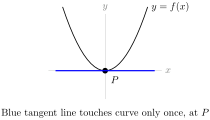
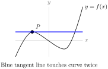
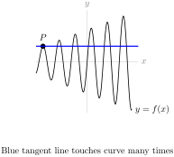
1.2 Another Limit and Computing Velocity
1.2.2 Exercises
1.2.2.1.
1.2.2.2.
1.2.2.3.
1.2.2.4.
Solution.
Objects accelerate as they fall — their speed gets bigger and bigger. So in the entire first second of falling, the object is at its fastest at the one-second mark. We have defined the average speed over a time interval to be \(\dfrac{\mbox{distance moved}}{\mbox{time taken}}\text{.}\) We do not yet know how to compute the distanced travelled by an object whose speed is not constant. But our intuition certainly says that the distance travelled is no more than the maximum speed times the time taken, so that the average speed is no larger that the maximum speed. In the next chapter we will verify that intuition mathematically. See Example 2.13.7. So the average speed will be a smaller number then the speed at the one-second mark, which is the maximum speed.
1.2.2.5.
1.2.2.6.
1.2.2.7.
Solution.
-
Average velocity:\begin{align*} \dfrac{\mbox{change in position}}{\mbox{change in time}} \amp= \dfrac{s(5)-s(3)}{5-3} = \dfrac{(3\cdot 5^2+5)-(3\cdot 3^2+5)}{5-3}\\ \amp=24 \text{ units per second}. \end{align*}
-
From the notes, we know the velocity of an object at time \(a\) is\begin{equation*} v(a)=\lim_{h \rightarrow 0}\frac{s(a+h)-s(a)}{h} \end{equation*}So, in our case:\begin{align*} v(1)\amp=\lim_{h \rightarrow 0}\frac{s(1+h)-s(1)}{h} =\lim_{h \rightarrow 0}\frac{[3(1+h)^2+5]-[3(1)^2+5]}{h} \\ \amp=\lim_{h \rightarrow 0}\frac{6h+3h^2}{h} =\lim_{h \rightarrow 0}6+3h = 6 \end{align*}So the velocity when \(t=1\) is 6 units per second.
1.2.2.8.
Solution.
-
Average velocity:\begin{align*} \dfrac{\text{change in position}}{\text{change in time}} \amp= \dfrac{s(9)-s(1)}{9-1} = \dfrac{3-1}{9-1}\\ \amp=\dfrac{1}{4}\text{ units per second}. \end{align*}
-
From the notes, we know the velocity of an object at time \(a\) is\begin{equation*} v(a)=\lim_{h \rightarrow 0}\frac{s(a+h)-s(a)}{h} \end{equation*}So, in our case:\begin{align*} v(1)\amp=\lim_{h \rightarrow 0}\frac{s(1+h)-s(1)}{h} =\lim_{h \rightarrow 0}\frac{\sqrt{1+h}-1}{h}\\ &=\lim_{h \rightarrow 0}\frac{\sqrt{1+h}-1}{h}\cdot \left( \dfrac{\sqrt{1+h}+1}{\sqrt{1+h}+1}\right)\\ &=\lim_{h \rightarrow 0}\frac{(1+h)-1}{h(\sqrt{1+h}+1)}\\ &=\lim_{h \rightarrow 0}\frac{1}{\sqrt{1+h}+1}=\frac{1}{2}\mbox{ units per second} \end{align*}
-
\begin{align*} v(9)\amp=\lim_{h \rightarrow 0}\frac{s(9+h)-s(9)}{h} =\lim_{h \rightarrow 0}\frac{\sqrt{9+h}-3}{h}\\ &=\lim_{h \rightarrow 0}\frac{\sqrt{9+h}-3}{h}\cdot \left( \dfrac{\sqrt{9+h}+3}{\sqrt{9+h}+3}\right)\\ &=\lim_{h \rightarrow 0}\frac{(9+h)-9}{h(\sqrt{9+h}+3)}\\ &=\lim_{h \rightarrow 0}\frac{1}{\sqrt{9+h}+3}=\frac{1}{6}\mbox{ units per second} \end{align*}
Remark: the average velocity is not the average of the two instantaneous velocities.
1.3 The Limit of a Function
1.3.2 Exercises
1.3.2.1.
Solution.
-
\(\displaystyle \lim_{x \rightarrow -2} f(x)=1\text{:}\) as \(x\) gets very close to \(-2\text{,}\) \(y\) gets very close to \(1\text{.}\)
-
\(\displaystyle \lim_{x \rightarrow 0}f(x)=0\text{:}\) as \(x\) gets very close to \(0\text{,}\) \(y\) also gets very close to \(0\text{.}\)
-
\(\displaystyle \lim_{x \rightarrow 2}f(x)=2\text{:}\) as \(x\) gets very close to \(2\text{,}\) \(y\) gets very close to \(2\text{.}\) We ignore the value of the function where \(x\) is exactly \(2\text{.}\)
1.3.2.2.
Solution.
The limit does not exist. As \(x\) approaches 0 from the left, \(y\) approaches -1; as \(x\) approaches 0 from the right, \(y\) approaches 1. This tells us \(\displaystyle\lim_{x \rightarrow 0^-} f(x)=-1\) and \(\displaystyle\lim_{x \rightarrow 0^+} f(x)=1\text{,}\) but neither of these are what the question asked. Since the limits from left and right do not agree, the limit does not exist. Put another way, there is no single number \(y\) approaches as \(x\) approaches 0, so the limit \(\displaystyle\lim_{x \rightarrow 0} f(x)\) does not exist.
1.3.2.3.
Solution.
-
\(\displaystyle \lim_{x \rightarrow -1^{-}} f(x)=2\text{:}\) as \(x\) approaches \(-1\) from the left, \(y\) approaches 2. It doesn’t matter that the function isn’t defined at \(x=-1\text{,}\) and it doesn’t matter what happens to the right of \(x=-1\text{.}\)
-
\(\displaystyle \lim_{x \rightarrow -1^{+}} f(x)=-2\text{:}\) as \(x\) approaches \(-1\) from the right, \(y\) approaches -2. It doesn’t matter that the function isn’t defined at \(-1\text{,}\) and it doesn’t matter what happens to the left of \(-1\text{.}\)
-
\(\displaystyle \lim_{x \rightarrow -1} f(x) =\) DNE: since the limits from the left and right don’t agree, the limit does not exist.
-
\(\displaystyle \lim_{x \rightarrow -2^{+}} f(x) =0\text{:}\) as \(x\) approaches \(-2\) from the right, \(y\) approaches 0. It doesn’t matter that the function isn’t defined at 2, or to the left of 2.
-
\(\displaystyle \lim_{x \rightarrow 2^{-}} f(x)=0\text{:}\) as \(x\) approaches \(2\) from the left, \(y\) approaches 0. It doesn’t matter that the function isn’t defined at 2, or to the right of 2.
1.3.2.4.

1.3.2.5.
Solution.

1.3.2.6.
1.3.2.7.
1.3.2.8.
1.3.2.9.
Solution.
1.3.2.10.
1.3.2.11.
1.3.2.12.
1.3.2.13.
1.3.2.14.
Solution.
\(\displaystyle\lim_{x \rightarrow 0} \dfrac{1}{x}=\) DNE: as \(x\) gets closer and closer to 0 from the left, \(\dfrac{1}{x}\) becomes a larger and larger negative number; but as \(x\) gets closer and closer to 0 from the right, \(\dfrac{1}{x}\) becomes a larger and larger positive number. So the limit from the left is not the same as the limit from the right, and so \(\displaystyle\lim_{x \rightarrow 0} \dfrac{1}{x}=\) DNE. Contrast this with Question 1.3.2.15.
1.3.2.15.
1.3.2.16.
1.3.2.17.
1.4 Calculating Limits with Limit Laws
1.4.2 Exercises
1.4.2.1.
1.4.2.2.
Solution.
The statement \(\displaystyle\lim_{x \rightarrow 3} \dfrac{f(x)}{g(x)}=10\) tells us that, as \(x\) gets very close to 3, \(f(x)\) is 10 times as large as \(g(x)\text{.}\) We notice that if \(f(x)=10g(x)\text{,}\) then \(\dfrac{f(x)}{g(x)}=10\text{,}\) so \(\displaystyle\lim_{x \rightarrow} \dfrac{f(x)}{g(x)}=10\) wherever \(f\) and \(g\) exist. So it’s enough to find a function \(g(x)\) that has limit 0 at 3. Such a function is (for example) \(g(x)=x-3\text{.}\) So, we take \(f(x)=10(x-3)\) and \(g(x)=x-3\text{.}\) It is easy now to check that \(\displaystyle\lim_{x \rightarrow 3}f(x)=\displaystyle\lim_{x \rightarrow 3}g(x)=0\) and \(\displaystyle\lim_{x \rightarrow 3} \dfrac{f(x)}{g(x)}=\ds\lim_{x \to 3}\frac{10(x-3)}{x-3}=\ds\lim_{x \to 3}10=10\text{.}\)
1.4.2.3.
Solution.
-
As we saw in Question 1.4.2.2, \(x-3\) is a function with limit 0 at \(x=3\text{.}\) So one way of thinking about this question is to try choosing \(f(x)\) so that \(\frac{f(x)}{g(x)}=g(x)=x-3\) too, which leads us to the solution \(f(x)=(x-3)^2\) and \(g(x)=x-3\text{.}\) This is one of many, many possible answers.
-
Another way of thinking about this problem is that \(f(x)\) should go to 0 “more strongly” than \(g(x)\) when \(x\) approaches \(3\text{.}\) One way of a function going to 0 really strongly is to make that function identically zero. So we can set \(f(x)=0\) and \(g(x)=x-3\text{.}\) Now \(\dfrac{f(x)}{g(x)}\) is equal to 0 whenever \(x \neq 3\text{,}\) and is undefined at \(x=3\text{.}\) Since the limit as \(x\) goes to three does not take into account the value of the function at 3, we have \(\displaystyle\lim_{x \rightarrow 3} \dfrac{f(x)}{g(x)}=0\text{.}\)
There are many more possible answers.
1.4.2.4.
Solution.
One way to start this problem is to remember \(\displaystyle \lim_{x \rightarrow 0} \dfrac{1}{x^2}=\infty\text{.}\) (Using \(\dfrac{1}{x^2}\) as opposed to \(\dfrac{1}{x}\) is important, since \(\displaystyle\lim_{x \rightarrow 0}\dfrac{1}{x}\) does not exist.) Then by “shifting” by three, we find \(\displaystyle \lim_{x \rightarrow 3} \dfrac{1}{(x-3)^2}=\infty\text{.}\) So it is enough to arrange that \(\dfrac{f(x)}{g(x)}=\dfrac{1}{(x-3)^2}\text{.}\) We can achieve this with \(f(x)=x-3\) and \(g(x)=(x-3)^3\text{,}\) and maintain \(\displaystyle\lim_{x \rightarrow 3}f(x)=\displaystyle\lim_{x \rightarrow 3}g(x)=0\text{.}\) Again, this is one of many possible solutions.
1.4.2.5.
Solution.
Any real number; positive infinity; negative infinity; does not exist.
This is an important thing to remember: often, people see limits that look like \(\dfrac{0}{0}\) and think that the limit must be 1, or 0, or infinite. In fact, this limit could be anything--it depends on the relationship between \(f\) and \(g\text{.}\)
Questions 1.4.2.2 and 1.4.2.3 show us examples where the limit is 10 and 0; they can easily be modified to make the limit any real number.
Question 1.4.2.4 show us an example where the limit is \(\infty\text{;}\) it can easily be modified to make the limit \(-\infty\) or DNE.
1.4.2.6.
1.4.2.7.
1.4.2.8.
1.4.2.9. (✳).
1.4.2.10. (✳).
1.4.2.11. (✳).
1.4.2.12. (✳).
1.4.2.13. (✳).
1.4.2.14. (✳).
1.4.2.15. (✳).
1.4.2.16. (✳).
Solution.
If we try to plug in \(x=4\text{,}\) we find the denominator is zero. So to get a better idea of what’s happening, we factor the numerator and denominator:
\begin{align*}
\lim\limits_{x\rightarrow 4}\frac{x^2-4x}{x^2-16}
&=\lim\limits_{x\rightarrow 4}\frac{x(x-4)}{(x+4)(x-4)}\\
&=\lim\limits_{x\rightarrow 4}\frac{x}{x+4}\\
&=\frac{4}{8}=\frac{1}{2}
\end{align*}
1.4.2.17. (✳).
Solution.
If we try to plug in \(x=2\text{,}\) we find the denominator is zero. So to get a better idea of what’s happening, we factor the numerator:
\begin{align*}
\lim\limits_{x\rightarrow 2}\frac{x^2+x-6}{x-2}&=
\lim\limits_{x\rightarrow 2}\frac{(x+3)(x-2)}{x-2}\\
&=
\lim\limits_{x\rightarrow 2}(x+3)=5
\end{align*}
1.4.2.18. (✳).
1.4.2.19.
1.4.2.20. (✳).
Solution.
\begin{align*}
\frac{\sqrt{x^2+8}-3}{x+1}
&= \frac{\sqrt{x^2+8}-3}{x+1}
\cdot \frac{\sqrt{x^2+8}+3}{\sqrt{x^2+8}+3}\\
&= \frac{(x^2+8)-3^2}{(x+1)(\sqrt{x^2+8}+3)}\\
&= \frac{x^2-1}{(x+1)(\sqrt{x^2+8}+3)}\\
&= \frac{(x-1)(x+1)}{(x+1)(\sqrt{x^2+8}+3)}\\
&= \frac{(x-1)}{\sqrt{x^2+8}+3}\\
\lim_{x\to -1} \frac{\sqrt{x^2+8}-3}{x+1}
&=\lim_{x\to-1} \frac{(x-1)}{\sqrt{x^2+8}+3}\\
&= \frac{-2}{\sqrt{9}+3 }\\
&= -\frac{2}{6} = -\frac{1}{3}.
\end{align*}
1.4.2.21. (✳).
Solution.
If we try to do the limit naively we get \(0/0\text{.}\) Hence we must simplify.
\begin{align*}
\frac{\sqrt{x+7}-\sqrt{11-x}}{2x-4}
&= \frac{\sqrt{x+7}-\sqrt{11-x}}{2x-4}
\cdot \left(\frac{\sqrt{x+7}+\sqrt{11-x}}{\sqrt{x+7}+\sqrt{11-x}}\right)\\
&= \frac{(x+7)-(11-x)}{(2x-4)(\sqrt{x+7}+\sqrt{11-x})}\\
&= \frac{2x-4}{(2x-4)(\sqrt{x+7}+\sqrt{11-x})}\\
&= \frac{1}{\sqrt{x+7}+\sqrt{11-x}}\\
\mbox{So, }\lim_{x\to2} \frac{\sqrt{x+7}-\sqrt{11-x}}{2x-4}
&=\lim_{x\to2} \frac{1}{\sqrt{x+7}+\sqrt{11-x}}\\
&= \frac{1}{\sqrt{9}+\sqrt{9} }\\
&= \frac{1}{6}
\end{align*}
1.4.2.22. (✳).
Solution.
If we try to do the limit naively we get \(0/0\text{.}\) Hence we must simplify.
\begin{align*}
\frac{\sqrt{x+2}-\sqrt{4-x}}{x-1}
&= \frac{\sqrt{x+2}-\sqrt{4-x}}{x-1}
\cdot \frac{\sqrt{x+2}+\sqrt{4-x}}{\sqrt{x+2}+\sqrt{4-x}}\\
&= \frac{(x+2)-(4-x)}{(x-1)(\sqrt{x+2}+\sqrt{4-x})}\\
&= \frac{2x-2}{(x-1)(\sqrt{x+2}+\sqrt{4-x})}\\
&= \frac{2}{\sqrt{x+2}+\sqrt{4-x}}
\end{align*}
So the limit is
\begin{align*}
\lim_{x\to1} \frac{\sqrt{x+2}-\sqrt{4-x}}{x-1}
&=\lim_{x\to1} \frac{2}{\sqrt{x+2}+\sqrt{4-x}}\\
&= \frac{2}{\sqrt{3}+\sqrt{3} }\\
&= \frac{1}{\sqrt{3}}
\end{align*}
1.4.2.23. (✳).
Solution.
If we try to do the limit naively we get \(0/0\text{.}\) Hence we must simplify.
\begin{align*}
\frac{\sqrt{x-2}-\sqrt{4-x}}{x-3}
&= \frac{\sqrt{x-2}-\sqrt{4-x}}{x-3}
\cdot \frac{\sqrt{x-2}+\sqrt{4-x}}{\sqrt{x-2}+\sqrt{4-x}}\\
&= \frac{(x-2)-(4-x)}{(x-3)(\sqrt{x-2}+\sqrt{4-x})}\\
&= \frac{2x-6}{(x-3)(\sqrt{x-2}+\sqrt{4-x})}\\
&= \frac{2}{\sqrt{x-2}+\sqrt{4-x}}\\
\mbox{So, }
\lim_{x\to 3} \frac{\sqrt{x-2}-\sqrt{4-x}}{x-3}
&=\lim_{x\to 3} \frac{2}{\sqrt{x-2}+\sqrt{4-x}}\\
&= \frac{2}{1+1 }\\
&= 1.
\end{align*}
1.4.2.24. (✳).
Solution.
Here we get \(0/0\) if we try the naive approach. Hence we must simplify.
\begin{align*}
\frac{3t-3}{2 - \sqrt{5-t}}
&= \frac{3t-3}{2 - \sqrt{5-t}} \times \frac{2 + \sqrt{5-t}}{2 + \sqrt{5-t}}\\
&= \left(2 + \sqrt{5-t}\right)\,\frac{3t-3}{2^2 - (5 - t)}\\
&= \left(2 + \sqrt{5-t}\right)\,\frac{3t-3}{t-1}\\
&= \left(2 + \sqrt{5-t}\right)\,\frac{3(t-1)}{t-1}\\
\end{align*}
So there is a cancelation. Hence the limit is
\begin{align*}
\lim_{t\to1}\frac{3t-3}{2 - \sqrt{5-t}}
&=\lim_{t\to1} \left(2 + \sqrt{5-t}\right) \cdot 3\\
&= 12
\end{align*}
1.4.2.25.
Solution.
This is a classic example of the Squeeze Theorem. It is tempting to try to use arithmetic of limits: \(\displaystyle\lim_{x \rightarrow 0} -x^2=0\text{,}\) and \(\displaystyle\lim_{x \rightarrow 0}\cos\left(\frac{3}{x}\right)=something\text{,}\) and zero times something is 0. However, this is invalid reasoning, because we can only use arithmetic of limits when those limits exist, and \(\displaystyle\lim_{x \rightarrow 0}\cos\left(\frac{3}{x}\right)\) does not exist. So, we need the Squeeze Theorem.
Since \(-1 \leq \cos\left(\frac{3}{x}\right) \leq 1\text{,}\) we can bound our function of interest from above and below (being careful of the sign!):
\begin{equation*}
-x^2({\textcolor{red}{1}})\leq -x^2{\textcolor{red}{\cos\left(\frac{3}{x}\right)}} \leq -x^2({\textcolor{red}{-1}})
\end{equation*}
So our function of interest is between \(-x^2\) and \(x^2\text{.}\) Since \(\displaystyle\lim_{x \rightarrow 0} -x^2=\displaystyle\lim_{x \rightarrow 0} x^2=0\text{,}\) by the Squeeze Theorem, also \(\displaystyle\lim_{x \rightarrow 0}-x^2\cos\left(\frac{3}{x}\right)=0\text{.}\)
Advice about writing these up: whenever we use the Squeeze Theorem, we need to explicitly write that two things are true: that the function we’re interested is bounded above and below by two other functions, and that both of those functions have the same limit. Then we can conclude (and we need to write this down as well!) that our original function also shares that limit.
1.4.2.26.
Solution.
Recall that sine and cosine, no matter what (real-number) input we feed them, spit out numbers between \(-1\) and \(1\text{.}\) So we can bound our horrible numerator, rather than trying to deal with it directly.
\begin{equation*}
x^4({\textcolor{red}{-1}})+5x^2({\textcolor{red}{-1}})+2
\leq
x^4{\textcolor{red}{\sin\left(\frac{1}{x}\right)}}+5x^2{\textcolor{red}{\cos\left(\frac{1}{x}\right)}}+2 \leq
x^4({\textcolor{red}{1}})+5x^2({\textcolor{red}{1}})+2
\end{equation*}
Further, notice that our bounded functions tend to the same value as \(x\) goes to \(0\text{:}\)
\begin{equation*}
\displaystyle\lim_{x \rightarrow 0} x^4{(-1)}+5x^2{(-1)}+2=
\displaystyle\lim_{x \rightarrow 0} x^4+5x^2+2=2.
\end{equation*}
So, by the Squeeze Theorem, also
\begin{equation*}
\displaystyle\lim_{x \rightarrow 0}{x^4\sin\left(\frac{1}{x}\right)+5x^2\cos\left(\frac{1}{x}\right)+2}=2.
\end{equation*}
Now, we evaluate our original limit:
\begin{equation*}
\displaystyle\lim_{x \rightarrow 0}\dfrac{x^4\sin\left(\frac{1}{x}\right)+5x^2\cos\left(\frac{1}{x}\right)+2}{(x-2)^2}=\frac{2}{(-2)^2}=\frac{1}{2}.
\end{equation*}
1.4.2.27. (✳).
Solution.
\(\ds\lim_{x\to0}\sin^2\left(\dfrac{1}{x}\right)=DNE\text{,}\) so we think about using the Squeeze Theorem. We’ll need to bound the expression \(x\sin^2\left(\dfrac{1}{x}\right)\text{,}\) but the bounding is a little delicate. For any non-zero value we plug in for \(x\text{,}\) \(\sin^2\left(\dfrac{1}{x}\right)\) is a number in the interval \([0,1]\text{.}\) If \(a\) is a number in the interval \([0,1]\text{,}\) then:
\begin{align*}
0 \leq &xa \leq x & &\mbox{ when $x$ is positive}\\
x \leq &xa \leq 0 & &\mbox{ when $x$ is negative}
\end{align*}
We’ll show you two ways to use this information to create bounds that will allow you to apply the Squeeze Theorem.
-
Solution 1: We will evaluate separately the limit from the right and from the left.When \(x \gt 0\text{,}\)\begin{equation*} 0 \leq x\sin^2\left(\dfrac{1}{x}\right) \leq x \end{equation*}because \(0 \leq \sin^2\left(\dfrac{1}{x}\right) \leq 1\text{.}\) Since\begin{equation*} \ds\lim_{x \to 0^+} 0 = 0 \qquad\mbox{and}\qquad \ds\lim_{x \to 0^+}x=0 \end{equation*}then by the Squeeze Theorem, also\begin{equation*} \ds\lim_{x \to 0^+} x\sin^2\left(\dfrac{1}{x}\right)=0 . \end{equation*}Similarly, When \(x \lt 0\text{,}\)\begin{equation*} x \leq x\sin^2\left(\dfrac{1}{x}\right) \leq 0 \end{equation*}because \(0 \leq \sin^2\left(\dfrac{1}{x}\right) \leq 1\text{.}\) Since\begin{equation*} \ds\lim_{x \to 0^-} x = 0 \qquad\mbox{and}\qquad \ds\lim_{x \to 0^-}0=0 \end{equation*}then by the Squeeze Theorem, also\begin{equation*} \ds\lim_{x \to 0^-} x\sin^2\left(\dfrac{1}{x}\right)=0. \end{equation*}Since the one-sided limits are both equal to zero,\begin{equation*} \ds\lim_{x\to0}x\sin^2\left(\frac{1}{x}\right)=0. \end{equation*}Remark: this is a perfectly fine proof, but it seems to repeat itself. Since the cases \(x \lt 0\) and \(x \gt 0\) are so similar, we would like to take care of them together. This can be done as shown below.
-
Solution 2: If \(x\neq 0\text{,}\) then \(0\leq\sin^2\left(\dfrac{1}{x}\right)\leq1\text{,}\) so\begin{equation*} -|x| \leq x\sin^2\left(\frac{1}{x}\right)\leq|x|. \end{equation*}Since\begin{equation*} \ds\lim_{x \to 0}-|x|=0\qquad\mbox{and}\qquad\lim_{x\to0}|x|=0 \end{equation*}then by the Squeeze Theorem, also\begin{equation*} \lim_{x \to 0} x\sin^2\left(\frac{1}{x}\right)=0. \end{equation*}
1.4.2.28.
Solution.
When we plug \(w=5\) in to the numerator and denominator, we find that each becomes zero. Since we can’t divide by zero, we have to dig a little deeper. When a polynomial has a root, that also means it has a factor: we can factor \((w-5)\) out of the top. That lets us cancel:
\begin{equation*}
\displaystyle\lim_{w \rightarrow 5} \dfrac{2w^2-50}{(w-5)(w-1)}
=\displaystyle\lim_{w \rightarrow 5} \dfrac{2(w-5)(w+5)}{(w-5)(w-1)}
=\displaystyle\lim_{w \rightarrow 5} \dfrac{2(w+5)}{(w-1)}.
\end{equation*}
Note that the function \(\dfrac{2w^2-50}{(w-5)(w-1)} \) is NOT defined at \(w=5\text{,}\) while the function \(\dfrac{2(w+5)}{(w-1)}\) IS defined at \(w=5\text{;}\) so strictly speaking, these two functions are not equal. However, for every value of \(w\) that is not 5, the functions are the same, so their limits are equal. Furthermore, the limit of the second function is quite easy to calculate, since we’ve eliminated the zero in the denominator: \(\displaystyle\lim_{w \rightarrow 5} \dfrac{2(w+5)}{(w-1)}
=\dfrac{2(5+5)}{5-1}=5.\)
So \(\displaystyle\lim_{w \rightarrow 5} \dfrac{2w^2-50}{(w-5)(w-1)}=\displaystyle\lim_{w \rightarrow 5} \dfrac{2(w+5)}{(w-1)}=5\text{.}\)
1.4.2.29.
Solution.
When we plug in \(r=-5\) to the denominator, we find that it becomes 0, so we need to dig deeper. The numerator is not zero, so cancelling is out. Notice that the denominator is factorable: \(r^2+10r+25 = (r+5)^2\text{.}\) As \(r\) approaches \(-5\) from either side, the denominator gets very close to zero, but stays positive. The numerator gets very close to \(-5\text{.}\) So, as \(r\) gets closer to \(-5\text{,}\) we have something close to \(-5\) divided by a very small, positive number. Since the denominator is small, the fraction will have a large magnitude; since the numerator is negative and the denominator is positive, the fraction will be negative. So, \(\displaystyle\lim_{r \rightarrow -5} \dfrac{r}{r^2+10r+25}=-\infty\)
1.4.2.30.
Solution.
First, we find \(\displaystyle\lim_{x \rightarrow -1}\dfrac{x^3+x^2+x+1}{3x+3}\text{.}\) When we plug in \(x=-1\) to the top and the bottom, both become zero. In a polynomial, where there is a root, there is a factor, so this tells us we can factor out \((x+1)\) from both the top and the bottom. It’s pretty easy to see how to do this in the bottom. For the top, if you’re having a hard time, one factoring method (of many) to try is long division of polynomials; another is to factor out \((x+1)\) from the first two terms and the last two terms. (Detailed examples of long division are given in Appendix A.16 and Examples 1.10.2 and 1.10.3 of the CLP-2 Integral Calculus text.)
\begin{align*}
\displaystyle\lim_{x \rightarrow -1}\dfrac{x^3+x^2+x+1}{3x+3}&=
\displaystyle\lim_{x \rightarrow -1}\dfrac{x^2(x+1)+(x+1)}{3x+3}
=\displaystyle\lim_{x \rightarrow -1}\dfrac{(x+1)(x^2+1)}{3(x+1)}\\
&=
\displaystyle\lim_{x \rightarrow -1}\dfrac{x^2+1}{3}=\frac{(-1)^2+1}{3}=\frac{2}{3}.
\end{align*}
One thing to note here is that the function \(\dfrac{x^3+x^2+x+1}{3x+3}\) is not defined at \(x=-1\) (because we can’t divide by zero). So we replaced it with the function \(\dfrac{x^2+1}{3}\text{,}\) which IS defined at \(x=-1\text{.}\) These functions only differ at \(x=-1\text{;}\) they are the same at every other point. That is why we can use the second function to find the limit of the first function.
Now we’re ready to find the actual limit asked in the problem:
\begin{equation*}
\displaystyle\lim_{x \rightarrow -1}\sqrt{\dfrac{x^3+x^2+x+1}{3x+3}}=
\sqrt{\dfrac{2}{3}}.
\end{equation*}
1.4.2.31.
Solution.
When we plug \(x=0\) into the denominator, we get 0, which means we need to look harder. The numerator is not zero, so we won’t be able to cancel our problems away. Let’s factor to make things clearer.
\begin{equation*}
\dfrac{x^2+2x+1}{3x^5-5x^3} =
\dfrac{(x+1)^2}{x^3(3x^2-5)}
\end{equation*}
As \(x\) gets close to 0, the numerator is close to 1; the term \((3x^2-5)\) is negative; and the sign of \(x^3\) depends on the direction we’re approaching 0 from. Since we’re dividing a numerator that is very close to 1 by something that’s getting very close to 0, the magnitude of the fraction is getting bigger and bigger without bound. Since the sign of the fraction flips depending on whether we are using numbers slightly bigger than 0, or slightly smaller than 0, that means the one-sided limits are \(\infty\) and \(-\infty\text{,}\) respectively. (In particular, \(\displaystyle\lim_{x \rightarrow 0^-}\dfrac{x^2+2x+1}{3x^5-5x^3}=\infty\) and \(\displaystyle\lim_{x \rightarrow 0^+}\dfrac{x^2+2x+1}{3x^5-5x^3}=-\infty
\text{.}\)) Since the one-sided limits don’t agree, the limit does not exist.
1.4.2.32.
Solution.
As usual, we first try plugging in \(t=7\text{,}\) but the denominator is 0, so we need to think harder. The top and bottom are both squares, so let’s go ahead and factor: \(\dfrac{t^2x^2+2tx+1}{t^2-14t+49}=\dfrac{(tx+1)^2}{(t-7)^2}\text{.}\) Since \(x\) is positive, the numerator is nonzero. Also, the numerator is positive near \(t=7\text{.}\) So, we have something positive and nonzero on the top, and we divide it by the bottom, which is positive and getting closer and closer to zero. The quotient is always positive near \(t=7\text{,}\) and it is growing in magnitude without bound, so \(\displaystyle\lim_{t \rightarrow 7} \dfrac{t^2x^2+2tx+1}{t^2-14t+49}=\infty\text{.}\)
Remark: there is an important reason we specified that \(x\) must be a positive constant. Suppose \(x\) were \(-\frac{1}{7}\) (which is negative and so was not allowed in the question posed). In this case, we would have
\begin{align*}
\ds\lim_{t\rightarrow 7} \frac{t^2x^2+2tx+1}{t^2-14t+49}
&= \ds\lim_{t\rightarrow 7} \frac{(tx+1)^2}{(t-7)^2}\\
&= \ds\lim_{t\rightarrow 7} \frac{(-t/7+1)^2}{(t-7)^2}\\
&= \ds\lim_{t\rightarrow 7} \frac{(-1/7)^2(t-7)^2}{(t-7)^2}\\
&= \ds\lim_{t\rightarrow 7} (-1/7)^2\\
&= \dfrac{1}{49}\\
&\neq \infty
\end{align*}
1.4.2.33.
1.4.2.34.
Solution.
There’s a lot going on inside that sine function... and we don’t have to care about any of it. No matter what horrible thing we put inside a sine function, the sine function will spit out a number between \(-1\) and \(1\text{.}\) So that means we can bound our horrible function like this:
\begin{equation*}
(x-1)^2\cdot({\textcolor{red}{-1}}) \leq (x-1)^2{\textcolor{red}{\sin\left[\left(\dfrac{x^2-3x+2}{x^2-2x+1}\right)^2+15\right]}}
\leq(x-1)^2\cdot({\textcolor{red}{1}})
\end{equation*}
Since \(\displaystyle\lim_{x \rightarrow 1}(x-1)^2\cdot(-1) = \displaystyle\lim_{x\rightarrow1}(x-1)^2\cdot(1)=0\text{,}\) the Squeeze Theorem tells us that
\begin{equation*}
\displaystyle\lim_{x \rightarrow 1} (x-1)^2\sin\left[\left(\dfrac{x^2-3x+2}{x^2-2x+1}\right)^2+15\right]=0
\end{equation*}
as well.
1.4.2.35. (✳).
Solution.
Since \(-1 \leq \sin x \leq 1\) for all values of \(x\text{,}\)
\begin{align*}
{-1}&\leq \sin\big(x^{-100}\big)\leq 1\\
( \textcolor{red}{-1} )x^{1/101} \amp
\leq x^{1/101}\textcolor{red}{\sin\big(x^{-100}\big)}
\leq(\textcolor{red}{1})x^{1/101}
~~~\mbox{when $x >0$, and }\\
( \textcolor{red}{1})x^{1/101} \amp
\leq x^{1/101}\textcolor{red}{\sin\big(x^{-100}\big)}
\leq (\textcolor{red}{-1})x^{1/101}
~~~\mbox{when $x \lt 0$. Also, }\\
\lim_{x \to 0}x^{1/101}&=\lim_{x \to 0}-x^{1/101}=0
~~~\mbox{So, by the Squeeze Theorem,}\\
\lim_{x \to 0^-}x^{1/101} \sin\big(x^{-100}\big)&=0=\lim_{x \to 0^+}x^{1/101} \sin\big(x^{-100}\big)~~~\mbox{and so}\\
0&=\lim_{x\rightarrow 0} x^{1/101} \sin\big(x^{-100}\big).
\end{align*}
Remark: there is a technical point here. When \(x\) is a positive number, \(-x\) is negative, so \((-1)x \lt x\text{.}\) But, when \(x\) is negative, \(-x\) is positive, so \((-1)x \gt x\text{.}\) This is why we take the one-sided limits of our function, and apply the Squeeze Theorem to them separately. It is not true to say that, for instance, \((-1)x^{1/101} \leq x^{1/101} \sin\big(x^{-100}\big)\) when \(x\) is near zero, because this does not hold when \(x\) is less than zero.
1.4.2.36. (✳).
1.4.2.37.
1.4.2.38.
Solution.
Since we can’t plug in \(t=\frac{1}{2}\text{,}\) we’ll simplify. One way to start is to add the fractions in the numerator. We’ll need a common demoninator, such as \(3t^2(t^2-1)\text{.}\)
\begin{align*}
\lim_{t \to \frac{1}{2}}\dfrac{\frac{1}{3t^2}+\frac{1}{t^2-1}}{2t-1}&=
\lim_{t \to \frac{1}{2}}\dfrac{\frac{t^2-1}{3t^2(t^2-1)}+\frac{3t^2}{3t^2(t^2-1)}}{2t-1}\\
&=\lim_{t \to \frac{1}{2}}\frac{\frac{4t^2-1}{3t^2(t^2-1)}}{2t-1}\\
&=\lim_{t \to \frac{1}{2}}\frac{4t^2-1}{3t^2(t^2-1)(2t-1)}\\
&=\lim_{t \to \frac{1}{2}}\frac{(2t+1)(2t-1)}{3t^2(t^2-1)(2t-1)}\\
&=\lim_{t \to \frac{1}{2}}\frac{2t+1}{3t^2(t^2-1)}\\
\end{align*}
Since we cancelled out the term that was causing the numerator and denominator to be zero when \(t=\frac{1}{2}\text{,}\) now \(t=\frac{1}{2}\) is in the domain of our function, so we simply plug it in:
\begin{align*}
&=\frac{1+1}{\frac{3}{4}\left(\frac{1}{4}-1\right)}\\
&=\frac{2}{\frac{3}{4}\left(-\frac{3}{4}\right)}\\
&=-\frac{32}{9}
\end{align*}
1.4.2.39.
Solution.
We recall that
\begin{align*}
|x|&=\left\{\begin{array}{rcl}
x&,&x \ge 0\\
-x&,&x \lt 0
\end{array}\right.\\
\end{align*}
So,
\begin{align*}
\frac{|x|}{x} &= \left\{\begin{array}{rcl}
\frac{x}{x}&,&x \gt 0\\
\frac{-x}{x}&,&x \lt 0
\end{array}\right.\\
&= \left\{\begin{array}{rcl}
1&,&x \gt 0\\
-1&,&x \lt 0
\end{array}\right.\\
\end{align*}
Therefore,
\begin{align*}
3+\frac{|x|}{x}&=\left\{\begin{array}{rcl}
4&,&x \gt 0\\
2&,&x \lt 0
\end{array}\right.
\end{align*}
Since our function gives a value of 4 when \(x\) is to the right of zero, and a value of 2 when \(x\) is to the left of zero, \(\ds\lim_{x \to 0} \left(3+\dfrac{|x|}{x}\right)\) does not exist.
To further clarify the situation, the graph of \(y=f(x)\) is sketched below:
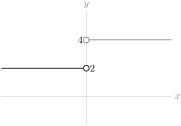
1.4.2.40.
Solution.
If we factor out 3 from the numerator, our function becomes \(3\dfrac{|d+4|}{d+4}\text{.}\) We recall that
\begin{align*}
|X|&=\left\{\begin{array}{rcl}
X&,&X \ge 0\\
-X&,&X \lt 0
\end{array}\right.\\
\end{align*}
So, with \(X=d+4\text{,}\)
\begin{align*}
3\frac{|d+4|}{d+4} &= \left\{\begin{array}{lcl}
3\frac{d+4}{d+4}&,&d+4 \gt 0\\
&\\
3\frac{-(d+4)}{d+4}&,&d+4 \lt 0
\end{array}\right.\\
&= \left\{\begin{array}{rcl}
3&,&d \gt -4\\
-3&,&d \lt -4
\end{array}\right.
\end{align*}
Since our function gives a value of 3 when \(d \gt -4\text{,}\) and a value of \(-3\) when \(d \lt -4\text{,}\) \(\ds\lim_{d \to -4} \dfrac{|3d+12|}{d+4}\) does not exist.
To further clarify the situation, the graph of \(y=f(x)\) is sketched below:
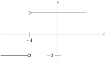
1.4.2.41.
Solution.
Note that \(x=0\) is in the domain of our function, and nothing “weird” is happening there: we aren’t dividing by zero, or taking the square root of a negative number, or joining two pieces of a piecewise-defined function. So, as \(x\) gets extremely close to zero, \(\dfrac{5x-9}{|x|+2}\) is getting extremely close to \(\dfrac{0-9}{0+2}=\dfrac{-9}{2}\text{.}\)
That is, \(\ds\lim_{x \to 0}\dfrac{5x-9}{|x|+2}=-\dfrac{9}{2}\text{.}\)
1.4.2.42.
1.4.2.43. (✳).
Solution.
As \(x\rightarrow-2\text{,}\) the denominator goes to 0, and the numerator goes to \(-2a+7\text{.}\) For the ratio to have a limit, the numerator must also converge to \(0\text{,}\) so we need \(a=\dfrac{7}{2}\text{.}\) Then,
\begin{align*}
\lim_{x \to -2}\frac{x^2+ax+3}{x^2+x-2}&=\lim_{x \to -2}\frac{x^2+\frac{7}{2}x+3}{(x+2)(x-1)}\\
&=\lim_{x \to -2}\frac{(x+2)(x+\frac{3}{2})}{(x+2)(x-1)}\\
&=\lim_{x \to -2}\frac{x+\frac{3}{2}}{x-1}\\
&=\frac{1}{6}
\end{align*}
so the limit exists when \(a=\dfrac{7}{2}\text{.}\)
1.4.2.44.
Solution.
-
\(\displaystyle\lim_{x \rightarrow 0} f(x)=0\text{:}\) as \(x\) approaches 0, so does \(2x\text{.}\)
-
\(\displaystyle\lim_{x \rightarrow 0} g(x)=\) DNE: the left and right limits do not agree, so the limit does not exist. In particular: \(\displaystyle\lim_{x \rightarrow 0^-} g(x)=-\infty\) and \(\displaystyle\lim_{x \rightarrow 0^+} g(x)=\infty\text{.}\)
-
\(\displaystyle\lim_{x \rightarrow 0} f(x)g(x)=\displaystyle\lim_{x \rightarrow 0} 2x\cdot\dfrac{1}{x}=\displaystyle\lim_{x \rightarrow 0} 2=2\text{.}\) Remark: although the limit of \(g(x)\) does not exist here, the limit of \(f(x)g(x)\) does.
-
\(\displaystyle \displaystyle\lim_{x \rightarrow 0} \dfrac{f(x)}{g(x)}=\displaystyle\lim_{x \rightarrow 0} \dfrac{2x}{\frac{1}{x}}=\displaystyle\lim_{x \rightarrow 0} 2x^2=0\)
-
\(\displaystyle \displaystyle\lim_{x \rightarrow 2} f(x)+g(x)=\displaystyle\lim_{x \rightarrow 2} 2x+\dfrac{1}{x}=4+\frac{1}{2}=\dfrac{9}{2}\)
-
\(\displaystyle \displaystyle\lim_{x \rightarrow 0} \dfrac{f(x)+1}{g(x+1)}= \displaystyle\lim_{x \rightarrow 0} \dfrac{2x+1}{\frac{1}{x+1}}=\dfrac{1}{1}= 1\)
1.4.2.45.
Solution.
We can begin by plotting the points that are easy to read off the diagram.
\begin{equation*}
\begin{array}{c|c|c}
x&f(x)&\frac{1}{f(x)}\\
\hline
-3&-3&\frac{-1}{3}\\
-2&0&UND\\
-1&3&\frac{1}{3}\\
0&3&\frac{1}{3}\\
1&\frac{3}{2}&\frac{2}{3}\\
2&0&UND\\
3&1&1
\end{array}
\end{equation*}
Note that \(\frac{1}{f(x)}\) is undefined when \(f(x) = 0\text{.}\) So \(\frac{1}{f(x)}\) is undefined at \(x=-2\) and \(x=2\text{.}\) We shall look more closely at the behaviour of \(\frac{1}{f(x)}\) for \(x\) near \(\pm 2\) shortly.
Plotting the above points, we get the following picture:
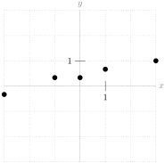
Since \(f(x)\) is constant when \(x\) is between -1 and 0, then also \(\frac{1}{f(x)}\) is constant between -1 and 0, so we update our picture:
The big question that remains is the behaviour of \(\frac{1}{f(x)}\) when \(x\) is near -2 and 2. We can answer this question with limits. As \(x\) approaches \(-2\) from the left, \(f(x)\) gets closer to zero, and is negative. So \(\frac{1}{f(x)}\) will be negative, and will increase in magnitude without bound; that is, \(\displaystyle\lim_{x \rightarrow -2^-}\dfrac{1}{f(x)}=-\infty\text{.}\) Similarly, as \(x\) approaches \(-2\) from the right, \(f(x)\) gets closer to zero, and is positive. So \(\frac{1}{f(x)}\) will be positive, and will increase in magnitude without bound; that is, \(\displaystyle\lim_{x \rightarrow -2^+}\dfrac{1}{f(x)}=\infty\text{.}\) We add this behaviour to our graph:
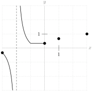
Now, we consider the behaviour at \(x=2\text{.}\) Since \(f(x)\) gets closer and closer to 0 AND is positive as \(x\) approaches 2, we conclude \(\displaystyle\lim_{x \rightarrow 2} \frac{1}{f(x)}=\infty\text{.}\) Adding to our picture:
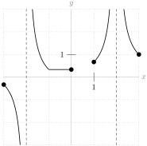
Now the only remaining blank space is between \(x=0\) and \(x=1\text{.}\) Since \(f(x)\) is a smooth curve that stays away from 0, we can draw some kind of smooth curve here, and call it good enough. (Later on we’ll go into more details about drawing graphs. The purpose of this exercise was to utilize what we’ve learned about limits.)

1.4.2.46.
Solution.
We can start by examining points.
| \(x\) | \(f(x)\) | \(g(x)\) | \(\dfrac{f(x)}{g(x)}\) |
| \(-3\) | \(-3\) | \(-1.5\) | \(2\) |
| \(-2\) | \(0\) | \(0\) | UND |
| \(-1\) | \(3\) | \(1.5\) | \(2\) |
| \(-0\) | \(3\) | \(1.5\) | \(2\) |
| \(1\) | \(1.5\) | \(.75\) | \(2\) |
| \(2\) | \(0\) | \(0\) | UND |
| \(3\) | \(1\) | \(.5\) | \(2\) |
We cannot divide by zero, so \(\dfrac{f(x)}{g(x)}\) is not defined when \(x=\pm2\text{.}\) But for every other value of \(x\) that we plotted, \(f(x)\) is twice as large as \(g(x)\text{,}\) \(\dfrac{f(x)}{g(x)}=2\text{.}\) With this in mind, we see that the graph of \(f(x)\) is exactly the graph of \(2g(x)\text{.}\)
This gives us the graph below.
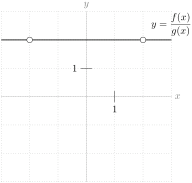
Remark: \(f(2)=g(2)=0\text{,}\) so \(\dfrac{f(2)}{g(2)}\) does not exist, but \(\displaystyle\lim_{x \rightarrow 2}\dfrac{f(x)}{g(x)}=2\text{.}\) Although we are trying to “divide by zero” at \(x=\pm 2\text{,}\) it would be a mistake here to interpret this as a vertical asymptote.
1.4.2.47.
Solution.
Velocity of white ball when \(t=1\) is \(\displaystyle\lim_{h \rightarrow 0}\dfrac{s(1+h)-s(1)}{h}\text{,}\) so the given information tells us \(\displaystyle\lim_{h \rightarrow 0}\dfrac{s(1+h)-s(1)}{h}=5\text{.}\) Then the velocity of the red ball when \(t=1\) is \(\displaystyle\lim_{h \rightarrow 0}\dfrac{2s(1+h)-2s(1)}{h}=
\displaystyle\lim_{h \rightarrow 0}2\cdot\dfrac{s(1+h)-s(1)}{h}=2\cdot 5 = 10\text{.}\)
1.4.2.48.
Solution.
1.4.2.48.a Neither limit exists. When \(x\) gets close to 0, these limits go to positive infinity from one side, and negative infinity from the other.
1.4.2.48.b \(\displaystyle\lim_{x \rightarrow 0} [f(x)+g(x)]=
\displaystyle\lim_{x \rightarrow 0} \left[\frac{1}{x}-\frac{1}{x}\right]=
\displaystyle\lim_{x \rightarrow 0} 0=0\text{.}\)
1.4.2.48.c No: this is an example of a time when the two individual functions have limits that don’t exist, but the limit of their sum does exist. This “sum rule” is only true when both \(\displaystyle\lim_{x \rightarrow a} f(x)\) and \(\displaystyle\lim_{x \rightarrow a} g(x)\) exist.
1.4.2.49.
Solution.
1.4.2.49.a When we evaluate the limit from the left, we only consider values of \(x\) that are less than zero. For these values of \(x\text{,}\) our function is \(x^2-3\text{.}\) So, \(\displaystyle\lim_{x \rightarrow 0^-} f(x)=\lim_{x \rightarrow 0^-} (x^2-3)=-3\text{.}\)
1.4.2.49.b When we evaluate the limit from the right, we only consider values of \(x\) that are greater than zero. For these values of \(x\text{,}\) our function is \(x^2+3\text{.}\) So, \(\displaystyle\lim_{x \rightarrow 0^+} f(x)=\lim_{x \rightarrow 0^+} (x^2+3)=3\text{.}\)
1.4.2.49.c Since the limits from the left and right do not agree, \(\displaystyle\lim_{x \rightarrow 0} f(x)=\)DNE.
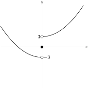
1.4.2.50.
Solution.
1.4.2.50.a When we evaluate \(\displaystyle\lim_{x \rightarrow -4^-} f(x)\text{,}\) we only consider values of \(x\) that are less than \(-4\text{.}\) For these values, \(f(x)=x^3+8x^2+16x\text{.}\) So,
\begin{gather*}
\displaystyle\lim_{x \rightarrow 4^-} f(x)=\lim_{x \rightarrow -4^-} (x^3+8x^2+16x)=(-4)^3+8(-4)^2+16(-4)=0
\end{gather*}
Note that, because \(x^3+8x^2+16x\) is a polynomial, we can evaluate the limit by directly substituting in \(x=-4\text{.}\)
1.4.2.50.b When we evaluate \(\displaystyle\lim_{x \rightarrow -4^+} f(x)\text{,}\) we only consider values of \(x\) that are greater than \(-4\text{.}\) For these values,
\begin{gather*}
f(x)=\frac{x^2+8x+16}{x^2+30x-4}
\end{gather*}
So
\begin{gather*}
\displaystyle\lim_{x \rightarrow -4^+} f(x)=\lim_{x \rightarrow -4^+} \frac{x^2+8x+16}{x^2+30x-4}
\end{gather*}
This is a rational function, and \(x=-4\) is in its domain (we aren’t doing anything suspect, like dividing by \(0\)), so again we can directly substitute \(x=-4\) to evaluate the limit:
\begin{gather*}
\displaystyle\lim_{x \rightarrow -4^+} f(x)= \frac{(-4)^2+8(-4)+16}{(-4)^2+30(-4)-4}
=\frac{0}{-108}=0
\end{gather*}
1.4.2.50.c Since \(\displaystyle\lim_{x \rightarrow -4^-} f(x)
=\lim_{x \rightarrow -4^+} f(x)=0\text{,}\) we conclude that \(\displaystyle\lim_{x \rightarrow -4} f(x)=0\)
1.5 Limits at Infinity
1.5.2 Exercises
1.5.2.1.
1.5.2.2.
1.5.2.3.
1.5.2.4.
1.5.2.5.
Solution.
Write \(X=-x\text{.}\) As \(x\) becomes more and more negative, \(X\) becomes more and more positive. From Question 1.5.2.4, we know that \(2^X\) grows without bound as \(X\) gets larger and larger. Since \(2^x= 2^{-(-x)}= 2^{-X} =\frac{1}{2^X}\text{,}\) as we let \(x\) become a huge negative number, we are in effect dividing by a huge positive number; hence \(\lim\limits_{x\rightarrow-\infty} 2^x = 0\text{.}\)
A more formulaic way to describe the above is this: \(\lim\limits_{x\rightarrow-\infty} 2^x
= \lim\limits_{X\rightarrow\infty} 2^{-X}
= \lim\limits_{X\rightarrow\infty} \frac{1}{2^X}
=0\text{.}\)
1.5.2.6.
1.5.2.7.
Solution.
The highest-order term in this polynomial is \(-3x^5\text{,}\) so this dominates the function’s behaviour as \(x\) goes to infinity. More formally:
\begin{align*}
\lim\limits_{x\rightarrow\infty} \big(x - 3x^5 +100 x^2\big)
&=\lim\limits_{x\rightarrow\infty} - 3x^5\left(1 -\frac{1}{3x^4}
-\frac{100}{3 x^3}\right)\\
& =\lim\limits_{x\rightarrow\infty} - 3x^5
=-\infty\\
\end{align*}
because
\begin{align*}
\lim\limits_{x\rightarrow\infty} \left(1 -\frac{1}{3x^4}
-\frac{100}{3 x^3}\right)
&=1-0-0=1.
\end{align*}
1.5.2.8.
Solution.
Our standard trick is to factor out the highest power of \(x\) in the denominator: \(x^4\text{.}\) We just have to be a little careful with the square root. Since we are taking the limit as \(x\) goes to positive infinity, we have positive \(x\)-values, so \(\sqrt{x^2}=x\) and \(\sqrt{x^8}=x^4\text{.}\)
\begin{align*}
\displaystyle\lim_{x \rightarrow\infty} \dfrac{\sqrt{3x^8+7x^4}+10}{x^4-2x^2+1}&=
\displaystyle\lim_{x \rightarrow\infty} \dfrac{\sqrt{x^8(3+\frac{7}{x^4})}+10}{x^4(1-\frac{2}{x^2}+\frac{1}{x^4})}\\
&=
\displaystyle\lim_{x \rightarrow\infty} \dfrac{\sqrt{x^8}\sqrt{3+\frac{7}{x^4}}+10}{x^4(1-\frac{2}{x^2}+\frac{1}{x^4})}\\
&=
\displaystyle\lim_{x \rightarrow\infty} \dfrac{x^4\sqrt{3+\frac{7}{x^4}}+10}{x^4(1-\frac{2}{x^2}+\frac{1}{x^4})}\\
&=
\displaystyle\lim_{x \rightarrow\infty} \dfrac{x^4\left(\sqrt{3+\frac{7}{x^4}}+\frac{10}{x^4}\right)}{x^4(1-\frac{2}{x^2}+\frac{1}{x^4})}\\
&=
\displaystyle\lim_{x \rightarrow\infty} \dfrac{\sqrt{3+\frac{7}{x^4}}+\frac{10}{x^4}}{1-\frac{2}{x^2}+\frac{1}{x^4}}\\
&=\frac{\sqrt{3+0}+0}{1-0+0}=\sqrt{3}
\end{align*}
1.5.2.9. (✳).
Solution.
We have two terms, each getting extremely large. It’s unclear at first what happens when we subtract them. To get this equation into another form, we multiply and divide by the conjugate, \(\sqrt{x^2+5x}+\sqrt{x^2-x}\text{.}\)
\begin{align*}
\amp\lim_{x\rightarrow \infty}\left[\sqrt{x^2+5x}-\sqrt{x^2-x}\right]\\
\amp\hskip0.25in
=\lim_{x\rightarrow \infty}\left[\dfrac{(\sqrt{x^2+5x}-\sqrt{x^2-x})(\sqrt{x^2+5x}+\sqrt{x^2-x})}{\sqrt{x^2+5x}+\sqrt{x^2-x}}\right]\\
&\hskip0.25in= \lim_{x\rightarrow \infty}\dfrac{(x^2+5x)-(x^2-x)}
{\sqrt{x^2+5x}+\sqrt{x^2-x}}\\
&\hskip0.25in = \lim_{x\rightarrow \infty}\dfrac{6x}{\sqrt{x^2+5x}+\sqrt{x^2-x}}\\
\end{align*}
Now we divide the numerator and denominator by \(x\text{.}\) In the case of the denominator, since \(x \gt 0\text{,}\) \(x=\sqrt{x^2}\text{.}\)
\begin{align*}
&\hskip0.25in= \lim_{x\rightarrow \infty}\dfrac{6(x)}{\sqrt{x^2}\sqrt{1+\frac{5}{x}}+\sqrt{x^2}\sqrt{1-\frac{1}{x}}}\\
&\hskip0.25in= \lim_{x\rightarrow \infty}\dfrac{6(x)}{(x)\sqrt{1+\frac{5}{x}}+(x)\sqrt{1-\frac{1}{x}}}\\
& \hskip0.25in= \lim_{x\rightarrow \infty}\dfrac{6}{\sqrt{1+\frac{5}{x}}+\sqrt{1-\frac{1}{x}}}\\
&\hskip0.25in=\frac{6}{\sqrt{1+0}+\sqrt{1-0}}= 3
\end{align*}
1.5.2.10. (✳).
Solution.
Note that for large negative \(x\text{,}\) the first term in the denominator \(\sqrt{4x^2+x}\approx\sqrt{4x^2}=|2x|=-2x\) not \(+2x\text{.}\) A good way to avoid incorrectly computing \(\sqrt{x^2}\) when \(x\) is negative is to define \(y=-x\) and express everything in terms of \(y\text{.}\) That’s what we’ll do.
\begin{align*}
\lim_{x\to -\infty} \frac{3x}{\sqrt{4x^2+x}-2x}
\amp=\lim_{y\to +\infty} \frac{-3y}{\sqrt{4y^2-y}+2y} \\
\amp=\lim_{y\to +\infty} \frac{-3y}{y\sqrt{4-\frac{1}{y}}+2y} \\
\amp=\lim_{y\to +\infty} \frac{-3}{\sqrt{4-\frac{1}{y}}+2} \\
\amp=\frac{-3}{\sqrt{4-0}+2} \quad\text{since }1/y\to 0\text{ as }y\to +\infty\\
\amp= -\frac{3}{4}
\end{align*}
1.5.2.11. (✳).
Solution.
The highest power of \(x\) in the denominator is \(x^2\text{,}\) so we divide the numerator and denominator by \(x^2\text{:}\)
\begin{align*}
\lim\limits_{x\rightarrow -\infty}\frac{1-x-x^2}{2x^2-7}
&=\lim\limits_{x\rightarrow -\infty}\frac{1/x^2-1/x-1}{2-7/x^2}\\
&=\frac{0-0-1}{2-0}=-\frac{1}{2}
\end{align*}
1.5.2.12. (✳).
Solution.
\begin{align*}
\lim_{x\rightarrow\infty}\big(\sqrt{x^2+x}-x\big)
&=\lim_{x\rightarrow\infty}
\frac{\big(\sqrt{x^2+x}-x\big)\big(\sqrt{x^2+x}+x\big)}
{\sqrt{x^2+x}+x}\\
\amp=\lim_{x \to \infty}\frac{(x^2+x)-x^2}{\sqrt{x^2+x}+x}
=\lim_{x\rightarrow\infty}
\frac{x}{\sqrt{x^2+x}+x}\\
&=\lim_{x\rightarrow\infty}
\frac{1}{\sqrt{1+\frac{1}{x}}+1}
=\frac{1}{2}
\end{align*}
1.5.2.13. (✳).
Solution.
We have, after dividing both numerator and denominator by \(x^2\) (which is the highest power of the denominator) that
\begin{equation*}
\frac{5x^2-3x+1}{3x^2+x+7}=\frac{5-\frac{3}{x}+\frac{1}{x^2}}{3+\frac{1}{x}+\frac{7}{x^2}}.
\end{equation*}
Since \(1/x\to 0\) and also \(1/x^2\to 0\) as \(x\to +\infty\text{,}\) we conclude that
\begin{equation*}
\lim_{x\to +\infty} \frac{5x^2-3x+1}{3x^2 +x+7}=\frac{5}{3}.
\end{equation*}
1.5.2.14. (✳).
Solution.
We have, after dividing both numerator and denominator by \(x\) (which is the highest power of the denominator) that
\begin{equation*}
\frac{ \sqrt{4\,x + 2}}{3x+4}=\frac{\sqrt{\frac 4 x + \frac 2 {x^2}}}{3 + \frac 4 x}.
\end{equation*}
Since \(1/x\to 0\) and also \(1/x^2\to 0\) as \(x\to +\infty\text{,}\) we conclude that
\begin{equation*}
\lim_{x\to +\infty} \frac{ \sqrt{4\,x + 2}} {3\,x+4}=\frac {0}{3} = 0.
\end{equation*}
1.5.2.15. (✳).
Solution.
The dominant terms in the numerator and denominator have order \(x^3\text{.}\) Taking out that common factor we get
\begin{equation*}
\frac{4x^3+x}{7x^3 + x^2 - 2}
= \frac{4 + \frac{1}{x^2}}{7 + \frac{1}{x} - \frac{2}{x^3}}.
\end{equation*}
Since \(1/x^a\to 0\) as \(x\to +\infty\) (for \(a \gt 0\)), we conclude that
\begin{equation*}
\lim_{x\to +\infty} \frac{4x^3+x}{7x^3 +x^2-2}=\frac{4}{7}.
\end{equation*}
1.5.2.16.
Solution.
-
Solution 1We want to factor out \(x\text{,}\) the highest power in the denominator. Since our limit only sees negative values of \(x\text{,}\) we must remember that \(\sqrt[4]{x^4}=|x|=-x\text{,}\) although \(\sqrt[3]{x^3}=x\text{.}\)\begin{align*} \lim_{x \rightarrow -\infty}\dfrac{\sqrt[3]{x^2+x}-\sqrt[4]{x^4+5}}{x+1}&= \lim_{x \rightarrow -\infty}\dfrac{\sqrt[3]{x^3(\frac{1}{x}+\frac{1}{x^2})}-\sqrt[4]{x^4(1+\frac{5}{x^4})}}{x(1+\frac{1}{x})}\\ &= \lim_{x \rightarrow -\infty}\dfrac{\sqrt[3]{x^3}\sqrt[3]{\frac{1}{x}+\frac{1}{x^2}}-\sqrt[4]{x^4}\sqrt[4]{1+\frac{5}{x^4}}}{x(1+\frac{1}{x})}\\ &=\lim_{x \rightarrow -\infty}\dfrac{x\sqrt[3]{\frac{1}{x}+\frac{1}{x^2}}-(-x)\sqrt[4]{1+\frac{5}{x^4}}}{x(1+\frac{1}{x})}\\ &=\lim_{x \rightarrow -\infty}\dfrac{\sqrt[3]{\frac{1}{x}+\frac{1}{x^2}}+\sqrt[4]{1+\frac{5}{x^4}}}{1+\frac{1}{x}}\\ &=\frac{\sqrt[3]{0+0}+\sqrt[4]{1+0}}{1+0}=1 \end{align*}
-
Solution 2Alternately, we can use the transformation \(\displaystyle\lim_{x \rightarrow -\infty} f(x)=\displaystyle\lim_{x \rightarrow \infty} f(-x)\text{.}\) Then we only look at positive values of \(x\text{,}\) so roots behave nicely: \(\sqrt[4]{x^4}=|x|=x\text{.}\)\begin{align*} \lim_{x \rightarrow -\infty}\dfrac{\sqrt[3]{x^2+x}-\sqrt[4]{x^4+5}}{x+1}&= \lim_{x \rightarrow \infty}\dfrac{\sqrt[3]{(-x)^2-x}-\sqrt[4]{(-x)^4+5}}{-x+1}\\ &= \lim_{x \rightarrow \infty}\dfrac{\sqrt[3]{x^2-x}-\sqrt[4]{x^4+5}}{-x+1}\\ &= \lim_{x \rightarrow \infty}\dfrac{\sqrt[3]{x^3}\sqrt[3]{\frac{1}{x}-\frac{1}{x^2}}-\sqrt[4]{x^4}\sqrt[4]{1+\frac{5}{x^4}}}{x(-1+\frac{1}{x})}\\ &= \lim_{x \rightarrow \infty}\dfrac{x\sqrt[3]{\frac{1}{x}-\frac{1}{x^2}}-x\sqrt[4]{1+\frac{5}{x^4}}}{x(-1+\frac{1}{x})}\\ &= \lim_{x \rightarrow \infty}\dfrac{\sqrt[3]{\frac{1}{x}-\frac{1}{x^2}}-\sqrt[4]{1+\frac{5}{x^4}}}{-1+\frac{1}{x}}\\ &=\frac{\sqrt[3]{0-0}-\sqrt[4]{1+0}}{-1+0}=\frac{-1}{-1}=1 \end{align*}
1.5.2.17. (✳).
Solution.
We have, after dividing both numerator and denominator by \(x^3\) (which is the highest power of the denominator) that:
\begin{equation*}
\lim_{x \to \infty} \frac{5x^2+10}{3x^3 +2x^2+x}=\lim_{x \to\infty}\frac{\frac{5}{x}+\frac{10}{x^3}}{3+\frac{2}{x}+\frac{1}{x^2}}=\frac{0}{3}=0.
\end{equation*}
1.5.2.18.
Solution.
Since we only consider negative values of \(x\text{,}\) \(\sqrt{x^2}=|x|=-x\text{.}\)
\begin{align*}
\displaystyle\lim_{x \rightarrow -\infty}\frac{x+1}{\sqrt{x^2}}&=
\displaystyle\lim_{x \rightarrow -\infty}\frac{x+1}{-x}\\
&=\displaystyle\lim_{x \rightarrow -\infty}\frac{x}{-x}+\frac{1}{-x}\\
&=\displaystyle\lim_{x \rightarrow -\infty}-1-\frac{1}{x}\\
&=-1
\end{align*}
1.5.2.19.
Solution.
1.5.2.20. (✳).
1.5.2.21. (✳).
Solution.
We divide both the numerator and the denominator by the highest power of \(x\) in the denominator, which is \(x\text{.}\) Since \(x \lt 0\text{,}\) we have \(\sqrt{x^2}=|x|=-x\text{,}\) so that
\begin{equation*}
\frac{\sqrt{x^2+5}}{x}=-\sqrt{\frac{x^2+5}{x^2}}=-\sqrt{1+\frac{5}{x^2}}.
\end{equation*}
Since \(1/x\to 0\) and also \(1/x^2\to 0\) as \(x\to -\infty\text{,}\) we conclude that
\begin{equation*}
\lim_{x\to -\infty} \frac{3x+5}{\sqrt{x^2+5}-x}=\lim_{x\to -\infty}\frac{3+\frac{5}{x}}{-\sqrt{1+\frac{5}{x^2}}-1}=\frac{3}{-1-1}=-\frac{3}{2}.
\end{equation*}
1.5.2.22. (✳).
Solution.
We divide both the numerator and the denominator by the highest power of \(x\) in the denominator, which is \(x\text{.}\) Since \(x \lt 0\text{,}\) we have \(\sqrt{x^2}=|x|=-x\text{,}\) so that
\begin{equation*}
\frac{\sqrt{4x^2+15}}{x}= \frac{\sqrt{4x^2+15}}{-\sqrt{x^2}} =-\sqrt{\frac{4x^2+15}{x^2}}=-\sqrt{4+\frac{15}{x^2}}.
\end{equation*}
Since \(1/x\to 0\) and also \(1/x^2\to 0\) as \(x\to -\infty\text{,}\) we conclude that
\begin{equation*}
\lim_{x\to -\infty} \frac{5x+7}{\sqrt{4x^2+15}-x}=\lim_{x\to
-\infty}\frac{5+\frac{7}{x}}{-\sqrt{4+\frac{15}{x^2}}-1}=\frac{5}{-2-1}=-\frac{5}{3}.
\end{equation*}
1.5.2.23.
Solution.
\begin{align*}
\displaystyle\lim_{x \rightarrow -\infty}\dfrac{3x^7+x^5-15}{4x^2+32x}&=
\displaystyle\lim_{x \rightarrow -\infty}\dfrac{x^2(3x^5+x^3-\frac{15}{x^2})}{x^2(4+\frac{32}{x})}\\
&=\displaystyle\lim_{x \rightarrow -\infty}\dfrac{3x^5+x^3-\frac{15}{x^2}}{4+\frac{32}{x}}\\
&=\displaystyle\lim_{x \rightarrow +\infty}\dfrac{3(-x)^5+(-x)^3-\frac{15}{(-x)^2}}{4+\frac{32}{-x}}\\
&=\displaystyle\lim_{x \rightarrow +\infty}\dfrac{-3x^5-x^3-\frac{15}{x^2}}{4-\frac{32}{x}}\\
&=-\infty
\end{align*}
1.5.2.24. (✳).
Solution.
We multiply and divide the expression by its conjugate, \(\big(\sqrt{n^2+5n}+n\big)\text{.}\)
\begin{align*}
\lim_{n\rightarrow\infty}\big(\sqrt{n^2+5n}-n\big)
&=\lim_{n \to \infty}\big(\sqrt{n^2+5n}-n\big)
\left(\frac{\sqrt{n^2+5n}+n}{\sqrt{n^2+5n}+n}\right)\\
&=\lim_{n\rightarrow\infty}\frac{(n^2+5n)-n^2}{\sqrt{n^2+5n}+n}\\
&=\lim_{n\rightarrow\infty}\frac{5n}{\sqrt{n^2+5n}+n}\\
&=\lim_{n\rightarrow\infty}\frac{5\cdot n}{\sqrt{n^2}\sqrt{1+\frac{5}{n}}+n}\\
\end{align*}
Since \(n \gt 0\text{,}\) we can simplify \(\sqrt{n^2}=n\text{.}\)
\begin{align*}
&=\lim_{n\rightarrow\infty}\frac{5\cdot n}{n\sqrt{1+\frac{5}{n}}+n}\\
&=\lim_{n\rightarrow\infty}\frac{5}{\sqrt{1+\frac{5}{n}}+1}\\
&=\frac{5}{\sqrt{1+0}+1}=\frac{5}{2}
\end{align*}
1.5.2.25.
Solution.
-
Solution 1:When \(a\) approaches 0 from the right, the numerator approaches negative infinity, and the denominator approaches \(-1\text{.}\) So, \(\ds\lim_{a \to 0^+}\dfrac{a^2-\frac{1}{a}}{a-1}=\infty\text{.}\)More precisely, using Theorem 1.5.9:\begin{align*} &\lim_{a \to 0^+} \frac{1}{a}=+\infty\\ \mbox{Also,}& \lim_{a \to 0^+} a^2=0 \end{align*}So, using Theorem 1.5.9,\begin{align*} & \lim_{a \to 0^+} a^2-\frac{1}{a}=-\infty\\ \text{Furthermore,}&\lim_{a \to 0^+}a-1=-1\\ \text{So, using our theorem,}&\lim_{a \to 0^+}\frac{a^2-\frac{1}{a}}{a-1}=\infty \end{align*}
-
Solution 2:Since \(a=0\) is not in the domain of our function, a reasonable impulse is to simplify.\begin{align*} \frac{a^2-\frac{1}{a}}{a-1}\left(\frac{a}{a}\right)&=\frac{a^3-1}{a(a-1)}=\frac{(a-1)(a^2+a+1)}{a(a-1)}\\ \end{align*}So,\begin{align*} \lim_{a \to 0^+}\frac{a^2-\frac{1}{a}}{a-1}&= \lim_{a \to 0^+}\frac{(a-1)(a^2+a+1)}{a(a-1)}\\ &=\lim_{a \to 0^+}\frac{a^2+a+1}{a}\\ &=\lim_{a \to 0^+}a+1+\frac{1}{a}=\infty \end{align*}
1.5.2.26.
Solution.
Since \(x=3\) is not in the domain of the function, we simplify, hoping we can cancel a problematic term.
\begin{align*}
\lim_{x \to 3}\frac{2x+8}{\frac{1}{x-3}+\frac{1}{x^2-9}}&=\lim_{x \to 3}\frac{2x+8}{\frac{x+3}{x^2-9}+\frac{1}{x^2-9}}\\
&=\lim_{x \to 3}\frac{2x+8}{\frac{x+4}{x^2-9}}\\
&=\lim_{x \to 3}\frac{(2x+8)(x^2-9)}{x+4}=0
\end{align*}
1.5.2.27.
Solution.
First, we need a rational function whose limit at infinity is a real number. This means that the degree of the bottom is greater than or equal to the degree of the top. There are two cases: the denominator has higher degree than the numerator, or the denominator has the same degree as the numerator.
If the denominator has higher degree than the numerator, then \(\displaystyle\lim_{x \rightarrow \infty} f(x)=\displaystyle\lim_{x \rightarrow -\infty} f(x)=0\text{,}\) so the limits are equal--not what we’re looking for.
If the denominator has the same degree as the numerator, then the limit as \(x\) goes to \(\pm \infty\) is the ratio of the leading terms: again, the limits are equal. So no rational function exists as described.
1.5.2.28.
Solution.
The amount of the substance that will linger long-term is some positive number--the substance will stick around. One example of a substance that does this is the ink in a tattoo. (If the injection was of medicine, probably it will be metabolized, and \(\displaystyle\lim_{t \rightarrow \infty} c(t)=0\text{.}\))
Remark: it actually doesn’t make much sense to let \(t\) go to infinity: after a few million hours, you won’t even have a body, so what is \(c(t)\) measuring? Often when we use formulas in the real world, there is an understanding that they are only good for some fixed range. We often use the limit as \(t\) goes to infinity as a stand-in for the function’s long-term behaviour.
1.6 Continuity
1.6.4 Exercises
1.6.4.1.
1.6.4.2.
Solution.
If we let \(f\) be my height, the time of my birth is \(a\text{,}\) and now is \(b\text{,}\) then we know that \(f(a) \leq 1 \leq f(b)\text{.}\) It is reasonable to assume that my height is a continuous function. So by the IVT, there is some value \(c\) between \(a\) and \(b\) where \(f(c)=1\text{.}\) That is, there is some time (we called it \(c\)) between my birth and today when I was exactly one meter tall.
Notice the IVT does not say precisely what day I was one meter tall; it only guarantees that such a day occurred between my birth and today.
1.6.4.3.
Solution.
One example is \(f(x) = \left\{ \begin{array}{ll}
0&\mbox{when }0 \leq x \leq 1\\
2&\mbox{when }1 \lt x \leq 2
\end{array}\right.\text{.}\) The IVT only guarantees \(f(c)=1\) for some \(c\) in \([0,2]\) when \(f\) is continuous over \([0,2]\text{.}\) If \(f\) is not continuous, the IVT says nothing.
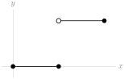
1.6.4.4.
1.6.4.5.
1.6.4.6.
Solution.
No. IVT says nothing about functions that are not guaranteed to be continuous at the outset. It’s quite easy to construct a function that is as described, but not continuous. For example, the function pictured below, whose equation format is somewhat less enlightening than its graph: \(f(x)=\left\{\begin{array}{ll}
-\frac{26}{5}x+65,&10 \leq x \lt 15\\
-\frac{26}{5}x+91,&15 \leq x \leq 20
\end{array}\right.\text{.}\)
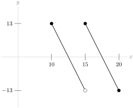
1.6.4.7.
1.6.4.8.
1.6.4.9.
Solution.
In general, false. If \(f(t)\) is continuous at \(t=5\text{,}\) then \(f(5)=17\text{;}\) if \(f(t)\) is discontinuous at \(t=5\text{,}\) then \(f(5)\) either does not exist, or is a number other than 17.
An example of a function with \(\ds\lim_{t \to 5}f(t)=17 \neq f(5)\) is \(f(t)=\left\{
\begin{array}{lcr}
17&,&t \neq 5\\
0&,&t=5
\end{array}
\right.\text{,}\) shown below.
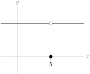
1.6.4.10.
Solution.
Since \(f(x)\) and \(g(x)\) are continuous at zero, and since \(g^2(x)+1\) must be nonzero, then \(h(x)\) is continuous at 0 as well. According to the definition of continuity, then \(\ds\lim_{x \to 0}h(x)\) exists and is equal to \(h(0)=\frac{0f(0)}{g^2(0)+1}=0\text{.}\)
Since the limit \(\ds\lim_{x \to 0}h(x)\) exists and is equal to zero, also the one-sided limit \(\ds\lim_{x \to 0^+}h(x)\) exists and is equal to zero.
1.6.4.11.
Solution.
Using the definition of continuity, we need \(k=\displaystyle\lim_{x \rightarrow 0} f(x)\text{.}\) Since the limit is blind to what actually happens to \(f(x)\) at \(x=0\text{,}\) this is equivalent to \(k=\displaystyle\lim_{x \rightarrow 0} x\sin\left(\frac{1}{x}\right)\text{.}\) So if we find the limit, we solve the problem.
As \(x\) gets small, \(\sin\left(\frac{1}{x}\right)\) goes a little crazy (see example 1.3.5), so let’s get rid of it by using the Squeeze Theorem. We can bound the function above and below, but we should be a little careful about whether we’re going from the left or the right. The reason we need to worry about direction is illustrated with the following observation:
If \(a\le b\) and \(x \gt 0\text{,}\) then \(xa\le xb\text{.}\) (For example, plug in \(x=1\text{,}\) \(a=2\text{,}\) \(b=3\text{.}\)) But if \(a\le b\) and \(x \lt 0\text{,}\) then \(xa \ge xb\text{.}\) (For example, plug in \(x=-1\text{,}\) \(a=2\text{,}\) \(b=3\text{.}\)) So first, let’s find \(\lim\limits_{x\rightarrow 0^-}\sin\left(\frac{1}{x}\right)\text{.}\) When \(x \lt 0\text{,}\)
\begin{align*}
1 \ge &\sin\left(\frac{1}{x}\right) \ge -1\\
\mbox{so: }\qquad
x({\textcolor{red}{1}}) \le x\,&{\textcolor{red}{\sin\left(\frac{1}{x}\right) }}\le x({\textcolor{red}{-1}})
\end{align*}
and \(\displaystyle\lim_{x \rightarrow 0^-} x = \displaystyle\lim_{x \rightarrow 0^-} -x = 0\text{,}\) so by the Squeeze Theorem, also \(\displaystyle\lim_{x \rightarrow 0^-} x\sin\left(\frac{1}{x}\right)=0\text{.}\)
Now, let’s find \(\displaystyle\lim_{x \rightarrow 0^+} x\sin\left(\frac{1}{x}\right)\text{.}\) When \(x \gt 0\text{,}\)
\begin{align*}
-1 \le &\sin\left(\frac{1}{x}\right) \le 1\\
\mbox{so: }\qquad
x({\textcolor{red}{-1}}) \leq x&{\textcolor{red}{\sin\left(\frac{1}{x}\right)}}\leq x({\textcolor{red}{1}})
\end{align*}
and \(\displaystyle\lim_{x \rightarrow 0^+} x = \displaystyle\lim_{x \rightarrow 0^+} -x = 0\text{,}\) so by the Squeeze Theorem, also \(\displaystyle\lim_{x \rightarrow 0^+} x\sin\left(\frac{1}{x}\right)=0\text{.}\)
Since the limits from the left and right agree, we conclude \(\displaystyle\lim_{x \rightarrow 0} x\sin\left(\frac{1}{x}\right)=0\text{,}\) so when \(k=0\text{,}\) the function is continuous at \(x=0\text{.}\)
1.6.4.12.
1.6.4.13. (✳).
1.6.4.14. (✳).
1.6.4.15. (✳).
Solution.
The function \(1/\sqrt{x}\) is continuous on \((0,+\infty)\) and the function \(\cos(x) +
1\) is continuous everywhere.
So \(1/\sqrt{\cos(x) + 1 }\) is continuous except when \(\cos x=-1\text{.}\) This happens when \(x\) is an odd multiple of \(\pi\text{.}\) Hence the function is continuous except at \(x=\pm \pi, \pm 3\pi, \pm 5\pi, \cdots\text{.}\)
1.6.4.16. (✳).
1.6.4.17. (✳).
Solution.
The function is continuous for \(x\ne c\) since each of those two branches are polynomials. So, the only question is whether the function is continuous at \(x=c\text{;}\) for this we need
\begin{equation*}
\lim_{x\to c^-}f(x)=f(c)=\lim_{x\to c+}f(x).
\end{equation*}
We compute
\begin{equation*}
\lim_{x\to c^-}f(x)=\lim_{x\to c^-}8-cx = 8-c^2;
\end{equation*}
\begin{equation*}
f(c)=8-c\cdot c= 8-c^2\text{ and}
\end{equation*}
\begin{equation*}
\lim_{x\to c^+}f(x)=\lim_{x\to c^+}x^2=c^2.
\end{equation*}
So, we need \(8-c^2=c^2\text{,}\) which yields \(c^2=4\text{,}\) i.e. \(c=-2\) or \(c=2\text{.}\)
1.6.4.18. (✳).
Solution.
The function is continuous for \(x \ne 0\) since \(x^2+c\) and \(\cos cx\) are continuous everywhere. It remains to check continuity at \(x=0\text{.}\) To do this we must check that the following three are equal.
\begin{align*}
\lim_{x \to 0^+} f(x) &= \lim_{x\to 0^+} x^2+c = c\\
f(0) &= c\\
\lim_{x \to 0^-} f(x) &= \lim_{x\to 0^-} \cos cx = \cos 0 = 1
\end{align*}
Hence when \(c=1\) we have the limits agree.
1.6.4.19. (✳).
Solution.
The function is continuous for \(x\ne c\) since each of those two branches are defined by polynomials. Thus, the only question is whether the function is continuous at \(x=c\text{.}\) Furthermore,
\begin{equation*}
\lim_{x\to c^-}f(x) = c^2-4
\end{equation*}
and
\begin{equation*}
\lim_{x\to c^+}f(x) = f(c) = 3c\,.
\end{equation*}
For continunity we need both limits and the value to agree, so \(f\) is continuous if and only if \(c^2-4 = 3c\text{,}\) that is if and only if
\begin{equation*}
c^2-3c-4 = 0\,.
\end{equation*}
Factoring this as \((c-4)(c+1) = 0\) yields \(c=-1\) or \(c=+4\text{.}\)
1.6.4.20. (✳).
Solution.
The function is continuous for \(x\ne 2c\) since each of those two branches are polynomials. So, the only question is whether the function is continuous at \(x=2c\text{;}\) for this we need
\begin{equation*}
\lim_{x\to 2c^-}f(x)=f(2c)=\lim_{x\to 2c+}f(x).
\end{equation*}
We compute
\begin{equation*}
\lim_{x\to 2c^-}f(x)=\lim_{x\to 2c^-}6-cx = 6-2c^2;
\end{equation*}
\begin{equation*}
f(2c)=6-c\cdot 2c= 6-2c^2\text{ and}
\end{equation*}
\begin{equation*}
\lim_{x\to 2c^+}f(x)=\lim_{x\to 2c^+}x^2=4c^2.
\end{equation*}
So, we need \(6-2c^2=4c^2\text{,}\) which yields \(c^2=1\text{,}\) i.e. \(c=-1\) or \(c=1\text{.}\)
1.6.4.21.
Solution.
This isn’t the kind of equality that we can just solve; we’ll need a trick, and that trick is the IVT. The general idea is to show that \(\sin x\) is somewhere bigger, and somewhere smaller, than \(x-1\text{.}\) However, since the IVT can only show us that a function is equal to a constant, we need to slightly adjust our language. Showing \(\sin x = x-1\) is equivalent to showing \(\sin x - x + 1 = 0\text{,}\) so let \(f(x)=\sin x - x +1\text{,}\) and let’s show that it has a real root.
First, we need to note that \(f(x)\) is continuous (otherwise we can’t use the IVT). Now, we need to find a value of \(x\) for which it is positive, and for which it’s negative. By checking a few values, we find \(f(0)\) is positive, and \(f(100)\) is negative. So, by the IVT, there exists a value of \(x\) (between \(0\) and \(100\)) for which \(f(x)=0\text{.}\) Therefore, there exists a value of \(x\) for which \(\sin x = x-1\text{.}\)
1.6.4.22. (✳).
Solution.
We let \(f(x)=3^x-x^2\text{.}\) Then \(f(x)\) is a continuous function, since both \(3^x\) and \(x^2\) are continuous for all real numbers.
We find a value \(a\) such that \(f(a) \gt 0\text{.}\) We observe immediately that \(a=0\) works since
\begin{equation*}
f(0)=3^0-0=1 \gt 0.
\end{equation*}
We find a value \(b\) such that \(f(b) \lt 0\text{.}\) We see that \(b=-1\) works since
\begin{equation*}
f(-1)=\frac{1}{3}-1 \lt 0.
\end{equation*}
So, because \(f(x)\) is continuous on \((-\infty, \infty)\) and \(f(0) \gt 0\) while \(f(-1) \lt 0\text{,}\) then the Intermediate Value Theorem guarantees the existence of a real number \(c\) in the interval \((-1,0)\) such that \(f(c)=0\text{.}\)
1.6.4.23. (✳).
Solution.
We let \(f(x)=2\tan(x)-x-1\text{.}\) Then \(f(x)\) is a continuous function on the interval \((-\pi/2, \pi/2)\) since \(\tan(x)=\sin(x)/\cos(x)\) is continuous on this interval, while \(x+1\) is a polynomial and therefore continuous for all real numbers.
We find a value \(a\in (-\pi/2,\pi/2)\) such that \(f(a) \lt 0\text{.}\) We observe immediately that \(a=0\) works since
\begin{equation*}
f(0)=2\tan(0)-0-1=0-1=-1 \lt 0.
\end{equation*}
We find a value \(b\in (-\pi/2, \pi/2)\) such that \(f(b) \gt 0\text{.}\) We see that \(b=\pi/4\) works since
\begin{align*}
f(\pi/4)\amp=2\tan(\pi/4) -\pi/4 - 1=2-\pi/4 - 1=1-\pi/4\\
\amp=(4-\pi)/4 \gt 0
\end{align*}
because \(3 \lt \pi \lt 4\text{.}\)
So, because \(f(x)\) is continuous on \([0,\pi/4]\) and \(f(0) \lt 0\) while \(f(\pi/4) \gt 0\text{,}\) then the Intermediate Value Theorem guarantees the existence of a real number \(c\in (0,\pi/4)\) such that \(f(c)=0\text{.}\)
1.6.4.24. (✳).
Solution.
Let \(f(x) = \sqrt{\cos(\pi x)} - \sin(2\pi x) -1/2\text{.}\) This function is continuous provided \(\cos(\pi x)\geq 0\text{.}\) This is true for \(0 \leq x
\leq \frac{1}{2}\text{.}\)
Now \(f\) takes positive values on \([0,1/2]\text{:}\)
\begin{align*}
f(0) &= \sqrt{\cos(0)} - \sin(0) -1/2 = \sqrt{1} -1/2 = 1/2.
\end{align*}
And \(f\) takes negative values on \([0,1/2]\text{:}\)
\begin{align*}
f(1/2) &= \sqrt{\cos(\pi/2)}-\sin(\pi)-1/2 = 0-0-1/2 = -1/2
\end{align*}
(Notice that \(f(1/3)=(\sqrt{2}-\sqrt{3})/2-1/2\) also works)
So, because \(f(x)\) is continuous on \([0,1/2)\) and \(f(0) \gt 0\) while \(f(1/2) \lt 0\text{,}\) then the Intermediate Value Theorem guarantees the existence of a real number \(c\in (0,1/2)\) such that \(f(c)=0\text{.}\)
1.6.4.25. (✳).
Solution.
We let \(f(x)=\dfrac{1}{\cos^2(\pi x)}-x-\dfrac{3}{2}\text{.}\) Then \(f(x)\) is a continuous function on the interval \((-1/2, 1/2)\) since \(\cos x\) is continuous everywhere and non-zero on that interval.
The function \(f\) takes negative values. For example, when \(x=0\text{:}\)
\begin{align*}
f(0) &= \frac{1}{\cos^2(0)} - 0 - \frac{3}{2} = 1-\frac{3}{2} = -\frac{1}{2} \lt 0.
\end{align*}
It also takes positive values, for instance when \(x=1/4\text{:}\)
\begin{align*}
f(1/4) &= \frac{1}{(\cos \pi/4)^2} - \frac{1}{4} - \frac{3}{2}\\
&= \frac{1}{1/2} - \frac{1+6}{4}\\
&= 2 - 7/4 = 1/4 \gt 0.
\end{align*}
By the IVT there is \(c\text{,}\) \(0 \lt c \lt 1/4\) such that \(f(c)=0\text{,}\) in which case
\begin{gather*}
\dfrac{1}{(\cos\pi c)^2} = c+\dfrac{3}{2}.
\end{gather*}
1.6.4.26.
Solution.
\(f(x)\) is a polynomial, so it’s continuous everywhere. If we can find values \(a\) and \(b\) so that \(f(a) \gt 0\) and \(f(b) \lt 0\text{,}\) then by the IVT, there will exist some \(c\) in \((a,b)\) where \(f(c)=0\text{;}\) that is, there is a root in the interval \([a,b]\text{.}\) Let’s start plugging in easy values of \(x\text{.}\)
\(f(0)=15\text{,}\) and \(f(1)=1-15+9-18+15=-8\text{.}\) Since 0 is between \(f(0)\) and \(f(1)\text{,}\) and since \(f\) is continuous, by IVT there must be some \(x\) in \([0,1]\) for which \(f(x)=0\text{:}\) that is, there is some root in \([0,1]\text{.}\)
That was the easiest interval to find. If you keep playing around, you find two more. \(f(-1)=26\) (positive) and \(f(-2)=-1001\) (negative), so there is a root in \([-2,-1]\text{.}\)
The arithmetic is nasty, but there is also a root in \([14,15]\text{.}\)
This is an important trick. For high-degree polynomials, it is often impossible to get the exact values of the roots. Using the IVT, we can at least give a range where a root must be.
1.6.4.27.
Solution.
Let \(f(x)=x^3\text{.}\) Since \(f\) is a polynomial, it is continuous everywhere. If \(f(a) \lt 7 \lt f(b)\text{,}\) then \(\sqrt[3]{7}\) is somewhere between \(a\) and \(b\text{.}\) If we can find \(a\) and \(b\) that satisfy these inequalities, and are very close together, that will give us a good approximation for \(\sqrt[3]{7}\text{.}\)
-
Let’s start with integers. \(1^3 \lt 7 \lt 2^3\text{,}\) so \(\sqrt[3]{7}\) is in the interval \((1,2)\text{.}\)
-
Let’s narrow this down, say by testing \(f(1.5)\text{.}\) \((1.5)^3 = 3.375 \lt 7\text{,}\) so \(\sqrt[3]{7}\) is in the interval \((1.5,2)\text{.}\)
-
Let’s narrow further, say by testing \(f(1.75)\text{.}\) \((1.75)^3\approx 5.34 \lt 7\text{,}\) so \(\sqrt[3]{7}\) is in the interval \((1.75,2)\text{.}\)
-
Testing various points, we find \(f(1.9) \lt 7 \lt f(2)\text{,}\) so \(\sqrt[3]{7}\) is between \(1.9\) and \(2\text{.}\)
-
By testing more, we find \(f(1.91) \lt 7 \lt f(1.92)\text{,}\) so \(\sqrt[3]{7}\) is in \((1.91,1.92)\text{.}\)
-
In order to get an approximation for \(\sqrt[3]{7}\) that is rounded to two decimal places, we have to know whether \(\sqrt[3]{7}\) is greater or less than \(1.915\text{;}\) indeed \(f(1.915) \approx 7.02 \gt 7\text{,}\) so \(\sqrt[3]{7} \lt 1.915\text{;}\) then rounded to two decimal places, \(\sqrt[3]{7}\approx 1.91\text{.}\)
If this seems like the obvious way to approximate \(\sqrt[3]{7}\text{,}\) that’s good. The IVT is a formal statement of a very intuitive principle.
1.6.4.28.
Solution.
-
If \(f(a)=g(a)\text{,}\) or \(f(b)=g(b)\text{,}\) then we simply take \(c=a\) or \(c=b\text{.}\)
-
Suppose \(f(a) \neq g(a)\) and \(f(b) \neq g(b)\text{.}\) Then \(f(a) \lt g(a)\) and \(g(b) \lt f(b)\text{,}\) so if we define \(h(x)=f(x)-g(x)\text{,}\) then \(h(a) \lt 0\) and \(h(b) \gt 0\text{.}\) Since \(h\) is the difference of two functions that are continuous over \([a,b]\text{,}\) also \(h\) is continuous over \([a,b]\text{.}\) So, by the Intermediate Value Theorem, there exists some \(c \in (a,b)\) with \(h(c)=0\text{;}\) that is, \(f(c)=g(c)\text{.}\)
2 Derivatives
2.1 Revisiting Tangent Lines
2.1.2 Exercises
2.1.2.1.
2.1.2.2.
Solution.
2.1.2.2.a By drawing a few pictures, it’s easy to see that sliding \(Q\) closer to \(P\text{,}\) the slope of the secant line increases.
2.1.2.2.b Since the slope of the secant line increases the closer \(Q\) gets to \(P\text{,}\) that means the tangent line (which is the limit as \(Q\) approaches \(P\)) has a larger slope than the secant line between \(Q\) and \(P\) (using the location where \(Q\) is right now).
Alternately, by simply sketching the tangent line at \(P\text{,}\) we can see that has a steeper slope than the secant line between \(P\) and \(Q\text{.}\)
2.1.2.3.
Solution.
The slope of the secant line will be \(\dfrac{f(2)-f(-2)}{2-(-2)} = \dfrac{f(2)-f(-2)}{4}\text{,}\) in every part. So, if two lines have the same slope, that means their differences \(f(2)-f(-2)\) will be the same.
The graphs in (a),(c), and (e) all have \(f(2)-f(-2)=1\text{,}\) so they all have the same secant line slope. The graphs in (b) and (f) both have \(f(2)-f(-2)=-1\text{,}\) so they both have the same secant line slope. The graph in (d) has \(f(2)-f(-2)=0\text{,}\) and it is the only graph with this property, so it does not share its secant line slope with any of the other graphs.
2.1.2.4.
Solution.
A good approximation from the graph is \(f(5)=0.5\text{.}\) We want to find a secant line whose endpoints are both very close to \(x=5\text{,}\) but that also give us clear \(y\)-values. It looks like \(f(5.25) \approx 1\text{,}\) and \(f(4.75)\approx \frac{1}{8}\text{.}\) The secant line from \(x=5\) to \(x=5.25\) has approximate slope \(\dfrac{f(5.25)-f(5)}{5.25-5}\approx \dfrac{1-.5}{.25}=2\text{.}\) The secant line from \(x=5\) to \(x=4.75\) has approximate slope \(\dfrac{0.5-\frac{1}{8}}{5-4.75}=\dfrac{3}{2}\text{.}\)
The graph increases more and more quickly (gets steeper and steeper), so it makes sense that the secant line to the left of \(x=5\) has a smaller slope than the secant line to the right of \(x=5\text{.}\) Also, if you’re taking secant lines that have endpoints farther out from \(x=5\text{,}\) you’ll notice that the slopes of the secant lines change quite dramatically. You have to be very, very close to \(x=5\) to get any kind of accuracy.
If we split the difference, we might approximate the slope of the secant line to be the average of \(\frac{3}{2}\) and \(2\text{,}\) which is \(\frac{7}{4}\text{.}\)
Another way to try to figure out the tangent line is by carefully drawing it in with a ruler. This is shown here in blue:
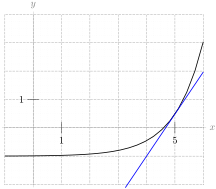
It’s much easier to take the slope of a line than a curve, and this one looks like it has slope about 1.5. However, we drew this with a computer: by hand it’s much harder to draw an accurate tangent line. (That’s why we need calculus!)
The actual slope of the tangent line to the function at \(x=5\) is about \(1.484\text{.}\) This is extremely hard to figure out just from the graph--by hand, a guess between \(1.25\) and \(1.75\) would be very accurate.
2.1.2.5.
Solution.
There is only one tangent line to \(f(x)\) at \(P\) (shown in blue), but there are infinitely many choices of \(Q\) and \(R\) (one possibility shown in red). One easy way to sketch the secant line on paper is to draw any line parallel to the tangent line, and choose two intercepts with \(y=f(x)\text{.}\)
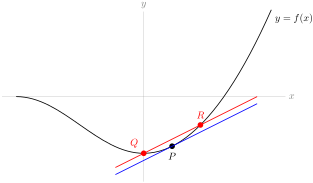
2.1.2.6.
Solution.
Any place the graph looks flat (if you imagine zooming in) is where the tangent line has slope 0. This occurs three times.
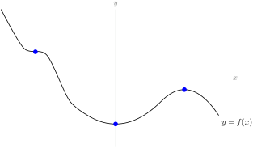
Notice that two of the indicated points are at a low point and a high point, respectively. Later, we’ll use these places where the tangent line has slope zero to find where a graph achieves its biggest and smallest values.
2.2 Definition of the Derivative
2.2.4 Exercises
2.2.4.1.
Solution.
The function shown is a line, so it has a constant slope--(a) . Since the function is always increasing, \(f'\) is always positive, so also (d) holds. Remark: it does not matter that the function itself is sometimes negative; the slope is always positive because the function is always increasing. Also, since the slope is constant, \(f'\) is neither increasing nor decreasing: it is the function that is increasing, not its derivative.
2.2.4.2.
Solution.
The function is always decreasing, so \(f'\) is always negative, option (e). However, the function alternates between being more and less steep, so \(f'\) alternates between increasing and decreasing several times, and no other options hold.
Remark: \(f\) is always positive, but (d) does not hold!
2.2.4.3.
Solution.
At the left end of the graph, \(f\) is decreasing rapidly, so \(f'\) is a strongly negative number. Then as we move towards \(x=0\text{,}\) \(f\) decreases less rapidly, so \(f'\) is a less strongly negative number. As we pass 0, \(f\) increases, so \(f'\) is a positive number. As we move to the right, \(f\) increases more and more rapidly, so \(f'\) is an increasing positive number. This description tells us that \(f'\) increases for the entire range shown. So (b) holds, but not (a) or (c). Since \(f'\) is negative to the left of the \(y\) axis, and positive to the right of it, also (d) and (e) do not hold.
2.2.4.4. (✳).
2.2.4.5.
Solution.
\(f'(-1)\) does not exist, because to the left of \(x=-1\) the slope is a pretty big positive number (looks like around \(+1\)) and to the right the slope is \(-1/4\text{.}\) Since the derivative involves a limit, that limit needs to match the limit from the left and the limit from the right. The sharp angle made by the graph at \(x=-1\) indicates that the left and right limits do not match, so the derivative does not exist.
\(f'(3)\) also does not exist. One way to see this is to notice that the function is discontinuous here. More viscerally, note that \(f(3)=1\text{,}\) so as we take secant lines with one endpoint \((3,1)\text{,}\) and the other endpoint just to the right of \(x=3\text{,}\) we get slopes that are more and more strongly negative, as shown in the picture below. If we take the limit of the slopes of these secant lines as \(x\) goes to \(3\) from the right, we get \(-\infty\text{.}\) (This certainly doesn’t match the slope from the left, which is \(-\frac{1}{4}\text{.}\))
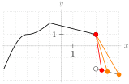
At \(x=-3\text{,}\) there is some kind of “change” in the graph; however, it is a smooth curve, so the derivative exists here.
2.2.4.6.
Solution.
True. The definition of the derivative tells us that
\begin{equation*}
f'(a) = \lim_{h \to 0}\dfrac{f(a+h)-f(a)}{h},
\end{equation*}
if it exists. We know from our work with limits that if both one-sided limits
\(\ds\lim_{h \to 0^-}\frac{f(a+h)-f(a)}{h}\) and \(\ds\lim_{h \to 0^+}\frac{f(a+h)-f(a)}{h}\) exist and are equal to each other, then \(\ds \lim_{h \to 0}\dfrac{f(a+h)-f(a)}{h}\) exists and has the same value as the one-sided limits. So, since the one-sided limits exist and are equal to one, we conclude \(f'(a)\) exists and is equal to one.
2.2.4.7.
Solution.
In general, this is false. The key problem that can arise is that \(f(x)\) might not be continuous at \(x=1\text{.}\) One example is the function
\begin{equation*}
f(x)=\left\{\begin{array}{ll}
x&x \lt 0\\
x-1&x \geq 0
\end{array}\right.
\end{equation*}
where \(f'(x)=1\) whenever \(x \neq 0\) (so in particular, \(\ds\lim_{x \to 0^-}f'(x)=\ds\lim_{x \to 0^+} f'(x)=1\)) but \(f'(0)\) does not exist.
There are two ways to see that \(f'(0)\) does not exist. One is to notice that \(f\) is not continuous at \(x=0\text{.}\)
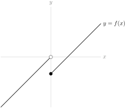
Another way to see that \(f'(0)\) does not exist is to use the definition of the derivative. Remember, in order for a limit to exist, both one-sided limits must exist. Let’s consider the limit from the left. If \(h \to 0^-\text{,}\) then \(h \lt 0\text{,}\) so \(f(h)\) is equal to \(h\) (not \(h-1\)).
\begin{align*}
\lim_{h \to 0^-}\frac{f(0+h)-f(0)}{h}&=\lim_{h \to 0^-}\frac{(h)-(-1)}{h}\\
&=\lim_{h \to 0^-}\frac{h+1}{h}\\
&=\lim_{h \to 0^-}1+\frac{1}{h}\\
&=-\infty\\
\end{align*}
In particular, this limit does not exist. Since the one-sided limit does not exist,
\begin{align*}
\lim_{h \to 0}\frac{f(0+h)-f(0)}{h}&=DNE
\end{align*}
and so \(f'(0)\) does not exist.
2.2.4.8.
Solution.
Using the definition of the derivative,
\begin{equation*}
s'(t)=\lim_{h \to 0}\frac{s(t+h)-s(t)}{h}
\end{equation*}
The units of the numerator are meters, and the units of the denominator are seconds (since the denominator comes from the change in the input of the function). So, the units of \(s'(t)\) are metres per second.
Remark: we learned that the derivative of a position function gives velocity. In this example, the position is given in metres, and the velocity is measured in metres per second.
2.2.4.9.
Solution.
We can use point-slope form to get the equation of the line, if we have a point and its slope. The point is given: \((1,6)\text{.}\) The slope is the derivative:
\begin{align*}
y'(1)&=\lim_{h \rightarrow 0}\frac{y(1+h)-y(1)}{h}\\
&=\lim_{h \rightarrow 0}\frac{[(1+h)^3+5]-[1^3+5]}{h}\\
&=\lim_{h \rightarrow 0}\frac{[1+3h+3h^2+h^3+5]-[1+5]}{h}\\
&=\lim_{h \rightarrow 0}\frac{3h+3h^2+h^3}{h}\\
&=\lim_{h \rightarrow 0}{3+3h+h^2}\\
&=3
\end{align*}
So our slope is 3, which gives a line of equation \(y-6=3(x-1)\text{.}\)
2.2.4.10.
Solution.
We set up the definition of the derivative.
\begin{align*}
f'(x)&=\lim_{h \rightarrow 0}\frac{f(x+h)-f(x)}{h}\\
&=\lim_{h \rightarrow 0}\frac{\frac{1}{x+h}-\frac{1}{x}}{h}\\
&=\lim_{h \rightarrow 0}\frac{\frac{x}{x(x+h)}-\frac{x+h}{x(x+h)}}{h}\\
&=\lim_{h \rightarrow 0}\frac{\frac{x-(x+h)}{x(x+h)}}{h}\\
&=\lim_{h \rightarrow 0}\frac{\frac{-h}{x(x+h)}}{h}\\
&=\lim_{h \rightarrow 0}\frac{-1}{x(x+h)}\\
&=\frac{-1}{x^2}
\end{align*}
2.2.4.11. (✳).
2.2.4.12. (✳).
Solution.
We set up the definition of the derivative.
\begin{align*}
f'(x)&=\lim_{h\rightarrow 0}\frac{f(x+h)-f(x)}{h}
=\lim_{h\rightarrow 0}\frac{1}{h}\Big(\frac{2}{x+h+1}
-\frac{2}{x+1}\Big)\\
\amp=\lim_{h\rightarrow 0}\frac{2}{h}\ \frac{(x+1)-(x+h+1)}{(x+h+1)(x+1)}\\
&=\lim_{h\rightarrow 0}\frac{2}{h}\ \frac{-h}{(x+h+1)(x+1)}\\
\amp=\lim_{h\rightarrow 0}\frac{-2}{(x+h+1)(x+1)}\\
\amp=\frac{-2}{(x+1)^2}
\end{align*}
2.2.4.13. (✳).
Solution.
\begin{align*}
f'(x)&=\lim_{h\rightarrow 0}\frac{f(x+h)-f(x)}{h}
=\lim_{h\rightarrow 0}\frac{1}{h}\Big(\frac{1}{(x+h)^2+3}
-\frac{1}{x^2+3}\Big)\\
\amp=\lim_{h\rightarrow 0}\frac{1}{h}\frac{x^2-(x+h)^2}{[(x+h)^2+3][x^2+3]}\\
&=\lim_{h\rightarrow 0}\frac{1}{h}\frac{-2xh-h^2}{[(x+h)^2+3][x^2+3]}\\
\amp=\lim_{h\rightarrow 0}\frac{-2x-h}{[(x+h)^2+3][x^2+3]}\\
\amp=\frac{-2x}{[x^2+3]^2}
\end{align*}
2.2.4.14.
Solution.
The slope of the tangent line is the derivative. We set this up using the same definition of the derivative that we always do. This limit is hard to take for general \(x\text{,}\) but easy when \(x=0\text{.}\)
\begin{align*}
f'(0)&=\lim_{h \rightarrow 0} \frac{f(0+h)-f(0)}{h}\\
&=\lim_{h \rightarrow 0} \frac{h\log_{10}(2h+10)-0}{h}\\
&=\lim_{h \rightarrow 0} \log_{10}(2h+10)=\log_{10}(10)=1
\end{align*}
So, the slope of the tangent line is 1.
2.2.4.15. (✳).
Solution.
\begin{align*}
f'(x)&=\lim_{h\rightarrow 0}\frac{f(x+h)-f(x)}{h}
=\lim_{h\rightarrow 0}\frac{\frac{1}{(x+h)^2}-\frac{1}{x^2}}{h}
=\lim_{h\rightarrow 0}\frac{x^2-(x+h)^2}{(x+h)^2x^2h}\\
\amp=\lim_{h\rightarrow 0}\frac{-2xh-h^2}{(x+h)^2x^2h}
=\lim_{h\rightarrow 0}\frac{-2x-h}{(x+h)^2x^2}
=\frac{-2x}{x^4}\\
\amp=-\frac{2}{x^3}
\end{align*}
2.2.4.16. (✳).
Solution.
When \(x\) is not equal to 2, then the function is differentiable-- the only place we have to worry about is when \(x\) is exactly 2.
In order for \(f\) to be differentiable at \(x=2\text{,}\) it must also be continuous at \(x=2\text{.}\) This forces \(x^2\big|_{x=2}=\big[ax+b\big]_{x=2}\) or
\begin{equation*}
2a+b=4.
\end{equation*}
In order for a limit to exist, the left- and right-hand limits must exist and be equal to each other. Since a derivative is a limit, in order for \(f\) to be differentiable at \(x=2\text{,}\) the left hand derivative of \(ax+b\) at \(x=2\) must be the same as the right hand derivative of \(x^2\) at \(x=2\text{.}\) Since \(ax+b\) is a line, its derivative is \(a\) everywhere. We’ve already seen the derivative of \(x^2\) is \(2x\text{,}\) so we need
\begin{equation*}
a=2x\big|_{x=2}=4.
\end{equation*}
So, the values of \(a\) and \(b\) that makes \(f\) differentiable everywhere are \(a=4\) and \(b=-4\text{.}\)
2.2.4.17. (✳).
Solution.
We plug in \(f(x)\) to the definition of a derivative. To evaluate the limit, we multiply and divide by the conjugate of the numerator, then simplify.
\begin{align*}
\amp f'(x)=\lim\limits_{h\rightarrow 0}\frac{f(x+h)-f(x)}{h}
=\lim\limits_{h\rightarrow 0}\frac{\sqrt{1+x+h}-\sqrt{1+x}}{h}\\
&\hskip0.5in=\lim\limits_{h\rightarrow 0}\frac{\sqrt{1+x+h}-\sqrt{1+x}}{h}
\left(\frac{\sqrt{1+x+h}+\sqrt{1+x}}{\sqrt{1+x+h}+\sqrt{1+x}}\right)\\
&\hskip0.5in=\lim\limits_{h\rightarrow 0}\frac{(1+x+h)-(1+x)}{h(\sqrt{1+x+h}+\sqrt{1+x})}\\
&\hskip0.5in=\lim\limits_{h\rightarrow 0}\frac{h}{h(\sqrt{1+x+h}+\sqrt{1+x})}\\
&\hskip0.5in=\lim\limits_{h\rightarrow 0}\frac{1}{\sqrt{1+x+h}+\sqrt{1+x}}\\
&\hskip0.5in=\frac{1}{\sqrt{1+x+0}+\sqrt{1+x}}=\frac{1}{2\sqrt{1+x}}
\end{align*}
The domain of the function is \([-1,\infty)\text{.}\) In particular, \(f(x)\) is defined when \(x=-1\text{.}\) However, \(f'(x)\) is not defined when \(x=-1\text{,}\) so \(f'(x)\) only exists over \((-1,\infty)\text{.}\)
Remark: \(\ds\lim_{x \to -1^+}f'(x)=\infty\text{,}\) so the tangent line to \(f(x)\) at the point \(x=-1\) has a vertical slope.
2.2.4.18.
Solution.
From Section 1.2, we see that the velocity is exactly the derivative.
\begin{align*}
v(t)&=\lim_{h \rightarrow 0}\frac{s(t+h)-s(t)}{h}\\
&=\lim_{h \rightarrow 0}\frac{(t+h)^4-(t+h)^2-t^4+t^2}{h}\\
&=\lim_{h \rightarrow 0}\frac{(t^4+4t^3h+6t^2h^2+4th^3+h^4)-(t^2+2th+h^2)-t^4+t^2}{h}\\
&=\lim_{h \rightarrow 0}\frac{4t^3h+6t^2h^2+4th^3+h^4-2th-h^2}{h}\\
&=\lim_{h \rightarrow 0}4t^3+6t^2h+4th^2+h^3-2t-h\\
&=4t^3-2t
\end{align*}
So, the velocity is given by \(v(t)=4t^3-2t\text{.}\)
2.2.4.19. (✳).
Solution.
The function is differentiable at \(x=0\) if the following limit:
\begin{equation*}
\lim_{x\to 0}\frac{f(x)-f(0)}{x-0} = \lim_{x\to 0}\frac{f(x)-0}{x}=\lim_{x\to
0} \frac{f(x)}{x}
\end{equation*}
exists (note that we used the fact that \(f(0)=0\) as per the definition of the first branch which includes the point \(x=0\)). We start by computing the left limit. For this computation, recall that if \(x \lt 0\) then \(\sqrt{x^2}=|x|=-x\text{.}\)
\begin{align*}
\lim_{x\to 0^-}\frac{f(x)}{x}\amp
=\lim_{x\to 0^-}\frac{\sqrt{x^2+x^4}}{x}
=\lim_{x\to 0^-} \frac{\sqrt{x^2}\sqrt{1+x^2}}{x}\\
\amp=\lim_{x \rightarrow 0}\frac{-x\sqrt{1+x^2}}{x}=-1
\end{align*}
Now, from the right:
\begin{equation*}
\lim_{x\to 0^+}\frac{x\cos x}{x}=\lim_{x\to
0^+}\cos x = 1.
\end{equation*}
Since the limit from the left does not equal the limit from the right, the derivative does not exist at \(x=0\text{.}\)
2.2.4.20. (✳).
Solution.
The function is differentiable at \(x=0\) if the following limit:
\begin{equation*}
\lim_{x\to 0}\frac{f(x)-f(0)}{x-0} = \lim_{x\to 0}\frac{f(x)-0}{x}=\lim_{x\to
0} \frac{f(x)}{x}
\end{equation*}
exists (note that we used the fact that \(f(0)=0\) as per the definition of the first branch which includes the point \(x=0\)).
We start by computing the left limit.
\begin{gather*}
\lim_{x\to 0^-}\frac{f(x)}{x}=\lim_{x\to 0^-} \frac{x\cos x}{x}
=\lim_{x\to 0^-} \cos x = 1.
\end{gather*}
Now, from the right:
\begin{align*}
\lim_{x\to 0^+}\frac{\sqrt{1+x}-1}{x}
&= \lim_{x\to 0^+}\frac{\sqrt{1+x}-1}{x} \cdot \frac{\sqrt{1+x}+1}{\sqrt{1+x}+1}\\
&= \lim_{x\to 0^+} \frac{1+x-1}{x(\sqrt{1+x}+1)}
= \lim_{x\to 0^+} \frac{1}{\sqrt{1+x}+1} = \frac{1}{2}
\end{align*}
Since the limit from the left does not equal the limit from the right, the derivative does not exist at \(x=0\text{.}\)
2.2.4.21. (✳).
Solution.
The function is differentiable at \(x=0\) if the following limit:
\begin{gather*}
\lim_{x\to 0}\frac{f(x)-f(0)}{x-0} = \lim_{x\to 0}\frac{f(x)-0}{x}=\lim_{x\to 0}
\frac{f(x)}{x}
\end{gather*}
exists (note that we used the fact that \(f(0)=0\) as per the definition of the first branch which includes the point \(x=0\)). We compute left and right limits; so
\begin{gather*}
\lim_{x\to 0^-}\frac{f(x)}{x}=\lim_{x\to 0^-}\frac{x^3-7x^2}{x}=\lim_{x\to 0^-}
x^2-7x=0
\end{gather*}
and
\begin{gather*}
\lim_{x\to 0^+}\frac{x^3\cos\left(\frac{1}{x}\right)}{x}=\lim_{x\to 0^+}x^2\cdot
\cos\left(\frac{1}{x}\right).
\end{gather*}
This last limit equals \(0\) by the Squeeze Theorem since
\begin{gather*}
-1\le \cos\left(\frac{1}{x}\right)\le 1
\end{gather*}
and so,
\begin{gather*}
-x^2\le x^2\cdot \cos\left(\frac{1}{x}\right)\le x^2,
\end{gather*}
where in these inequalities we used the fact that \(x^2\ge 0\text{.}\) Finally, since \(\lim_{x\to 0^+}-x^2=\lim_{x\to 0^+}x^2=0\text{,}\) the Squeeze Theorem yields that also \(\lim_{x\to 0^+}x^2\cos\left(\frac{1}{x}\right) =0\text{,}\) as claimed.
Since the left and right limits match (they’re both equal to \(0\)), we conclude that indeed \(f(x)\) is differentiable at \(x=0\) (and its derivative at \(x=0\) is actually equal to \(0\)).
2.2.4.22. (✳).
Solution.
The function is differentiable at \(x=1\) if the following limit:
\begin{equation*}
\lim_{x\to 1}\frac{f(x)-f(1)}{x-1} = \lim_{x\to 1}\frac{f(x)-0}{x-1}=\lim_{x\to 1}
\frac{f(x)}{x-1}
\end{equation*}
exists (note that we used the fact that \(f(1)=0\) as per the definition of the first branch which includes the point \(x=0\)). We compute left and right limits; so
\begin{align*}
\lim_{x\to 1^-}\frac{f(x)}{x-1}
\amp=\lim_{x\to 1^-}\frac{4x^2-8x+4}{x-1}
=\lim_{x\rightarrow 1^-}\frac{4(x-1)^2}{x-1} \\
\amp=\lim_{x\to 1^-} 4(x-1)=0
\end{align*}
and
\begin{equation*}
\lim_{x\to 1^+}\frac{(x-1)^2\sin\left(\frac{1}{x-1}\right)}{x-1}=\lim_{x\to 1^+}(x-1)\cdot \sin\left(\frac{1}{x-1}\right).
\end{equation*}
This last limit equals \(0\) by the Squeeze Theorem since
\begin{equation*}
-1\le \sin\left(\frac{1}{x-1}\right)\le 1
\end{equation*}
and so,
\begin{equation*}
-(x-1)\le (x-1)\cdot \sin\left(\frac{1}{x-1}\right)\le x-1,
\end{equation*}
where in these inequalities we used the fact that \(x\to 1^+\) yields positive values for \(x-1\text{.}\) Finally, since \(\lim_{x\to 1^+}-x+1=\lim_{x\to 1^+}x-1=0\text{,}\) the Squeeze Theorem yields that also \(\lim_{x\to 1^+}(x-1)\sin\left(\frac{1}{x-1}\right) =0\text{,}\) as claimed.
Since the left and right limits match (they’re both equal to \(0\)), we conclude that indeed \(f(x)\) is differentiable at \(x=1\) (and its derivative at \(x=1\) is actually equal to \(0\)).
2.2.4.23.
2.2.4.24.
Solution.
\begin{align*}
p'(x) &= \lim_{h \rightarrow 0} \frac{p(x+h)-p(x)}{h}\\
&= \lim_{h \rightarrow 0} \frac{f(x+h)+g(x+h)-f(x)-g(x)}{h}\\
&= \lim_{h \rightarrow 0} \frac{f(x+h)-f(x)+g(x+h)-g(x)}{h}\\
&= \lim_{h \rightarrow 0} \left[\frac{f(x+h)-f(x)}{h}+
\frac{g(x+h)-g(x)}{h}\right]\\
(*)&= \left[\lim_{h \rightarrow 0} \frac{f(x+h)-f(x)}{h}\right]+ \left[\lim_{h \rightarrow 0}
\frac{g(x+h)-g(x)}{h}\right]\\
&= f'(x)+g'(x)
\end{align*}
At step (\(*\)), we use the limit law that \(\displaystyle\lim_{x \rightarrow a}\left[ F(x)+G(x)\right] = \displaystyle\lim_{x \rightarrow a} F(x)+\displaystyle\lim_{x \rightarrow a}G(x)\text{,}\) as long as \(\displaystyle\lim_{x \rightarrow a} F(x)\) and \(\displaystyle\lim_{x \rightarrow a}G(x)\) exist. Because the problem states that \(f'(x)\) and \(g'(x)\) exist, we know that \(\displaystyle\lim_{h \rightarrow 0} \frac{f(x+h)-f(x)}{h}\) and \(\displaystyle\lim_{h \rightarrow 0}
\frac{g(x+h)-g(x)}{h}\) exist, so our work is valid.
2.2.4.25.
Solution.
2.2.4.25.a Since \(y=f(x)=2x\) and \(y=g(x)=x\) are straight lines, we don’t need the definition of the derivative (although you can use it if you like). \(f'(x)=2\) and \(g'(x)=1\text{.}\)
2.2.4.25.b \(p(x)=2x^2\text{,}\) so \(p(x)\) is not a line: we use the definition of a derivative to find \(p'(x)\text{.}\)
\begin{align*}
p'(x)&=\lim_{h \rightarrow 0} \frac{p(x+h)-p(x)}{h}\\
&=\lim_{h \rightarrow 0} \frac{2(x+h)^2-2x^2}{h}\\
&=\lim_{h \rightarrow 0} \frac{2x^2+4xh+2h^2-2x^2}{h}\\
&=\lim_{h \rightarrow 0} \frac{4xh+2h^2}{h}\\
&=\lim_{h \rightarrow 0} {4x+2h}\\
&=4x
\end{align*}
2.2.4.25.c No, \(p'(x) = 4x \ne 2\cdot 1 = f'(x)\cdot g'(x)\text{.}\) In general, the derivative of a product is not the same as the derivative of the functions being multiplied.
2.2.4.26. (✳).
Solution.
We know that \(y'=2x\text{.}\) So, if we choose a point \((\alpha,\alpha^2)\) on the curve \(y=x^2\text{,}\) then the tangent line to the curve at that point has slope \(2\alpha\text{.}\) That is, the tangent line has equation
\begin{align*}
(y-\alpha^2)&=2\alpha(x-\alpha)\\
\mbox{simplified, } \qquad y&=(2\alpha)x-\alpha^2\\
\end{align*}
So, if \((1,-3)\) is on the tangent line, then
\begin{align*}
-3&=(2\alpha)(1)-\alpha^2\\
\iff\qquad 0&=\alpha^2-2\alpha-3\\
\iff\qquad 0&=(\alpha-3)(\alpha+1)\\
\iff\qquad \alpha&=3, \quad\mbox{or}\qquad \alpha=-1.\\
\end{align*}
So, the tangent lines \(y=(2\alpha)x-\alpha^2\) are
\begin{align*}
y&=6x-9 \quad\mbox{and}\quad y=-2x-1.
\end{align*}
2.2.4.27. (✳).
Solution.
Using the definition of the derivative, \(f\) is differentiable at \(0\) if and only if
\begin{align*}
\lim_{h \to 0}\frac{f(h)-f(0)}{h}&\\
\end{align*}
exists. In particular, this means \(f\) is differentiable at \(0\) if and only if both one-sided limits exist and are equal to each other.
\begin{align*}
\\
\end{align*}
When \(h \lt 0\text{,}\) \(f(h)=0\text{,}\) so
\begin{align*}
\lim_{h \to 0^-}\frac{f(h)-f(0)}{h}&=\lim_{h \to 0^-}\frac{0-0}{h}=0\\
\end{align*}
So, \(f\) is differentiable at \(x=0\) if and only if
\begin{align*}
\lim_{h \to 0^+}\frac{f(h)-f(0)}{h}&=0.\\
\end{align*}
To evaluate the limit above, we note \(f(0)=0\) and, when \(h \gt 0\text{,}\) \(f(h)=h^a\sin\left(\frac{1}{h}\right)\text{,}\) so
\begin{align*}
\lim_{h \to 0^+}\frac{f(h)-f(0)}{h}&=\lim_{h \to 0^+}\frac{h^a\sin\left(\frac{1}{h}\right)}{h}\\
&=\lim_{h \to 0^+}h^{a-1}\sin\left(\frac{1}{h}\right)
\end{align*}
We will spend the rest of this solution evaluating the limit above for different values of \(a\text{,}\) to find when it is equal to zero and when it is not. Let’s consider the different values that could be taken by \(h^{a-1.}\)
-
If \(a=1\text{,}\) then \(a-1=0\text{,}\) so \(h^{a-1}=h^0=1\) for all values of \(h\text{.}\) Then\begin{equation*} \lim_{h \to 0^+}h^{a-1}\sin\left(\frac{1}{h}\right)=\lim_{h \to 0^+}\sin\left(\frac{1}{h}\right)=DNE \end{equation*}(Recall that the function \(\sin\left(\frac{1}{x}\right)\) oscillates faster and faster as \(x\) goes to 0. We first saw this behaviour in Example 1.3.5.)
-
If \(a \lt 1\text{,}\) then \(a-1 \lt 0\text{,}\) so \(\ds\lim_{h \to 0^+}h^{a-1}=\infty\text{.}\) (Since we have a negative exponent, we are in effect dividing by a smaller and smaller positive number. For example, if \(a=\frac{1}{2}\text{,}\) then \(\ds\lim_{h \to 0^+}h^{a-1}=\ds\lim_{h \to 0^+}h^{-\frac{1}{2}}=\ds\lim_{h \to 0^+}\frac{1}{\sqrt{h}}=\infty\text{.}\)) Since \(\sin\left(\frac{1}{x}\right)\) goes back and forth between one and negative one,\begin{equation*} \lim_{h \to 0^+}h^{a-1}\sin\left(\frac{1}{x}\right)=DNE \end{equation*}since as \(h\) goes to 0, the function oscillates between positive and negative numbers of ever-increasing magnitude.
-
If \(a \gt 1\text{,}\) then \(a-1 \gt 0\text{,}\) so \(\ds\lim_{h \to 0^+}h^{a-1}=0\text{.}\) Although \(\sin\left(\frac{1}{x}\right)\) oscillates wildly near \(x=0\text{,}\) it is bounded by \(-1\) and \(1\text{.}\) So,\begin{equation*} (-1)h^{a-1} \leq h^{a-1}\sin\left(\frac{1}{h}\right) \leq h^{a-1} \end{equation*}Since both \(\ds\lim_{h \to 0^+} (-1)h^{a-1}=0\) and \(\ds\lim_{h \to 0^+} h^{a-1}=0\text{,}\) by the Squeeze Theorem,\begin{equation*} \ds\lim_{h \to 0^+} h^{a-1}\sin\left(\frac{1}{x}\right)=0 \end{equation*}as well.
In the above cases, we learned \(\ds\lim_{h \to 0^+}\frac{f(h)-f(0)}{h}=\ds\lim_{h \to 0^+} h^{a-1}\sin\left(\frac{1}{x}\right)=0\) when \(a \gt 1\text{,}\) and
\(\ds\lim_{h \to 0^+}\frac{f(h)-f(0)}{h}=\ds\lim_{h \to 0^+} h^{a-1}\sin\left(\frac{1}{x}\right)\neq 0\) when \(a \leq 1\text{.}\)
2.3 Interpretations of the Derivative
2.3.3 Exercises
2.3.3.1.
Solution.
2.3.3.1.a The slope of the secant line is \(\dfrac{h(24)-h(0)}{24-0} \quad \dfrac{\mathrm{m}}{\mathrm{hr}}\text{;}\) this is the change in height over the first day divided by the number of hours in the first day. So, it is the average rate of change of the height over the first day, measured in meters per hour.
2.3.3.1.b Consider 2.3.3.1.a. The secant line gives the average rate of change of the height of the dam; as we let the second point of the secant line get closer and closer to \((0,h(0))\text{,}\) its slope approximates the instantaneous rate of change of the height of the water. So the slope of the tangent line is the instantaneous rate of change of the height of the water at the time \(t=0\text{,}\) measured in \(\frac{\mathrm{m}}{\mathrm{hr}}\text{.}\)
2.3.3.2.
Solution.
\(p'(t) = \displaystyle\lim_{h \rightarrow 0}\frac{p(t+h)-p(t)}{h} \approx \frac{p(t+1)-p(t)}{1} = p(t+1)-p(t)\text{,}\) or the difference in profit caused by the sale of the \((t+1)^{\mathrm{st}}\) widget. So, \(p'(t)\) is the profit from the \((t+1)^{\mathrm{st}}\) widget. That is, \(p'(t)\) is the profit per additional widget sold, when \(t\) widgets are being sold. This is called the marginal profit per widget, when \(t\) widgets are being sold.
2.3.3.3.
Solution.
How quickly the temperature is changing per unit change of depth, measured in degrees per metre. In an ordinary body of water, the temperature near the surface (\(d=0\)) is pretty variable, depending on the sun, but deep down it is more stable (unless there are heat sources). So, one might reasonably expect that \(|T'(d)|\) is larger when \(d\) is near 0.
2.3.3.4.
Solution.
\begin{align*}
C'(w)\amp=\lim_{h \rightarrow 0} \dfrac{C(w+h)-C(w)}{h}
\approx \dfrac{C(w+1)-C(w)}{1}\\
\amp=C(w+1)-C(w)
\end{align*}
which is the number of calories in \(C(w+1)\) grams minus the number of calories in \(C(w)\) grams. This is the number of calories per additional gram, when there are \(w\) grams.
2.3.3.5.
2.3.3.6.
Solution.
The rate of change in this case will be the relationship between the heat added and the temperature change. \(\displaystyle\lim_{h \rightarrow 0} \dfrac{T(j+h)-T(j)}{h} \approx \dfrac{T(j+1)-T(j)}{1}=T(j+1)-T(j)\text{,}\) or the change in temperature after the application of one joule. (This is closely related to heat capacity and to specific heat — there’s a nice explanation of this on Wikipedia.)
2.3.3.7.
Solution.
As usual, it is instructive to think about the definition of the derivative:
\begin{align*}
P'(T) \amp= \lim_{h \rightarrow 0}\dfrac{P(T+h)=P(T)}{h} \approx \dfrac{P(T+1)-P(t)}{1} \\
\amp= P(T+1)-P(T)
\end{align*}
This is the difference in population between two hypothetical populations, raised one degree in temperature apart. So, it is the number of extra individuals that exist in the hotter experiment (with the understanding that this number could be negative, as one would expect in conditions that are hotter than the bacteria prefer). So \(P'(T)\) is the number of bacteria added to the colony per degree.
2.3.3.8.
2.3.3.9.
Solution.
If \(P'(t)\) is positive, your sample is below the ideal temperature, because adding heat increases the population. If \(P'(t)\) is negative, your sample is above the ideal temperature, because adding heat decreases the population. If \(P'(t)=0\text{,}\) then adding a little bit of heat doesn’t change the population, but it’s unclear why this is. Perhaps your sample is deeply frozen, and adding heat doesn’t change the fact that your population is 0. Perhaps your sample is boiling, and again, changing the heat a little will keep the population constant at “none.” But also, at the ideal temperature, you would expect \(P'(t)=0\text{.}\) This is best seen by noting in the curve below, the tangent line is horizontal at the peak.
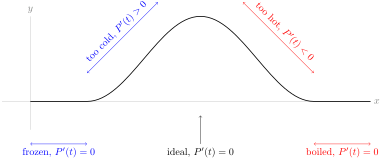
2.4 Arithmetic of Derivatives - a Differentiation Toolbox
2.4.2 Exercises
2.4.2.1.
2.4.2.2.
2.4.2.3.
2.4.2.4.
Solution.
If you’re creative, you can find lots of ways to differentiate!
-
Constant multiple: \(g'(x)=3f'(x)\text{.}\)
-
Product rule:\begin{equation*} g'(x) = \diff{}{x}\{3\}f(x)+3f'(x)=0f(x)+3f'(x)=3f'(x) \end{equation*}
-
Sum rule:\begin{align*} g'(x)\amp=\diff{}{x}\{f(x)+f(x)+f(x)\}=f'(x)+f'(x)+f'(x)\\ \amp=3f'(x) \end{align*}
-
Quotient rule:\begin{align*} g'(x)\amp=\diff{}{x}\left\{\frac{f(x)}{\frac{1}{3}}\right\}= \frac{\frac{1}{3}f'(x)-f(x)(0)}{\frac{1}{9}}=\frac{\frac{1}{3}f'(x)}{\frac{1}{9}}\\ \amp=9\left(\frac{1}{3}\right)f'(x) =3f'(x) \end{align*}
All rules give \(g'(x)=3f'(x)\text{.}\)
2.4.2.5.
2.4.2.6.
Solution.
We have already seen \(\diff{}{x}\{\sqrt{x}\}=\frac{1}{2\sqrt{x}}\) in Example 2.2.9 of the CLP-1 text. Now:
\begin{align*}
f'(x) &= (2)(8\sqrt{x}-9x)+(2x+5)\left(\frac{8}{2\sqrt{x}}-9\right)\\
&= 16\sqrt{x}-18x+(2x+5)\left(\frac{4}{\sqrt{x}}-9\right)\\
&=-36x+24\sqrt{x}+\frac{20}{\sqrt{x}}-45
\end{align*}
2.4.2.7. (✳).
Solution.
We already know that \(\diff{}{x}x=1\) and \(\diff{}{x}x^2=2x\text{,}\) so we can compute the derivative of \(x^3\) by writing \(x^3=(x)(x^2)\text{,}\)
\begin{equation*}
\diff{}{x} x^3 =\diff{}{x} (x)(x^2) = (1)(x^2)+(x)(2x)=3x^2
\end{equation*}
When this is evaluated at \(x=\frac{1}{2}\) we get \(\frac{3}{4}\text{.}\) Since we also compute \(\left( \frac{1}{2}\right)^3=\frac{1}{8}\text{,}\) the equation of the tangent line is
\begin{gather*}
y - \frac{1}{8} = \frac{3}{4}\cdot \left(x-\frac{1}{2}\right).
\end{gather*}
2.4.2.8. (✳).
Solution.
\begin{align*}
f'(t)&=3t^2-8t & f'(2)&=3\times 4-8\times 2=-4\\
f''(t)&=6t-8 & f''(2)&=6\times 2-8=4
\end{align*}
and the speed is
\begin{align*}
|f'(t)|&=|3t^2-8t| & |f'(2)|&=|-4|=4
\end{align*}
Hence at \(t=2\text{,}\) 2.4.2.8.a the particle has speed {4}, and 2.4.2.8.b is moving {towards the left}. At \(t=2\text{,}\) \(f''(2) \gt 0\text{,}\) so \(f'\) is increasing. For \(t\) near \(2\text{,}\) \(f'(t)\) is negative so that the speed \(|f'(t)|=-f'(t)\) is decreasing. Thus 2.4.2.8.c the speed is {decreasing}.
2.4.2.9. (✳).
2.4.2.10.
Solution.
First, we find the \(y'\) for general \(x\text{.}\) Using the corollary to Theorem 2.4.3 and the quotient rule:
\begin{align*}
y'&=2\left(\dfrac{3x+1}{3x-2}\right)\cdot\diff{}{x}\left\{\dfrac{3x+1}{3x-2}\right\}\\
&=2\left(\dfrac{3x+1}{3x-2}\right)\left(\dfrac{(3x-2)(3)-(3x+1)(3)}{(3x-2)^2}\right)\\
&=2\left(\dfrac{3x+1}{3x-2}\right)\left(\dfrac{-9}{(3x-2)^2}\right)\\
&=\dfrac{-18(3x+1)}{(3x-2)^3}\\
\end{align*}
So, plugging in \(x=1\text{:}\)
\begin{align*}
y'(1)&=\dfrac{-18(3+1)}{(3-2)^3}=-72
\end{align*}
2.4.2.11.
Solution.
We need \(f'(1)\text{,}\) so first we must find \(f'(x)\text{.}\) Since \(f(x)\) is the reciprocal of \(\sqrt{x}+1\text{,}\) we can use the Corollary 2.4.6:
\begin{equation*}
f'(x) = \dfrac{-\diff{}{x}\{\sqrt{x}+1\}}{(\sqrt{x}+1)^2}=\dfrac{-\frac{1}{2\sqrt{x}}}{(\sqrt{x}+1)^2}= \dfrac{-1}{2\sqrt{x}(\sqrt{x}+1)^2},
\end{equation*}
so \(f'(1)=\dfrac{-1}{2\sqrt{1}(\sqrt{1}+1)^2}=\frac{-1}{8}.\)
Now, using the point \(\left(1,\frac{1}{2}\right)\) and the slope \(\frac{-1}{8}\text{,}\) our tangent line has equation \(y-\frac{1}{2}=-\frac{1}{8}(x-1)\text{.}\)
2.4.2.12.
Solution.
Population growth is rate of change of population. Population in year \(2000+t\) is given by \(P(t)=P_0+b(t)-d(t)\text{,}\) where \(P_0\) is the initial population of the town. Then \(P'(t)\) is the expression we’re looking for, and \(P'(t)=b'(t)-d'(t)\text{.}\)
It is interesting to note that the initial population does not obviously show up in this calculation. It would probably affect \(b(t)\) and \(d(t)\text{,}\) but if we know these we do not need to know \(P_0\) to answer our question.
2.4.2.13. (✳).
Solution.
We already know that \(\diff{}{x}x^2=2x\text{.}\) So the slope of \(y=3x^2\) at \(x=a\) is \(6a\text{.}\) The tangent line to \(y=3x^2\) at \(x=a, y=3a^2\) is \(y-3a^2=6a(x-a)\text{.}\) This tangent line passes through \((2,9)\) if
\begin{align*}
9-3a^2&=6a(2-a)\\
3a^2-12a+9&=0\\
a^2-4a+3&=0\\
(a-3)(a-1)&=0\\
\implies \;\; a&=1,3
\end{align*}
The points are {\((1,3),\ (3,27)\)}.
2.4.2.14. (✳).
2.4.2.15.
Solution.
Let \(w(t)\) and \(l(t)\) be the width and length of the rectangle. Given in the problem is that \(w'(t)=2\) and \(l'(t)=5\text{.}\) Since both functions have constant slopes, both must be lines. Their slopes are given, and their intercepts are \(w(0)=l(0)=1\text{.}\) So, \(w(t)=2t+1\) and \(l(t)=5t+1\text{.}\)
The area of the rectangle is \(A(t)=w(t)\cdot l(t)\text{,}\) so using the product rule, the rate at which the area is increasing is \(A'(t)=w'(t)l(t)+w(t)l'(t)=2(5t+1)+5(2t+1)=20t+7\) square metres per second.
2.4.2.16.
2.4.2.17.
Solution.
First expression, \(f(x)=\dfrac{g(x)}{h(x)}\text{:}\)
\begin{align*}
f'(x)&=\frac{h(x)g'(x)-g(x)h'(x)}{h^2(x)}
\end{align*}
Second expresson, \(f(x)=\dfrac{g(x)}{k(x)}\cdot\dfrac{k(x)}{h(x)}\text{:}\)
\begin{align*}
\amp f'(x)=\left(\frac{k(x)g'(x)-g(x)k'(x)}{k^2(x)}\right)\left(\frac{k(x)}{h(x)}\right)\\
\amp\hskip1in+\left(\frac{g(x)}{k(x)}\right)\left(\frac{h(x)k'(x)-k(x)h'(x)}{h^2(x)}\right)\\
&=\frac{k(x)g'(x)-g(x)k'(x)}{k(x)h(x)}+
\frac{g(x)h(x)k'(x)-g(x)k(x)h'(x)}{k(x)h^2(x)}\\
&=\frac{h(x)k(x)g'(x)-h(x)g(x)k'(x)}{k(x)h^2(x)}+
\frac{g(x)h(x)k'(x)-g(x)k(x)h'(x)}{k(x)h^2(x)}\\
&=\frac{h(x)k(x)g'(x)-h(x)g(x)k'(x)+g(x)h(x)k'(x)-g(x)k(x)h'(x)}{k(x)h^2(x)}\\
&=\frac{h(x)k(x)g'(x)-g(x)k(x)h'(x)}{k(x)h^2(x)}\\
&=\frac{h(x)g'(x)-g(x)h'(x)}{h^2(x)}
\end{align*}
and this is exactly what we got from differentiating the first expression.
2.6 Using the Arithmetic of Derivatives – Examples
2.6.2 Exercises
2.6.2.1.
2.6.2.2.
Solution.
False: Lemma 2.6.9 tells us that, for a constant \(n\text{,}\) \(\ds\diff{}{x}\{x^n\}=nx^{n-1}\text{.}\) Note that the base \(x\) is the variable and the exponent \(n\) is a constant. In the equation given in the question, the base \(2\) is a constant, and the exponent \(x\) is the variable: this is the opposite of the situation required by Lemma 2.6.9. So Lemma 2.6.9 does not apply.
We do not yet know how to differentiate \(2^x\text{.}\) We’ll learn about it in Section 2.7. There we will see that the derivative is \((\log_e 2)\,2^x\) not \(x\, 2^{x-1}\text{.}\)
2.6.2.3.
2.6.2.4.
2.6.2.5.
Solution.
We could use the product rule here, but it’s easier to simplify first. Don’t be confused by the role reversal of \(x\) and \(y\text{:}\) \(x\) is the name of the function, and \(y\) is the variable.
\begin{align*}
x(y) &= \left(2y+\frac{1}{y}\right)\cdot y^3\\
&=2y^4+y^2\\
x'(y)&=8y^3+2y
\end{align*}
2.6.2.6.
Solution.
We’ve already seen that \(\diff{}{x}\{\sqrt{x}\}=\frac{1}{2\sqrt{x}}\text{,}\) but if you forget this formula it is easy to figure out: \(\sqrt{x}=x^{1/2}\text{,}\) so \(\diff{}{x}\{\sqrt{x}\}=\frac{1}{2}x^{-1/2}=\frac{1}{2\sqrt{x}}\text{.}\)
Using the quotient rule:
\begin{align*}
T(x) &= \dfrac{\sqrt{x}+1}{x^2+3}\\
T'(x)&=\frac{(x^2+3)\left(\frac{1}{2\sqrt{x}}\right)-(\sqrt{x}+1)(2x)}{(x^2+3)^2}
\end{align*}
2.6.2.7. (✳).
2.6.2.8.
Solution.
2.6.2.9.
2.6.2.10. (✳).
2.6.2.11. (✳).
2.6.2.12. (✳).
2.6.2.13. (✳).
Solution.
The derivative of the function is
\begin{align*}
\frac{(1-x^2)\cdot\frac{1}{2\sqrt{x}} - \sqrt{x} \cdot (-2x)}{(1-x^2)^2}
&= \frac{(1-x^2) - 2x \cdot (-2x)}{2\sqrt{x}(1-x^2)^2}
\end{align*}
The derivative is undefined if either \(x \lt 0\) or \(x = 0,\pm 1\) (since the square-root is undefined for \(x \lt 0\) and the denominator is zero when \(x=0,1,-1\text{.}\) Putting this together — the derivative exists for \(x \gt 0, x\neq 1\text{.}\)
2.6.2.14.
Solution.
Using the product rule seems faster than expanding.
\begin{align*}
f'(x)&=\diff{}{x}\left\{3\sqrt[5]{x}+15\sqrt[3]{x}+8\right\}\left(3x^2+8x-5\right)+
\left(3\sqrt[5]{x}+15\sqrt[3]{x}+8\right)\\
\amp\hskip2in\diff{}{x}\left\{3x^2+8x-5\right\}\\
&=\diff{}{x}\left\{3{x}^{\frac{1}{5}}+15{x}^{\frac{1}{3}}+8\right\}\left(3x^2+8x-5\right)+
\left(3\sqrt[5]{x}+15\sqrt[3]{x}+8\right)\\
\amp\hskip2in\diff{}{x}\left\{3x^2+8x-5\right\}\\
&=\left(\frac{3}{5}{x}^{\frac{-4}{5}}\!+\!5{x}^{\frac{-2}{3}}\right)
\left(3x^2\!+\!8x\!-\!5\right)+
\left(3\sqrt[5]{x}\!+\!15\sqrt[3]{x}+8\right)\left(6x\!+\!8\right)
\end{align*}
2.6.2.15.
Solution.
To avoid the quotient rule, we can divide through the denominator:
\begin{align*}
f(x)&=\dfrac{(x^2+5x+1)(\sqrt{x}+\sqrt[3]{x})}{x}
=(x^2+5x+1)\dfrac{(\sqrt{x}+\sqrt[3]{x})}{x}\\
&=(x^2+5x+1)(x^{-1/2}+x^{-2/3})\\
\end{align*}
Now, product rule:
\begin{align*}
f'(x)&=(2x\!+\!5)(x^{-1/2}\!+\!x^{-2/3})+(x^2\!+\!5x\!+\!1)
\left(\frac{-1}{2}x^{-3/2}\!-\!\frac{2}{3}x^{-5/3}\right)
\end{align*}
(If you simplified differently, or used the quotient rule, you probably came up with a different-looking answer. There is only one derivative, though, so all correct answers will look the same after sufficient algebraic manipulation.)
2.6.2.16.
Solution.
The question asks us to find where \(f'(x)=0\) and \(f(x)\) exists. We can use the formula for the derivative of a reciprocal, Corollary 2.4.6:
\begin{align*}
f'(x) &= \frac{-\diff{}{x}\left\{\frac{1}{5}x^5+x^4-\frac{5}{3}x^3\right\}}{\left(\frac{1}{5}x^5+x^4-\frac{5}{3}x^3\right)^2}\\
&=\frac{-\left(x^4+4x^3-{5}x^2\right)}{\left(\frac{1}{5}x^5+x^4-\frac{5}{3}x^3\right)^2}\\
&=\frac{-x^2\left(x^2+4x-{5}\right)}{\left(\frac{1}{5}x^5+x^4-\frac{5}{3}x^3\right)^2}\\
&=\frac{-x^2(x+5)(x-1)}{\left(\frac{1}{5}x^5+x^4-\frac{5}{3}x^3\right)^2}
\end{align*}
So our candidates for \(x\)-values where \(f'(x)=0\) are \(x=0\text{,}\) \(x=-5\text{,}\) and \(x=1\text{.}\) However, we need to check that \(f\) exists at these places: \(f(0)\) is undefined (and \(f'(0)\) doesn’t exist). So \(f'(x)=0\) only when \(x=-5\) and \(x=1\text{.}\)
2.6.2.17. (✳).
Solution.
Denote by \(m\) the slope of the common tangent, by \((x_1,y_1)\) the point of tangency with \(y=x^2\text{,}\) and by \((x_2,y_2)\) the point of tangency with \(y=x^2-2x+2\text{.}\) Then we must have
\begin{equation*}
y_1=x_1^2\qquad
y_2=x_2^2-2x_2+2\qquad
m=2x_1=2x_2-2=\frac{y_2-y_1}{x_2-x_1}
\end{equation*}
From the “\(m\)” equations we get \(x_1=\frac{m}{2}\text{,}\) \(x_2=\frac{m}{2}+1\) and
\begin{align*}
m&=\frac{y_2-y_1}{x_2-x_1}\\
&=y_2-y_1\\
&=x_2^2-2x_2+2-x_1^2\\
& =(x_2-x_1)(x_2+x_1)-2(x_2-1)\\
&=\left(\frac{m}{2}+1-\frac{m}{2}\right)\left(\frac{m}{2}+1+\frac{m}{2}\right)
-2\left(\frac{m}{2}+1-1\right)\\
&=(1)(m+1)-2\frac{m}{2}\\
&=1
\end{align*}
So \(m=1\) and
\begin{gather*}
x_1=\half,\qquad
y_1=\frac{1}{4},\qquad
x_2=\frac{3}{2},\qquad
y_2=\frac{9}{4}-3+2=\frac{5}{4}
\end{gather*}
An equation of the common tangent is \(y=x-\frac{1}{4}\text{.}\)
2.6.2.18.
Solution.
The line \(y=mx+b\) is tangent to \(y=x^2\) at \(x=\alpha\) if
\begin{equation*}
2\alpha=m\hbox{ and }\alpha^2=m\alpha+b
\iff m=2\alpha\hbox{ and }b=-\alpha^2
\end{equation*}
The same line \(y=mx+b\) is tangent to \(y=-x^2+2x-5\) at \(x=\beta\) if
\begin{align*}
-2\beta+2=m&\hbox{ and }-\beta^2+2\beta-5=m\beta+b\\
\iff m=2-2\beta&\hbox{ and }b=-\beta^2+2\beta-5-(2-2\beta)\beta=\beta^2-5
\end{align*}
For the line to be simultaneously tangent to the two parabolas we need
\begin{equation*}
m=2\alpha=2-2\beta\hbox{ and }b=-\alpha^2=\beta^2-5
\end{equation*}
Substituting \(\alpha=1-\beta\) into \(-\alpha^2=\beta^2-5\) gives \(-(1-\beta)^2=\beta^2-5\) or \(2\beta^2-2\beta-4=0\) or \(\beta=-1,2\text{.}\) The corresponding values of the other parameters are \(\alpha=2,-1\text{,}\) \(m=4,-2\) and \(b=-4,-1\text{.}\) The two lines are {\(y=4x-4\) and \(y=-2x-1\)}.

2.6.2.19. (✳).
Solution.
This limit represents the derivative computed at \(x=2\) of the function \(f(x)=x^{2015}\text{.}\) To see this, simply use the definition of the derivative at \(a=2\) with \(f(x)=x^{2015}\text{:}\)
\begin{align*}
\left.\diff{}{x}\{f(x)\}\right|_{a} &= \lim_{x \to a}\frac{f(x)-f(a)}{x-a}\\
\left.\diff{}{x}\{x^{2015}\}\right|_{2} &=\lim_{x\to2} \frac{x^{2015}-2^{2015}}{x-2}
\end{align*}
Since the derivative of \(f(x)\) is \(2015\cdot x^{2014}\text{,}\) then its value at \(x=2\) is exactly \(2015\cdot 2^{2014}\text{.}\)
2.7 Derivatives of Exponential Functions
2.7.3 Exercises
2.7.3.1.
Solution.
Since \(1^x=1\) for any \(x\text{,}\) we see that \((b)\) is just the constant function \(y=1\text{,}\) so D matches to \((b)\text{.}\)
Since \(2^{-x}=\frac{1}{2^x}=\left(\frac{1}{2}\right)^x\text{,}\) functions \((a)\) and \((d)\) are the same. This is the only function out of the lot that grows as \(x\to-\infty\) and shrinks as \(x \to \infty\text{,}\) so A matches to \((a)\) and \((d)\text{.}\)
This leaves B and C to match to \((c)\) and \((e)\text{.}\) Since \(3 \gt 2\text{,}\) when \(x \gt 0\text{,}\) \(3^x \gt 2^x\text{.}\) So, \((e)\) matches to the function that grows more quickly to the right of the \(x\)-axis: B matches to \((e)\text{,}\) and C matches to \((c)\text{.}\)
2.7.3.2.
Solution.
First, let’s consider the behaviour of exponential functions \(a^x\) based on whether \(a\) is greater or less than 1. As we know, \(\ds\lim_{x\to\infty}a^x
=\left\{\begin{array}{ll}
\infty & a \gt 1\\
0&a \lt 1
\end{array}\right.\) and \(\ds\lim_{x\to-\infty}a^x=\left\{\begin{array}{ll}
0 & a \gt 1\\
\infty&a \lt 1
\end{array}\right.\text{.}\) Our function has \(\ds\lim_{x \to \infty} f(x)=\infty\) and \(\ds\lim_{x \to -\infty} f(x)=0\text{,}\) so we conclude \(a \gt 1\text{:}\) thus \((d)\) and also \((b)\) hold. (We could have also seen that \((b)\) holds because \(a^x\) is defined for all real numbers.)
It remains to decide whether \(a\) is greater or less than \(e\text{.}\) (If \(a\) were equal to \(e\text{,}\) then \(f'(x)\) would be the same as \(f(x)\text{.}\)) We saw in the text that \(\diff{}{x}\{a^x\}=C(a)a^x\) for the function \(C(a)=\ds\lim_{h \to 0} \dfrac{a^h-1}{h}\text{.}\) We know that \(C(e)=1\text{.}\) (Actually, we chose \(e\) to be the number that has this property.) From our graph, we see that \(f'(x) \lt f(x)\text{,}\) so \(C(a) \lt 1=C(e)\text{.}\) In other words, \(\ds\lim_{h \to 0} \dfrac{a^h-1}{h} \lt \ds\lim_{h \to 0} \dfrac{e^h-1}{h}\text{;}\) so, \(a \lt e\text{.}\) Thus \((e)\) holds.
2.7.3.3.
2.7.3.4.
Solution.
\(P(t)\) is an increasing function over its domain, so the population is increasing.
There are a few ways to see that \(P(t)\) is increasing.
What we really care about is whether \(e^{0.2t}\) is increasing or decreasing, since an increasing function multiplied by 100 is still an increasing function, and a decreasing function multiplied by 100 is still a decreasing function. Since \(f(t)=e^t\) is an increasing function, we can use what we know about graphing functions to see that \(f(0.2t)=e^{0.2t}\) is also increasing.
2.7.3.5.
2.7.3.6.
2.7.3.7.
2.7.3.8.
Solution.
If the derivative is positive, the function is increasing, so let’s start by finding the derivative. We use the product rule (although Question 2.7.3.12 gives a shortcut).
\begin{align*}
f'(x)&=1\cdot e^x+xe^x=(1+x)e^x
\end{align*}
Since \(e^x\) is always positive, \(f'(x) \gt 0\) when \(1+x \gt 0\text{.}\) So, \(f(x)\) is increasing when \(x \gt -1\text{.}\)
2.7.3.9.
2.7.3.10.
2.7.3.11.
Solution.
The question asks when \(s'(t)\) is negative. So, we start by differentiating. Using the product rule:
\begin{align*}
s'(t)&=e^t(t^2+2t)\\
&=e^t \cdot t(t+2)
\end{align*}
\(e^t\) is always positive, so \(s'(t)\) is negative when \(t\) and \(2+t\) have opposite signs. This occurs when \(-2 \lt t \lt 0\text{.}\)
2.7.3.12.
2.7.3.13.
Solution.
We simplify the functions to get a better idea of what’s going on.
(\(b\)): \(2y+5=e^{3+\log x}=e^3e^{\log x}=e^3x\text{.}\) Since \(e^3\) is a constant, \(2y+5=e^3x\) is a line.
(\(c\)): There isn’t a fancy simplification here--this isn’t a line. If that isn’t a satisfactory answer, we can check: a line is a function with a constant slope. For our function, \(y'=\diff{}{x}\{e^{2x} +4\}=\diff{}{x}\{e^{2x}\}=\diff{}{x}\left\{(e^x)^2\right\}=2e^xe^x=2e^{2x}\text{.}\) Since the derivative isn’t constant, the function isn’t a line.
(\(d\)): \(y=e^{\log x}3^e+\log 2=3^e x+\log 2\text{.}\) Since \(e^3\) and \(\log 2\) are constants, this is a line.
2.7.3.14. (✳).
Solution.
When we say a function is differentiable without specifying a range, we mean that it is differentiable over its domain. The function \(f(x)\) is differentiable when \(x \neq 1\) for any values of \(a\) and \(b\text{;}\) it is up to us to figure out which constants make it differentiable when \(x=1\text{.}\)
In order to be differentiable, a function must be continuous. The definition of continuity tells us that, for \(f\) to be continuous at \(x=1\text{,}\) we need \(\ds\lim_{x \to 1}f(x)=f(1)\text{.}\) From the definition of \(f\text{,}\) we see \(f(1)=a+b=\ds\lim_{x \to 1^-}f(x)\text{,}\) so we need \(\ds\lim_{x\to 1^+}f(x)=a+b\text{.}\) Since \(\ds\lim_{x \to 1^+}f(x)=e^1=e\text{,}\) we specifically need
\begin{equation*}
e=a+b.
\end{equation*}
Now, let’s consider differentiability of \(f\) at \(x=1\text{.}\) We need the following limit to exist:
\begin{align*}
\lim_{h \to 0} \frac{f(1+h)-f(1)}{h}&\\
\end{align*}
In particular, we need the one-sided limits to exist and be equal:
\begin{align*}
\textcolor{red}{\lim_{h \to 0^-}\frac{f(1+h)-f(1)}{h}}&=\textcolor{blue}{\lim_{h \to 0^+}\frac{f(1+h)-f(1)}{h}}\\
\end{align*}
If \(h \lt 0\text{,}\) then \(1+h \lt 1\text{,}\) so \(f(1+h)=a(1+h)^2+b\text{.}\) If \(h \gt 0\text{,}\) then \(1+h \gt 1\text{,}\) so \(f(1+h)=e^{1+h}\text{.}\) With this in mind, we begin to evaluate the one-sided limits:
\begin{align*}
\color{red}{\lim_{h \to 0^-}\frac{f(1+h)-f(1)}{h}}&\color{red}{=
\lim_{h \to 0^-}\frac{[a(1+h)^2+b]-[a+b]}{h}}\\
&\color{red}={\lim_{h \to 0^-}\frac{ah^2+2ah}{h}=2a}\\
\color{blue}{\lim_{h \to 0^+}\frac{f(1+h)-f(1)}{h}}&\color{blue}{=
\lim_{h \to 0^+}\frac{e^{1+h}-(a+b)}{h}}\\
\end{align*}
Since we take \(a+b\) to be equal to \(e\) (to ensure continuity):
\begin{align*}
&\color{blue}{=
\lim_{h \to 0^+}\frac{e^{1+h}-e^1}{h}}\\
&\color{blue}={\left.\diff{}{x}\{e^x\}\right|_{x=1}=e^1=e}
\end{align*}
Therefore, the values of \(a\) and \(b\) that make \(f\) differentiable are \(a=b=\dfrac{e}{2}\text{.}\)
2.8 Derivatives of Trigonometric Functions
2.8.8 Exercises
2.8.8.1.
2.8.8.2.
2.8.8.3.
2.8.8.4.
Solution.
\(f'(x)=\cos x - \sin x\text{,}\) so \(f'(x)=0\) precisely when \(\sin x = \cos x\text{.}\) This happens at \(\pi/4\text{,}\) but it also happens at \(5\pi/4\text{.}\) By looking at the unit circle, it is clear that \(\sin x = \cos x\) whenever \(x = \frac{\pi}{4}+\pi n\) for some integer \(n\text{.}\)
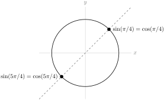
2.8.8.5.
2.8.8.6.
2.8.8.7.
2.8.8.8.
Solution.
We use the quotient rule.
\begin{align*}
\amp f'(x)\\
&=\dfrac{(\cos x\!+\!\tan x)(2\cos x\!+\!3 \sec^2 x)\!-\!
(2\sin x\!+\!3\tan x)(-\sin x\!+\!\sec^2 x)}{(\cos x + \tan x)^2}\\
&=\frac{2\cos^2x+3\cos x \sec^2 x + 2 \cos x \tan x + 3 \tan x \sec^2 x}{(\cos x + \tan x)^2}\\
&\qquad
+\frac{2\sin^2x-2\sin x \sec^2x+3\sin x \tan x -3\tan x \sec^2 x}{(\cos x + \tan x)^2}\\
&=\frac{2+3 \sec x + 2 \sin x -2\tan x \sec x+3\sin x \tan x }{(\cos x + \tan x)^2}
\end{align*}
2.8.8.9.
2.8.8.10.
2.8.8.11.
2.8.8.12.
2.8.8.13.
Solution.
We apply the quotient rule.
\begin{align*}
s'(\theta)&=\frac{(\cos \theta-\sin\theta)(-\sin\theta+\cos\theta)-(\cos\theta+\sin\theta)(-\sin\theta-\cos\theta)}{(\cos\theta-\sin\theta)^2}\\
&=\frac{(\cos \theta-\sin\theta)^2+(\cos\theta+\sin\theta)^2}{(\cos\theta-\sin\theta)^2}\\
&=1+\left(\frac{\cos\theta+\sin\theta}{\cos\theta-\sin\theta}\right)^2
\end{align*}
2.8.8.14. (✳).
Solution.
In order for \(f\) to be differentiable at \(x=0\text{,}\) it must also be continuous at \(x=0\text{.}\) This forces
\begin{align*}
\amp\lim_{x\to 0^-}f(x) = \lim_{x\to 0^+}f(x) =f(0)\\
\text{or}\qquad
\amp\lim_{x\to 0^-}\cos(x) = \lim_{x\to 0^+}(ax+b) =1
\end{align*}
or \(b=1\text{.}\)
In order for \(f\) to be differentiable at \(x=0\text{,}\) we need the limit
\begin{equation*}
\lim_{h\to 0}\frac{f(0+h)-f(0)}{h}
\end{equation*}
to exist. This is the case if and only if the two one-sided limits
\begin{align*}
\lim_{h\to 0^-}\frac{f(0+h)-f(0)}{h} \amp =\lim_{h\to 0^-}\frac{\cos(h)-\cos(0)}{h}\\
\end{align*}
and
\begin{align*}
\lim_{h\to 0^+}\frac{f(0+h)-f(0)}{h} \amp =\lim_{h\to 0^+}\frac{(ah+b)-\cos(0)}{h}
=a\qquad\text{since $b=1$}\\
\end{align*}
exist and are equal. Because \(\cos(x)\) is differentiable at \(x=0\) we have
\begin{align*}
\lim_{h\to 0^-}\frac{\cos(h)-\cos(0)}{h} \amp = \diff{}{x}\cos(x)\bigg|_{x=0}
= -\sin(x)\Big|_{x=0}=0 \amp
\end{align*}
So, we need \(a=0\) and \(b=1\text{.}\)
2.8.8.15. (✳).
Solution.
We compute the derivative of \(\cos(x)+2x\) as being \(-\sin(x)+2\text{,}\) which evaluated at \(x=\frac{\pi}{2}\) yields \(-1+2=1\text{.}\) Since we also compute \(\cos(\pi/2)+2(\pi/2)=0+\pi\text{,}\) then the equation of the tangent line is
\begin{gather*}
y - \pi = 1\cdot (x-\pi/2).
\end{gather*}
2.8.8.16. (✳).
Solution.
This limit represents the derivative computed at \(x=2015\) of the function \(f(x)=\cos(x)\text{.}\) To see this, simply use the definition of the derivative at \(a=2015\) with \(f(x)=\cos x\text{:}\)
\begin{align*}
\left.\diff{}{x}\{f(x)\}\right|_{a} &= \lim_{x \to a}\frac{f(x)-f(a)}{x-a}\\
\left.\diff{}{x}\{\cos x\}\right|_{2015} &= \lim_{x\to2015}\frac{\cos(x)-\cos(2015)}{x-2015}
\end{align*}
Since the derivative of \(f(x)\) is \(-\sin(x)\text{,}\) its value at \(x=2015\) is exactly \(-\sin(2015)\text{.}\)
2.8.8.17. (✳).
Solution.
This limit represents the derivative computed at \(x=\pi/3\) of the function \(f(x)=\cos x\text{.}\) To see this, simply use the definition of the derivative at \(a=\pi/3\) with \(f(x)=\cos x\text{:}\)
\begin{align*}
\left.\diff{}{x}\{f(x)\}\right|_{a} &= \lim_{x \to a}\frac{f(x)-f(a)}{x-a}\\
\left.\diff{}{x}\{\cos x\}\right|_{\pi/3} &= \lim_{x\to\pi/3}\frac{\cos(x)-\cos(\pi/3)}{x-\pi/3}\\
&=\lim_{x\to\pi/3} \frac{\cos(x)-1/2}{x-\pi/3}
\end{align*}
Since the derivative of \(f(x)\) is \(-\sin x\text{,}\) then its value at \(x=\pi/3\) is exactly \(-\sin(\pi/3)=-\sqrt{3}/2\text{.}\)
2.8.8.18. (✳).
Solution.
This limit represents the derivative computed at \(x=\pi\) of the function \(f(x)=\sin(x)\text{.}\) To see this, simply use the definition of the derivative at \(a=\pi\) with \(f(x)=\sin x\text{:}\)
\begin{align*}
\left.\diff{}{x}\{f(x)\}\right|_{a} &= \lim_{x \to a}\frac{f(x)-f(a)}{x-a}\\
\left.\diff{}{x}\{\sin x\}\right|_{\pi} &=\lim_{x\to\pi} \frac{\sin(x)-\sin(\pi)}{x-\pi}\\
&=\lim_{x\to\pi} \frac{\sin(x)}{x-\pi}
\end{align*}
Since the derivative of \(f(x)\) is \(\cos(x)\text{,}\) then its value at \(x=\pi\) is exactly \(\cos(\pi)=-1\text{.}\)
2.8.8.19.
Solution.
\begin{align*}
\tan \theta &= \dfrac{\sin \theta}{\cos \theta}\\
\end{align*}
So, using the quotient rule,
\begin{align*}
\diff{}{\theta}\{\tan \theta\}&=\frac{\cos\theta\cos\theta-\sin\theta(-\sin\theta)}{\cos^2\theta}
=\frac{\cos^2\theta+\sin^2\theta}{\cos^2\theta}\\
&=\left(\frac{1}{\cos \theta}\right)^2=\sec^2\theta
\end{align*}
2.8.8.20. (✳).
Solution.
In order for the function \(f(x)\) to be continuous at \(x=0\text{,}\) the left half formula \(ax+b\) and the right half formula \(\dfrac{6\cos x}{2+\sin x+\cos x}\) must match up at \(x=0\text{.}\) This forces
\begin{equation*}
a\times 0+b=\frac{6\cos 0}{2+\sin 0+\cos 0}=\frac{6}{3}
\implies \boxed{b=2}
\end{equation*}
In order for the derivative \(f'(x)\) to exist at \(x=0\text{,}\) the limit \(\ds\lim_{h \rightarrow 0} \dfrac{f(h)-f(0)}{h}\) must exist. In particular, the limits \(\ds\lim_{h \rightarrow 0^-} \dfrac{f(h)-f(0)}{h}\) and \(\ds\lim_{h \rightarrow 0^+} \dfrac{f(h)-f(0)}{h}\) must exist and be equal to each other.
When \(h \to 0^-\text{,}\) this means \(h \lt 0\text{,}\) so \(f(h)=ah+b=ah+2\text{.}\) So:
\begin{equation*}
\ds\lim_{h\to 0^-}\dfrac{f(h)-f(0)}{h}=\ds\lim_{h\to 0^-}\dfrac{(ah+2)-2}{h}=\left.\ds\diff{}{x}\left\{ax+2\right\}\right|_{x=0}=a.
\end{equation*}
Similarly, when \(h \to 0^+\text{,}\) then \(h \gt 0\text{,}\) so \(f(h)=\dfrac{6\cos h}{1+\sin h + \cos h}\) and
\begin{align*}
\amp\ds\lim_{h \rightarrow 0^+} \dfrac{f(h)-f(0)}{h} = \left.\ds\diff{}{x}\left\{\dfrac{6\cos x}{2+\sin x + \cos x}\right\}\right|_{x=0}\\
&\hskip0.5in=\left.\frac{-6\sin x(2+\sin x+\cos x)-6\cos x(\cos x-\sin x)}{(2+\sin x+\cos x)^2}\right|_{x=0}.
\end{align*}
Since the limits from the left and right must be equal, this forces
\begin{align*}
\amp a=\frac{-6\sin 0(2+\sin 0+\cos 0)-6\cos 0(\cos 0-\sin 0)}{(2+\sin 0+\cos 0)^2}
=\frac{-6}{(2+1)^2}\\
\amp\implies\boxed{a=-\frac{2}{3}}
\end{align*}
2.8.8.21. (✳).
Solution.
In order for \(f'(x)\) to exist, \(f(x)\) has to exist. We already know that \(\tan x \) does not exist whenever \(x=\frac{\pi}{2}+n\pi\) for any integer \(n\text{.}\) If we look a little deeper, since \(\tan x = \frac{\sin x}{\cos x}\text{,}\) the points where tangent does not exist correspond exactly to the points where cosine is zero.
From its graph, tangent looks like a smooth curve over its domain, so we might guess that everywhere tangent is defined, its derivative is defined. We can check this: \(f'(x) = \sec^2 x = \left(\frac{1}{\cos x}\right)^2\text{.}\) Indeed, wherever \(\cos x\) is nonzero, \(f'\) exists.
So, \(f'(x)\) exists for all values of \(x\) except when \(x=\frac{\pi}{2}+n\pi\) for some integer \(n\text{.}\)
2.8.8.22. (✳).
Solution.
The function is differentiable whenever \(x^2+x-6\ne 0\) since the derivative equals
\begin{gather*}
\frac{10\cos(x)\cdot (x^2+x-6)-10\sin(x)\cdot (2x+1)}{(x^2+x-6)^2},
\end{gather*}
which is well-defined unless \(x^2+x-6=0\text{.}\) We solve \(x^2+x-6=(x-2)(x+3)=0,\) and get \(x=2\) and \(x=-3\text{.}\) So, the function is differentiable for all real values \(x\) except for \(x=2\) and for \(x=-3\text{.}\)
2.8.8.23. (✳).
Solution.
The function is differentiable whenever \(\sin(x)\ne 0\) since the derivative equals
\begin{gather*}
\frac{\sin(x)\cdot (2x+6) - \cos(x)\cdot (x^2+6x+5)}{(\sin x)^2},
\end{gather*}
which is well-defined unless \(\sin x = 0\text{.}\) This happens when \(x\) is an integer multiple of \(\pi\text{.}\) So, the function is differentiable for all real values \(x\) except \(x=n\pi\text{,}\) where \(n\) is any integer.
2.8.8.24. (✳).
2.8.8.25. (✳).
2.8.8.26.
Solution.
We are asked to solve \(f'(x)=0\text{.}\) That is, \(e^x[\sin x + \cos x]=0\text{.}\) Since \(e^x\) is always positive, that means we need to find all points where \(\sin x + \cos x =0\text{.}\) That is, we need to find all values of \(x\) where \(\sin x = - \cos x\text{.}\) Looking at the unit circle, we see this happens whenever \(x = \frac{3\pi}{4}+n\pi\) for any integer \(n\text{.}\)
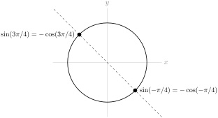
2.8.8.27.
Solution.
First, we note that our function is continuous, because
\begin{equation*}
\lim_{x \to 0} f(x)=\lim_{x \to 0} \frac{\sin x}{x}=1=f(0)
\end{equation*}
This is a handy thing to check: if the function were discontinuous at \(x=0\text{,}\) then we would automatically know that it was not differentiable there.
Now, on to the derivative. We can use the limit definition:
\begin{align*}
f'(0)&=\lim_{h \to 0}\frac{f(0+h)-f(0)}{h}\qquad\mbox{ if it exists}\\
&=\lim_{h \to 0} \frac{f(h)-1}{h}\\
&=\lim_{h \to 0} \frac{\frac{\sin h}{h}-1}{h}
\end{align*}
As \(h\) approaches 0, both the numerator and the denominator approach 0. So, to evaluate the limit, we need to do more work. The key insight we can use is a result that was shown in the text while evaluating the derivative of sine. When \(h\) is close to 0, \(\cos h \leq \frac{\sin h}{h} \leq 1\text{.}\) We use this to bound our limit, and then apply the squeeze theorem.
\begin{alignat*}{5}
&\cos h&&\leq&&\frac{\sin h}{h}&&\leq&&1\\
\mbox{So, }\qquad&\cos h-1&
&\leq&&\frac{\sin h}{h}-1&
&\leq&&1-1=0
\end{alignat*}
and \(\frac{1}{h}\left(\frac{\sin h}{h}-1\right)\) is between \(0\) and \(\frac{\cos h - 1}{h}\text{.}\) We can evaluate the limit of \(\frac{\cos h - 1}{h}\) by noticing its similarity to the definition of the derivative.
\begin{align*}
\lim_{h \to 0}\frac{\cos h-1}{h}&=\lim_{h \to 0}\frac{\cos(0+h)-\cos(0)}{h}\\
&=\diff{}{x}\left.\left\{\cos x \right\}\right|_{x=0}=0
\end{align*}
So, by the Squeeze Theorem, \(f'(0)=\ds\lim_{h \to 0}\frac{\frac{\sin h}{h}-1}{h}=0\text{.}\)
2.8.8.28. (✳).
Solution.
As usual, when dealing with the absolute value function, we can make things a little clearer by splitting it up into two pieces.
\begin{align*}
|x|&=\left\{\begin{array}{rl}
x&x\ge 0\\
-x&x \lt 0
\end{array}\right.\\
\end{align*}
So,
\begin{align*}
\sin|x|&=\left\{\begin{array}{rl}
\sin x&x\ge 0\\
\sin(-x)&x \lt 0
\end{array}\right.
=\left\{\begin{array}{rl}
\sin x&x\ge 0\\
-\sin x&x \lt 0
\end{array}\right.\\
\end{align*}
where we used the identity \(\sin(-x)=-\sin x\text{.}\) From here, it’s easy to see \(h'(x)\) when \(x\) is anything other than zero.
\begin{align*}
\diff{}{x}\{\sin|x|\}&=\left\{\begin{array}{rl}
\cos x&x \gt 0\\
??&x=0\\
-\cos x&x \lt 0
\end{array}\right.\\
\end{align*}
To decide whether \(h(x)\) is differentiable at \(x=0\text{,}\) we use the definition of the derivative. One word of explanation: usually in the definition of the derivative, \(h\) is the tiny “change in \(x\)” that is going to zero. Since \(h\) is the name of our function, we need another letter to stand for the tiny change in \(x\text{,}\) the size of which is tending to zero. We chose \(t\text{.}\)
\begin{align*}
\lim_{t \to 0} \frac{h(t+0)-h(0)}{t}&=\lim_{t \to 0}\frac{\sin|t|}{t}\\
\end{align*}
We consider the behaviour of this function to the left and right of \(t=0\text{:}\)
\begin{align*}
\frac{\sin |t|}{t}&=\left\{\begin{array}{ll}
\frac{\sin t}{t} & t\ge 0\\
\frac{\sin (-t)}{t} & t \lt 0
\end{array}\right.
=\left\{\begin{array}{ll}
\frac{\sin t}{t} & t\ge 0\\
-\frac{\sin t}{t} & t \lt 0
\end{array}\right.\\
\end{align*}
Since we’re evaluating the limit as \(t\) goes to zero, we need the fact that \(\ds\lim_{t \to 0} \dfrac{\sin t}{t}=1\text{.}\) We saw this in Section 2.7, but also we know enough now to evaluate it another way. Using the definition of the derivative:
\begin{align*}
\lim_{t \to 0}\frac{\sin t}{t}&=\lim_{t \to 0}\frac{\sin (t+0)-\sin (0)}{t}=\left.\diff{}{x}\{\sin x\}\right|_{t=0}=\cos 0=1
\end{align*}
At any rate, since we know \(\ds\lim_{t \to 0} \dfrac{\sin t}{t}=1\text{,}\) then:
\begin{align*}
\lim_{t \to 0^+} \frac{h(t+0)-h(0)}{t}&=\lim_{t \to 0^+}\frac{\sin t}{t}=1\\
\lim_{t \to 0^-} \frac{h(t+0)-h(0)}{t}\amp=\lim_{t \to 0^-}\frac{-\sin t}{t}=-1\\
\end{align*}
So, since the one-sided limits disagree,
\begin{align*}
\lim_{t \to 0} \frac{h(t+0)-h(0)}{t}&=DNE\\
\end{align*}
so \(h(x)\) is not differentiable at \(x=0\text{.}\) Therefore,
\begin{align*}
h'(x)&=\left\{\begin{array}{rl}
\cos x&x \gt 0\\
-\cos x&x \lt 0
\end{array}\right.
\end{align*}
2.8.8.29. (✳).
Solution.
Statement 2.8.8.29.i is false, since \(f(0)=0\text{.}\) Statement 2.8.8.29.iv cannot hold, since a function that is differentiable is also continuous.
Since \(\ds\lim_{x\rightarrow 0+}\frac{\sin x}{x}=1\) (we saw this in Section 2.8 ),
\begin{align*}
\lim_{x\rightarrow 0+}f(x)&=\lim_{x\rightarrow 0+}\frac{\sin x}{\sqrt{x}}\\
&=\lim_{x\rightarrow 0+}\sqrt{x}\frac{\sin x}{x}\\
&=0\cdot 1=0\\
\end{align*}
So \(f\) is continuous at \(x=0\text{,}\) and so Statement 2.8.8.29.ii does not hold. Now let’s consider \(f'(x)\)
\begin{align*}
\lim_{x\rightarrow 0+}\frac{f(x)-f(0)}{x}
&=\lim_{x\rightarrow 0+}\frac{\frac{\sin x}{\sqrt{x}}-0}{x}\\
&=\lim_{x\rightarrow 0+}\frac{1}{\sqrt{x}}\frac{\sin x}{x}=+\infty\\
\end{align*}
Therefore, using the definition of the derivative,
\begin{align*}
f'(0)&=\lim_{x \to 0}\frac{f(x)-f(0)}{x}\quad\mbox{ if it exists, but}\\
\lim_{x \to 0}\frac{f(x)-f(0)}{x}&=DNE
\end{align*}
since one of the one-sided limits does not exist. So \(f\) is continuous but not differentiable at \(x=0\text{.}\) The correct statement is 2.8.8.29.iii.
2.8.8.30. (✳).
Solution.
Recall that \(\lim\limits_{x\rightarrow 0}\dfrac{\sin x}{x} =1\text{.}\) In order to take advantage of this knowledge, we divide the numerator and denominator by \(x^5\) (because \(5\) is the power of sine in the denominator, and a denominator that goes to zero generally makes a limit harder).
\begin{align*}
\lim_{x\rightarrow 0} \dfrac{\sin x^{27}+2x^5 e^{x^{99}}}{\sin^5 x}
&=\lim_{x\rightarrow 0} \dfrac{\dfrac{\sin x^{27}}{x^{5}}+2 e^{x^{99}}}
{\left(\dfrac{\sin x}{x}\right)^5}
\end{align*}
Now the denominator goes to 1, which is nice, but we need to take care of the fraction \(\dfrac{\sin x^{27}}{x^5}\) in the numerator. This fraction isn’t very familiar, but we know that, as \(x\) goes to zero, \(x^{27}\) also goes to zero, so that \(\dfrac{\sin x^{27}}{x^{27}}\) goes to \(1\text{.}\) Consequently,
\begin{align*}
\lim_{x\rightarrow 0} \dfrac{\sin x^{27}+2x^5 e^{x^{99}}}{\sin^5 x}
&=\lim_{x\rightarrow 0} \dfrac{x^{22}\dfrac{\sin x^{27}}{x^{27}}+2 e^{x^{99}}}
{\left(\dfrac{\sin x}{x}\right)^5}
=\dfrac{0\times 1+2\times e^0}{1^5}
=2
\end{align*}
2.9 One More Tool – the Chain Rule
2.9.4 Exercises
2.9.4.1.
Solution.
2.9.4.1.a More urchins means less kelp, and fewer urchins means more kelp. This means kelp and urchins are negatively correlated, so \(\diff{K}{U} \lt 0\text{.}\)
If you aren’t sure why that is, we give a more detailed explanation here, using the definition of the derivative. When \(h\) is a positive number, \(U+h\) is greater than \(U\text{,}\) so \(K(U+h)\) is less than \(K(U)\text{,}\) hence \(K(U+h)-K(U) \lt 0\text{.}\) Therefore:
\begin{equation*}
\ds\lim_{h \rightarrow 0^+}\dfrac{K(U+h)-K(U)}{h} = \dfrac{\mbox{negative}}{\mbox{positive}} \lt 0.
\end{equation*}
Similarly, when \(h\) is negative, \(U+h\) is less than \(U\text{,}\) so \(K(U+h)-K(U) \gt 0\text{,}\) and
\begin{equation*}
\ds\lim_{h \rightarrow 0^-}\dfrac{K(U+h)-K(U)}{h}= \dfrac{\mbox{positive}}{\mbox{negative}} \lt 0.
\end{equation*}
Therefore:
\begin{equation*}
\ds\diff{K}{U}=\ds\lim_{h \rightarrow 0}\dfrac{K(U+h)-K(U)}{h} \lt 0.
\end{equation*}
2.9.4.1.b More otters means fewer urchins, and fewer otters means more urchins. So, otters and urchins are negatively correlated: \(\diff{U}{O} \lt 0\text{.}\)
2.9.4.1.c Using the chain rule, \(\diff{K}{O} = \diff{K}{U}\cdot\diff{U}{O}\text{.}\) Parts 2.9.4.1.a and 2.9.4.1.b tell us both these derivatives are negative, so their product is positive: \(\diff{K}{O} \gt 0\text{.}\)
We can also see that \(\diff{K}{O} \gt 0\) by thinking about the relationships as described. When the otter population increases, the urchin population decreases, so the kelp population increases. That means when the otter population increases, the kelp population also increases, so kelp and otters are positively correlated. The chain rule is a formal version of this kind of reasoning.
2.9.4.2.
2.9.4.3.
2.9.4.4.
2.9.4.5.
2.9.4.6.
Solution.
Using the chain rule:
\begin{align*}
\diff{}{x}\left\{\sqrt{\frac{x^2+1}{x^2-1}}\right\}&=\frac{1}{2\sqrt{\textcolor{red}{\frac{x^2+1}{x^2-1}}}}\cdot \diff{}{x}\left\{\textcolor{red}{\frac{x^2+1}{x^2-1}}\right\}\\
&=\frac{1}{2}\sqrt{\frac{x^2-1}{x^2+1}}\cdot\diff{}{x}\left\{\frac{x^2+1}{x^2-1}\right\}\\
\end{align*}
And now, the quotient rule:
\begin{align*}
&=\frac{1}{2}\sqrt{\frac{x^2-1}{x^2+1}}\cdot\left(\frac{(x^2-1)(2x)-(x^2+1)2x}{(x^2-1)^2}\right)\\
&=\frac{1}{2}\sqrt{\frac{x^2-1}{x^2+1}}\cdot\left(\frac{-4x}{(x^2-1)^2}\right)\\
&=\sqrt{\frac{x^2-1}{x^2+1}}\cdot\left(\frac{-2x}{(x^2-1)^2}\right)\\
&=\frac{-2x}{({x^2-1})\sqrt{x^4-1}}
\end{align*}
2.9.4.7.
Solution.
If we let \(g(x)=e^x\) and \(h(x)=\cos(x^2)\text{,}\) then \(f(x)=g(h(x))\text{,}\) so \(f'(x)=g'(h(x))\cdot h'(x)\text{.}\)
\begin{align*}
f'(x)&=e^{\textcolor{red}{\cos(x^2)}}\cdot \diff{}{x}\{\textcolor{red}{\cos(x^2)}\}\\
\end{align*}
In order to evaluate \(\diff{}{x}\{{\cos(x^2)}\}\text{,}\) we’ll need the chain rule again.
\begin{align*}
&=e^{\cos(x^2)}\cdot [-\sin(\textcolor{orange}{x^2})]\cdot\diff{}{x}\{\textcolor{orange}{x^2}\}\\
&=-e^{\cos(x^2)}\cdot \sin(x^2)\cdot 2x
\end{align*}
2.9.4.8. (✳).
Solution.
We use the chain rule, followed by the quotient rule:
\begin{align*}
f'(x) &=g'\left(\textcolor{red}{\frac{x}{h(x)}}\right)\cdot\diff{}{x}\left\{\textcolor{red}{\frac{x}{h(x)}}
\right\}\\
&= g'\left(\frac{x}{h(x)}\right)\cdot\frac{h(x)-xh'(x)}{h(x)^2}\\
\end{align*}
When \(x=2\text{:}\)
\begin{align*}
f'(2) &= g'\left(\frac{2}{h(2)}\right)\frac{h(2)-2h'(2)}{h(2)^2}\\
&= 4\frac{2-2\times3}{2^2}
=-4
\end{align*}
2.9.4.9. (✳).
2.9.4.10. (✳).
2.9.4.11. (✳).
Solution.
Using the chain rule, followed by the quotient rule:
\begin{align*}
\diff{}{x}\left\{ \sqrt{\dfrac{x-1}{x+2}}\right\}&=\frac{1}{2\sqrt{\textcolor{red}{\dfrac{x-1}{x+2}}}}\diff{}{x}\left\{
\textcolor{red}{\dfrac{x-1}{x+2}}\right\}\\
&=\frac{\sqrt{x+2}}{2\sqrt{x-1}}\cdot \frac{(x+2)-(x-1)}{(x+2)^2}\\
&=\frac{3}{2\sqrt{x-1}\sqrt{x+2}^3}
\end{align*}
2.9.4.12. (✳).
Solution.
First, we manipulate our function to make it easier to differentiate:
\begin{align*}
f(x)&=x^{-2}+(x^2-1)^{1/2}\\
\end{align*}
Now, we can use the power rule to differentiate \(\dfrac{1}{x^2}\text{.}\) This will be easier than differentiating \(\dfrac{1}{x^2}\) using quotient rule, but if you prefer, quotient rule will also work.
\begin{align*}
f'(x)&=-2x^{-3}+\frac{1}{2}(\textcolor{red}{x^2-1})^{-1/2}\cdot\diff{}{x}\{\textcolor{red}{x^2-1}\}\\
&=-2x^{-3}+\frac{1}{2}({x^2-1})^{-1/2}(2x)\\
&=\frac{-2}{x^3}+\frac{x}{\sqrt{x^2-1}}
\end{align*}
The function \(f(x)\) is only defined when \(x \neq 0\) and when \(x^2-1 \geq 0\text{.}\) That is, when \(x\) is in \((-\infty,-1] \cup [1,\infty)\text{.}\) We have an added restriction on the domain of \(f'(x)\text{:}\) \(x^2-1\) must not be zero. So, the domain of \(f'(x)\) is \((-\infty,-1)\cup(1,\infty)\text{.}\)
2.9.4.13. (✳).
2.9.4.14.
Solution.
If we let \(g(x)=\sec x\) and \(h(x)=e^{2x+7}\text{,}\) then \(f(x)=g(h(x))\text{,}\) so by the chain rule, \(f'(x)=g'(h(x))\cdot h'(x)\text{.}\) Since \(g'(x)=\sec x \tan x\text{:}\)
\begin{align*}
f'(x)&=g'(h(x))\cdot h'(x)\\
&=\sec(h(x))\tan(h(x)) \cdot h'(x)\\
&=\sec(e^{2x+7})\tan(e^{2x+7}) \cdot \diff{}{x}\left\{e^{2x+7}\right\}\\
\end{align*}
Here, we need the chain rule again:
\begin{align*}
&=\sec(e^{2x+7})\tan(e^{2x+7}) \cdot \left[e^{\textcolor{red}{2x+7}}\cdot \diff{}{x}\{\textcolor{red}{2x+7}\}\right]\\
&=\sec(e^{2x+7})\tan(e^{2x+7}) \cdot \left[e^{2x+7}\cdot2\right]\\
&=2e^{2x+7}\sec(e^{2x+7})\tan(e^{2x+7})
\end{align*}
2.9.4.15.
Solution.
It is possible to start in on this problem with the product rule and then the chain rule, but it’s easier if we simplify first. Since \(\tan^2x+1=\sec^2 x=\frac{1}{\cos^2x}\text{,}\) we see
\begin{equation*}
f(x)=\frac{\cos^2 x}{\cos^2 x}=1
\end{equation*}
for all values of \(x\) for which \(\cos x\) is nonzero. That is, \(f(x)=1\) for every \(x\) that is not an integer multiple of \(\pi/2\) (and \(f(x)\) is not defined when \(x\) is an integer multiple of \(\pi/2\)). Therefore, \(f'(x)=0\) for every \(x\) on which \(f\) exists, and in particular \(f'(\pi/4)=0\text{.}\) Also, \(f(\pi/4)=1\text{,}\) so the tangent line to \(f\) at \(x=\pi/4\) is the line with slope 0, passing through the point \((\pi/4,1)\text{:}\)
\begin{equation*}
y=1
\end{equation*}
2.9.4.16.
Solution.
Velocity is the derivative of position with respect to time. So, the velocity of the particle is given by \(s'(t)\text{.}\) We need to find \(s'(t)\text{,}\) and determine when it is zero.
To differentiate, we us the chain rule.
\begin{align*}
s'(t)&=e^{\textcolor{red}{t^3-7t^2+8t}}\cdot\diff{}{t}\{\textcolor{red}{t^3-7t^2+8t}\}\\
&=e^{{t^3-7t^2+8t}}\cdot(3t^2-14t+8)\\
\end{align*}
To determine where this function is zero, we factor:
\begin{align*}
&=e^{{t^3-7t^2+8t}}\cdot(3t-2)(t-4)
\end{align*}
So, the velocity is zero when \(e^{{t^3-7t^2+8t}}=0\text{,}\) when \(3t-2=0\text{,}\) and when \(t-4=0\text{.}\) Since \(e^{{t^3-7t^2+8t}}\) is never zero, this tells us that the velocity is zero precisely when \(t=\frac{2}{3}\) or \(t=4\text{.}\)
2.9.4.17.
Solution.
The slope of the tangent line is the derivative. If we let \(f(x)=\tan x\) and \(g(x)=e^{x^2}\text{,}\) then \(f(g(x))=\tan(e^{x^2})\text{,}\) so \(y'=f'(g(x)) \cdot g'(x)\text{:}\)
\begin{align*}
y'&=\sec^2(\textcolor{red}{e^{x^2}})\cdot\diff{}{x}\{\textcolor{red}{e^{x^2}}\}\\
\end{align*}
We find ourselves once more in need of the chain rule:
\begin{align*}
&=\sec^2({e^{x^2}})\cdot{e^{\textcolor{red}{x^2}}}\diff{}{x}\{\textcolor{red}{x^2}\}\\
&=\sec^2(e^{x^2})\cdot e^{x^2}\cdot 2x\\
\end{align*}
Finally, we evaluate this derivative at the point \(x=1\text{:}\)
\begin{align*}
y'(1)&=\sec^2(e)\cdot e \cdot 2\\
&=2e\sec^2e
\end{align*}
2.9.4.18. (✳).
2.9.4.19. (✳).
Solution.
Using the quotient rule,
\begin{align*}
f'(x)&=\frac{(3x^2)(1+e^{3x})-(x^3)\cdot\diff{}{x}\{1+e^{3x}\}}{{(1+e^{3x})}^2}\\
\end{align*}
Now, the chain rule:
\begin{align*}
&=\frac{(3x^2)(1+e^{3x})-(x^3)(3e^{3x})}{{(1+e^{3x})}^2}\\
\end{align*}
So, when \(x=1\text{:}\)
\begin{align*}
f'(1)&=\frac{3(1+e^{3})-3e^{3}}{{(1+e^{3})}^2}=\frac{3}{{(1+e^{3})}^2}
\end{align*}
2.9.4.20. (✳).
2.9.4.21. (✳).
Solution.
This requires us to apply the chain rule twice.
\begin{align*}
\diff{}{x} \left\{\sin(e^{5x}) \right\}
&= {\cos\left(\textcolor{red}{e^{5x}}\right)} \cdot \diff{}{x} \left\{ \textcolor{red}{e^{5x}}\right\}\\
&= \cos(e^{5x}) (e^{\textcolor{orange}{5x}}) \cdot \diff{}{x}\{\textcolor{orange}{5x}\}\\
&= \cos(e^{5x}) (e^{5x}) \cdot5
\end{align*}
2.9.4.22. (✳).
Solution.
We’ll use the chain rule twice.
\begin{align*}
\diff{}{x}\left\{e^{\cos(x^2)}\right\}&=
e^{\textcolor{red}{\cos(x^2)}}\cdot\diff{}{x}\{\textcolor{red}{\cos(x^2)}\}\\
&=e^{\cos(x^2)} \cdot(-\sin(\textcolor{orange}{x^2}))\cdot \diff{}{x}\{\textcolor{orange}{x^2}\}\\
&=-e^{\cos(x^2)}\cdot \sin(x^2) \cdot 2x
\end{align*}
2.9.4.23. (✳).
Solution.
We start with the chain rule:
\begin{align*}
y'&=-\sin\big(\textcolor{red}{x^2+\sqrt{x^2+1}}\big)\cdot\diff{}{x}\left\{\textcolor{red}{x^2+\sqrt{x^2+1}}\right\}\\
&=-\sin\big(x^2+\sqrt{x^2+1}\big)\cdot\left(2x+\diff{}{x}\left\{\sqrt{x^2+1}\right\}\right)\\
\end{align*}
and find ourselves in need of chain rule a second time:
\begin{align*}
&=-\sin\big(x^2+\sqrt{x^2+1}\big)\cdot\left(2x+\dfrac{1}{2\sqrt{\textcolor{red}{x^2+1}}}\cdot\diff{}{x}\left\{\textcolor{red}{x^2+1}\right\}\right)\\
&=-\sin\big(x^2+\sqrt{x^2+1}\big)\cdot\left(2x+\dfrac{2x}{2\sqrt{x^2+1}}\right)
\end{align*}
2.9.4.24. (✳).
Solution.
\begin{align*}
y&=(1+x^2)\cos^2 x\\
\end{align*}
Using the product rule,
\begin{align*}
y'&=(2x)\cos^2 x + (1+x^2)\diff{}{x}\{\cos^2 x\}\\
\end{align*}
Here, we’ll need to use the chain rule. Remember \(\cos^2 x = [\cos x]^2\text{.}\)
\begin{align*}
&=2x\cos^2x+(1+x^2) 2\textcolor{red}{\cos x} \cdot \diff{}{x}\{\textcolor{red}{\cos x}\}\\
&=2x\cos^2x+(1+x^2) 2\cos x \cdot (-\sin x)\\
&=2x\cos^2x-2(1+x^2) \sin x\cos x
\end{align*}
2.9.4.25. (✳).
2.9.4.26. (✳).
Solution.
By the chain rule,
\begin{align*}
\diff{}{x}\left\{h\left(x^2\right)\right\}&=h'(x^2)\cdot 2x
\end{align*}
Using the product rules and the result above,
\begin{align*}
g'(x)&=3x^2h(x^2)+x^3h'(x^2)2x\\
\end{align*}
Plugging in \(x=2\text{:}\)
\begin{align*}
g'(2)&=3(2^2)h(2^2)+2^3h'(2^2)2\times 2\cr
&=12h(4)+32h'(4)=12\times 2-32\times 2\cr
&=-40
\end{align*}
2.9.4.27. (✳).
Solution.
Let \(f(x)=xe^{-(x^2-1)/2}=xe^{(1-x^2)/2}\text{.}\) Then, using the product rule,
\begin{align*}
f'(x)&=e^{(1-x^2)/2}+x\cdot\diff{}{x}\left\{e^{(1-x^2)/2}\right\}\\
\end{align*}
Here, we need the chain rule:
\begin{align*}
&=e^{(1-x^2)/2}+x\cdot e^{\textcolor{red}{(1-x^2)/2}}\diff{}{x}\left\{\textcolor{red}{\frac{1}{2}(1-x^2)}\right\}\\
&=e^{(1-x^2)/2}+x\cdot e^{{(1-x^2)/2}}\cdot (-x)\\
&=(1-x^2)e^{(1-x^2)/2}
\end{align*}
There is no power of \(e\) that is equal to zero; so if the product above is zero, it must be that \(1-x^2=0\text{.}\) This happens for \(x=\pm 1\text{.}\) On the curve, when \(x=1\text{,}\) \(y=1\text{,}\) and when \(x=-1\text{,}\) \(y=-1\text{.}\) So the points are \((1,1)\) and \((-1,-1)\text{.}\)
2.9.4.28.
Solution.
The question asks when \(s'(t)\) is negative. So, we start by differentiating. Using the chain rule:
\begin{align*}
s'(t)&=\cos\left(\textcolor{red}{\frac{1}{t}}\right)\cdot\diff{}{t}\left\{\textcolor{red}{\frac{1}{t}}\right\}\\
&=\cos\left({\frac{1}{t}}\right)\cdot\frac{-1}{t^2}
\end{align*}
When \(t\ge1\text{,}\) \(\frac{1}{t}\) is between 0 and 1. Since \(\cos \theta\) is positive for \(0 \leq \theta \lt \pi/2\text{,}\) and \(\pi/2 \gt 1\text{,}\) we see that \(\cos\left(\frac{1}{t}\right)\) is positive for the entire domain of \(s(t)\text{.}\) Also, \(\frac{-1}{t^2}\) is negative for the entire domain of the function. We conclude that \(s'(t)\) is negative for the entire domain of \(s(t)\text{,}\) so the particle is always moving in the negative direction.
2.9.4.29.
Solution.
We present two solutions: one where we dive right in and use the quotient rule, and another where we simplify first and use the product rule.
-
Solution 1: We begin with the quotient rule:\begin{align*} f'(x) &= \frac{\cos^3(5x-7)\diff{}{x}\{e^x\}-e^x\diff{}{x}\{\cos^3(5x-7)\}}{\cos^6(5x-7)}\\ &= \frac{\cos^3(5x-7)e^x-e^x\diff{}{x}\{\cos^3(5x-7)\}}{\cos^6(5x-7)}\\ \end{align*}Now, we use the chain rule. Since \(\cos^3(5x-7)=[\cos(5x-7)]^3\text{,}\) our “outside” function is \(g(x)=x^3\text{,}\) and our “inside” function is \(h(x)=\cos(5x-1)\text{.}\)\begin{align*} &= \frac{\cos^3(5x-7)e^x-e^x\cdot3\textcolor{red}{\cos}^2\textcolor{red}{(5x-7)} \cdot \diff{}{x}\{\textcolor{red}{\cos(5x-7)}\}}{\cos^6(5x-7)}\\ \end{align*}We need the chain rule again!\begin{align*} &= \frac{\cos^3(5x\!-\!7)e^x\!-\!e^x\cdot3{\cos}^2{(5x\!-\!7)} \cdot[{-\sin(\textcolor{red}{5x\!-\!7})\cdot \diff{}{x}\{\textcolor{red}{5x\!-\!7}\}}]}{\cos^6(5x-7)}\\ &= \frac{\cos^3(5x-7)e^x-e^x\cdot3{\cos}^2{(5x-7)} \cdot[{-\sin({5x-7})\cdot5}]}{\cos^6(5x-7)}\\ \end{align*}We finish by simplifying:\begin{align*} &= \frac{e^x\cos^2(5x-7)\left(\cos(5x-7)+15\sin(5x-7)\right)}{\cos^6(5x-7)}\\ &=e^x \frac{\cos(5x-7)+15\sin(5x-7)}{\cos^4(5x-7)}\\ &=e^x(\sec^3(5x-7)+15\tan(5x-7)\sec^3(5x-7))\\ &=e^x\sec^3(5x-7)(1+15\tan(5x-7)) \end{align*}
-
Solution 2: We simplify to avoid the quotient rule:\begin{align*} f(x)&=\dfrac{e^{x}}{\cos^3 (5x-7)}\\ &=e^x\sec^3(5x-7)\\ \end{align*}Now we use the product rule to differentiate:\begin{align*} f'(x)&=e^x\sec^3(5x-7)+e^x\diff{}{x}\{\sec^3(5x-7)\}\\ \end{align*}Here, we’ll need the chain rule. Since \(\sec^3(5x-7)=[\sec (5x-7)]^3\text{,}\) our “outside” function is \(g(x)=x^3\) and our “inside” function is \(h(x)=\sec(5x-7)\text{,}\) so that \(g(h(x))=[\sec(5x-7)]^3=\sec^3(5x-7)\text{.}\)\begin{align*} &=e^x\sec^3(5x-7)+e^x\cdot3\;\textcolor{red}{\sec}^2\textcolor{red}{(5x-7)} \cdot \diff{}{x}\{\textcolor{red}{\sec(5x-7)}\}\\ \end{align*}We need the chain rule again! Recall \(\diff{}{x}\{\sec x\}=\sec x \tan x\text{.}\)\begin{align*} &=e^x\sec^3(5x-7)\\ \amp\hskip0.2in+e^x\cdot3\;{\sec}^2{(5x\!-\!7)} \cdot {\sec(\textcolor{orange}{5x\!-\!7})\tan(\textcolor{orange}{5x\!-\!7})\cdot\diff{}{x}\{\textcolor{orange}{5x\!-\!7}\}}\\ &=e^x\sec^3(5x\!-\!7)\\ \amp\hskip0.2in+e^x\cdot3\;{\sec}^2{(5x\!-\!7)} \cdot {\sec({5x\!-\!7})\tan({5x\!-\!7})\cdot 5}\\ \end{align*}We finish by simplifying:\begin{align*} &=e^x\sec^3(5x-7)(1+15\tan({5x-7})) \end{align*}
2.9.4.30. (✳).
Solution.
-
Solution 1: In Example 2.6.6, we generalized the product rule to three factors:\begin{align*} \diff{}{x}\{f(x)g(x)h(x)\}\amp=f'(x)g(x)h(x)+f(x)g'(x)h(x)\\ \amp\hskip1in+f(x)g(x)h'(x) \end{align*}Using this rule:\begin{align*} \amp\diff{}{x}\left\{(x) \left(e^{2x}\right)( \cos 4x)\right\}\\ &=\diff{}{x}\{x\}\cdot e^{2x} \cos 4x \!+\! x\cdot\diff{}{x}\left\{e^{2x}\right\}\cdot\cos 4x \!+\! xe^{2x}\cdot\diff{}{x}\{\cos 4x\}\\ &=e^{2x}\cos4x+x\left(2e^{2x}\right)\cos4x+ xe^{2x}(-4\sin 4x)\\ &=e^{2x}\cos4x+2xe^{2x}\cos4x-4xe^{2x}\sin 4x \end{align*}
-
Solution 2: We can use the product rule twice. In the first step, we split the function \(x e^{2x} \cos 4x\) into the product of two functions.\begin{align*} \amp\diff{}{x}\left\{\left(x e^{2x}\right) (\cos 4x)\right\}\\ &= \diff{}{x}\left\{xe^{2x}\right\}\cdot\cos4x + xe^{2x}\cdot\diff{}{x}\left\{ \cos 4x\right\}\\ &= \left( \diff{}{x}\left\{x\right\}\cdot e^{2x}+ x\cdot\diff{}{x}\left\{e^{2x}\right\} \right)\cdot\cos4x + xe^{2x}\cdot\diff{}{x}\left\{ \cos 4x\right\}\\ &= \left( e^{2x}+ x\left(2e^{2x}\right) \right)\cdot\cos4x + xe^{2x}(-4\sin 4x)\\ &=e^{2x}\cos4x+2xe^{2x}\cos4x-4xe^{2x}\sin4x \end{align*}
2.9.4.31.
Solution.
At time \(t\text{,}\) the particle is at the point \(\big(x(t),y(t)\big)\text{,}\) with \(x(t)=\cos t\) and \(y(t)=\sin t\text{.}\) Over time, the particle traces out a curve; let’s call that curve \(y=f(x)\text{.}\) Then \(y(t) = f\big(x(t)\big)\text{,}\) so the slope of the curve at the point \(\big(x(t),y(t)\big)\) is \(f'\big(x(t)\big)\text{.}\) You are to determine the values of \(t\) for which \(f'\big(x(t)\big)=-1\text{.}\)
By the chain rule
\begin{gather*}
y'(t) = f'\big(x(t)\big) \cdot x'(t)
\end{gather*}
Substituting in \(x(t)=\cos t\) and \(y(t)=\sin t\) gives
\begin{gather*}
\cos t = f'\big(x(t)\big) \cdot \big(-\sin t\big)
\end{gather*}
so that
\begin{gather*}
f'\big(x(t)\big) = -\frac{\cos t}{\sin t}
\end{gather*}
is \(-1\) precisely when \(\sin t = \cos t\text{.}\) This happens whenever \(t = \frac{\pi}{4}\text{.}\)
Remark: the path traced by the particle is a semicircle. You can think about the point on the unit circle with angle t, or you can notice that \(x^2 + y^2 = \sin^2t + \cos^2t = 1\text{.}\)
2.9.4.32. (✳).
Solution.
\(f'(x)=(1+2x)e^{x+x^2}\) and \(g'(x)=1\text{.}\) When \(x \gt 0\text{,}\)
\begin{equation*}
f'(x)=(1+2x)e^{x+x^2} \gt 1\cdot e^{x+x^2}=e^{x+x^2} \gt e^{0+0^2}=1=g'(x).
\end{equation*}
Since \(f(0)=g(0)\text{,}\) and \(f'(x) \gt g'(x)\) for all \(x \gt 0\text{,}\) that means \(f\) and \(g\) start at the same place, but \(f\) always grows faster. Therefore, \(f(x) \gt g(x)\) for all \(x \gt 0\text{.}\)
2.9.4.33.
Solution.
Since \(\sin 2x\) and \(2\sin x \cos x\) are the same function, they have the same derivative.
\begin{align*}
\sin 2x &= 2\sin x \cos x\\
\Rightarrow \diff{}{x}\{\sin 2x\}&=\diff{}{x}\{2\sin x \cos x\}\\
2\cos 2x &=2[\cos^2x-\sin^2x]\\
\cos 2x &=\cos^2x-\sin^2 x
\end{align*}
We conclude \(\cos 2x =\cos^2x-\sin^2 x\text{,}\) which is another common trig identity.
Remark: if we differentiate both sides of this equation, we get the original identity back.
2.9.4.34.
Solution.
\begin{align*}
f(x)&=\sqrt[3]{\dfrac{e^{\csc x^2}}{ \sqrt{x^3-9} \tan x }}\\
&=\left({\dfrac{e^{\csc x^2}}{ \sqrt{x^3-9} \tan x }}\right)^{\frac{1}{3}}
\end{align*}
To begin the differentiation, we can choose our “outside” function to be \(g(x)=x^{\frac{1}{3}}\text{,}\) and our “inside” function to be \(h(x)=\dfrac{e^{\csc x^2}}{ \sqrt{x^3-9} \tan x }\text{.}\) Then \(f(x)=g(h(x))\text{,}\) so \(f'(x)=g'(h(x))\cdot h'(x)=\frac{1}{3}(h(x))^{-\frac{2}{3}}h'(x)\text{:}\)
\begin{align*}
f'(x)&=\frac{1}{3}\left(\textcolor{red}{\dfrac{e^{\csc x^2}}{ \sqrt{x^3-9} \tan x }}\right)^{\frac{-2}{3}}\cdot\diff{}{x}\left\{\textcolor{red}{\dfrac{e^{\csc x^2}}{ \sqrt{x^3-9} \tan x }}\right\}\\
&=\frac{1}{3}
\left(
\dfrac{ \sqrt{x^3-9} \tan x }{e^{\csc x^2}}
\right)^{\frac{2}{3}}
\cdot
\diff{}{x}\left\{\textcolor{red}{\dfrac{e^{\csc x^2}}{ \sqrt{x^3-9} \tan x }}\right\}
\end{align*}
This leads us to use the quotient rule:
\begin{align*}
&=\frac{1}{3}\left(
\dfrac{ \sqrt{x^3-9} \tan x }{e^{\csc x^2}}
\right)^{\frac{2}{3}}\\
\amp\hskip0.25in\left(\frac{ \sqrt{x^3-9}\tan x \diff{}{x}\left\{e^{\csc x^2}\right\}-e^{\csc x^2}\diff{}{x}\left\{\sqrt{x^3-9}\tan x \right\}}{(\tan^2 x)(x^3-9) }\right)
\end{align*}
Let’s figure out those two derivatives on their own, then plug them in. Using the chain rule twice:
\begin{align*}
\diff{}{x}\left\{e^{\csc x^2}\right\}&=e^{\textcolor{red}{\csc x^2}}\diff{}{x}\left\{\textcolor{red}{\csc x^2}\right\}\\
\amp=e^{\csc x^2}\cdot (-\csc(\textcolor{orange}{x^2})\cot(\textcolor{orange}{x^2}))\cdot\diff{}{x}\{\textcolor{orange}{x^2}\}\\
&=
-2xe^{\csc x^2}\frac{\cos(x^2)}{\sin^2(x^2)}
\end{align*}
For the other derivative, we start with the product rule, then chain:
\begin{align*}
\diff{}{x}\left\{ \sqrt{x^3-9} \tan x \right\}&=
\diff{}{x}\left\{\sqrt{x^3-9}\right\}\cdot\tan x+\sqrt{x^3-9}\sec^2 x\\
&=\frac{1}{2\sqrt{\textcolor{red}{x^3\!-\!9}}}
\diff{}{x}\left\{\textcolor{red}{x^3\!-\!9}\right\}\cdot \tan x
+\sqrt{x^3\!-\!9}\sec^2 x\\
&=\frac{3x^2 \tan x}{2\sqrt{{x^3-9}}}+\sqrt{x^3-9}\sec^2 x
\end{align*}
Now, we plug these into our equation for \(f'(x)\text{:}\)
\begin{align*}
f'(x)&=\frac{1}{3}\left(\dfrac{ \sqrt{x^3-9} \tan x }{e^{\csc x^2}}\right)^{\frac{2}{3}}\\
\amp\hskip0.25in\left(\frac{ \sqrt{x^3-9}\tan x \textcolor{blue}{\diff{}{x}\left\{e^{\csc x^2}\right\}}-e^{\csc x^2}\textcolor{blue}{\diff{}{x}\left\{\sqrt{x^3-9}\tan x \right\}}}{(\tan^2 x)(x^3-9) }\right)\\
&=\frac{1}{3}\left(
\dfrac{ \sqrt{x^3-9} \tan x }{e^{\csc x^2}}
\right)^{\frac{2}{3}}\cdot\\
&\hskip0.25in
\frac{e^{\csc x^2} \Big( -2x\sqrt{x^3\!-\!9}\tan x\frac{\cos(x^2)}{\sin^2(x^2)}
-\frac{3x^2\tan x}{2\sqrt{x^3-9}}-\sqrt{x^3\!-\!9}\sec^2 x\Big)}
{(\tan^2 x)(x^3-9) }
\end{align*}
2.9.4.35.
Solution.
2.9.4.35.a The table below gives us a number of points on our graph, and the times they occur.
| \(t\) | \((\sin t,\cos^2 t)\) |
| \(0\) | \((0,1)\) |
| \(\pi/4\) | \((\frac{1}{\sqrt{2}},\frac{1}{2})\) |
| \(\pi/2\) | \((1,0)\) |
| \(3\pi/4\) | \((\frac{1}{\sqrt{2}},\frac{1}{2})\) |
| \(\pi\) | \((0,1)\) |
| \(5\pi/4\) | \((-\frac{1}{\sqrt{2}},\frac{1}{2})\) |
| \(3\pi/2\) | \((-1,0)\) |
| \(7\pi/4\) | \((-\frac{1}{\sqrt{2}},\frac{1}{2})\) |
| \(2\pi\) | \((0,1)\) |
These points will repeat with a period of \(2\pi\text{.}\) With this information, we have a pretty good idea of the particle’s motion:
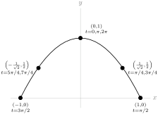
The particle traces out an arc, pointing down. It starts at \(t=0\) at the top part of the graph at \((1,0)\text{,}\) then is moves to the right until it hits \((1,0)\) at time \(t=\pi/2\text{.}\) From there it reverses direction and moves along the curve to the left, hitting the top at time \(t=\pi\) and reaching \((-1,0)\) at time \(t=3\pi/2\text{.}\) Then it returns to the top at \(t=2\pi\) and starts again.
So, it starts at the top of the curve, then moves back for forth along the length of the curve. If goes right first, and repeats its cycle every \(2\pi\) units of time.
2.9.4.35.b Let \(y=f(x)\) be the curve the particle traces in the \(xy\)-plane. Since \(x\) is a function of \(t\text{,}\) \(y(t)=f(x(t))\text{.}\) What we want to find is \(\ds\diff{f}{x}\) when \(t=\left(\dfrac{10\pi}{3}\right)\text{.}\) Since \(\ds\diff{f}{x}\) is a function of \(x\text{,}\) we note that when \(t=\left(\dfrac{10\pi}{3}\right)\text{,}\) \(x=\sin\left(\dfrac{10\pi}{3}\right)=\sin\left(\dfrac{4\pi}{3}\right)=-\dfrac{\sqrt{3}}{2}\text{.}\) So, the quantity we want to find (the slope of the tangent line to the curve \(y=f(x)\) traced by the particle at the time \(t=\left(\dfrac{10\pi}{3}\right)\) is given by \(\ds\diff{f}{x}\left(-\dfrac{\sqrt{3}}{2}\right)\text{.}\)
Using the chain rule:
\begin{align*}
y(t)&=f(x(t))\\
\diff{y}{t}=\diff{}{t}\left\{f(x(t))\right\}&=\diff{f}{x}\cdot\diff{x}{t}\\
\mbox{so, }\qquad\diff{f}{x}&=\diff{y}{t}\div \diff{x}{t}\\
\end{align*}
Using \(y(t)=\cos^2 t\) and \(x(t)=\sin t\text{:}\)
\begin{align*}
\diff{f}{x}&=\left(-2\cos t \sin t \right)\div\left( \cos t \right)=-2\sin t=-2x\\
\end{align*}
So, when \(t=\dfrac{10\pi}{3}\) and \(x=-\dfrac{\sqrt{3}}{2},\)
\begin{align*}
\diff{f}{x}\left(\dfrac{-\sqrt{3}}{2}\right)&=-2\cdot\frac{-\sqrt{3}}{2}=\sqrt{3}.
\end{align*}
Remark: The standard way to write this problem is to omit the notation \(f(x)\text{,}\) and let the variable \(y\) stand for two functions. When \(t\) is the variable, \(y(t)=\cos^2t\) gives the \(y\)-coordinate of the particle at time \(t\text{.}\) When \(x\) is the variable, \(y(x)\) gives the \(y\)-coordinate of the particle given its position along the \(x\)-axis. This is an abuse of notation, because if we write \(y(1)\text{,}\) it is not clear whether we are referring to the \(y\)-coordinate of the particle when \(t=1\) (in this case, \(y=\cos^2 (1) \approx 0.3\)), or the \(y\)-coordinate of the particle when \(x=1\) (in this case, looking at our table of values, \(y=0\)). Although this notation is not strictly “correct,” it is very commonly used. So, you might see a solution that looks like this:
The slope of the curve is \(\ds\diff{y}{x}\text{.}\) To find \(\ds\diff{y}{x}\text{,}\) we use the chain rule:\begin{align*} \diff{y}{t}&=\diff{y}{x}\cdot\diff{x}{t}\\ \diff{}{t}\left\{\cos^2 t\right\}&=\diff{y}{x}\cdot\diff{}{t}\{\sin t\}\\ -2\cos t \sin t &= \diff{y}{x} \cdot \cos t\\ \diff{y}{x}&=-2\sin t\\ \end{align*}So, when \(t=\dfrac{10\pi}{3}\text{,}\)\begin{align*} \diff{y}{x}&=-2\sin\left(\frac{10\pi}{3}\right)=-2\left(-\frac{\sqrt{3}}{2}\right)=\sqrt{3}. \end{align*}
In this case, it is up to the reader to understand when \(y\) is used as a function of \(t\text{,}\) and when it is used as a function of \(x\text{.}\) This notation (using \(y\) to be two functions, \(y(t)\) and \(y(x)\)) is actually the accepted standard, so you should be able to understand it.
2.10 The Natural Logarithm
2.10.3 Exercises
2.10.3.1.
Solution.
We are given that one speaker produces 3dB. So if \(P\) is the power of one speaker,
\begin{align*}
3=V(P)&=10\log_{10}\left(\frac{P}{S}\right).\\
\end{align*}
So, for ten speakers:
\begin{align*}
V(10P)&=10\log_{10}\left(\frac{10P}{S}\right)=10\log_{10}\left(\frac{P}{S}\right)+10\log_{10}\left(10\right)\\
&=3+10(1)=13 \mathrm{dB}\\
\end{align*}
and for one hundred speakers:
\begin{align*}
V(100P)&=10\log_{10}\left(\frac{100P}{S}\right)=10\log_{10}\left(\frac{P}{S}\right)+10\log_{10}\left(100\right)\\
&=3+10(2)=23 \mathrm{dB}
\end{align*}
2.10.3.2.
2.10.3.3.
Solution.
From our logarithm rules, we know that when \(y\) is positive, \(\log (y^2)=2\log y\text{.}\) However, the expression \(\cos x\) does not always take on positive values, so (a) is not correct. (For instance, when \(x=\pi\text{,}\) \(\log(\cos^2 x)=\log(\cos^2\pi)=\log\left((-1)^2\right) = \log(1)=0\text{,}\) while \(2\log (\cos \pi)=2\log(-1)\text{,}\) which does not exist.)
Because \(\cos^2 x\) is never negative, we notice that \(\cos^2 x = |\cos x|^2\text{.}\) When \(\cos x\) is nonzero, \(|\cos x|\) is positive, so our logarithm rules tell us \(\log\left(|\cos x|^2\right) =2\log|\cos x |\text{.}\) When \(\cos x\) is exactly zero, then both \(\log(\cos^2x)\) and \(2\log|\cos x|\) do not exist. So, \(\log(\cos^2x) = 2\log|\cos x|\text{.}\)
2.10.3.4.
2.10.3.5.
2.10.3.6.
2.10.3.7.
2.10.3.8. (✳).
Solution.
-
Solution 1: Using the quotient rule,\begin{equation*} y'=\frac{x^3\frac{1}{x}-(\log x)\cdot 3x^2}{x^6}= \frac{x^2-3x^2\log x}{x^6}=\frac{1-3\log x}{x^4}. \end{equation*}
-
Solution 2: Using the product rule with \(y=\log x \cdot x^{-3}\text{,}\)\begin{equation*} y'=\frac{1}{x}x^{-3}+\log x \cdot(-3)x^{-4}=x^{-4}(1-3\log x) \end{equation*}
2.10.3.9.
Solution.
Using the chain rule,
\begin{align*}
\ds\diff{}{\theta} \log(\sec \theta)&=\frac{1}{\sec \theta}\cdot (\sec \theta \cdot \tan \theta)\\
&=\tan\theta
\end{align*}
Remark: the domain of the function \(\log(\sec \theta)\) is those values of \(\theta\) for which \(\sec\theta\) is positive: so, the intervals \(\left(\left(2n-\frac{1}{2}\right)\pi,\left(2n+\frac{1}{2}\right)\pi\right)\) where \(n\) is any integer. Certainly the tangent function has a larger domain than this, but outside the domain of \(\log(\sec \theta)\text{,}\) \(\tan \theta\) is not the derivative of \(\log(\sec \theta)\text{.}\)
2.10.3.10.
Solution.
Let’s start in with the chain rule.
\begin{align*}
f'(x)
&= e^{\textcolor{red}{\cos\left(\log x\right)}} \cdot \diff{}{x} \left\{ \textcolor{red}{\cos\left( \log x
\right)}\right\}\\
\end{align*}
We’ll need the chain rule again:
\begin{align*}
&= e^{\cos\left(\log x\right)} (-\sin(\textcolor{orange}{\log x})) \cdot \diff{}{x}\{\textcolor{orange}{ \log x} \}\\
&= e^{\cos\left(\log x\right)} (-\sin(\log x)) \cdot \frac{1}{x}\\
&=\frac{-e^{\cos(\log x)}\sin(\log x)}{x}
\end{align*}
Remark: Although we have a logarithm in the exponent, we can’t cancel. The expression \(e^{\cos (\log x)}\) is not the same as the expression \(x^{\cos x}\text{,}\) or \(\cos x\text{.}\)
2.10.3.11. (✳).
Solution.
\begin{align*}
y&=\log(x^2+\sqrt{x^4+1})\\
\end{align*}
So, we’ll need the chain rule:
\begin{align*}
y'&=\frac{\diff{}{x}\left\{\textcolor{red}{x^2+\sqrt{x^4+1}}\right\}}{\textcolor{red}{x^2+\sqrt{x^4+1}}}\\
&=\frac{2x+\diff{}{x}\left\{\sqrt{x^4+1}\right\}}{x^2+\sqrt{x^4+1}}\\
\end{align*}
We need the chain rule again:
\begin{align*}
&=\frac{2x+\frac{\diff{}{x}\left\{\textcolor{red}{x^4+1}\right\}}{2\sqrt{\textcolor{red}{x^4+1}}}}{x^2+\sqrt{x^4+1}}\\
&=\frac{2x+\frac{4x^3}{2\sqrt{x^4+1}}}{x^2+\sqrt{x^4+1}}.
\end{align*}
2.10.3.12. (✳).
Solution.
This requires us to apply the chain rule twice.
\begin{align*}
\diff{}{x} \left\{ \sqrt{-\log(\cos x)} \right\}
&= \frac{1}{2\sqrt{\textcolor{red}{-\log(\cos x)}}} \cdot \diff{}{x} \left\{ \textcolor{red}{-\log\left(\cos x\right)} \right\}\\
&= -\frac{1}{2\sqrt{-\log(\cos x)}} \cdot \frac{1}{\textcolor{orange}{\cos x}} \diff{}{x} \left\{\textcolor{orange}{\cos x} \right\}\\
&= -\frac{1}{2\sqrt{-\log(\cos x)}} \cdot \frac{1}{\cos x} \cdot \left(-\sin x\right)\\
&=\frac{\tan x}{2\sqrt{-\log(\cos x)}}
\end{align*}
Remark: it looks strange to see a negative sign in the argument of a square root. Since the cosine function always gives values that are at most 1, \(\log(\cos x)\) is always negative or zero over its domain. So, \(\sqrt{\log(\cos x)}\) is only defined for the points where \(\cos x=1\) (and so \(\log(\cos x) = 0\)--this isn’t a very interesting function! In contrast, \(-\log(\cos x)\) is always positive or zero over its domain -- and therefore we can always take its square root.
2.10.3.13. (✳).
Solution.
Under the chain rule, \(\diff{}{x}\log f(x)=\frac{1}{f(x)}f'(x)\text{.}\) So
\begin{align*}
\diff{}{x}\left\{\log\big(x+\sqrt{x^2+4}\big)\right\}
&=\frac{1}{\textcolor{red}{x+\sqrt{x^2+4}}} \cdot \diff{}{x}\left\{\textcolor{red}{x+\sqrt{x^2+4}}\right\}\\
&=\frac{1}{x+\sqrt{x^2+4}}\cdot\left(1+\frac{2x}{2\sqrt{x^2+4}}\right)\\
&=\frac{1}{\textcolor{red}{x+\sqrt{x^2+4}}}\cdot
\left(\frac{\textcolor{blue}{2}\textcolor{red}{\sqrt{x^2+4}}
+\textcolor{blue}{2}\textcolor{red}{x}}
{\textcolor{blue}{2}\sqrt{x^2+4}}\right)\\
&=\frac{1}{\sqrt{x^2+4}}
\end{align*}
2.10.3.14. (✳).
Solution.
Using the chain rule,
\begin{align*}
g'(x)&=\frac{\diff{}{x}\{e^{x^2}+\sqrt{1+x^4}\}}{e^{x^2}+\sqrt{1+x^4}}\\
&=\frac{2xe^{x^2}+\frac{4x^3}{2\sqrt{1+x^4}}}{e^{x^2}+\sqrt{1+x^4}}\left(\frac{\sqrt{1+x^4}}{\sqrt{1+x^4}}\right)\\
&=\frac{2xe^{x^2}\sqrt{1+x^4}+2x^3}{e^{x^2}\sqrt{1+x^4}+1+x^4}
\end{align*}
2.10.3.15. (✳).
2.10.3.16.
Solution.
We begin by simplifying:
\begin{align*}
f(x) &= \log\left(\sqrt{\dfrac{(x^2+5)^3}{x^4+10}}\right)\\
&=\log\left(\left({\dfrac{(x^2+5)^3}{x^4+10}}\right)^{1/2}\right)\\
&=\frac{1}{2}\log\left(\dfrac{(x^2+5)^3}{x^4+10}\right)\\
&=\frac{1}{2}\left[\log\left({(x^2+5)^3}\right)-\log({x^4+10})\right]\\
&=\frac{1}{2}\left[3\log\left({(x^2+5)}\right)-\log({x^4+10})\right]\\
\end{align*}
Now, we differentiate using the chain rule:
\begin{align*}
f'(x)&=\frac{1}{2}\left[ 3\frac{2x}{x^2+5}-\frac{4x^3}{x^4+10} \right]\\
&=\frac{3x}{x^2+5}-\frac{2x^3}{x^4+10}
\end{align*}
Remark: it is a common mistake to write \(\log(x^2+4)\) as \(\log(x^2)+\log(4)\text{.}\) These expressions are not equivalent!
2.10.3.17.
Solution.
We use the chain rule twice, followed by the product rule:
\begin{align*}
f'(x) &=
\frac{1}{\textcolor{red}{g(xh(x))}}\cdot\diff{}{x}\{\textcolor{red}{g(xh(x))}\}\\
&=\frac{1}{g(xh(x))}\cdot g'(\textcolor{orange}{xh(x)})\cdot\diff{}{x}\{\textcolor{orange}{xh(x)}\}\\
&=\dfrac{1}{g\big(xh(x)\big)}\cdot g'\big(xh(x)\big)\cdot\big[h(x)+xh'(x)\big]\\
\end{align*}
In particular, when \(x=2\text{:}\)
\begin{align*}
f'(2) &= \dfrac{1}{g\big(2h(2)\big)}\cdot g'\big(2h(2)\big)\cdot \big[h(2)+2h'(2)\big]\\
&= \dfrac{g'(4)}{g(4)}\big[2+2\times 3\big]
= \dfrac{5}{3}\big[2+2\times 3\big]\\
&=\dfrac{40}{3}
\end{align*}
2.10.3.18. (✳).
Solution.
In the text, we saw that \(\ds\diff{}{x}\left\{a^x\right\}=a^x\log a\) for any constant \(a\text{.}\) So, \(\ds\diff{}{x}\left\{\pi^x\right\}=\pi^x\log \pi\text{.}\)
By the power rule, \(\ds\diff{}{x}\left\{x^{\pi}\right\}=\pi x^{\pi-1}\text{.}\)
Therefore, \(g'(x)=\pi^x\log \pi+\pi x^{\pi-1}\text{.}\)
Remark: we had to use two different rules for the two different terms in \(g(x)\text{.}\) Although the functions \(\pi^x\) and \(x^\pi\) look superficially the same, they behave differently, as do their derivatives. A function of the form \((\mbox{constant})^{x}\) is an exponential function and not eligible for the power rule, while a function of the form \(x^{\mbox{constant}}\) is exactly the class of function the power rule applies to.
2.10.3.19.
Solution.
We have the power rule to tell us the derivative of functions of the form \(x^n\text{,}\) where \(n\) is a constant. However, here our exponent is not a constant. Similarly, in this section we learned the derivative of functions of the form \(a^x\text{,}\) where \(a\) is a constant, but again, our base is not a constant! Although the result \(\ds\diff{}{x} a^x=a^x\log a\) is not what we need, the method used to differentiate \(a^x\) will tell us the derivative of \(x^x\text{.}\)
We’ll set \(g(x)=\log(x^x)\text{,}\) because now we can use logarithm rules to simplify:
\begin{align*}
g(x)=\log(f(x))&=x\log x\\
\end{align*}
Now, we can use the product rule to differentiate the right side, and the chain rule to differentiate \(\log(f(x))\text{:}\)
\begin{align*}
g'(x)=\frac{f'(x)}{f(x)}&=\log x +x\frac{1}{x}=\log x +1\\
\end{align*}
Finally, we solve for \(f'(x)\text{:}\)
\begin{align*}
f'(x)&=f(x)(\log x + 1) = x^x(\log x + 1)
\end{align*}
2.10.3.20. (✳).
Solution.
In Question 2.10.3.19, we saw \(\ds\diff{}{x}\left\{x^x\right\}=x^x(\log x+1)\text{.}\) Using the base-change formula, \(\log_{10}(x)=\dfrac{\log x}{\log 10}\text{.}\) Since \(\log_{10}\) is a constant,
\begin{align*}
f'(x)&=\diff{}{x}\left\{x^x+\frac{\log x}{\log 10}\right\}\\
&=x^x(\log x+1)+\frac{1}{x\log 10}
\end{align*}
2.10.3.21.
Solution.
Rather than set in with a terrible chain rule problem, we’ll use logarithmic differentiation. Instead of differentiating \(f(x)\text{,}\) we differentiate a new function \(\log(f(x))\text{,}\) after simplifying.
\begin{align*}
\log(f(x))&=\log\sqrt[4]{\dfrac{(x^4+12)(x^4-x^2+2)}{x^3}}\\
&=\frac{1}{4}\log\left(\frac{(x^4+12)(x^4-x^2+2)}{x^3}\right)\\
&=\frac{1}{4}\left(\log(x^4+12)+\log(x^4-x^2+2)-3\log x\right)\\
\end{align*}
Now that we’ve simplified, we can efficiently differentiate both sides. It is important to remember that we aren’t differentiating \(f(x)\) directly--we’re differentiating \(\log(f(x))\text{.}\)
\begin{align*}
\frac{f'(x)}{f(x)}&=\frac{1}{4}\left(\frac{4x^3}{x^4+12}+\frac{4x^3-2x}{x^4-x^2+2}-\frac{3}{x}\right)
\end{align*}
Our final step is to solve for \(f'(x)\text{:}\)
\begin{align*}
\amp f'(x)=f(x)\frac{1}{4}\left(\frac{4x^3}{x^4+12}+\frac{4x^3-2x}{x^4-x^2+2}-\frac{3}{x}\right)\\
&\hskip0.25in=\frac{1}{4}\left(
{\sqrt[4]{\dfrac{(x^4+12)(x^4-x^2+2)}{x^3}}}\right)\left(\frac{4x^3}{x^4+12}+\frac{4x^3-2x}{x^4-x^2+2}-\frac{3}{x}\right)
\end{align*}
It was possible to differentiate this function without logarithms, but the logarithms make it more efficient.
2.10.3.22.
Solution.
It’s possible to do this using the product rule a number of times, but it’s easier to use logarithmic differentiation. Set
\begin{align*}
g(x)=\log(f(x))&=\log\left[(x+1)(x^2+1)^2(x^3+1)^3(x^4+1)^4(x^5+1)^5\right]\\
\end{align*}
Now we can use logarithm rules to change \(g(x)\) into a form that is friendlier to differentiate:
\begin{align*}
&=\log(x+1)+\log(x^2+1)^2+\log(x^3+1)^3+\log(x^4+1)^4\\
\amp\hskip2in+\log(x^5+1)^5\\
&=\log(x+1)+2\log(x^2+1)+3\log(x^3+1)+4\log(x^4+1)\\
\amp\hskip2in+5\log(x^5+1)\\
\end{align*}
Now, we differentiate \(g(x)\) using the chain rule:
\begin{align*}
g'(x)=\frac{f'(x)}{f(x)}&=\frac{1}{x+1}+\frac{4x}{x^2+1}
+\frac{9x^2}{x^3+1}+\frac{16x^3}{x^4+1}+\frac{25x^4}{x^5+1}
\end{align*}
Finally, we solve for \(f'(x)\text{:}\)
\begin{align*}
f'(x)&=f(x)\left[\frac{1}{x+1}+\frac{4x}{x^2+1}
+\frac{9x^2}{x^3+1}+\frac{16x^3}{x^4+1}+\frac{25x^4}{x^5+1}\right]\\
&=(x+1)(x^2+1)^2(x^3+1)^3(x^4+1)^4(x^5+1)^5\\
&\;\;\;\;\;\; \cdot\left[\frac{1}{x+1}+\frac{4x}{x^2+1}
+\frac{9x^2}{x^3+1}+\frac{16x^3}{x^4+1}+\frac{25x^4}{x^5+1}\right]
\end{align*}
2.10.3.23.
Solution.
We could do this with quotient and product rules, but it would be pretty painful. Insteady, let’s use a logarithm.
\begin{align*}
f(x) &= \left(\dfrac{5x^2+10x+15}{3x^4+4x^3+5}\right)\left(\dfrac{1}{10(x+1)}\right)\\
\amp= \left(\dfrac{x^2+2x+3}{3x^4+4x^3+5}\right)\left(\dfrac{1}{2(x+1)}\right)\\
\log(f(x)) &= \log\left[\left(\dfrac{x^2+2x+3}{3x^4+4x^3+5}\right)\left(\dfrac{1}{2(x+1)}\right)\right]\\
&=\log\left(\dfrac{x^2+2x+3}{3x^4+4x^3+5}\right)
+
\log\left(\dfrac{1}{2(x+1)}\right)\\
&=\log\left({x^2\!+\!2x\!+\!3}\right)-
\log\left({3x^4\!+\!4x^3\!+\!5}\right)
-\log(x\!+\!1)-\log(2)
\end{align*}
Now we have a function that we can differentiate more cleanly than our original function.
\begin{align*}
\diff{}{x}\left\{\log(f(x))\right\}&=\diff{}{x}\Big\{
\log\left({x^2+2x+3}\right)-
\log\left({3x^4+4x^3+5}\right)\\
\amp\hskip1.5in-
\log\left({x+1}\right)-
\log\left({2}\right)
\Big\}\\
\frac{f'(x)}{f(x)}&=\frac{2x+2}{x^2+2x+3}-\frac{12x^3+12x^2}{3x^4+4x^3+5}-\frac{1}{x+1}\\
&=\frac{2(x+1)}{x^2+2x+3}-\frac{12x^2(x+1)}{3x^4+4x^3+5}-\frac{1}{x+1}
\end{align*}
Finally, we solve for \(f(x)\text{:}\)
\begin{align*}
\amp f'(x)=f(x)\left(\frac{2(x+1)}{x^2+2x+3}-\frac{12x^2(x+1)}{3x^4+4x^3+5}-\frac{1}{x+1}\right)\\
&= \left(\dfrac{x^2+2x+3}{3x^4\!+\!4x^3\!+\!5}\right)\!\left(\dfrac{1}{2(x\!+\!1)}\right)\!
\left(\frac{2(x+1)}{x^2\!+\!2x\!+\!3}-\frac{12x^2(x+1)}{3x^4\!+\!4x^3\!+\!5}
-\frac{1}{x\!+\!1}\right)\\
&= \left(\dfrac{x^2+2x+3}{3x^4+4x^3+5}\right)\left(\frac{1}{x^2+2x+3}-\frac{6x^2}{3x^4+4x^3+5}-\frac{1}{2(x+1)^2}\right)
\end{align*}
2.10.3.24. (✳).
Solution.
Since \(f(x)\) has the form of a function raised to a functional power, we will use logarithmic differentiation.
\begin{align*}
\log(f(x))&=\log\left( (\cos x)^{\sin x}\right)=\sin x \cdot \log (\cos x)\\
\end{align*}
Logarithm rules allowed us to simplify. Now, we differentiate both sides of this equation:
\begin{align*}
\frac{f'(x)}{f(x)}&=(\cos x ) \log(\cos x)+ \sin x \cdot \frac{-\sin x}{\cos x}\\
&=(\cos x) \log (\cos x) - \sin x \tan x\\
\end{align*}
Finally, we solve for \(f'(x)\text{:}\)
\begin{align*}
f'(x)&=f(x)\left[(\cos x) \log (\cos x) - \sin x \tan x\right]\\
&= (\cos x)^{\sin x}\left[(\cos x) \log (\cos x) - \sin x \tan x\right]
\end{align*}
Remark: negative numbers behave in a complicated manner when they are the base of an exponential expression. For example, the expression \((-1)^x\) is defined when \(x\) is the reciprocal of an odd number (like \(x=\frac{1}{5}\) or \(x=\frac{1}{7}\)), but not when \(x\) is the reciprocal of an even number (like \(x=\frac{1}{2}\)). Since the domain of \(f(x)\) was restricted to \((0,\tfrac{\pi}{2})\text{,}\) \(\cos x\) is always positive, and we avoid these complications.
2.10.3.25. (✳).
Solution.
Since \(f(x)\) has the form of a function raised to a functional power, we will use logarithmic differentiation. We take the logarithm of the function, and make use of logarithm rules:
\begin{align*}
\log\left((\tan x)^x\right)&=x\log(\tan x)\\
\end{align*}
Now, we can differentiate:
\begin{align*}
\frac{\diff{}{x}\left\{(\tan x)^x\right\}}{(\tan x)^x}&=\log(\tan x) + x\cdot\frac{\sec^2 x}{\tan x}\\
&=\log(\tan x) + \frac{x}{\sin x \cos x}\\
\end{align*}
Finally, we solve for the derivative we want, \(\ds\diff{}{x}\{(\tan x)^x\}\text{:}\)
\begin{align*}
{\diff{}{x}\left\{(\tan x)^x\right\}}&={(\tan x)^x}\left(\log(\tan x) + \frac{x}{\sin x \cos x}\right)
\end{align*}
Remark: the restricted domain \((0,\pi/2)\) ensures that \(\tan x\) is a positive number, so we avoid the problems that arise by raising a negative number to a variety of powers.
2.10.3.26. (✳).
Solution.
We use logarithmic differentiation.
\begin{align*}
\log f(x) &= \log(x^2+1) \cdot (x^2+1)\\
\end{align*}
We differentiate both sides to obtain:
\begin{align*}
\dfrac{f'(x)}{f(x)} &= \diff{}{x} \left\{ \log(x^2+1) \cdot (x^2+1) \right\}\\
&= \frac{2x}{x^2+1}(x^2+1)+2x\log(x^2+1)\\
&=2x(1+\log(x^2+1))\\
\end{align*}
Now, we solve for \(f'(x)\text{:}\)
\begin{align*}
f'(x) &= f(x) \cdot 2x(1+\log(x^2+1))\\
&= (x^2+1)^{x^2+1} \cdot 2x(1+\log(x^2+1))
\end{align*}
2.10.3.27. (✳).
Solution.
We use logarithmic differentiation: we modify our function to consider
\begin{align*}
\log f(x) &= \log(x^2+1) \cdot \sin x\\
\end{align*}
We differentiate using the product and chain rules:
\begin{align*}
\dfrac{f'(x)}{f(x)} &= \diff{}{x} \left\{ \log(x^2+1) \cdot \sin x \right\}
= \cos x \cdot \log(x^2+1) + \frac{2x\sin x}{x^2+1}\\
\end{align*}
Finally, we solve for \(f'(x)\)
\begin{align*}
f'(x) &= f(x) \cdot \left( \cos x \cdot \log(x^2+1) + \frac{2x\sin x}{x^2+1}
\right)\\
&= (x^2+1)^{\sin(x)} \cdot \left( \cos x \cdot \log(x^2+1) + \frac{2x\sin x}{x^2+1}
\right)
\end{align*}
2.10.3.28. (✳).
Solution.
We use logarithmic differentiation; so we modify our function to consider
\begin{align*}
\log f(x) &= \log(x) \cdot \cos^3(x)\\
\end{align*}
Differentiating, we find:
\begin{align*}
\dfrac{f'(x)}{f(x)} &= \diff{}{x} \left\{ \log(x) \cdot \cos^3(x) \right\}\\
\amp= 3\cos^2(x)\cdot (-\sin(x)) \cdot \log(x) + \frac{\cos^3(x)}{x}\\
\end{align*}
Finally, we solve for \(f'(x)\text{:}\)
\begin{align*}
f'(x) &= f(x) \cdot \left( -3\cos^2(x)\sin(x) \log(x) + \frac{\cos^3(x)}{x}
\right)\\
&= x^{\cos^3(x)} \cdot \left( -3\cos^2(x)\sin(x) \log(x) + \frac{\cos^3(x)}{x}
\right)
\end{align*}
Remark: negative numbers behave in a complicated manner when they are the base of an exponential expression. For example, the expression \((-1)^x\) is defined when \(x\) is the reciprocal of an odd number (like \(x=\frac{1}{5}\) or \(x=\frac{1}{7}\)), but not when \(x\) is the reciprocal of an even number (like \(x=\frac{1}{2}\)). Since the domain of \(f(x)\) was restricted so that \(x\) is always positive, we avoid these complications.
2.10.3.29. (✳).
Solution.
We use logarithmic differentiation. So, we modify our function and consider
\begin{align*}
\log f(x) &= (x^2-3)\cdot \log(3+\sin(x))\,.\\
\end{align*}
We differentiate:
\begin{align*}
\frac{f'(x)}{f(x)} &= \diff{}{x} \left\{(x^2-3)\cdot \log(3+\sin(x)) \right\}\\
&=2x\log(3+\sin(x)) + (x^2-3)\frac{\cos(x)}{3+\sin(x)}\\
\end{align*}
Finally, we solve for \(f'(x)\text{:}\)
\begin{align*}
f'(x)&= f(x)\cdot
\left[ 2x\log(3+\sin(x)) + \frac{(x^2-3)\cos(x)}{3+\sin(x)}\right]\\
&= (3+\sin(x))^{x^2-3}\cdot
\left[ 2x\log(3+\sin(x)) + \frac{(x^2-3)\cos(x)}{3+\sin(x)}\right]
\end{align*}
2.10.3.30.
Solution.
We will use logarithmic differentiation. First, we take the logarithm of our function, so we can use logarithm rules.
\begin{align*}
\log\left([f(x)]^{g(x)}\right)&=g(x)\log(f(x))\\
\end{align*}
Now, we differentiate. On the left side we use the chain rule, and on the right side we use product and chain rules.
\begin{align*}
\ds\diff{}{x}\left\{\log\left([f(x)]^{g(x)}\right)\right\}&=\ds\diff{}{x}\left\{g(x)\log(f(x))\right\}\\
\frac{\diff{}{x}\{[f(x)]^{g(x)}\}}{[f(x)]^{g(x)}}&=
g'(x)\log(f(x))+g(x)\cdot\frac{f'(x)}{f(x)}\\
\end{align*}
Finally, we solve for the derivative of our original function.
\begin{align*}
{\diff{}{x}\{[f(x)]^{g(x)}\}}&={[f(x)]^{g(x)}}\left(
g'(x)\log(f(x))+g(x)\cdot\frac{f'(x)}{f(x)}\right)
\end{align*}
Remark: in this section, we have differentiated problems of this type several times--for example, Questions 2.10.3.24
2.10.3.31.
Solution.
In order to show that the two curves have horizontal tangent lines at the same values of \(x\text{,}\) we will show two things: first, that if \(f(x)\) has a horizontal tangent line at some value of \(x\text{,}\) then also \(g(x)\) has a horizontal tangent line at that value of \(x\text{.}\) Second, we will show that if \(g(x)\) has a horizontal tangent line at some value of \(x\text{,}\) then also \(f(x)\) has a horizontal tangent line at that value of \(x\text{.}\)
Suppose \(f(x)\) has a horizontal tangent line where \(x=x_0\) for some point \(x_0\text{.}\) This means \(f'(x_0)=0\text{.}\) Then \(g'(x_0)=\frac{f'(x_0)}{f(x_0)}\text{.}\) Since \(f(x_0) \neq 0\text{,}\) \(\frac{f'(x_0)}{f(x_0)}=\frac{0}{f(x_0)}=0\text{,}\) so \(g(x)\) also has a horizontal tangent line when \(x=x_0\text{.}\) This shows that whenever \(f\) has a horizontal tangent line, \(g\) has one too.
Now suppose \(g(x)\) has a horizontal tangent line where \(x=x_0\) for some point \(x_0\text{.}\) This means \(g'(x_0)=0\text{.}\) Then \(g'(x_0)=\frac{f'(x_0)}{f(x_0)}=0\text{,}\) so \(f'(x_0)\) exists and is equal to zero. Therefore, \(f(x)\) also has a horizontal tangent line when \(x=x_0\text{.}\) This shows that whenever \(g\) has a horizontal tangent line, \(f\) has one too.
Remark: if we were not told that \(f(x)\) gives only positive numbers, it would not necessarily be true that \(f(x)\) and \(\log(f(x))\) have horizontal tangent lines at the same values of \(x\text{.}\) If \(f(x)\) had a horizontal tangent line at an \(x\)-value where \(f(x)\) were negative, then \(\log(f(x))\) would not exist there, let alone have a horizontal tangent line.
2.11 Implicit Differentiation
2.11.2 Exercises
2.11.2.1.
Solution.
We use the power rule (a) and the chain rule (b): the power rule tells us to “bring down the 2”, and the chain rule tells us to multiply by \(y'\text{.}\)
There is no need for the quotient rule here, as there are no quotients. Exponential functions have the form \((\mbox{constant})^{\mbox{function}}\text{,}\) but our function has the form \((\mbox{function})^{\mbox{constant}}\text{,}\) so we did not use (d).
2.11.2.2.
2.11.2.3.
Solution.
(a) No. A function must pass the vertical line test: one input cannot result in two (or more) outputs. Since one value of \(x\) sometimes corresponds to two values of \(y\) (for example, when \(x=\pi/4\text{,}\) \(y\) is \(\pm 1/\sqrt{2}\)), there is no function \(f(x)\) so that \(y=f(x)\) captures every point on the circle.
Remark: \(y=\pm\sqrt{1-x^2}\) does capture every point on the unit circle. However, since one input \(x\) sometimes results in two outputs \(y\text{,}\) this expression is not a function.
(b) No, for the same reasons as (a). If \(f'(x)\) is a function, then it can give at most one slope corresponding to one value of \(x\text{.}\) Since one value of \(x\) can correspond to two points on the circle with different slopes, \(f'(x)\) cannot give the slope of every point on the circle. For example, fix any \(0 \lt a \lt 1\text{.}\) There are two points on the circle with \(x\)-coordinate equal to \(a\text{.}\) At the upper one, the slope is strictly negative. At the lower one, the slope is strictly positive.
(c) We differentiate:
\begin{align*}
2x+2y\diff{y}{x}&=0\\
\end{align*}
and solve for \(\ds\diff{y}{x}\)
\begin{align*}
\diff{y}{x}&=-\frac{x}{y}
\end{align*}
But there is a \(y\) in the right-hand side of this equation, and it’s not clear how to get it out. Our answer in (b) tells us that, actually, we can’t get it out, if we want the right-hand side to be a function of \(x\text{.}\) The derivative cannot be expressed as a function of \(x\text{,}\) because one value of \(x\) corresponds to multiple points on the circle.
Remark: since \(y=\pm\sqrt{1-x^2}\text{,}\) we could try writing
\begin{equation*}
\diff{y}{x}=-\frac{x}{y}=\pm\frac{x}{\sqrt{1-x^2}}
\end{equation*}
but this is not a function of \(x\text{.}\) Again, in a function, one input leads to at most one output, but here one value of \(x\) will usually lead to two values of \(\diff{y}{x}\text{.}\)
2.11.2.4. (✳).
Solution.
Remember that \(y\) is a function of \(x\text{.}\) We begin with implicit differentiation.
\begin{align*}
xy + e^x + e^y &= 1\\
y+x\diff{y}{x}+e^x+e^y\diff{y}{x}&=0\\
\end{align*}
Now, we solve for \(\ds\diff{y}{x}\text{.}\)
\begin{align*}
x\diff{y}{x}+e^y\diff{y}{x}&=-(e^x+y)\\
(x+e^y)\diff{y}{x}&=-(e^x+y)\\
\diff{y}{x}&=-\frac{e^x+y}{e^y+x}
\end{align*}
2.11.2.5. (✳).
Solution.
Differentiate both sides of the equation with respect to \(x\text{:}\)
\begin{align*}
e^y\diff{y}{x}&=x\cdot2y\diff{y}{x}+y^2+1\\
\end{align*}
Now, get the derivative on one side and solve
\begin{align*}
e^y\diff{y}{x}-2xy\diff{y}{x}&=y^2+1\\
\diff{y}{x}\left(e^y-2xy\right)&=y^2+1\\
\diff{y}{x}&=\frac{y^2+1}{e^y-2xy}
\end{align*}
2.11.2.6. (✳).
Solution.
-
First we find the \(x\)-coordinates where \(y=1\text{.}\)\begin{align*} x^2\tan\left(\frac{\pi}{4}\right)+2x\log(1) &= 16\\ x^2\cdot 1 +2x\cdot 0 &=16\\ x^2 &= 16 \end{align*}So \(x=\pm 4\text{.}\)
-
Now we use implicit differentiation to get \(y'\) in terms of \(x,y\text{:}\)\begin{align*} x^2\tan(\pi y/4)+2x\log(y) &= 16\\ 2x\tan(\pi y/4) + x^2 \frac{\pi}{4}\sec^2(\pi y/4)\cdot y' + 2\log(y) + \frac{2x}{y} \cdot y' &= 0\,. \end{align*}
-
Now set \(y=1\) and use \(\tan(\pi/4)=1\,, \sec(\pi/4)=\sqrt{2}\) to get\begin{align*} 2x\tan(\pi/4) + x^2 \frac{\pi}{4} \sec^2(\pi/4)y' + 2\log(1) + 2x\cdot y' &= 0\\ 2x + \frac{\pi}{2} x^2 y' +2x y' &= 0\\ y' = -\frac{2x}{x^2 \pi/2 + 2x} &= -\frac{4}{\pi x + 4} \end{align*}
-
So at \((x,y)=(4,1)\) we have \(y' = -\dfrac{4}{4\pi+4} = -\dfrac{1}{\pi + 1}\)
-
and at \((x,y)=(-4,1)\) we have \(y' = \dfrac{1}{\pi-1}\)
2.11.2.7. (✳).
2.11.2.8. (✳).
Solution.
-
First we find the \(x\)-coordinates where \(y=0\text{.}\)\begin{align*} x^2e^0+4x\cos(0) &= 5\\ x^2 +4x - 5 &=0\\ (x+5)(x-1)&=0 \end{align*}So \(x=1,-5\text{.}\)
-
Now we use implicit differentiation to get \(y'\) in terms of \(x,y\text{.}\) Differentiate both sides of\begin{align*} x^2e^y+4x\cos(y) &= 5 \end{align*}to get\begin{align*} x^2 \cdot e^y \cdot y' + 2x e^y + 4x(-\sin(y)) \cdot y' + 4\cos(y) &= 0 \end{align*}
-
Now set \(y=0\) to get\begin{align*} x^2 \cdot e^0 \cdot y' + 2x e^0 + 4x(-\sin(0)) \cdot y' + 4\cos(0) &= 0\\ x^2y' + 2x + 4 &=0\\ y' &= - \frac{4+2x}{x^2}. \end{align*}
-
So at \((x,y)=(1,0)\) we have \(y' = -6\text{,}\)
-
and at \((x,y)=(-5,0)\) we have \(y' = \frac{6}{25}\text{.}\)
2.11.2.9. (✳).
2.11.2.10. (✳).
Solution.
-
First we find the \(x\)-coordinates where \(y=0\text{.}\)\begin{align*} x^2\cos(0)+2xe^0 &= 8\\ x^2 +2x - 8 &=0\\ (x+4)(x-2)&=0 \end{align*}So \(x=2,-4\text{.}\)
-
Now we use implicit differentiation to get \(y'\) in terms of \(x,y\text{.}\) Differentiate both sides of\begin{align*} x^2\cos(y)+2xe^y &= 8 \end{align*}to get\begin{align*} x^2 \cdot (-\sin y) \cdot y' + 2x \cos y + 2xe^y \cdot y' + 2e^y &= 0 \end{align*}
-
Now set \(y=0\) to get\begin{align*} x^2 \cdot (-\sin 0) \cdot y' + 2x \cos 0 + 2xe^0 \cdot y' + 2e^0 &= 0\\ 0 + 2x + 2xy' + 2 &=0\\ y' &= - \frac{2+2x}{2x} \\ \amp= -\frac{1+x}{x} \end{align*}
-
So at \((x,y)=(2,0)\) we have \(y' = -\frac{3}{2}\text{,}\)
-
and at \((x,y)=(-4,0)\) we have \(y' = -\frac{3}{4}\text{.}\)
2.11.2.11.
Solution.
The question asks at which points on the ellipse \(\ds\diff{y}x{}=1\text{.}\) So, we begin by differentiating, implicitly:
\begin{align*}
2x+6y\diff{y}{x}&=0\\
\end{align*}
We could solve for \(\ds\diff{y}{x}\) at this point, but it’s not necessary. We want to know when \(\ds\diff{y}{x}\) is equal to one:
\begin{align*}
2x+6y(1)&=0\\
x&=-3y\\
\end{align*}
That is, \(\ds\diff{y}{x}=1\) at those points along the ellipse where \(x=-3y\text{.}\) We plug this into the equation of the ellipse to find the coordinates of these points.
\begin{align*}
\left(-3y\right)^2+3y^2&=1\\
12y^2&=1\\
y=\pm\frac{1}{\sqrt{12}}=\pm\frac{1}{2\sqrt{3}}
\end{align*}
So, the points along the ellipse where the tangent line is parallel to the line \(y=x\) occur when \(y=\dfrac{1}{2\sqrt{3}}\) and \(x=-3y\text{,}\) and when \(y=\dfrac{-1}{2\sqrt{3}}\) and \(x=-3y\text{.}\) That is, the points \(\left(\dfrac{-\sqrt{3}}{2},\dfrac{1}{2\sqrt{3}}\right)\) and \(\left(\dfrac{\sqrt{3}}{2},\dfrac{-1}{2\sqrt{3}}\right)\text{.}\)
2.11.2.12. (✳).
Solution.
First, we differentiate implicitly with respect to \(x\text{.}\)
\begin{align*}
\sqrt{xy} &= x^2y-2\\
\frac{1}{2\sqrt{xy}}\cdot \diff{}{x}\{xy\}&=(2x)y+x^2\ds\diff{y}{x}\\
\frac{y+x\diff{y}{x}}{2\sqrt{xy}}&=2xy+x^2\diff{y}{x}\\
\end{align*}
Now, we plug in \(x=1\text{,}\) \(y=4\text{,}\) and solve for \(\ds\diff{y}{x}\text{:}\)
\begin{align*}
\frac{4+\diff{y}{x}}{4}&=8+\diff{y}{x}\\
\diff{y}{x}&=-\frac{28}{3}
\end{align*}
2.11.2.13. (✳).
Solution.
Implicitly differentiating \(x^2y(x)^2+x\sin(y(x))=4\) with respect to \(x\) gives
\begin{align*}
2xy^2&+2x^2yy'+\sin y+xy'\cos y=0\\
\end{align*}
Then we gather the terms containing \(y'\) on one side, so we can solve for \(y'\text{:}\)
\begin{align*}
2x^2yy'&+xy'\cos y=-2xy^2-\sin y\\
y'(2x^2y&+x\cos y)=-2xy^2-\sin y\\
y'&=-\frac{2xy^2+\sin y}{2x^2y+x\cos y}
\end{align*}
2.11.2.14. (✳).
Solution.
-
First we find the \(x\)-ordinates where \(y=0\text{.}\)\begin{align*} x^2+(1)e^0 &= 5\\ x^2 +1 &=5\\ x^2&=4 \end{align*}So \(x=2,-2\text{.}\)
-
Now we use implicit differentiation to get \(y'\) in terms of \(x,y\text{:}\)\begin{align*} 2x+(y+1)e^y\diff{y}{x}+e^y\diff{y}{x}&=0 \end{align*}
-
Now set \(y=0\) to get\begin{align*} 2x+(0+1)e^0\diff{y}{x}+e^0\diff{y}{x}&=0\\ 2x+\diff{y}{x}+\diff{y}{x}&=0\\ 2x&=-2\diff{y}{x}\\ x&=-\diff{y}{x} \end{align*}
-
So at \((x,y)=(2,0)\) we have \(y' = -2\text{,}\)
-
and at \((x,y)=(-2,0)\) we have \(y' = 2\text{.}\)
2.11.2.15.
Solution.
The slope of the tangent line is, of course, given by the derivative, so let’s start by finding \(\diff{y}{x}\) of both shapes.
\begin{align*}
\\
\end{align*}
For the circle, we differentiate implicitly
\begin{align*}
2x+2y\diff{y}{x}&=0\\
\end{align*}
and solve for \(\ds\diff{y}{x}\)
\begin{align*}
\diff{y}{x}&=-\frac{x}{y}\\
\end{align*}
For the ellipse, we also differentiate implicitly:
\begin{align*}
2x+6y\diff{y}{x}&=0\\
\end{align*}
and solve for \(\ds\diff{y}{x}\)
\begin{align*}
\diff{y}{x}&=-\frac{x}{3y}\\
\end{align*}
What we want is a value of \(x\) where both derivatives are equal. However, they might have different values of \(y\text{,}\) so let’s let \(y_1\) be the \(y\)-values associated with \(x\) on the circle, and let \(y_2\) be the \(y\)-values associated with \(x\) on the ellipse. That is, \(x^2+ y_1^2=1\) and \(x^2+3y_2^2=1\text{.}\) For the slopes at \((x,y_1)\) on the circle and \((x,y_2)\) on the ellipse to be equal, we need:
\begin{align*}
-\frac{x}{y_1}&=-\frac{x}{3y_2}\\
x\left(\frac{1}{y_1}-\frac{1}{3y_2}\right)&=0\\
\end{align*}
So \(x=0\) or \(y_1=3y_2\text{.}\) Let’s think about which \(x\)-values will have a \(y\)-coordinate of the circle be three times as large as a \(y\)-coordinate of the ellipse. If \(y_1=3y_2\text{,}\) \((x,y_1)\) is on the circle, and \((x,y_2)\) is on the ellipse, then \(x^2+y_1^2 =x^2+(3y_2)^2=1\) and \(x^2+3y_2^2=1\text{.}\) In this case:
\begin{align*}
x^2+9y_2^2&=x^2+3y_2^2\\
9y_2^2&=3y_2^2\\
y_2&=0\\
x&=\pm 1
\end{align*}
We need to be a tiny bit careful here: when \(y=0\text{,}\) \(y'\) is not defined for either curve. For both curves, when \(y=0\text{,}\) the tangent lines are vertical (and so have no real-valued slope!). Two vertical lines are indeed parallel.
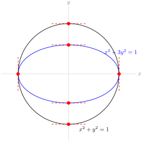
2.12 Inverse Trigonometric Functions
2.12.2 Exercises
2.12.2.1.
Solution.
(a) We can plug any number into the cosine function, and it will return a number in \([-1,1]\text{.}\) The domain of \(\arcsin x\) is \([-1,1]\text{,}\) so any number we plug into cosine will give us a valid number to plug into arcsine. So, the domain of \(f(x)\) is all real numbers.
(b) We can plug any number into the cosine function, and it will return a number in \([-1,1]\text{.}\) The domain of \(\arccsc x\) is \((-\infty,-1] \cup [1,\infty)\text{,}\) so in order to have a valid number to plug into arccosecant, we need \(\cos x = \pm 1\text{.}\) That is, the domain of \(g(x)\) is all values \(x=n\pi\) for some integer \(n\text{.}\)
(c) The domain of arccosine is \([-1,1]\text{.}\) The domain of sine is all real numbers, so no matter what number arccosine spits out, we can safely plug it into sine. So, the domain of \(h(x)\) is \([-1,1]\text{.}\)
2.12.2.2.
Solution.
False: \(\cos t=1\) for infinitely many values of \(t\text{;}\) arccosine gives only the single value \(t=0\) for which \(\cos t=1\) and \(0 \leq t \leq \pi\text{.}\) The particle does not start moving until \(t=10\text{,}\) so \(t=0\) is not in the domain of the function describing its motion.
The particle will have height \(1\) at time \(2\pi n\text{,}\) for any integer \(n \geq 2\text{.}\)
2.12.2.3.
Solution.
First, we restrict the domain of \(f\) to force it to be one--to--one. There are many intervals we could choose over which \(f\) is one--to--one, but the question asks us to contain \(x=0\) and be as large as possible; this leaves us with the following restricted function:
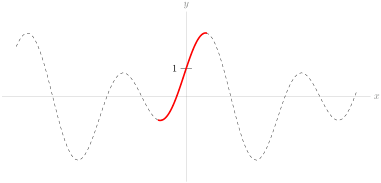
The inverse of a function swaps the role of the input and output; so if the graph of \(y=f(x)\) contains the point \((a,b)\text{,}\) then the graph of \(Y=f^{-1}(X)\) contains the point \((b,a)\text{.}\) That is, the graph of \(Y=f^{-1}(X)\) is the graph of \(y=f(x)\) with the \(x\)-coordinates and \(y\)-coordinates swapped. (So, since \(y=f(x)\) crosses the \(y\)-axis at \(y=1\text{,}\) then \(Y=f^{-1}(X)\) crosses the \(X\)-axis at \(X=1\text{.}\)) This swapping is equivalent to reflecting the curve \(y=f(x)\) over the line \(y=x\text{.}\)
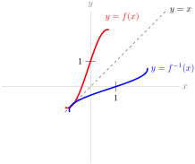
Remark: while you’re getting accustomed to inverse functions, it is sometimes clearer to consider \(y=f(x)\) and \(Y=f^{-1}(X)\text{:}\) using slightly different notations for \(x\) (the input of \(f\text{,}\) hence the output of \(f^{-1}\)) and \(X\) (the input of \(f^{-1}\text{,}\) which comes from the output of \(f\)). However, the convention is to use \(x\) for the inputs of both functions, and \(y\) as the outputs of both functions, as is written on the graph above.
2.12.2.4.
Solution.
The tangent line is horizontal when \(0=y'=a-\sin x\text{.}\) That is, when \(a=\sin x\text{.}\)
-
If \(|a| \gt 1\text{,}\) then there is no value of \(x\) for which \(a=\sin x\text{,}\) so the curve has no horizontal tangent lines.
-
If \(|a| = 1\text{,}\) then there are infinitely many solutions to \(a=\sin x\text{,}\) but only one solution in the interval \([-\pi,\pi]\text{:}\) \(x=\arcsin(a)=\arcsin(\pm1)=\pm\frac{\pi}{2}\text{.}\) Then the values of \(x\) for which \(a=\sin x\) are \(x=2\pi n +a \frac{\pi}{2}\) for any integer \(n\text{.}\)
-
If \(|a| \lt 1\text{,}\) then there are infinitely many solutions to \(a=\sin x\text{.}\) The solution in the interval \(\left(-\frac{\pi}{2},\frac{\pi}{2}\right)\) is given by \(x=\arcsin(a)\text{.}\) The other solution in the interval \(\left(-\pi,\pi\right)\) is given by \(x=\pi-\arcsin(a)\text{,}\) as shown in the unit circles below.
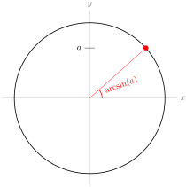
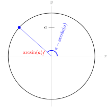
So, the values of \(x\) for which \(x=\sin a\) are \(x=2\pi n+\arcsin(a)\) and \(x=2\pi n + \pi - \arcsin (a)\) for any integer \(n\text{.}\)
Remark: when \(a=1\text{,}\) then
\begin{equation*}
2\pi n+\arcsin(a) = 2\pi n + \dfrac{\pi}{2}=2\pi n +\pi -\left(\dfrac {\pi}{2}\right)=2\pi n+\pi-\arcsin(a).
\end{equation*}
Similarly, when \(a=-1\text{,}\)
\begin{align*}
2\pi n+\arcsin(a) \amp= 2\pi n - \dfrac{\pi}{2}
=2\pi (n-1) +\pi -\left(-\dfrac {\pi}{2}\right)\\
\amp=2\pi(n-1)+\pi-\arcsin(a)
\end{align*}
So, if we try to use the descriptions in the third bullet point to describe points where the tangent line is horizontal when \(|a|=1\text{,}\) we get the correct points but each point is listed twice. This is why we separated the case \(|a|=1\) from the case \(|a| \lt 1\text{.}\)
2.12.2.5.
Solution.
The function \(\arcsin x\) is only defined for \(|x| \leq 1\text{,}\) and the function \(\arccsc x\) is only defined for \(|x| \geq 1\text{,}\) so \(f(x)\) has domain \(|x|=1\text{.}\) That is, \(x=\pm1\text{.}\)
In order for \(f(x)\) to be differentiable at a point, it must exist in an open interval around that point. (See Definition 2.2.1.) Since our function does not exist over any open interval, \(f(x)\) is not differentiable anywhere.
So, actually, \(f(x)\) is a pretty boring function, which we can entirely describe as: \(f(-1)=-\pi\) and \(f(1)=\pi\text{.}\)
2.12.2.6.
Solution.
Using the chain rule,
\begin{align*}
\diff{}{x}\left\{\arcsin\left(\frac{x}{3}\right)\right\}&=\frac{1}{\sqrt{1-\left(\frac{x}{3}\right)^2}}\cdot \frac{1}{3}\\
&=\frac{1}{3\sqrt{1-\frac{x^2}{9}}}\\
&=\frac{1}{\sqrt{9-x^2}}
\end{align*}
Since the domain of arcsine is \([-1,1]\text{,}\) and we are plugging in \(\dfrac{x}{3}\) to arcsine, the values of \(x\) that we can plug in are those that satisfy \(-1 \le \dfrac{x}{3} \leq 1\text{,}\) or \(-3\leq x \leq 3\text{.}\) So the domain of \(f\) is \([-3,3]\text{.}\)
2.12.2.7.
Solution.
Using the quotient rule,
\begin{align*}
\diff{}{t}\left\{\dfrac{\arccos t}{t^2-1}\right\}&=
\frac{(t^2-1)\left(\frac{-1}{\sqrt{1-t^2}}\right)-(\arccos t)(2t)}{(t^2-1)^2}
\end{align*}
The domain of arccosine is \([-1,1]\text{,}\) and since \(t^2-1\) is in the denominator, the domain of \(f\) requires \(t^2-1 \neq 0\text{,}\) that is, \(t \neq \pm 1\text{.}\) So the domain of \(f(t)\) is \((-1,1)\text{.}\)
2.12.2.8.
Solution.
The domain of \(\arcsec x\) is \(|x| \geq 1\text{:}\) that is, we can plug into arcsecant only values with absolute value greater than or equal to one. Since \(-x^2-2 \leq -2\text{,}\) every real value of \(x\) gives us an acceptable value to plug into arcsecant. So, the domain of \(f(x)\) is all real numbers.
To differentiate, we use the chain rule. Remember \(\ds\diff{}{x}\left\{\arcsec x\right\} = \dfrac{1}{|x|\sqrt{x^2-1}}\text{.}\)
\begin{align*}
\diff{}{x}\left\{\arcsec(-x^2-2)\right\}&=
\dfrac{1}{|-x^2-2|\sqrt{(-x^2-2)^2-1}}\cdot(-2x)\\
&=\dfrac{-2x}{(x^2+2)\sqrt{x^4+4x^2+3}}.
\end{align*}
2.12.2.9.
Solution.
We use the chain rule, remembering that \(a\) is a constant.
\begin{align*}
\diff{}{x}\left\{\frac{1}{a}\arctan\left(\dfrac{x}{a}\right)\right\}&=
\frac{1}{a}\cdot\frac{1}{1+\left(\frac{x}{a}\right)^2}\cdot \frac{1}{a}\\
&=\frac{1}{a^2+x^2}
\end{align*}
The domain of arctangent is all real numbers, so the domain of \(f(x)\) is also all real numbers.
2.12.2.10.
Solution.
We differentiate using the product and chain rules.
\begin{align*}
\diff{}{x}\left\{\textcolor{blue}{x\arcsin x} + \textcolor{red}{\sqrt{1-x^2}}\right\}&=
\textcolor{blue}{\arcsin x + \frac{x}{\sqrt{1-x^2}}}+\textcolor{red}{\frac{-2x}{2\sqrt{1-x^2}}}\\
&=\arcsin x
\end{align*}
The domain of \(\arcsin x\) is \([-1,1]\text{,}\) and the domain of \(\sqrt{1-x^2}\) is all values of \(x\) so that \(1-x^2 \geq 0\text{,}\) so \(x\) in \([-1,1]\text{.}\) Therefore, the domain of \(f(x)\) is \([-1,1]\text{.}\)
2.12.2.11.
2.12.2.12.
Solution.
Using formulas you should memorize from this section,
\begin{equation*}
\diff{}{x}\{\arcsin x + \arccos x\}=\frac{1}{\sqrt{1-x^2}}+\frac{-1}{\sqrt{1-x^2}}=0
\end{equation*}
Remark: the only functions with derivative equal to zero everywhere are constant functions, so \(\arcsin x + \arccos x\) should be a constant. Since \(\sin \theta = \cos \left(\frac{\pi}{2}-\theta\right)\text{,}\) we can set
\begin{align*}
\sin\theta&=x & \cos\left(\frac{\pi}{2}-\theta\right)&=x\\
\end{align*}
where \(x\) and \(\theta\) are the same in both expressions, and \(-\frac{\pi}{2} \leq \theta \leq \frac{\pi}{2}\text{.}\) Then
\begin{align*}
\arcsin x &=\theta & \arccos x &= \frac{\pi}{2}-\theta
\end{align*}
We note here that arcsine is the inverse of the sine function restricted to \(\left[-\frac{\pi}{2}, \frac{\pi}{2}\right]\text{.}\) So, since we restricted \(\theta\) to this domain, \(\sin \theta=x\) really does imply \(\arcsin x = \theta\text{.}\) (For an example of why this matters, note \(\sin(2\pi)=0\text{,}\) but \(\arcsin (0)=0 \neq 2\pi\text{.}\)) Similarly, arccosine is the inverse of the cosine function restricted to \([0,\pi]\text{.}\) Since \(-\frac{\pi}{2} \leq \theta \leq \frac{\pi}{2}\text{,}\) then \(0 \leq (\frac{\pi}{2}-\theta) \leq \pi\text{,}\) so \(\cos\left(\frac{\pi}{2}- \theta\right) =x\) really does imply \(\arccos x=\frac{\pi}{2}-\theta\text{.}\)
So,
\begin{equation*}
\arcsin x+\arccos x =\theta+\frac{\pi}{2}-\theta =\frac{\pi}{2}
\end{equation*}
which means the derivative we were calculating was actually just \(\ds\diff{}{x}\left\{\dfrac{\pi}{2}\right\}=0\text{.}\)
2.12.2.13. (✳).
2.12.2.14. (✳).
2.12.2.15. (✳).
2.12.2.16.
Solution.
Let \(\theta = \arctan x\text{.}\) Then \(\theta\) is the angle of a right triangle that gives \(\tan \theta = x\text{.}\) In particular, the ratio of the opposite side to the adjacent side is \(x\text{.}\) So, we have a triangle that looks like this:
where the length of the hypotenuse came from the Pythagorean Theorem. Now,
\begin{equation*}
\sin\left(\arctan x\right) = \sin \theta = \frac{\mbox{opp}}{\mbox{hyp}} = \frac{x}{\sqrt{x^2+1}}
\end{equation*}
From here, we differentiate using the quotient rule:
\begin{align*}
\diff{}{x}\left\{\frac{x}{\sqrt{x^2+1}}
\right\}&=
\frac{\sqrt{x^2+1}-x\frac{2x}{2\sqrt{x^2+1}}}{x^2+1}\\
&=\left(\frac{\sqrt{x^2+1}-\frac{x^2}{\sqrt{x^2+1}}}{x^2+1}\right)\cdot\frac{\sqrt{x^2+1}}{\sqrt{x^2+1}}\\
&=\frac{(x^2+1)-x^2}{(x^2+1)^{3/2}}\\
&=\frac{1}{(x^2+1)^{3/2}}=(x^2+1)^{-3/2}
\end{align*}
Remark: another strategy is to differentiate first, using the chain rule, then draw a triangle to simplify the resulting expression \(\ds\diff{}{x}\left\{\sin\left(\arctan x\right)\right\}=\dfrac{\cos(\arctan x)}{1+x^2}\text{.}\)
2.12.2.17.
Solution.
Let \(\theta = \arcsin x\text{.}\) Then \(\theta\) is the angle of a right triangle that gives \(\sin \theta = x\text{.}\) In particular, the ratio of the opposite side to the hypotenuse is \(x\text{.}\) So, we have a triangle that looks like this:
where the length of the adjacent side came from the Pythagorean Theorem. Now,
\begin{equation*}
\cot\left(\arcsin x\right) = \cot \theta = \frac{\mbox{adj}}{\mbox{opp}} = \frac{\sqrt{1-x^2}}{x}
\end{equation*}
From here, we differentiate using the quotient rule:
\begin{align*}
\diff{}{x}\left\{\frac{\sqrt{1-x^2}}{x}
\right\}&=
\frac{x\frac{-2x}{2\sqrt{1-x^2}}-\sqrt{1-x^2}}{x^2}\\
&=\frac{-x^2-(1-x^2)}{x^2\sqrt{1-x^2}}\\
&=\frac{-1}{x^2\sqrt{1-x^2}}
\end{align*}
Remark: another strategy is to differentiate first, using the chain rule, then draw a triangle to simplify the resulting expression \(\ds\diff{}{x}\left\{\cot\left(\arcsin x\right)\right\}=\frac{-\csc^2(\arcsin x)}{\sqrt{1-x^2}}\text{.}\)
2.12.2.18. (✳).
Solution.
The line \(y=2x+9\) has slope \(2\text{,}\) so we must find all values of \(x\) between \(-1\) and \(1\) (\(\arcsin x\) is only defined for these values of \(x\)) for which \(\diff{}{x}\{\arcsin x\}=2\text{.}\) Evaluating the derivative:
\begin{align*}
y&=\arcsin x\\
2=y'&=\frac{1}{\sqrt{1-x^2}}\\
4&=\frac{1}{1-x^2}\\
\frac{1}{4}&=1-x^2\\
x^2&=\frac{3}{4}\\
x&=\pm\frac{\sqrt{3}}{2}\\
(x,y)&=\pm\big(\frac{\sqrt{3}}{2},\frac{\pi}{3}\big)
\end{align*}
2.12.2.19.
Solution.
We differentiate using the chain rule:
\begin{align*}
\diff{}{x}\{\arctan(\csc x)\}&=\frac{1}{1+\csc^2x}\cdot\diff{}{x}\{\csc x\}\\
&=\frac{-\csc x \cot x}{1+\csc^2x}\\
&=\frac{-\frac{1}{\sin x}\cdot \frac{\cos x}{\sin x}}{1+\left(\frac{1}{\sin x}\right)^2}\\
&=\frac{-\cos x}{\sin^2x+1}
\end{align*}
So if \(f'(x)=0\text{,}\) then \(\cos x=0\text{,}\) and this happens when \(x=\dfrac{(2n+1)\pi}{2}\) for any integer \(n\text{.}\) We should check that these points are in the domain of \(f\text{.}\) Arctangent is defined for all real numbers, so we only need to check the domain of cosecant; when \(x=\dfrac{(2n+1)\pi}{2}\text{,}\) then \(\sin x=\pm1 \neq 0\text{,}\) so \(\csc x = \dfrac{1}{\sin x}\) exists.
2.12.2.20. (✳).
Solution.
Since \(g(y)=f^{-1}(y)\text{,}\)
\begin{align*}
f(g(y))&=f\left(f^{-1}(y)\right)=y\\
\end{align*}
Now, we can differentiate with respect to \(y\) using the chain rule.
\begin{align*}
\diff{}{y}\left\{f(g(y))\right\}&=\diff{}{y}\{y\}\\
f'(g(y))\cdot g'(y)&=1\\
g'(y)&=\frac{1}{f'(g(y))}=\frac{1}{1-\sin g(y)}
\end{align*}
2.12.2.21. (✳).
Solution.
Write \(g(y)=f^{-1}(y)\text{.}\) Then \(g(f(x))=x\text{,}\) so differentiating both sides (using the chain rule), we see
\begin{align*}
g'(f(x))\cdot f'(x)=1\\
\end{align*}
What we want is \(g'(\pi-1)\text{,}\) so we need to figure out which value of \(x\) gives \(f(x)=\pi-1\text{.}\) A little trial and error leads us to \(x=\frac{\pi}{2}\text{.}\)
\begin{align*}
g'(\pi-1)\cdot f'\left(\frac{\pi}{2}\right)&=1\\
\end{align*}
Since \(f'(x)=2-\cos(x)\text{,}\) \(f'\left(\frac{\pi}{2}\right)=2-0=2\text{:}\)
\begin{align*}
g'(\pi-1)\cdot 2&=1\\
g'(\pi-1)=\frac{1}{2}
\end{align*}
2.12.2.22. (✳).
Solution.
Write \(g(y)=f^{-1}(y)\text{.}\) Then \(g(f(x))=x\text{,}\) so differentiating both sides (using the chain rule), we see
\begin{align*}
g'(f(x))f'(x)&=1\\
\end{align*}
What we want is \(g'(e+1)\text{,}\) so we need to figure out which value of \(x\) gives \(f(x)=e+1\text{.}\) A little trial and error leads us to \(x=1\text{.}\)
\begin{align*}
g'(f(1))f'(1)&=1\\
g'(e+1)\cdot f'(1)&=1\\
g'(e+1) &= \frac{1}{f'(1)}\\
\end{align*}
It remains only to note that \(f'(x)=e^x+1\text{,}\) so \(f'(1)=e+1\)
\begin{align*}
g'(e+1)&=\frac{1}{e+1}
\end{align*}
2.12.2.23.
Solution.
We use logarithmic differentiation, our standard method of differentiating an expression of the form \((\mbox{function})^{\mbox{function}}\text{.}\)
\begin{align*}
f(x)&=[\sin x +2]^{\arcsec x}\\
\log(f(x))&=\arcsec x \cdot \log[\sin x +2]\\
\frac{f'(x)}{f(x)}&=\frac{1}{|x|\sqrt{x^2-1}}\log[\sin x +2]+\arcsec x \cdot \frac{\cos x}{\sin x +2}\\
f'(x)&=[\sin x +2]^{\arcsec x}\left(\frac{\log[\sin x +2]}{|x|\sqrt{x^2-1}}+ \frac{\arcsec x \cdot\cos x}{\sin x +2}\right)
\end{align*}
The domain of \(\arcsec x\) is \(|x| \geq 1\text{.}\) For any \(x\text{,}\) \(\sin x +2\) is positive, and a positive number can be raised to any power. (Recall negative numbers cannot be raised to any power--for example, \((-1)^{1/2}=\sqrt{-1}\) is not a real number.) So, the domain of \(f(x)\) is \(|x| \geq 1\text{.}\)
2.12.2.24.
Solution.
The function \(\dfrac{1}{\sqrt{x^2-1}}\) exists only for those values of \(x\) with \(x^2-1 \gt 0\text{:}\) that is, the domain of \(\dfrac{1}{\sqrt{x^2-1}}\) is \(|x| \gt 1\text{.}\) However, the domain of arcsine is \(|x| \leq 1\text{.}\) So, there is not one single value of \(x\) where \(\arcsin x\) and \(\dfrac{1}{\sqrt{x^2-1}}\) are both defined.
If the derivative of \(\arcsin(x)\) were given by \(\dfrac{1}{\sqrt{x^2-1}}\text{,}\) then the derivative of \(\arcsin(x)\) would not exist anywhere, so we would probably just write “derivative does not exist,” instead of making up a function with a mismatched domain. Also, the function \(f(x)=\arcsin(x)\) is a smooth curve--its derivative exists at every point strictly inside its domain. (Remember not all curves are like this: for instance, \(g(x)=|x|\) does not have a derivative at \(x=0\text{,}\) but \(x=0\) is strictly inside its domain.) So, it’s a pretty good bet that the derivative of arcsine is not \(\dfrac{1}{\sqrt{x^2-1}}\text{.}\)
2.12.2.25.
Solution.
This limit represents the derivative computed at \(x=1\) of the function \(f(x)=\arctan x\text{.}\) To see this, simply use the definition of the derivative at \(a=1\text{:}\)
\begin{align*}
\left.\diff{}{x}\{f(x)\}\right|_{a} &= \lim_{x \to a}\frac{f(x)-f(a)}{x-a}\\
\left.\diff{}{x}\{\arctan x\}\right|_{1} &=\lim_{x\to1} \frac{\arctan x-\arctan 1}{x-1}\\
&=\lim_{x\to1} \frac{\arctan x-\frac{\pi}{4}}{x-1}\\
&=\displaystyle \lim_{x\to 1}\left(
(x-1)^{-1}\left(\arctan x - \frac{\pi}{4}\right)\right).
\end{align*}
Since the derivative of \(f(x)\) is \(\dfrac{1}{1+x^2}\text{,}\) its value at \(x=1\) is exactly \(\dfrac{1}{2}\text{.}\)
2.12.2.26.
Solution.
First, let’s interpret the given information: when the input of our function is \(2x+1\) for some \(x\text{,}\) then its output is \(\dfrac{5x-9}{3x+7}\text{,}\) for that same \(x\text{.}\) We’re asked to evaluate \(f^{-1}(7)\text{,}\) which is the number \(y\) with the property that \(f(y)=7\text{.}\) If the output of our function is 7, that means
\begin{align*}
7&=\frac{5x-9}{3x+7}\\
\end{align*}
and so
\begin{align*}
7(3x+7)&=5x-9\\
x&=-\frac{29}{8}\\
\end{align*}
So, when \(x=-\dfrac{29}{8}\text{,}\) our equation \(f(2x+1)=\dfrac{5x-9}{3x+7}\) becomes:
\begin{align*}
f\left(2\cdot\frac{-29}{8}+1\right)&=\dfrac{5\cdot\frac{-29}{8}-9}{3\cdot\frac{-29}{8}+7}\\
\end{align*}
Or, equivalently:
\begin{align*}
f\left(-\frac{25}{4}\right)&=7
\end{align*}
Therefore, \(f^{-1}(7)=-\dfrac{25}{4}\text{.}\)
2.12.2.27.
Solution.
If \(f^{-1}(y)=0\text{,}\) that means \(f(0)=y\text{.}\) So, we want to find out what we plug into \(f^{-1}\) to get 0. Since we only know \(f^{-1}\) in terms of a variable \(x\text{,}\) let’s figure out what \(x\) gives us an output of 0:
\begin{align*}
\frac{2x+3}{x+1}&=0\\
2x+3&=0\\
x&=-\frac{3}{2}\\
\end{align*}
Now, the equation \(f^{-1}(4x-1)=\dfrac{2x+3}{x+1}\) with \(x=\dfrac{-3}{2}\) tells us:
\begin{align*}
f^{-1}\left(4\cdot\frac{-3}{2}-1\right)&=\frac{2\cdot\frac{-3}{2}+3}{\frac{-3}{2}+1}\\
\end{align*}
Or, equivalently:
\begin{align*}
f^{-1}(-7)&=0
\end{align*}
Therefore, \(f(0)=-7\text{.}\)
2.12.2.28.
Solution.
-
Solution 1: We begin by differentiating implicitly. Following the usual convention, we use \(y'\) to mean \(y'(x)\text{.}\) We start with\begin{align*} \arcsin(x+2y)&=x^2+y^2 \end{align*}Using the chain rule,\begin{align*} \frac{1+2y'}{\sqrt{1-(x+2y)^2}}&=2x+2yy'\\ \frac{1}{\sqrt{1-(x+2y)^2}}+\frac{2y'}{\sqrt{1-(x+2y)^2}}&=2x+2yy'\\ \frac{2y'}{\sqrt{1-(x+2y)^2}}-2yy'&=2x-\frac{1}{\sqrt{1-(x+2y)^2}}\\ y'\left(\frac{2}{\sqrt{1-(x+2y)^2}}-2y\right)&=2x-\frac{1}{\sqrt{1-(x+2y)^2}} \end{align*}Finally, solving for \(y'\) gives\begin{align*} y'&=\frac{2x-\frac{1}{\sqrt{1-(x+2y)^2}}}{\frac{2}{\sqrt{1-(x+2y)^2}}-2y} \left(\frac{\sqrt{1-(x+2y)^2}}{\sqrt{1-(x+2y)^2}}\right)\\ y'&=\frac{2x\sqrt{1-(x+2y)^2}-1}{2-2y\sqrt{1-(x+2y)^2}} \end{align*}
-
Solution 2: We begin by taking the sine of both sides of the equation.\begin{align*} \arcsin(x+2y)&=x^2+y^2\\ x+2y&=\sin(x^2+y^2)\\ \end{align*}Now, we differentiate implicitly.\begin{align*} 1+2y'&=\cos(x^2+y^2)\cdot(2x+2yy')\\ 1+2y'&=2x\cos(x^2+y^2)+2yy'\cos(x^2+y^2)\\ 2y'-2yy'\cos(x^2+y^2)&=2x\cos(x^2+y^2)-1\\ y'\left(2-2y\cos(x^2+y^2)\right)&=2x\cos(x^2+y^2)-1\\ y'&=\frac{2x\cos(x^2+y^2)-1}{2-2y\cos(x^2+y^2)} \end{align*}
-
We used two different methods, and got two answers that look pretty different. However, the answers ought to be equivalent. To see this, we remember that for all values of \(x\) and \(y\) that we care about (those pairs \((x,y)\) in the domain of our curve), the equality\begin{equation*} \arcsin(x+2y)=x^2+y^2 \end{equation*}holds. Drawing a triangle:
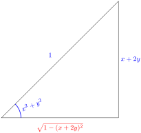
where the adjacent side (in red) come from the Pythagorean Theorem. Then, \(\cos(x^2+y^2)=\sqrt{1-(x+2y)^2}\text{,}\) so using our second solution:\begin{align*} y'&=\frac{2x\cos(x^2+y^2)-1}{2-2y\cos(x^2+y^2)}\\ &=\frac{2x\sqrt{1-(x+2y)^2}-1}{2-2y\sqrt{1-(x+2y)^2}} \end{align*}which is exactly the answer from our first solution.
2.13 The Mean Value Theorem
2.13.5 Exercises
2.13.5.1.
Solution.
We know the top speed of the caribou, so we can use this to give the minimum possible number of hours the caribou spent travelling during its migration. If the caribou travels at 70kph, it will take \((5000 \mathrm{km})\left(\dfrac{1 \mathrm{hr}}{70 \mathrm{km}}\right) \approx 71.4 \mathrm{hrs}\) to travel 5000 kilometres. Probably the caribou wasn’t sprinting the whole time, so probably it took it longer than that, but we can only say for sure that the caribou spent at least about 71.4 hours migrating.
2.13.5.2.
Solution.
If \(f(x)\) is the position of the crane at time \(x\text{,}\) measured in hours, then (if we let \(x=0\) be the beginning of the day) we know that \(f(24)-f(0)=240\text{.}\) Since \(f(x)\) is the position of the bird, \(f(x)\) is continuous and differentiable. So, the MVT says there is a \(c\) in \((0,24)\) such that \(f'(x)=\dfrac{f(24)-f(0)}{24-0}=\dfrac{240}{24}=10\text{.}\) That is, at some point \(c\) during the day, the speed of the crane was exactly 10 kph.
2.13.5.3.
Solution.
The MVT guarantees there is some point \(c\) strictly between \(a\) and \(b\) where the tangent line to \(f(x)\) at \(x=c\) has the same slope as the secant line of \(f(x)\) from \(x=a\) to \(x=b\text{.}\) So, let’s start by drawing in the secant line.
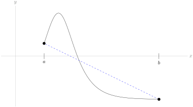
What we’re looking for is a point on the curve where the tangent line is parallel to this secant line. In fact, there are two.
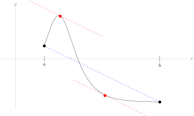
So, either of the two values \(c_1\) and \(c_2\) marked below can serve as the point guaranteed by the MVT:
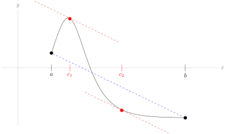
2.13.5.4.
Solution.
Since \(f(x)\) is differentiable for all \(x \in (0,10)\text{,}\) then \(f(x)\) is also continuous for all \(x \in (0,10)\text{.}\) If \(f(x)\) were continuous on the closed interval \([0,10]\text{,}\) then the MVT would guarantee \(f'(x)=\dfrac{f(10)-f(0)}{10-0}=1\) for some \(c \in (0,10)\text{;}\) however, this is not the case. So, it must be that \(f(x)\) is continuous for all \(x \in (0,10)\text{,}\) but not for all \(x \in [0,10]\text{.}\)
Since \(f'(c)=0\) for \(c \in (0,10)\text{,}\) that means \(f\) is constant on that interval. So, \(f(x)\) is a function like this:
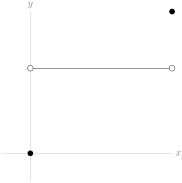
where the height of the constant function can be anything.
So, one possible answer is \(f(x) = \left\{\begin{array}{lr}
0&x \neq 10\\
10&x=10
\end{array}\right.\text{.}\)
2.13.5.5.

2.13.5.6.
Solution.
The function \(f(x)\) is continuous over all real numbers, but it is only differentiable when \(x \neq 0\text{.}\) So, if we want to apply the MVT, our interval must consist of only positive numbers or only negative numbers: the interval \((-4,13)\) is not valid.
It is possible to use the mean value theorem to prove what we want: if \(a=1\) and \(b=144\text{,}\) then \(f(x)\) is differentiable over the interval \((1,144)\) (since 0 is not contained in that interval), and \(f(x)\) is continuous everywhere, so by the mean value theorem there exists some point \(c\) where \(f'(x)=\dfrac{\sqrt{|144|}-\sqrt{|1|}}{144-1}=\dfrac{11}{143}=\dfrac{1}{13}\text{.}\)
That being said, an easier way to prove that a point exists is to simply find it--without using the MVT. When \(x \gt 0\text{,}\) \(f(x)=\sqrt{x}\text{,}\) so \(f'(x)=\dfrac{1}{2\sqrt {x}}\text{.}\) Then \(f'\left(\dfrac{169}{4}\right)=\dfrac{1}{13}\text{.}\)
2.13.5.7. (✳).
2.13.5.8. (✳).
2.13.5.9. (✳).
Solution.
We note that \(f(0)=f(2\pi)=\sqrt{3} + \pi^2\text{.}\) Then using the Mean Value Theorem (note that the function is differentiable for all real numbers since \(3+\sin x \gt 0\)), we get that there exists \(c\in (0,2\pi)\) such that
\begin{equation*}
f'(c)=\frac{f(2\pi)- f(0)}{2\pi - 0} = 0.
\end{equation*}
2.13.5.10. (✳).
2.13.5.11.
Solution.
By inspection, we see \(x=0\) is a root of \(f(x)\text{.}\) The question now is whether there could possibly be other roots. Since \(f(x)\) is differentiable over all real numbers, if there is another root \(a\text{,}\) then by Rolle’s Theorem, \(f'(c)=0\) for some \(c\) strictly between \(0\) and \(a\text{.}\) However, \(f'(x)=3-\cos x\) is never zero. So, there is no second root: \(f(x)\) has precisely one root.
2.13.5.12.
Solution.
The function \(f(x)\) is continuous and differentiable over all real numbers. If \(a\) and \(b\) are distinct roots of \(f(x)\text{,}\) then \(f'(c)=0\) for some \(c\) strictly between \(a\) and \(b\) (Rolle’s Theorem). So, let’s think about \(f'(x)\text{.}\)
\begin{equation*}
f'(x)=(4x+1)^3+1
\end{equation*}
This is simple enough that we can find its zero explicitly:
\begin{align*}
(4x+1)^3 +1= 0
\quad \amp\Leftrightarrow \quad
(4x+1)^3 = -1
\quad \Leftrightarrow \quad
4x+1 = -1\\
\quad \amp\Leftrightarrow \quad
4x=-2
\end{align*}
Hence \(f'(c)=0\) only when \(c=\dfrac{-1}{2}\text{.}\) That the derivative only has a single zero is very useful. It means (via Rolle’s theorem) that if \(f(x)\) has distinct roots \(a\) and \(b\) with \(a \lt b\text{,}\) then we must have \(a \lt \dfrac{-1}{2} \lt b\text{.}\) This also means that \(f(x)\) cannot have 3 distinct roots \(a,b\) and (say) \(q\) with \(a \lt b \lt q\text{,}\) because then Rolle’s theorem would imply that \(f'(x)\) would have two zeros — one between \(a\) and \(b\) and another between \(b\) and \(q\text{.}\)
We’ve learned that \(f(x)\) has at most two roots, and we’ve learned something about where those roots can exist, if there are indeed two of them. But that means \(f(x)\) could have 0, 1, or 2 roots.
It’s not easy to find a root of \(f(x)\) by inspection. But we can get a good enough picture of the graph of \(y=f(x)\) to tell exactly how many roots there are, just by exploiting the following properties of \(f(x)\) and \(f'(x)\text{.}\)
-
As \(x\) tends to \(\pm \infty\text{,}\) \(f(x)\) tends to \(+\infty\text{.}\)
-
The derivative \(f'(x)=(4x+1)^3+1\) is negative for \(x \lt -\frac{1}{2}\) and is positive for \(x \gt -\frac{1}{2}\text{.}\) That is, \(f(x)\) is decreasing for \(x \lt -\frac{1}{2}\) and increasing for \(x \gt -\frac{1}{2}\text{.}\)
-
\(f\left(-\frac{1}{2}\right)=\frac{1}{16}-\frac{1}{2} \lt 0\text{.}\)
This means the function must look something like the graph below:
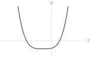
except we are unsure of the locations of the \(x\)-intercepts. At present we only know that one is to the left of \(x=-1/2\) and one is to the right.
Note what happens to \(f(x)\) as \(x\) increases from strongly negative values to strongly positive values.
-
When \(x\) is large and negative, \(f(x) \gt 0\text{.}\)
-
As \(x\) increases, \(f(x)\) decreases continuously until \(x=-\frac{1}{2}\text{,}\) where \(f(x) \lt 0\text{.}\) In particular, since \(f(-1)=\frac{65}{16} \gt 0\) and \(f\big(-\frac{1}{2}\big) \lt 0\) and \(f(x)\) is continuous, the intermediate value theorem guarantees that \(f(x)\) takes the value zero for some \(x\) between \(-\frac{1}{2}\) and \(-1\text{.}\) More descriptively put, as \(x\) increases from hugely negative numbers to \(-\frac{1}{2}\text{,}\) \(f(x)\) passes through zero exactly once.
-
As \(x\) increases beyond \(-\frac{1}{2}\text{,}\) \(f(x)\) increases continuously, starting negative and becoming very large and positive when \(x\) becomes large and positive. In particular, since \(f(0)=\frac{1}{16} \gt 0\) and \(f\big(-\frac{1}{2}\big) \lt 0\) and \(f(x)\) is continuous, the intermediate value theorem guarantees that \(f(x)\) takes the value zero for some \(x\) between \(-\frac{1}{2}\) and \(0\text{.}\) So, as \(x\) increases from \(-\frac{1}{2}\) to near \(+\infty\text{,}\) \(f(x)\) again passes through zero exactly once.
So \(f(x)\) must have exactly two roots, one with \(x \lt -\frac{1}{2}\) and one with \(x \gt -\frac{1}{2}\text{.}\)
2.13.5.13.
Solution.
-
We can see by inspection that \(f(0)=0\text{,}\) so there is at least one root. We have to determine how many any other roots there are, if any.
-
The function \(f(x)\) is the sum of the two terms \(x^3\) and \(\sin(x^5)\text{.}\) A number \(x\) is a root of \(f(x)\) if and only if the two terms cancel each other exactly for that value of \(x\text{.}\) That is, \(x\) is a root of \(f\) if and only if \(x^3=-\sin(x^5)\text{.}\) To develope some intuition in our hunt for other roots, we sketch, in the same figure, the graphs \(y=x^3\) and \(y=-\sin(x^5)\text{.}\) Then the roots of \(f(x)\) are precisely the \(x\)’s where the two curves \(y=x^3\) and \(y= -\sin(x^5)\) intersect.
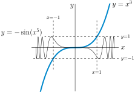
-
Looking at the sketch, we see that the two curves cannot possibly intersect at any point having \(|x|>1\) — if \(|x|>1\text{,}\) then \(|x^3|>1\) but \(|-\sin (x^5)|\le 1\) and we cannot possibly have \(x^3=-\sin(x^5)\text{.}\) That is, all roots of \(f(x)\) are in the interval \([-1,1]\text{.}\)
-
From the sketch, we would probably guess that \(y=x^3\) and \(y=-\sin(x^5)\) cross only at \(x=0\text{.}\) We can use Rolle’s Theorem to verify that that is indeed the case.
-
If there is a root \(a \neq 0\text{,}\) then by Rolle’s Theorem (since \(f(x)\) is continuous and differentiable for all real numbers \(x\)) \(f'(c)=0\) for some \(c\) strictly between \(0\) and \(a\text{.}\) In particular, since we already know any roots \(a\) will be between \(-1\) and \(1\text{,}\) if \(f(x)\) has two roots then \(f'(c)=0\) for some \(c \in (-1,0) \cup (0,1)\text{.}\)
-
The derivative of \(f\) is\begin{equation*} f'(x)=3x^2+5x^4\cos\big(x^5\big)=x^2\left(3+5x^2\cos\big(x^5\big)\right) \end{equation*}So, if \(f'(x)=0\text{,}\) then \(x=0\) or \(\left(3+5x^2\cos\left(x^5\right)\right)=0\text{.}\) If \(x \in (-1,0) \cup (0,1)\text{,}\) then\begin{align*} |x|\lt 1 \amp\implies |x^5|\lt 1\lt \tfrac{\pi}{2} \implies \cos\big(x^5\big)>0 \\ \amp\implies 3+5x^2\cos\big(x^5\big) > 3 \\ \amp\implies f'(x) \neq 0 \end{align*}That is, there is no \(c \in (-1,0) \cup (0,1)\) with \(f'(c)=0\text{.}\) Therefore, following our last bullet point, \(f(x)\) has only one root.
Note here that \(f'(x)\) has many zeroes — infinitely many, in fact. However, \(x=0\) is the only root of \(f'(x)\) in the interval \((-1,1)\text{.}\)
2.13.5.14.
Solution.
We are to find the number of positive solutions to the equation \(e^x = 4\cos(2x)\text{.}\) The figure below contains the graphs of \(y=e^x\) and \(y= 4\cos(2x)\text{.}\) The solutions to \(e^x = 4\cos(2x)\) are precisely the \(x\)’s where \(y=e^x\) and \(y= 4\cos(2x)\) cross.
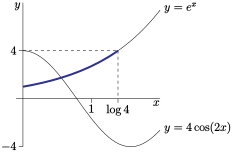
It sure looks like there is exactly one crossing with \(x\ge 0\) and that one crossing is somewhere between \(x=0\) and \(x=1\text{.}\) Indeed since \(\big[e^x- 4\cos(2x)\big]_{x=0} = -3 \lt 0\) and \(\big[e^x- 4\cos(2x)\big]_{x=1} \gt e \gt 0\) and \(f(x)=e^x- 4\cos(2x)\) is continuous, the intermediate value theorem guarantees that there is at least one root with \(0 \lt x \lt 1\text{.}\)
We still have to show that there is no second root — even if our graphs are not accurate.
Recall that the range of the cosine function is \([-1,1]\text{.}\) If \(e^x=4\cos(2x)\text{,}\) then \(e^x \leq 4\text{,}\) so \(x \leq \log(4)\approx 1.39\text{.}\) So, we only need to search for roots of \(f(x)\) on the interval \((0,1.4)\text{:}\) we are guaranteed there are no roots elsewhere. Over this interval, \(2x \in (0,2.8)\text{,}\) so \(\sin(2x) \gt 0\text{,}\) and thus \(f'(x)=e^x+8\sin(2 x) \gt 0\text{.}\) Since \(f'(x)\) has no roots in \((0,1.4)\text{,}\) we conclude by Rolle’s Theorem that \(f(x)\) has at most one root in \((0,1.4)\) (and so at most one positive root total). Since we’ve already found that a root of \(f(x)\) exists in \((0,1)\text{,}\) we conclude \(e^x=4\cos(2x)\) has precisely one positive-valued solution.
2.13.5.15. (✳).
Solution.
\begin{equation*}
f'(x)=15x^4-30x^2+15=15\big(x^4-2x^2+1\big)=15\big(x^2-1\big)^2\ge 0
\end{equation*}
The derivative is nonnegative everywhere. The only values of \(x\) for which \(f'(x)=0\) are \(1\) and \(-1\text{,}\) so \(f'(x) \gt 0\) for every \(x\) in \((-1,1)\text{.}\)
2.13.5.15.b If \(f(x)\) has two roots \(a\) and \(b\) in \([-1,1]\text{,}\) then by Rolle’s Theorem, \(f'(c)=0\) for some \(x\) strictly between \(a\) and \(b\text{.}\) But since \(a\) and \(b\) are in \([-1,1]\text{,}\) and \(c\) is between \(a\) and \(b\text{,}\) that means \(c\) is in \((-1,1)\text{;}\) however, we know for every \(c\) in \((-1,1)\text{,}\) \(f'(c) \gt 0\text{,}\) so this can’t happen. Therefore, \(f(x)\) does not have two roots \(a\) and \(b\) in \([-1,1]\text{.}\) This means \(f(x)\) has at most one root in \([-1,1]\text{.}\)
2.13.5.16. (✳).
Solution.
Write \(f(x)=e^x\text{.}\) Since \(f(x)\) is continuous and differentiable, the Mean Value Theorem asserts that there exists some \(c\) between \(0\) and \(T\) such that
\begin{align*}
f'(c)&=\frac{f(T)-f(0)}{T-0}\\
\end{align*}
The problem asks us to find this value of \(c\text{.}\) Solving:
\begin{align*}
e^c&=\frac{e^T-e^0}{T}\\
e^c&=\frac{e^T-1}{T}\\
c&=\log\left(\frac{e^T-1}{T}\right)
\end{align*}
2.13.5.17.
Solution.
The domains of \(\arcsec x\) and \(C-\arccsc x\) are the same: \(|x| \geq 1\text{.}\) Define \(f(x)=\arcsec x + \arccsc x\text{,}\) and note the domain of \(f(x)\) is also \(|x| \geq 1\text{.}\) Using Theorem 2.12.8,
\begin{equation*}
f'(x)=\diff{}{x}\arcsec x+\diff{}{x} \arccsc
= \dfrac{1}{|x|\sqrt{x^2-1}}+\dfrac{-1}{|x|\sqrt{x^2-1}}=0.
\end{equation*}
By Corollary 2.13.12, this means that \(f(x)\) is constant on any interval in \(|x|\ge 1\text{.}\) So \(f(x)\) is a constant, call it \(C_+\text{,}\) on \(x\ge 1\text{,}\) and \(f(x)\) is also a constant, call it \(C_-\text{,}\) on \(x\le -1\text{.}\)
In order to find \(C_+\text{,}\) we find \(f(1)\text{,}\) because we know angles for which the secant and cosecant are \(x=1\text{.}\)
\begin{alignat*}{5}
\cos(0)\amp=1 \amp\amp\implies \amp\sec(0)\amp=\tfrac{1}{1}=1
\amp\amp\implies \amp\amp\arcsec(1)=0\\
\sin\big(\tfrac{\pi}{2}\big)\amp=1
\amp\amp\implies \amp\csc\big(\tfrac{\pi}{2}\big)\amp=\tfrac{1}{1}=1
\amp\amp\implies \amp\amp\arccsc(1)=\tfrac{\pi}{2}
\end{alignat*}
So
\begin{equation*}
C_+=\arcsec(1)+\arccsc(1)=\tfrac{\pi}{2}
\end{equation*}
In order to find \(C_-\text{,}\) we find \(f(-1)\text{,}\) because we know angles for which the secant and cosecant are \(x=-1\text{.}\)
\begin{alignat*}{5}
\cos(\pi)\amp=-1 \amp\amp\implies \amp\sec(\pi)\amp=\tfrac{1}{-1}=-1
\amp\amp\implies \amp\amp\arcsec(-1)=\pi\\
\sin\big(-\tfrac{\pi}{2}\big)\amp=-1
\amp\amp\implies \amp\csc\big(-\tfrac{\pi}{2}\big)\amp=\tfrac{1}{-1}=-1
\amp\amp\implies \amp\amp\arccsc(-1)=-\tfrac{\pi}{2}
\end{alignat*}
So
\begin{equation*}
C_-=\arcsec(-1)+\arccsc(-1)=\tfrac{\pi}{2}
\end{equation*}
This shows that \(f(x)=\arcsec x + \arccsc x=\frac{\pi}{2}\) for all \(|x|\ge 1\) and \(\arcsec x = \frac{\pi}{2}- \arccsc x\) for all \(|x|\ge 1\text{.}\)
2.13.5.18. (✳).
Solution.
Since \(e^{-f(x)}\) is always positive (regardless of the value of \(f(x)\)),
\begin{equation*}
f'(x)=\dfrac{1}{1+e^{-f(x)}} \lt \dfrac{1}{1+0}=1
\end{equation*}
for every \(x\text{.}\)
Since \(f'(x)\) exists for every \(x\text{,}\) we see that \(f\) is differentiable, so the Mean Value Theorem applies. If \(f(100)\) is greater than or equal to 100, then by the Mean Value Theorem, there would have to be some \(c\) between \(0\) and \(100\) such that
\begin{equation*}
f'(c) = \frac{f(100)-f(0)}{100}\geq\frac{100}{100}= 1
\end{equation*}
Since \(f'(x) \lt 1\) for every \(x\text{,}\) there is no value of \(c\) as described. Therefore, it is not possible that \(f(100) \geq 100\text{.}\) So, \(f(100) \lt 100\text{.}\)
2.13.5.19.
Solution.
If \(2x+\sin x\) is one--to--one over an interval, it never takes the same value for two distinct numbers in that interval. By Rolle’s Theorem, if \(f(a)=f(b)\) for distinct \(a\) and \(b\text{,}\) then \(f'(c)=0\) for some \(c\) between \(a\) and \(b\text{.}\) However, \(f'(x)=2+\cos x\text{,}\) which is never zero. In fact, \(f'(x)\ge 1\) for all \(x\text{,}\) so \(f(x)\) is strictly increasing over its entire domain. Therefore, our function \(f\) never takes the same value twice, so it is one--to--one over all the real numbers, \((-\infty,\infty)\text{.}\)
When we define the inverse function \(f^{-1}(x)\text{,}\) the domain of \(f\) is the range of \(f^{-1}\text{,}\) and vice-versa. In general, we might have to restrict the domain of \(f\) (and hence the range of \(f^{-1}\)) to an interval where \(f\) is one--to--one, but in our case, this isn’t necessary. So, the range of \(f^{-1}\) is \((-\infty,\infty)\) and the domain of \(f^{-1}\) is the range of \(f\text{:}\) \((-\infty,\infty)\text{.}\)
2.13.5.20.
Solution.
If \(f(x)=\dfrac{x}{2}+\sin x\) is one--to--one over an interval, it never takes the same value for two distinct numbers in that interval. By Rolle’s Theorem, if \(f(a)=f(b)\) for distinct \(a\) and \(b\text{,}\) then \(f'(c)=0\) for some \(c\) between \(a\) and \(b\text{.}\) Since \(f'(x)=\frac{1}{2}+\cos x\text{,}\) \(f'(x)=0\) when \(x=2n\pi\pm\frac{2\pi}{3}\) for some integer \(n\text{.}\) So, in particular, if \(a\) and \(b\) are distinct numbers in the interval \(\left[-\frac{2\pi}{3},\frac{2\pi}{3}\right]\text{,}\) then for every \(c\) strictly between \(a\) and \(b\text{,}\) \(f'(c) \neq 0\text{,}\) so by Rolle’s Theorem \(f(a) \neq f(b)\text{.}\) Therefore \(f(x)\) is one--to--one on the interval \(\left[-\frac{2\pi}{3},\frac{2\pi}{3}\right]\text{.}\)
We should also show that the interval \(\left[-\frac{2\pi}{3},\frac{2\pi}{3}\right]\) cannot be extended to a larger interval over which \(f(x)\) is still one--to--one. Consider the derivative \(f'(x) = \frac{1}{2}+\cos x\text{.}\) For all \(-\frac{2\pi}{3} \lt x \lt \frac{2\pi}{3}\text{,}\) we have \(\cos x \gt -\frac{1}{2}\) (sketch the graph of \(\cos x\) yourself) so that \(f'(x) \gt 0\) and \(f(x)\) is increasing. But at \(x=\frac{2\pi}{3}\text{,}\) \(f'(x)=0\text{,}\) and then for \(x\) a bit bigger than \(\frac{2\pi}{3}\) we have \(\cos x \lt -\frac{1}{2}\) so that \(f'(x) \lt 0\) and \(f(x)\) is decreasing. So the graph “reverses direction”, and \(f(x)\) repeats values. (See the graph of \(y=f(x)\) below.) The same is true for \(x\) a little smaller than \(-\frac{2\pi}{3}.\)
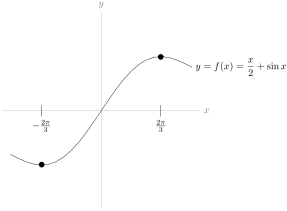
When we define the inverse function \(f^{-1}(x)\text{,}\) first we restrict \(f\) to \(\left[-\frac{2\pi}{3},\frac{2\pi}{3}\right]\text{.}\) Then the range of \(f^{-1}\) is also \(\left[-\frac{2\pi}{3},\frac{2\pi}{3}\right]\text{.}\) The domain of \(f^{-1}\) is the range of \(f\) over this interval, so \(\left[-\left(\frac{\pi}{3}+\frac{\sqrt{3}}{2}\right),\left(\frac{\pi}{3}+\frac{\sqrt{3}}{2}\right)\right]\text{.}\)
2.13.5.21.
Solution.
Define \(h(x)=f(x)-g(x)\text{,}\) and notice \(h(a)=f(a)-g(a) \lt 0\) and \(h(b)=f(b)-g(b) \gt 0\text{.}\) Since \(h\) is the difference of two functions that are continuous over \([a,b]\) and differentiable over \((a,b)\text{,}\) also \(h\) is continuous over \([a,b]\) and differentiable over \((a,b)\text{.}\) So, by the Mean Value Theorem, there exists some \(c \in (a,b)\) with
\begin{equation*}
h'(c)=\frac{h(b)-h(a)}{b-a}
\end{equation*}
Since \((a,b)\) is an interval, \(b \gt a\text{,}\) so the denominator of the above expression is positive; since \(h(b) \gt 0 \gt h(a)\text{,}\) also the numerator of the above expression is positive. So, \(h'(c) \gt 0\) for some \(c \in (a,b)\text{.}\) Since \(h'(c)=f'(c)-g'(c)\text{,}\) we conclude \(f'(c) \gt g'(c)\) for some \(c \in (a,b)\text{.}\)
2.13.5.22.
Solution.
Since \(f(x)\) is differentiable over all real numbers, it is also continuous over all real numbers. We claim that \(f(x)\) cannot have four or more distinct roots. For every two distinct roots \(a \lt b\text{,}\) Rolle’s Theorem tells us there is a \(c \in (a,b)\) such that \(f'(c)=0\text{:}\) that is, \(c\) is a root of \(f'\text{.}\) Since \(f'\) has only two distinct roots, \(f\) can have at most three distinct roots.
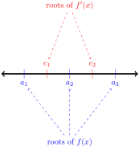
2.13.5.23.
Solution.
We are asked to find the number of solutions to the equation \(x^2+5x+1 = -\sin x\text{.}\) The figure below contains the graphs of \(y=x^2+5x+1\) and \(y=-\sin x\text{.}\) The solutions to \(x^2+5x+1 = -\sin x\) are precisely the \(x\)’s where \(y=x^2+5x+1\) and \(y=-\sin x\) cross.
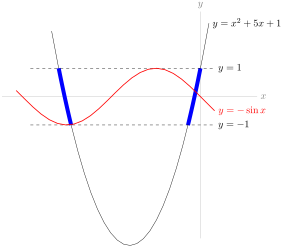
From the figure, it sure looks like there are two crossings. Since the function \(-\sin x\) has range \([-1,1]\text{,}\) if the two functions cross, then also \(-1 \leq x^2+5x+1\leq 1 \text{.}\) This portion of the quadratic function is highlighted in blue in the figure. The \(x\) coordinates of the end points of the blue arcs are found by solving \(x^2+5x+1 = \pm1\text{,}\) i.e. \(x=0\text{,}\) \(-5\text{,}\) and (using the quadratic equation) \(x= \frac{-5\pm\sqrt{17}}{2}\text{.}\)
We are now in a position to exploit the intuition that we have built using the above figure to write a concise argument showing that \(f(x)\) has exactly two roots. Remember that, in general, if we want to show that a function has \(n\) roots, we need to show that there exist \(n\) distinct roots somewhere, and that there do not exist \(n+1\) distinct roots. This argument is given below, in blue text.
-
\(f(x)\) is continuous over all real numbers
-
\(f(x)=0\) only when \(-\sin x=x^2+5x+1\text{,}\) which only happens when \(|x^2+5x+1| \leq 1\text{.}\) Thus, \(f(x)\) only has roots in the intervals \(\left[-5,\frac{-5-\sqrt{17}}{2}\right]\) and \(\left[\frac{-5+\sqrt{17}}{2},0\right]\text{.}\)
-
\(f(-5)=\sin(-5)+1 \gt 0\text{,}\) and \(f\left(\frac{-5-\sqrt{17}}{2}\right)=\sin\left(\frac{-5-\sqrt{17}}{2}\right)-1 \lt 0\text{.}\) So, by the IVT, \(f(c)=0\) for some \(c \in \left(-5,\frac{-5-\sqrt{17}}{2}\right)\text{.}\)
-
\(f(0)=1 \gt 0\text{,}\) and \(f\left(\frac{-5+\sqrt{17}}{2}\right)=\sin\left(\frac{-5+\sqrt{17}}{2}\right)-1 \lt 0\text{.}\) So, by the IVT, \(f(c)=0\) for some \(c \in \left(\frac{-5+\sqrt{17}}{2},0\right)\text{.}\)
-
\(f'(x)=\cos x + 2x + 5\text{.}\) If \(f'(x)=0\text{,}\) then \(2x+5=-\cos x\text{,}\) so \(|2x+5| \leq 1\text{.}\) So, the only interval that can contain roots of \(f'(x)\) is \([-3,-2]\text{.}\)
-
Suppose \(f(x)\) has more than two roots. Then it has two roots in the interval \(\left[-5,\frac{-5-\sqrt{17}}{2}\right]\) OR it has two roots in the interval \(\left[\frac{-5+\sqrt{17}}{2},0\right]\text{.}\) Since \(f(x)\) is differentiable for all real numbers, Rolle’s Theorem tells us that \(f'(x)\) has a root in \(\left(-5,\frac{-5-\sqrt{17}}{2}\right)\) or in \(\left(\frac{-5+\sqrt{17}}{2},0\right)\text{.}\) However, since all roots of \(f'(x)\) are in the interval \([-3,-2]\text{,}\) and this interval shares no points with \(\left(-5,\frac{-5-\sqrt{17}}{2}\right)\) or \(\left(\frac{-5+\sqrt{17}}{2},0\right)\text{,}\) this cannot be the case. Therefore \(f(x)\) does not have more than two roots.
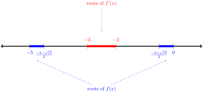
-
Since \(f(x)\) has at least two roots, and not more than two roots, \(f(x)\) has exactly two roots.
2.14 Higher Order Derivatives
2.14.2 Exercises
2.14.2.1.
2.14.2.2.
Solution.
Since \(f'(x) \gt 0\) over \((a,b)\text{,}\) we know from Corollary 2.13.12 that \(f(x)\) is increasing over \((a,b)\text{,}\) so 2.14.2.2.ii holds. Since \(f''(x) \gt 0\text{,}\) and \(f''(x)\) is the derivative of \(f'(x)\text{,}\) by the same reasoning we see that \(f'(x)\) is increasing. Since \(f'(x)\) is the rate at which \(f(x)\) is increasing, that means that the rate at which \(f'(x)\) is increasing is itself increasing: this is, 2.14.2.2.iv holds (and not 2.14.2.2.iii).
There is no reason to think 2.14.2.2.i or 2.14.2.2.v holds, but to be thorough we will give an example showing that they do not need to be true. If \(f(x)=x^2-10\) and \((a,b)=(0,1)\text{,}\) then \(f'(x)=2x \gt 0\) over \((0,1)\text{,}\) and \(f''(x)=2 \gt 0\) everywhere, but \(f(x) \lt 0\) for all \(x \in (0,1)\text{,}\) so 2.14.2.2.i does not hold. Also, \(f'''(x)=0\) everywhere, so 2.14.2.2.v does not hold either.
2.14.2.3.
Solution.
2.14.2.4.
Solution.
The derivative \(\ds\diff{y}{x}\) is \(\dfrac{11}{4}\) only at the point \((1,3)\text{:}\) it is not constantly \(\dfrac{11}{4}\text{,}\) so it is wrong to differentiate the constant \(\dfrac{11}{4}\) to find \(\ds\ddiff{2}{y}{x}\text{.}\) Below is a correct solution.
\begin{align*}
-28x+2y+2xy'+2yy'&=0\\
\end{align*}
Plugging in \(x=1\text{,}\) \(y=3\text{:}\)
\begin{align*}
-28+6+2y'+6y'&=0\\
y'&=\frac{11}{4} \quad\mbox{\textcolor{red}{ at the point $(1,3)$}}\\
\end{align*}
Differentiating the equation \(-28x+2y+2xy'+2yy'=0\):
\begin{align*}
-28+2y'+2y'+2xy''+2y'y'+2yy''&=0\\
4y'+2(y')^2+2xy''+2yy''&=28\\
\end{align*}
At the point \((1,3)\text{,}\) \(y'=\dfrac{11}{4}\text{.}\) Plugging in:
\begin{align*}
4\left(\frac{11}{4}\right)+2\left(\frac{11}{4}\right)^2+2(1)y''+2(3)y''&=28\\
y''&=\frac{15}{64}
\end{align*}
2.14.2.5.
2.14.2.6.
2.14.2.7.
Solution.
We use implicit differentiation, twice.
\begin{align*}
2x+2yy'&=0\\
2+(2y)y''+(2y')y'&=0\\
y''&=-\frac{(y')^2+1}{y}\\
\end{align*}
So, we need an expression for \(y'\text{.}\) We use the equation \(2x+2yy'=0\) to conclude \(y'=-\dfrac{x}{y}\text{:}\)
\begin{align*}
y''&=-\frac{\left(-\frac{x}{y}\right)^2+1}{y}\\
&=-\frac{\frac{x^2}{y^2}+1}{y}\\
&=-\frac{x^2+y^2}{y^3}\\
&=-\frac{1}{y^3}
\end{align*}
2.14.2.8.
Solution.
The question asks for \(s''(1)\text{.}\) We start our differentiation using the quotient rule:
\begin{align*}
s'(t)&=\frac{e^t(t^2+1)-e^t(2t)}{(t^2+1)^2}\\
&=\frac{e^t(t^2-2t+1)}{(t^2+1)^2}
\end{align*}
Using the quotient rule again,
\begin{align*}
\amp s''(t)=\frac{(t^2+1)^2{\textcolor{blue}{\diff{}{t}\{e^t(t^2-2t+1)\}}}-e^t(t^2-2t+1) {\textcolor{red}{\diff{}{t}\{(t^2+1)^2\}}}}{(t^2+1)^4}\\
&=\frac{(t^2\!+\!1)^2\cdot\left[{\textcolor{blue}{e^t(2t\!-\!2)+e^t(t^2\!-\!2\!+\!1)}}\right]-
e^t(t^2\!-\!2t\!+\!1) \cdot {\textcolor{red}{2(t^2\!+\!1)(2t)}}}{(t^2\!+\!1)^4}\\
&=\frac{e^t(t^2+1)^2(t^2-1)-4te^t(t-1)^2(t^2+1)}{(t^2+1)^4}
\end{align*}
so that
\begin{align*}
s''(1)&=0
\end{align*}
2.14.2.9.
Solution.
We differentiate using the chain rule.
\begin{align*}
\diff{}{x}\{\log(5x^2-12)\}&=\frac{10x}{5x^2-12}\\
\end{align*}
Using the quotient rule:
\begin{align*}
\ddiff{2}{}{x}\{\log(5x^2-12)\}&=\diff{}{x}\left\{\frac{10x}{5x^2-12}\right\}\\
&=\frac{(5x^2-12)(10)-10x(10x)}{(5x^2-12)^2}\\
&=\frac{-10(5x^2+12)}{(5x^2-12)^2}
\end{align*}
Using the quotient rule one last time:
\begin{align*}
\amp\ddiff{3}{}{x}\{\log(5x^2-12)\}=\diff{}{x}\left\{
\frac{-10(5x^2+12)}{(5x^2-12)^2}
\right\}\\
&\hskip0.25in=\frac{(5x^2-12)^2(-10)(10x)+10(5x^2+12)(2)(5x^2-12)(10x)}{(5x^2-12)^4}\\
&\hskip0.25in=\frac{(5x^2-12)(-100x)+(200x)(5x^2+12)}{(5x^2-12)^3}\\
&\hskip0.25in=\frac{100x(-5x^2+12+10x^2+24)}{(5x^2-12)^3}\\
&\hskip0.25in=\frac{100x(5x^2+36)}{(5x^2-12)^3}
\end{align*}
2.14.2.10.
Solution.
The velocity of the particle is given by \(h'(t)=\sin t\text{.}\) Note \(0 \lt 1 \lt \pi\text{,}\) so \(h'(1) \gt 0\)--the particle is rising (moving in the positive direction, in this case “up”). The acceleration of the particle is \(h''(t)=\cos t\text{.}\) Since \(0 \lt 1 \lt \frac{\pi}{2}\text{,}\) \(h''(t) \gt 0\text{,}\) so \(h'(t)\) is increasing: the particle is moving up, and it’s doing so at an increasing rate. So, the particle is speeding up.
2.14.2.11.
Solution.
For this problem, remember that velocity has a sign indicating direction, while speed does not.
The velocity of the particle is given by \(h'(t)=3t^2-2t-5\text{.}\) At \(t=1\text{,}\) the velocity of the particle is \(-4\text{,}\) so the particle is moving downwards with a speed of 4 units per second. The acceleration of the particle is \(h''(t)=6t-2\text{,}\) so when \(t=1\text{,}\) the acceleration is (positive) \(4\) units per second per second. That means the velocity (currently \(-4\) units per second) is becoming a bigger number--since the velocity is negative, a bigger number is closer to zero, so the speed of the particle is getting smaller. (For instance, a velocity of \(-3\) represents a slower motion than a velocity of \(-4\text{.}\)) So, the particle is slowing down at \(t=1\text{.}\)
2.14.2.12.
Solution.
\begin{align*}
x^2+x+y&=\sin(xy)\\
\end{align*}
We differentiate implicitly. For ease of notation, we write \(y'\) for \(\ds\diff{y}{x}\text{.}\)
\begin{align*}
2x+1+y'&=\cos(xy)(y+xy')\\
\end{align*}
We’re interested in \(y''\text{,}\) so we implicitly differentiate again.
\begin{align*}
2+y''&=-\sin(xy)(y+xy')^2+\cos(xy)(2y'+xy'')\\
\end{align*}
We want to know what \(y''\) is when \(x=y=0\text{.}\) Plugging these in yields the following:
\begin{align*}
2+y''&=2y'\\
\end{align*}
So, we need to know what \(y'\) is when \(x=y=0\text{.}\) We can get this from the equation \(2x+1+y'=\cos(xy)(y+xy')\text{,}\) which becomes \(1+y'=0\) when \(x=y=0\text{.}\) So, at the origin, \(y'=-1\text{,}\) and
\begin{align*}
2+y''&=2(-1)\\
y''&=-4
\end{align*}
Remark: a common mistake is to stop at the equation \(2x+1+y'=\cos(xy)(y+xy')\text{,}\) plug in \(x=y=0\text{,}\) find \(y'=-1\text{,}\) and decide \(y''=\ds\diff{}{x}\{-1\}=0\text{.}\) This is due to a slight sloppiness in the usual notation. When we wrote \(y'=1\text{,}\) what we meant is that at the point \((0,0)\text{,}\) \(\ds\diff{y}{x}=-1\text{.}\) More properly written: \(\left.\ds\diff{y}{x}\right|_{x=0, y=0}=-1\text{.}\) This is not the same as saying \(y'=1\) everywhere (in which case, indeed, \(y''\) would be 0 everywhere).
2.14.2.13.
Solution.
For (a) and (b), notice the following:
\begin{align*}
\diff{}{x} \sin x &= \cos x\\
\diff{}{x} \cos x &= -\sin x\\
\diff{}{x} \{-\sin x\} &= -\cos x\\
\diff{}{x} \{-\cos x\} &= \sin x\\
\diff{}{x} \sin x &= \cos x\\
\end{align*}
The fourth derivative is \(\sin x\) is \(\sin x\text{,}\) and the fourth derivative of \(\cos x\) is \(\cos x\text{,}\) so (a) and (b) are true.
\begin{align*}
\diff{}{x}\tan x &=\sec^2 x\\
\diff{}{x}\sec^2 x &=2\sec x (\sec x \tan x)=2\sec^2x\tan x\\
\diff{}{x}\{2\sec^2x\tan x\}&=(4\sec x \cdot \sec x \tan x)\tan x+2\sec^2x\sec^2x\\
&=4\sec^2x\tan^2x+2\sec^4x
\end{align*}
and
\begin{align*}
\amp\diff{}{x}\{4\sec^2x\tan^2x+2\sec^4x\}\\
\amp\hskip0.5in=(8\sec x \cdot \sec x \tan x)\tan^2x+4\sec^2x(2\tan x \cdot\sec^2x)\\
&\hskip2in+8\sec^3x\cdot\sec x \tan x\\
&\hskip0.5in=8\sec^2x\tan^3x+16\sec^4x\tan x
\end{align*}
So, \(\ds\ddiff{4}{}{x} \tan x =8\sec^2x\tan^3x+16\sec^4x\tan x\text{.}\) It certainly seems like this is not the same as \(\tan x\text{,}\) but remember that sometimes trig identities can fool you: \(\tan^2x+1=\sec^2x\text{,}\) and so on. So, to be absolutely sure that these are not equal, we need to find a value of \(x\) so that the output of one is not the same as the output of the other. When \(x=\frac{\pi}{4}\text{:}\)
\begin{align*}
8\sec^2x\tan^3x+16\sec^4x\tan x \amp= 8\left({\sqrt{2}}\right)^2(1)^3+16\left({\sqrt{2}}\right)^4(1)\\
\amp=80\neq 1=\tan x
\end{align*}
So, (c) is false.
2.14.2.14.
Solution.
Since \(f'(x) \lt 0\text{,}\) we need a decreasing function. This only applies to (ii), (iii), and (v). Since \(f''(x) \gt 0\text{,}\) that means \(f'(x)\) is increasing, so the slope of the function must be increasing. In (v), the slope is constant, so \(f''(x)=0\)--therefore, it’s not (v). In (iii), the slope is decreasing, because near \(a\) the curve is quite flat (\(f'(x)\) near zero) but near \(b\) the curve is very steeply decreasing (\(f'(x)\) is a large negative number), so (iii) has a negative second derivative. By contrast, in (ii), the line starts out as steeply decreasing (\(f'(x)\) is a strongly negative number) and becomes flatter and flatter (\(f'(x)\) nears 0), so \(f'(x)\) is increasing--in other words, \(f''(x) \gt 0\text{.}\) So, (ii) is the only curve that has \(f'(x) \lt 0\) and \(f''(x) \gt 0\text{.}\)
2.14.2.15.
Solution.
We differentiate a few time to find the pattern.
\begin{align*}
\diff{}{x}\{2^x\}&=2^x\log 2\\
\ddiff{2}{}{x}\{2^x\}&=2^x\log2 \cdot \log 2 = 2^x(\log2)^2\\
\ddiff{3}{}{x}\{2^x\}&=2^x(\log2)^2 \cdot \log 2 = 2^x(\log2)^3\\
\end{align*}
Every time we differentiate, we multiply the original function by another factor of \(\log 2\text{.}\) So, the \(n\)th derivative is given by:
\begin{align*}
\ddiff{n}{}{x}\{2^x\}&=2^x(\log2)^n
\end{align*}
2.14.2.16.
Solution.
We differentiate using the power rule.
\begin{align*}
\diff{f}{x}&=3ax^2+2bx+c\\
\ddiff{2}{f}{x}&=6ax+2b\\
\ddiff{3}{f}{x}&=6a\\
\ddiff{4}{f}{x}&=0
\end{align*}
In the above work, remember that \(a\text{,}\) \(b\text{,}\) \(c\text{,}\) and \(d\) are all constants. Since they are nonzero constants, \(\ds\ddiff{3}{f}{x} =6a\neq 0\text{.}\) So, the fourth derivative is the first derivative to be identically zero: \(n=4\text{.}\)
2.14.2.17. (✳).
Solution.
2.14.2.17.a Using the chain rule for \(f(x)\text{:}\)
\begin{align*}
f'(x)&=(1+2x)e^{x+x^2}\\
f''(x)&=(1+2x)(1+2x)e^{x+x^2}+(2)e^{x+x^2}=(4x^2+4x+3)e^{x+x^2}\\
h'(x)&=1+3x\\
h''(x)&=3
\end{align*}
-
2.14.2.17.c \(f\) and \(h\) “start at the same place”, since \(f(0)=h(0)\text{.}\) If it were clear that \(f'(x)\) were greater than \(h'(x)\) for \(x \gt 0\text{,}\) then we would know that \(f\) grows faster than \(h\text{,}\) so we could conclude that \(f(x) \gt h(x)\text{,}\) as desired. Unfortunately, it is not obvious whether \((1+2x)e^{x+x^2}\) is always greater than \(1+3x\) for positive \(x\text{.}\) So, we look to the second derivative. \(f'(0)=h'(0)\text{,}\) and \(f''(x)=(4x^2+4x+3)e^{x+x^2} \gt 3e^{x+x^2} \gt 3=h''(x)\) when \(x \gt 0\text{.}\) Since \(f'(0)=h'(0)\text{,}\) and since \(f'\) grows faster than \(h'\) for positive \(x\text{,}\) we conclude \(f'(x) \gt h'(x)\) for all positive \(x\text{.}\) Now we can conclude that (since \(f(0)=h(0)\) and \(f\) grows faster than \(h\) when \(x \gt 0\)) also \(f(x) \gt h(x)\) for all positive \(x\text{.}\)
2.14.2.18. (✳).
Solution.
-
We differentiate implicitly.\begin{align*} x^3y(x)+y(x)^3&=10 x\\ 3x^2y(x)+x^3y'(x)+3y(x)^2y'(x)&=10\\ \end{align*}Subbing in \(x=1\) and \(y(1)=2\) gives\begin{align*} (3)(1)( 2)+(1)y'(1)+(3)(4) y'(1)&=10\\ 13y'(1)&=4\\ y'(1)&=\frac{4}{13} \end{align*}
-
From part 2.14.2.18.a, the slope of the curve at \(x=1,\ y=2\) is \(\dfrac{4}{13}\text{,}\) so the curve is increasing, but fairly slowly. The angle of the tangent line is \(\tan^{-1}\left(\frac{4}{13}\right)\approx 17^\circ\text{.}\) We are also told that \(y''(1) \lt 0\text{.}\) So the slope of the curve is decreasing as \(x\) passes through 1. That is, the line is more steeply increasing to the left of \(x=1\text{,}\) and its slope is decreasing (getting less steep, then possibly the slope even becomes negative) as we move past \(x=1\text{.}\)

2.14.2.19.
Solution.
2.14.2.19.a Using the product rule,
\begin{align*}
g''(x)\amp=[f'(x)+f''(x)]e^x+[f(x)+f'(x)]e^x\\
\amp=[f(x)+2f'(x)+f''(x)]e^x
\end{align*}
2.14.2.19.b Using the product rule and our answer from 2.14.2.19.a,
\begin{align*}
g'''(x)&=[f'(x)+2f''(x)+f'''(x)]e^x+[f(x)+2f'(x)+f''(x)]e^x\\
&=[f(x)+3f'(x)+3f''(x)+f'''(x)]e^x
\end{align*}
2.14.2.19.c We notice that the coefficients of the derivatives of \(f\) correspond to the entries in the rows of Pascal’s Triangle.
-
In the first derivative of \(g\text{,}\) the coefficients of \(f\) and \(f'\) correspond to the entries in the second row of Pascal’s Triangle.
-
In the second derivative of \(g\text{,}\) the coefficients of \(f\text{,}\) \(f'\text{,}\) and \(f''\) correspond to the entries in the third row of Pascal’s Triangle.
-
In the third derivative of \(g\text{,}\) the coefficients of \(f\text{,}\) \(f'\text{,}\) \(f''\text{,}\) and \(f'''\) correspond to the entries in the fourth row of Pascal’s Triangle.
-
We guess that, in the fourth derivative of \(g\text{,}\) the coefficients of \(f\text{,}\) \(f'\text{,}\) \(f''\text{,}\) \(f'''\text{,}\) and \(f^{(4)}\) will correspond to the entries in the fifth row of Pascal’s Triangle.
That is, we guess
\begin{equation*}
g^{(4)}(x)=[f(x)+4f'(x)+6f''(x)+4f'''(x)+f^{(4)}(x)]e^x
\end{equation*}
This is verified by differentiating our answer from 2.14.2.19.a using the product rule:
\begin{align*}
g'''(x)&=[f(x)+3f'(x)+3f''(x)+f'''(x)]e^x\\
g^{(4)}(x)&=[f'(x)+3f''(x)+3f'''(x)+f^{(4)}(x)]e^x\\
\amp\hskip2in+[f(x)+3f'(x)+3f''(x)+f'''(x)]e^x\\
&=[f(x)+4f'(x)+6f''(x)+4f'''(x)+f^{(4)}(x)]e^x.
\end{align*}
2.14.2.20.
Solution.
Since \(f(x)\) is differentiable over all real numbers, it is also continuous over all real numbers. Similarly, \(f'(x)\) is differentiable over all real numbers, so it is also continuous over all real numbers, and so on for the first \(n\) derivatives of \(f(x)\text{.}\)
Rolle’s Theorem tells us that if \(a\) and \(b\) are distinct roots of a function \(g\text{,}\) then \(g'(x)=0\) for some \(c\) in \((a,b)\text{.}\) That is, \(g'\) has a root strictly between \(a\) and \(b\text{.}\) Expanding this idea, if \(g\) has \(m+1\) distinct roots, then \(g'\) must have at least \(m\) distinct roots, as in the sketch below.
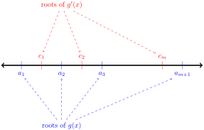
So, if \(f^{(n)}(x)\) has only \(m\) roots, then \(f^{(n-1)}(x)\) has at most \(m+1\) roots. Similarly, since \(f^{(n-1)}(x)\) has at most \(m+1\) roots, \(f^{(n-2)}(x)\) has at most \(m+2\) roots. Continuing in this way, we see \(f(x)=f^{(n-n)}(x)\) has at most \(m+n\) distinct roots.
2.14.2.21.
Solution.
-
Let’s begin by noticing that the domain of \(f(x)\) is \((-1,\infty)\text{.}\)
-
By inspection, \(f(0)=0\text{,}\) so \(f(x)\) has at least one root.
-
If \(x\in(-1,0)\text{,}\) then \((x+1)\) is positive, \(\log(x+1)\) is negative, \(\sin(x)\) is negative, and \(-x^2\) is negative. Therefore, if \(x \lt 0\) is in the domain of \(f\text{,}\) then \(f(x) \lt 0\text{.}\) So, \(f(x)\) has no negative roots. We focus our attention on the case \(x \gt 0\text{.}\)
-
\(f'(x)=1-2x+\log(x+1)+\cos x\text{.}\) We would like to know how many positive roots \(f'(x)\) has, but it isn’t obvious. So, let’s differentiate again.
-
\(f''(x)=-2+\frac{1}{x+1}-\sin x\text{.}\) When \(x \gt 0\text{,}\) \(\frac{1}{x+1} \lt 1\text{,}\) so \(f''(x) \lt -1-\sin(x) \leq 0\text{,}\) so \(f''(x)\) has no positive roots. Since \(f'(x)\) is continuous and differentiable over \((0,\infty)\text{,}\) and since \(f''(x) \neq 0\) for all \(x \in (0, \infty)\text{,}\) by Rolle’s Theorem, \(f'(x)\) has at most one root in \([0,\infty)\text{.}\)
-
Since \(f(x)\) is continuous and differentiable over \([0,\infty)\text{,}\) and \(f'(x)\) has at most one root in \((0,\infty)\text{,}\) by Rolle’s Theorem \(f(x)\) has at most two distinct roots in \([0,\infty)\text{.}\) (Otherwise, \(f(a)=f(b)=f(c)=0\) for some values \(0\le a \lt b \lt c\text{,}\) so \(f'(d)=f'(e)=0\) for some \(d\in(a,b)\) and some \(e \in (b,c)\text{,}\) but since \(f'(x)\) has at most one root, this is impossible.)
-
We know \(f(0)=0\text{,}\) so the remaining question is whether or not \(f(x)\) has a second root (which would have to be positive). As usual, we can show another root exists using the intermediate value theorem. We see that for large values of \(x\text{,}\) \(f(x)\) is negative, for example:\begin{equation*} f(4)=5\log 5+\sin(4)-(4)^2 \lt 5\log(e^2) + 1 -16 =11-16 \lt 0 \end{equation*}For positive values of \(x\) closer to zero, we hope to find a positive value of \(f(x)\text{.}\) However, it’s quite difficult to get a number \(c\) that obviously gives \(f(c) \gt 0\text{.}\) It suffices to observe that \(f(0)=0\) and \(f'(0)=2 \gt 0\text{.}\) From the definition of the derivative, we can conclude \(f(x) \gt 0\) for some \(x \gt 0\text{.}\) (If it is not true that \(f(x) \gt 0\) for some \(x \gt 0\text{,}\) then \(f(x)\le 0\) for all \(x \gt 0\text{.}\) The definition of the derivative tells us that [since \(f'(0)\) exists] \(f'(0)=\ds\lim_{h \to 0^+}\frac{f(h)-f(0)}{h}=\ds\lim_{h \to 0^+}\frac{f(h)}{h}\text{;}\) the denominator is positive, so if the numerator were always less than or equal to zero, the limit would be less than or equal to zero as well. However, the derivative is positive, so \(f(x) \gt 0\) for some \(x \gt 0\text{.}\)) Therefore, \(f(x)\) has a second root, so \(f(x)\) has precisely two roots.
2.14.2.22. (✳).
Solution.
2.14.2.22.a In order to make \(f(x)\) a little more tractable, let’s change the format. Since \(|x|=\left\{\begin{array}{rl}
x&x \geq 0\\
-x&x \lt 0
\end{array}\right.\text{,}\) then:
\begin{equation*}
f(x)=\left\{\begin{array}{rl}
-x^2&x \lt 0\\
x^2&x\ge 0.\end{array}
\right.
\end{equation*}
Now, we turn to the definition of the derivative to figure out whether \(f'(0)\) exists.
\begin{align*}
f'(0)&=\lim_{h \to 0} \frac{f(0+h)-f(0)}{h}=\lim_{h \to 0}\frac{f(h)-0}{h} =\lim_{h \to 0}\frac{f(h)}{h}\qquad\mbox{if it exists.}\\
\end{align*}
Since \(f\) looks different to the left and right of 0, in order to evaluate this limit, we look at the corresponding one-sided limits. Note that when \(h\) approaches 0 from the right, \(h \gt 0\) so \(f(h)=h^2\text{.}\) By contrast, when \(h\) approaches 0 from the left, \(h \lt 0\) so \(f(h)=-h^2\text{.}\)
\begin{align*}
&\;\; \lim_{h \to 0^+} \frac{f(h)}{h}=\lim_{h \to 0^+}\frac{h^2}{h}=\lim_{h \to 0^+}h=0\\
&\;\; \lim_{h \to 0^-} \frac{f(h)}{h}=\lim_{h \to 0^-}\frac{-h^2}{h}=\lim_{h \to 0^-}-h=0\\
\end{align*}
Since both one-sided limits exist and are equal to 0,
\begin{align*}
&\;\; \lim_{h \to 0} \frac{f(0+h)-f(0)}{h}=0
\end{align*}
and so \(f\) is differentiable at \(x=0\) and \(f'(0)=0\text{.}\)
\begin{equation*}
f(x)=\left\{\begin{array}{rl}
-x^2&x \lt 0\\
x^2&x\ge 0.\end{array}
\right.
\end{equation*}
So,
\begin{equation*}
f'(x)=\left\{\begin{array}{rl}
-2x&x \lt 0\\
2x&x\ge 0.\end{array}
\right.
\end{equation*}
Then, we know the second derivative of \(f\) everywhere except at \(x=0\text{:}\)
\begin{equation*}
f''(x)=\left\{\begin{array}{cc}
-2&x \lt 0\\
??&x=0\\
2&x \gt 0.\end{array}
\right.
\end{equation*}
So, whenever \(x \neq 0\text{,}\) \(f''(x)\) exists. To investigate the differentiability of \(f'(x)\) when \(x=0\text{,}\) again we turn to the definition of a derivative. If
\begin{align*}
&\lim_{h \to 0}\frac{f'(0+h)-f'(0)}{h}\\
\end{align*}
exists, then \(f''(0)\) exists.
\begin{align*}
\lim_{h \to 0}\frac{f'(0+h)-f'(0)}{h}&=\lim_{h \to 0} \frac{f'(h)-0}{h}=\lim_{h \to 0}\frac{f'(h)}{h}\\
\end{align*}
Since \(f(h)\) behaves differently when \(h\) is greater than or less than zero, we look at the one-sided limits.
\begin{align*}
\lim_{h \to 0^+}\frac{f'(h)}{h}&=\lim_{h \to 0^+}\frac{2h}{h}=2\\
\lim_{h \to 0^-}\frac{f'(h)}{h}&=\lim_{h \to 0^-}\frac{-2h}{h}=-2\\
\end{align*}
Since the one-sided limits do not agree,
\begin{align*}
\lim_{h \to 0}\frac{f'(0+h)-f'(0)}{h}&=DNE
\end{align*}
So, \(f''(0)\) does not exist. Now we have a complete picture of \(f''(x)\text{:}\)
\begin{equation*}
f''(x)=\left\{\begin{array}{ll}
-2&x \lt 0\\
DNE&x=0\\
2&x \gt 0.
\end{array}\right.
\end{equation*}
3 Applications of derivatives
3.1 Velocity and Acceleration
3.1.2 Exercises
3.1.2.1.
Solution.
False. The acceleration of the ball is given by \(h''(t)=-9.8\text{.}\) This is constant throughout its trajectory (and is due to gravity).
Remark: the velocity of the ball at \(t=2\) is zero, since \(h'(2)=-9.8(2)+19.6=0\text{,}\) but the velocity is only zero for an instant. Since the velocity is changing, the acceleration is nonzero.
3.1.2.2.
Solution.
The acceleration is constant, which means the rate of change of the velocity is constant. So, since it took 10 seconds for the velocity to increase by 1 metre per second (from \(1\;\frac{\mathrm{m}}{\mathrm{s}}\) to \(2\;\frac{\mathrm{m}}{\mathrm{s}}\)), then it always takes 10 seconds for the velocity to increase by 1 metre per second.
So, it takes 10 seconds to accelerate from \(2\;\frac{\mathrm{m}}{\mathrm{s}}\) to \(3\;\frac{\mathrm{m}}{\mathrm{s}}\text{.}\) To accelerate from \(3\;\frac{\mathrm{m}}{\mathrm{s}}\) to \(13\;\frac{\mathrm{m}}{\mathrm{s}}\) (that is, to change its velocity by 10 metres per second), it takes \(10\times 10=100\) seconds.
3.1.2.3.
Solution.
Let \(v(a) = s'(a)\) be the velocity of the particle. If \(s''(a) \gt 0\text{,}\) then \(v'(a) \gt 0\) — so the velocity of the particle is increasing. However, that does not mean that its speed (the absolute value of velocity) is increasing as well. For example, if a velocity is increasing from \(-4\) kph to \(-3\) kph, the speed is decreasing from \(4\) kph to \(3\) kph. So, the statement is false in general.
3.1.2.4.
Solution.
Since \(s'(a) \gt 0\text{,}\) \(|s'(a)|=s'(a)\text{:}\) that is, the speed and velocity of the particle are the same. (This means the particle is moving in the positive direction.) If \(s''(a) \gt 0\text{,}\) then the velocity (and hence speed) of the particle is increasing. So, the statement is true.
3.1.2.5.
Solution.
From Example 3.1.2, we know that an object falling from rest on the Earth is subject to the acceleration due to gravity, \(9.8\;\frac{\mathrm{m}}{\mathrm{s}^2}\text{.}\) So, if \(h(t)\) is the height of the flower pot \(t\) seconds after it rolls out the window, then \(h''(t)=-9.8\text{.}\) (We make the acceleration negative, since the measure “height” has “up” as the positive direction, while gravity pulls the pot in the negative direction, “down.”)
Then \(h'(t)\) is a function whose derivative is the constant \(-9.8\) and with \(h'(0)=0\) (since the object fell, instead of being thrown up or down), so \(h'(t)=-9.8t\text{.}\)
What we want to know is \(h'(t)\) at the time \(t\) when the pot hits the ground. We don’t know yet exactly what time that happens, so we go a little farther and find an expression for \(h(t)\text{.}\) The function \(h(t)\) has derivative \(-9.8t\) and \(h(0)=10\text{,}\) so (again following the ideas in Example 3.1.2)
\begin{equation*}
h(t)=\frac{-9.8}{2}t^2+10
\end{equation*}
Now, we can find the time when the pot hits the ground: it is the time when \(h(t)=0\) (and \(t \gt 0\)).
\begin{align*}
0&=\frac{-9.8}{2}t^2+10\\
\frac{9.8}{2}t^2&=10\\
t^2&=\frac{20}{9.8}\\
t&=+\sqrt{\frac{20}{9.8}}\approx1.4 \mathrm{sec}\\
\end{align*}
The velocity of the pot at this time is
\begin{align*}
h'\left(\sqrt{\frac{20}{9.8}}\right)&=-9.8\left(\sqrt{\frac{20}{9.8}}\right)=-\sqrt{20\cdot 9.8}
=-14 \frac{\mathrm{m}}{\mathrm{s}}
\end{align*}
So, the pot is falling at 14 metres per second, just as it hits the ground.
3.1.2.6.
Solution.
(a)
-
Let \(s(t)\) be the distance the stone has fallen \(t\) seconds after dropping it. Since the acceleration due to gravity is \(9.8\;\frac{\mathrm{m}}{\mathrm{s}^2}\text{,}\) \(s''(t)=9.8\text{.}\) (We don’t make this negative, because \(s(t)\) measures how far the stone has fallen, which means the positive direction in our coordinate system is “down”, which is exactly the way gravity is pulling.)
-
Then \(s'(t)\) has a constant derivative of 9.8, so \(s'(t)=9.8t+c\) for some constant \(c\text{.}\) Notice \(s'(0)=c\text{,}\) so \(c\) is the velocity of the stone at the very instant you dropped it, which is zero. Therefore, \(s'(t)=9.8t\text{.}\)
-
So, \(s(t)\) is a function with derivative \(9.8t\text{.}\) It’s not too hard to figure out by guessing and checking that \(s(t)=\frac{9.8}{2}t^2+d\) for some constant \(d\text{.}\) Notice \(s(0)=d\text{,}\) so \(d\) is the distance the rock has travelled at the instant you dropped it, which is zero. So, \(s(t)=\frac{9.8}{2}t^2=4.9t^2\text{.}\)Remark: this is exactly the formula found in Example 3.1.2. You may, in general, use that formula without proof, but you need to know where it comes from and be able to apply it in other circumstances where it might be slightly different--like part (b) below.
-
The rock falls for \(x\) seconds, so the distance fallen is\begin{equation*} 4.9x^2 \end{equation*}Remark: this is a decent (if imperfect) way to figure out how deep a well is, or how tall a cliff is, when you’re out and about. Drop a rock, square the time, multiply by 5.
(b) We’ll go through a similar process as before.
Again, let \(s(t)\) be the distance the rock has fallen \(t\) seconds after it is let go. Then \(s''(t)=9.8\text{,}\) so \(s'(t)=9.8t+c\text{.}\) In this case, since the initial speed of the rock is \(1\) metre per second, \(1=s'(0)=c\text{,}\) so \(s'(t)=9.8t+1\text{.}\)
Then, \(s(t)\) is a function whose derivative is \(9.8t+1\text{,}\) so \(s(t)=\frac{9.8}{2}t^2+t+d\) for some constant \(d\text{.}\) Since \(0=s(0)=d\text{,}\) we see \(s(t)=4.9t^2+t\text{.}\)
So, if the rock falls for \(x\) seconds, the distance fallen is
\begin{equation*}
4.9x^2+x
\end{equation*}
Remark: This means there is an error of \(x\) metres in your estimation of the depth of the well.
3.1.2.7.
Solution.
Let \(s(t)\) be the distance your keys have travelled since they left your hand. The rate at which they are travelling, \(s'(t)\text{,}\) is decreasing by 0.25 metres per second. That is, \(s''(t)=-0.25\text{.}\) Therefore, \(s'(t)=-0.25t+c\) for some constant \(c\text{.}\) Since \(c=s'(0)=2\text{,}\) we see
\begin{equation*}
s'(t)=2-0.25t
\end{equation*}
Then \(s(t)\) has \(2-0.25t\) as its derivative, so \(s(t)=2t-\frac{1}{8}t^2+d\) for some constant \(d\text{.}\) At time \(t=0\text{,}\) the keys have not yet gone anywhere, so \(0=s(0)=d\text{.}\) Therefore,
\begin{equation*}
s(t)=2t-\frac{1}{8}t^2
\end{equation*}
The keys reach your friend when \(s(t)=2\) and \(t \gt 0\text{.}\) That is:
\begin{align*}
2&=2t-\frac{1}{8}t^2\\
0&=\frac{1}{8}t^2-2t+2\\
t&=8\pm4\sqrt{3}
\end{align*}
We need to figure out which of these values of \(t\) is really the time when the keys reach your friend. The keys travel this way from \(t=0\) to the time they reach your friend. (Then \(s(t)\) no longer describes their motion.) So, we need to find the first value of \(t\) that is positive with \(s(t)=2\text{.}\) Since \(8-4\sqrt{3} \gt 0\text{,}\) this is the first time \(s(t)=2\) and \(t \gt 0\text{.}\) So, the keys take
\begin{equation*}
8-4\sqrt{3}\approx 1\; \mbox{second}
\end{equation*}
to reach your friend.
3.1.2.8.
Solution.
Let \(v(t)\) be the velocity (in kph) of the car at time \(t\text{,}\) where \(t\) is measured in hours and \(t=0\) is the instant the brakes are applied. Then \(v(0)=100\) and \(v'(t)=-50000\text{.}\) Since \(v'(t)\) is constant, \(v(t)\) is a line with slope \(-50000\) and intercept \((0,100)\text{,}\) so
\begin{equation*}
v(t)=100-50000t
\end{equation*}
The car comes to a complete stop when \(v(t)=0\text{,}\) which occurs at \(t=\frac{100}{50000}=\frac{1}{500}\) hours. This is a confusing measure, so we convert it to seconds:
\begin{equation*}
\left(\frac{1}{500}\;\mathrm{hrs}\right)\left(\frac{3600\;\mathrm{sec}}{1 \mathrm{hr}}\right)=7.2\;\mathrm{sec}
\end{equation*}
3.1.2.9.
Solution.
Suppose the deceleration provided by the brakes is \(d\;\frac{\mathrm{km}}{\mathrm{hr}^2}\text{.}\) Then if \(v(t)\) is the velocity of the car, \(v(t)=120-dt\) (at \(t=0\text{,}\) the velocity is 120, and it decreases by \(d\) kph per hour). The car stops when \(0=v(t)\text{,}\) so \(t=\frac{120}{d}\) hours.
Let \(s(t)\) be the distance the car has travelled \(t\) hours after applying the brakes. Then \(s'(t)=v(t)\text{,}\) so \(s(t)=120t-\frac{d}{2}t^2+c\) for some constant \(c\text{.}\) Since \(0=s(0)=c\text{,}\)
\begin{equation*}
s(t)=120t-\frac{d}{2}t^2
\end{equation*}
The car needs to stop in 100 metres, which is \(\frac{1}{10}\) kilometres. We already found that the stopping time is \(t=\frac{120}{d}\text{.}\) So:
\begin{align*}
\frac{1}{10}&=s\left(\frac{120}{d}\right)\\
\frac{1}{10}&=120\left(\frac{120}{d}\right)-\frac{d}{2}\left(\frac{120}{d}\right)^2\\
\end{align*}
Multiplying both sides by \(d\text{:}\)
\begin{align*}
\frac{d}{10}&=120^2-\frac{120^2}{2}\\
d&=5\cdot 120^2
\end{align*}
So, the brakes need to apply 72 000 kph per hour of deceleration.
3.1.2.10.
Solution.
Since your deceleration is constant, your speed decreases smoothly from 100 kph to 0 kph. So, one second before your stop, you only have \(\frac{1}{7}\) of our speed left: you’re going \(\frac{100}{7}\) kph.
A less direct way to solve this problem is to note that \(v(t)=100-dt\) is the velocity of car \(t\) hours after braking, if \(d\) is its deceleration. Since it stops in 7 seconds (or \(\frac{7}{3600}\) hours), \(0=v\left(\frac{7}{3600}\right)=100-\frac{7}{3600}d\text{,}\) so \(d=\frac{360000}{7}\text{.}\) Then
\begin{equation*}
v\left(\frac{6}{3600}\right) =100-\left(\frac{360000}{7}\right)\left(\frac{6}{3600}\right) =100-\frac{6}{7}\cdot100=\frac{100}{7}\;\mathrm{kph}
\end{equation*}
3.1.2.11.
Solution.
If the acceleration was constant, then it was
\begin{equation*}
\frac{17 500\;\mathrm{mph}}{\frac{8.5}{60}\;\mathrm{hr}} \approx 123 500 \;\frac{\mathrm{miles}}{\mathrm{hr}^2}
\end{equation*}
Therefore, the position of the shuttle \(t\) hours from liftoff (taking \(s(0)=0\) to be its initial position) is
\begin{equation*}
s(t)=\frac{123500}{2}t^2=61750t^2
\end{equation*}
So, after \(\frac{8.5}{60}\) hours, the shuttle has travelled
\begin{equation*}
s\left(\frac{8.5}{60}\right)=(61750)\left(\frac{8.5}{60}\right)^2\approx 1240 \;\mathrm{miles}
\end{equation*}
or a little less than 2000 kilometres.
3.1.2.12.
Solution.
We know that the acceleration of the ball will be constant. If the height of the ball is given by \(h(t)\) while it is in the air, \(h''(t)=-9.8\text{.}\) (The negative indicates that the velocity is decreasing: the ball starts at its largest velocity, moving in the positive direction, then the velocity decreases to zero and then to a negative number as the ball falls.) As in Example 3.1.2, we need a function \(h(t)\) with \(h''(t)=-9.8\text{.}\) Since this is a constant, \(h'(t)\) is a line with slope \(-9.8\text{,}\) so it has the form
\begin{equation*}
h'(t)=-9.8t+a
\end{equation*}
for some constant \(a\text{.}\) Notice when \(t=0\text{,}\) \(h'(0)=a\text{,}\) so in fact \(a\) is the initial velocity of the ball--the quantity we want to solve for.
Again, as in Example 3.1.2, we need a function \(h(t)\) with \(h'(t)=-9.8t+a\text{.}\) Such a function must have the form
\begin{equation*}
h(t)=-4.9t^2+at+b
\end{equation*}
for some constant \(b\text{.}\) You can find this by guessing and checking, or simply remember it from the text. (In Section 4.1, you’ll learn more about figuring out which functions have a particular derivative.) Notice when \(t=0\text{,}\) \(h(0)=b\text{,}\) so \(b\) is the initial height of the baseball, which is 0.
So, \(h(t)=-4.9t^2+at = t(-4.9t+a)\text{.}\) The baseball is at height zero when it is pitched (\(t=0\)) and when it hits the ground (which we want to be \(t=10\)). So, we want \((-4.9)(10)+a=0\text{.}\) That is, \(a=49\text{.}\) So, the initial pitch should be at \(49\) metres per second.
Incidentally, this is on par with the fastest pitch in baseball, as recorded by Guiness World Records:
https://www.guinnessworldrecords.com/world-records/fastest-baseball-pitch-(male)
3.1.2.13.
Solution.
The acceleration of a falling object due to gravity is \(9.8\) metres per second squared. So, the object’s velocity \(t\) seconds after being dropped is
\begin{equation*}
v(t)=9.8t\;\frac{\mathrm{m}}{\mathrm{s}}
\end{equation*}
We want \(v(t)\) to be the speed of the peregrine’s dive, so we should convert that to metres per second:
\begin{equation*}
325\;\frac{\mathrm{km}}{\mathrm{hr}}\cdot
\left(\frac{1000\;\mathrm{m}}{1\;\mathrm{km}}\right)\left(\frac{1\;\mathrm{hr}}{3600\;\mathrm{sec}}\right)=\frac{1625}{18}\;\frac{\mathrm{m}}{\mathrm{s}}
\end{equation*}
The stone will reach this velocity when
\begin{equation*}
9.8t=\frac{1625}{18}\qquad\Rightarrow\qquad t=\frac{1625}{18(9.8)}
\end{equation*}
What is left to figure out is how far the stone will fall in this time. The position of the stone \(s(t)\) has derivative \(9.8t\text{,}\) so
\begin{equation*}
s(t)=4.9t^2
\end{equation*}
if we take \(s(0)=0\text{.}\) So, if the stone falls for \(\frac{1625}{18(9.8)}\) seconds, in that time it travels
\begin{equation*}
s\left(\frac{1625}{18(9.8)}\right)=4.9\left(\frac{1625}{18(9.8)}\right)^2\approx 416 \;\mathrm{m}
\end{equation*}
So, you would have to drop a stone from about 416 metres for it to fall as fast as the falcon.
3.1.2.14.
Solution.
Since gravity alone brings your cannon ball down, its acceleration is a constant \(-9.8\;\frac{\mathrm{m}}{\mathrm{s}^2}\text{.}\) So, \(v(t)=v_0-9.8t\) and thus its height is given by \(s(t)=v_0t-4.9t^2\) (if we set \(s(0)=0\)).
We want to know what value of \(v_0\) makes the maximum height 100 metres. The maximum height is reached when \(v(t)=0\text{,}\) which is at time \(t=\frac{v_0}{9.8}\text{.}\) So, we solve:
\begin{align*}
100&=s\left(\frac{v_0}{9.8}\right)\\
100&=v_0\left(\frac{v_0}{9.8}\right)-4.9\left(\frac{v_0}{9.8}\right)^2\\
100&=\left(\frac{1}{9.8}-\frac{4.9}{9.8^2}\right)v_0^2\\
100&=\frac{1}{2\cdot 9.8}v_0^2\\
v_0^2&=1960\\
v_0&=\sqrt{1960}\approx 44\;\frac{\mathrm{m}}{\mathrm{s}}
\end{align*}
where we choose the positive square root because \(v_0\) must be positive for the cannon ball to get off the ground.
3.1.2.15.
Solution.
The derivative of acceleration is constant, so the acceleration \(a(t)\) has the form \(mt+b\text{.}\) We know \(a(0)=-50000\) and \(a\left(\frac{3}{3600}\right)=-60000\) (where we note that \(3\) seconds is \(\frac{3}{3600}\) hours). So, the slope of \(a(t)\) is \(\frac{-60000+50000}{\frac{3}{3600}}=-12000000\text{,}\) which leads us to
\begin{equation*}
a(t)=-50000-(12000000)t
\end{equation*}
where \(t\) is measured in hours.
Since \(v'(t)=a(t)=-50000-(12000000)t\text{,}\) we see
\begin{equation*}
v(t)=\frac{-12000000}{2}t^2-50000t+c=-6000000t^2-50000t+c
\end{equation*}
for some constant \(c\text{.}\) Since \(120=v(0)=c\text{:}\)
\begin{equation*}
v(t)=-6000000t^2-50000t+120
\end{equation*}
Then after three seconds of braking,
\begin{align*}
v\left(\frac{3}{3600}\right)
&=-6000000\left(\frac{3}{3600}\right)^2-50000\left(\frac{3}{3600}\right)+120\\
&=-\frac{25}{6}-\frac{125}{3}+120\\
&\approx 74.2 \mbox{ kph}
\end{align*}
Remark: When acceleration is constant, the position function is a quadratic function, but we don’t want you to get the idea that position functions are always quadratic functions--in the example you just did, it was the velocity function that was quadratic. Position, velocity, and acceleration functions don’t have to be polynomial at all--it’s only in this section, where we’re dealing with the simplest cases, that they seem that way.
3.1.2.16.
Solution.
Different forces are acting on you (1) after you jump but before you land on the trampoline, and (2) while you are falling into the trampoline. In both instances, the acceleration is constant, so both height functions are quadratic, of the form \(\frac{a}{2}t^2+vt+h\text{,}\) where \(a\) is the acceleration, \(v\) is the velocity when \(t=0\text{,}\) and \(h\) is the initial height.
-
Let’s consider (1) first, the time during your jump before your feet touch the trampoline. Let \(t=0\) be the moment you jump, and let the rim of the trampoline be height \(0\text{.}\) Then, since your initial velocity was (positive) \(1\) meter per second, your height is given by\begin{equation*} h_1(t)=\frac{-9.8}{2}t^2+t=t\left(\frac{-9.8}{2}t+1\right) \end{equation*}Notice that, because your acceleration is working against your positive velocity, it has a negative sign.
-
We’ll need to know your velocity when your feet first touch the trampoline on your fall. The time your feet first first touch the trampoline after your jump is precisely when \(h_1(t)=0\) and \(t \gt 0\text{.}\) That is, when \(t=\frac{2}{9.8}\text{.}\) Now, since \(h'(t)=-9.8t+1\text{,}\) \(h'\left(\frac{2}{9.8}\right)=-9.8\left(\frac{2}{9.8}\right)+1=-1\text{.}\) So, you are descending at a rate of 1 metre per second at the instant your feet touch the trampoline.Remark: it is not only coincidence that this was your initial speed. Think about the symmetries of parabolas, and conservation of energy.
-
Now we need to think about your height as the trampoline is slowing your fall. One thing to remember about our general equation \(\frac{a}{2}t^2+vt+h\) is that \(v\) is the velocity when \(t=0\text{.}\) But, you don’t hit the trampoline at \(t=0\text{,}\) you hit it at \(t=\frac{2}{9.8}\text{.}\) In order to keep things simple, let’s use a different time scale for this second part of your journey. Let’s let \(h_2(T)\) be your height at time \(T\text{,}\) from the moment your feet touch the trampoline skin (\(T=0\)) to the bottom of your fall. Now, we can use the fact that your initial velocity is \(-1\) metres per second (negative, since your height is decreasing) and your acceleration is \(4.9\) metres per second per second (positive, since your velocity is increasing from a negative number to zero):\begin{equation*} h_2(T)=\frac{4.9}{2}T^2-T \end{equation*}where still the height of the rim of the trampoline is taken to be zero.Remark: if it seems very confusing that your free-falling acceleration is negative, while your acceleration in the trampoline is positive, remember that gravity is pushing you down, but the trampoline is pushing you up.
-
How long were you falling in the trampoline? The equation \(h_2(T)\) tells you your height only as long as the trampoline is slowing your fall. You reach the bottom of your fall when your velocity is zero.\begin{equation*} h_2'(T)=4.9T-1 \end{equation*}so you reach the bottom of your fall at \(T=\frac{1}{4.9}\text{.}\) Be careful: this is \(\frac{1}{4.9}\) seconds after you entered the trampoline, not after the peak of your fall, or after you jumped.
-
The last piece of the puzzle is how long it took you to fall from the peak of your jump to the surface of the trampoline. We know the equation of your motion during that time: \(h_1(t)=\frac{-9.8}{2}t^2+t\text{.}\) You reached the peak when your velocity was zero:\begin{equation*} h_1'(t)=-9.8t+1 =0\qquad\Rightarrow\qquad t=\frac{1}{9.8} \end{equation*}So, you fell from your peak at \(t=\frac{1}{9.8}\) and reached the level of the trampoline rim at \(t=\frac{2}{1.98}\text{,}\) which means the fall took \(\frac{1}{9.8}\) seconds.Remark: by the symmetry mentioned early, the time it took to fall from the peak of your jump to the surface of the trampoline is the same as one-half the time from the moment you jumped off the rim to the moment you’re back on the surface of the trampoline.
-
So, your time falling from the peak of your jump to its bottom was \(\frac{1}{9.8}+\frac{1}{4.9}\approx 0.3\) seconds.
3.1.2.17.
Solution.
Let \(v(t)\) be the velocity of the object. From the given information:
-
\(v(0)\) is some value, call it \(v_0\text{,}\)
-
\(v(1)=2v_0\) (since the speed doubled in the first second),
-
\(v(2)=2(2)v_0\) (since the speed doubled in the second second),
-
\(v(3)=2(2)(2)v_0\text{,}\) and so on.
So, for general \(t\text{:}\)
\begin{equation*}
v(t)=2^tv(0)
\end{equation*}
To find its acceleration, we simply differentiate. Recall \(\ds\diff{}{x}\{2^x\}=2^x\log 2\text{,}\) where \(\log\) denotes logarithm base \(e\text{.}\)
\begin{equation*}
a(t)=2^tv_0\log 2
\end{equation*}
Remark: we can also write \(a(t)=v(t)\log 2\text{.}\) The acceleration doubles every second as well.
3.2 Related Rates
3.2.2 Exercises
3.2.2.1.
Solution.
We have an equation relating \(P\) and \(Q\text{:}\)
\begin{align*}
P&=Q^3\\
\end{align*}
We differentiate implicitly with respect to a third variable, \(t\text{:}\)
\begin{align*}
\diff{P}{t}&=3Q^2\cdot\diff{Q}{t}
\end{align*}
If we know two of the three quantities \(\ds\diff{P}{t}\text{,}\) \(Q\text{,}\) and \(\ds\diff{Q}{t}\text{,}\) then we can find the third. Therefore, ii is a question we can solve. If we know \(P\text{,}\) then we also know \(Q\) (it’s just the cube root of \(P\)), so also we can solve iv. However, if we know neither \(P\) nor \(Q\text{,}\) then we can’t find \(\ds\diff{P}{t}\) based only off \(\ds\diff{Q}{t}\text{,}\) and we can’t find \(\ds\diff{Q}{t}\) based only off \(\ds\diff{P}{t}\text{.}\) So we can’t solve i or iii.
3.2.2.2. (✳).
Solution.
Suppose that at time \(t\text{,}\) the point is at \(\big(x(t),y(t)\big)\text{.}\) Then \(x(t)^2+y(t)^2=1\) so that \(2x(t)x'(t)+2y(t)y'(t)=0\text{.}\) We are told that at some time \(t_0\text{,}\) \(x(t_0)=2/\sqrt{5}\text{,}\) \(y(t_0)=1/\sqrt{5}\) and \(y'(t_0)=3\text{.}\) Then
\begin{align*}
2x(t_0)x'(t_0)+2y(t_0)y'(t_0)&=0 \qquad \Rightarrow\\
2\left(\frac{2}{\sqrt{5}}\right)x'(t)+2\left(\frac{1}{\sqrt5}\right)(3)&=0
\qquad \Rightarrow\\
x'(t_0)&=-\frac{3}{2}
\end{align*}
3.2.2.3. (✳).
3.2.2.4. (✳).
Solution.
3.2.2.4.a By the quotient rule, \(F'=\dfrac{P'Q-PQ'}{Q^2}\text{.}\) At the moment in question, \(F'=\dfrac{5\times5-25\times 1}{5^2}=0.\)
\(\big(\)or equivalently \(100\frac{P'}{P}=10\) and \(100\frac{Q'}{Q}=-5\big)\text{.}\) Substituting in these values:
\begin{align*}
F'&=\frac{P'Q-PQ'}{Q^2}\\
&=\frac{0.1PQ-P(-0.05Q)}{Q^2}\\
&=\frac{0.15PQ}{Q^2}\\
&=0.15\frac{P}{Q}\\
&=0.15 F\\
\implies\qquad F'&=0.15F
\end{align*}
or \(100\frac{F'}{F}=15\%\text{.}\) That is, the instantaneous percentage rate of change of \(F\) is 15%.
3.2.2.5. (✳).
Solution.
-
The distance \(z(t)\) between the particles at any moment in time is\begin{align*} z^2(t)&= x(t)^2+y(t)^2, \end{align*}where \(x(t)\) is the position on the \(x\)-axis of the particle A at time \(t\) (measured in seconds) and \(y(t)\) is the position on the \(y\)-axis of the particle B at the same time \(t\text{.}\)
-
We differentiate the above equation with respect to \(t\) and get\begin{align*} 2z \cdot z' &= 2x \cdot x' + 2 y \cdot y', \end{align*}
-
We are told that \(x'=-2\) and \(y'=-3\text{.}\) (The values are negative because \(x\) and \(y\) are decreasing.) It will take \(3\) seconds for particle \(A\) to reach \(x=4\text{,}\) and in this time particle \(B\) will reach \(y=3\text{.}\)
-
At this point \(z = \sqrt{x^2+y^2}=\sqrt{3^2+4^2}=5\text{.}\)
-
Hence\begin{align*} 10z' &= 8\cdot(-2)+6\cdot(-3) = -34\\ z' &= -\frac{34}{10} = -\frac{17}{5} \text{ units per second}. \end{align*}
3.2.2.6. (✳).
Solution.
-
We compute the distance \(z(t)\) between the two particles after \(t\) seconds as\begin{align*} z^2(t)&= 3^2 + (y_A(t)-y_B(t))^2, \end{align*}where \(y_A(t)\) and \(y_B(t)\) are the \(y\)-coordinates of particles \(A\) and \(B\) after \(t\) seconds, and the horizontal distance between the two particles is always 3 units.
-
We are told the distance between the particles is 5 units, this happens when\begin{align*} (y_A-y_B)^2 &= 5^2-3^2 = 16\\ y_A-y_B&=4 \end{align*}That is, when the difference in \(y\)-coordinates is \(4\text{.}\) This happens when \(t=4\text{.}\)
-
We differentiate the distance equation (from the first bullet point) with respect to \(t\) and get\begin{align*} 2z \cdot z' &= 2 ({y_A}' - {y_B}') (y_A - y_B), \end{align*}
-
We know that \((y_A-y_B)=4\text{,}\) and we are told that \(z=5\text{,}\) \(y_A'=3\text{,}\) and \(y_B'=2\text{.}\) Hence\begin{align*} 10z'(4) &= 2 \times1\times4 = 8 \end{align*}
-
Therefore\begin{align*} z'(4) &= \frac{8}{10} = \frac{4}{5} \text{ units per second}. \end{align*}
3.2.2.7. (✳).
Solution.
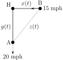
As in the above figure, let \(x(t)\) be the distance between H (Hawaii) and ship B, and \(y(t)\) be the distance between H and ship A, and \(z(t)\) be the distance between ships A and B, all at time \(t\text{.}\) Then
\begin{align*}
x(t)^2+y(t)^2&=z(t)^2\\
\end{align*}
Differentiating with respect to \(t\text{,}\)
\begin{align*}
2x(t)x'(t)+2y(t)y'(t)&=2z(t)z'(t)\\
x(t)x'(t)+y(t)y'(t)&=z(t)z'(t)\\
\end{align*}
At the specified time, \(x(t)\) is decreasing, so \(x'(t)\) is negative, and \(y(t)\) is increasing, so \(y'(t)\) is positive.
\begin{align*}
(300)(-15)+(400)(20) &= \sqrt{300^2+400^2}z'(t)\\
500 z'(t)&=3500\\
z'(t)&=7 \mbox{ mph}
\end{align*}
3.2.2.8. (✳).
Solution.
-
We compute the distance \(d(t)\) between the two snails after \(t\) minutes as\begin{align*} d^2(t)&= 30^2 + (y_1(t)-y_2(t))^2, \end{align*}where \(y_1(t)\) is the altitude of the first snail, and \(y_2(t)\) the altitude of the second snail after \(t\) minutes.
-
We differentiate the above equation with respect to \(t\) and get\begin{align*} 2d \cdot d' &= 2 ({y_1}' - {y_2}') (y_1 - y_2)\\ d \cdot d' &= ({y_1}' - {y_2}') (y_1 - y_2) \end{align*}
-
We are told that \({y_1}'=25\) and \({y_2}'=15\text{.}\) It will take \(4\) minutes for the first snail to reach \(y_1=100\text{,}\) and in this time the second snail will reach \(y_2=60\text{.}\)
-
At this point \(d^2 = 30^2 + (100-60)^2 = 900 + 1600 = 2500\text{,}\) hence \(d = 50\text{.}\)
-
Therefore\begin{align*} 50 d' &= (25 - 15) \times (100 - 60)\\ d' &= \frac{400}{50} = 8 \text{ cm per minute}. \end{align*}
3.2.2.9. (✳).
Solution.
-
If we write \(z(t)\) for the length of the ladder at time \(t\) and \(y(t)\) for the height of the top end of the ladder at time \(t\) we have\begin{equation*} z(t)^2 = 5^2 + y(t)^2. \end{equation*}
-
We differentiate the above equation with respect to \(t\) and get\begin{align*} 2z \cdot z' &= 2y \cdot y', \end{align*}
-
We are told that \(z'(t)=-2\text{,}\) so \(z(3.5)=20-3.5\cdot2 = 13\text{.}\)
-
At this point \(y = \sqrt{z^2-5^2} = \sqrt{169-25} = \sqrt{144} = 12\text{.}\)
-
Hence\begin{align*} 2\cdot 13 \cdot (-2) &= 2 \cdot 12 y'\\ y' &= -\frac{2\cdot 13}{12} = -\frac{13}{6} \text{ meters per second}. \end{align*}
3.2.2.10.
Solution.
What we’re given is \(\ds\diff{V}{t}\) (where \(V\) is volume of water in the trough, and \(t\) is time), and what we are asked for is \(\ds\diff{h}{t}\) (where \(h\) is the height of the water). So, we need an equation relating \(V\) and \(h\text{.}\) First, let’s get everything in the same units: centimetres.
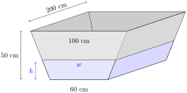
We can calculate the volume of water in the trough by multiplying the area of its trapezoidal cross section by 200 cm. A trapezoid with height \(h\) and bases \(b_1\) and \(b_2\) has area \(h\left(\frac{b_1+b_2}{2}\right)\text{.}\) (To see why this is so, draw the trapezoid as a rectangle flanked by two triangles.) So, using \(w\) as the width of the top of the water (as in the diagram above), the area of the cross section of the water in the trough is
\begin{equation*}
A=h\left(\frac{60+w}{2}\right)
\end{equation*}
and therefore the volume of water in the trough is
\begin{equation*}
V=100h(60+w)\;\text{cm}^3.
\end{equation*}
We need a formula for \(w\) in terms of \(h\text{.}\) If we draw lines straight up from the bottom corners of the trapezoid, we break it into rectangles and triangles.
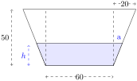
Using similar triangles, \(\dfrac{a}{h}=\dfrac{20}{50}\text{,}\) so \(a=\dfrac{2}{5}h\text{.}\) Then
\begin{align*}
w&=60+2a\\
&=60+2\left(\frac{2}{5}h\right)=60+\frac{4}{5}h\\
\end{align*}
so
\begin{align*}
V&=100h(60+w)\\
&=100h(120+\frac{4}{5}h)\\
&=80h^2+12000h\\
\end{align*}
This is the equation we need, relating \(V\) and \(h\text{.}\) Differentiating implicitly with respect to \(t\text{:}\)
\begin{align*}
\diff{V}{t}
&=2\cdot80h\cdot\diff{h}{t}+12000\diff{h}{t}\\
&=\left(160h+12000\right)\diff{h}{t}\\
\end{align*}
We are given that \(h=25\) and \(\ds\diff{V}{t}=3\) litres per minute. Converting to cubic centimetres, \(\ds\diff{V}{t} = -3000\) cubic centimetres per minute. So:
\begin{align*}
-3000&=\left(160\cdot25+12000\right)\diff{h}{t}\\
\diff{h}{t}&=-\frac{3}{16}=-.1875\;\frac{\mathrm{cm}}{\mathrm{min}}
\end{align*}
So, the water level is dropping at \(\dfrac{3}{16}\) centimetres per minute.
3.2.2.11.
Solution.
If \(V\) is the volume of the water in the tank, and \(t\) is time, then we are given \(\ds\diff{V}{t}\text{.}\) What we want to know is \(\ds\diff{h}{t}\text{,}\) where \(h\) is the height of the water in the tank. A reasonable plan is to find an equation relating \(V\) and \(h\text{,}\) and differentiate it implicitly with respect to \(t\text{.}\)
Let’s be a little careful about units. The volume of water in the tank is
\begin{equation*}
\text{(area of cross section of water)$\times$(length of tank)}
\end{equation*}
If we measure these values in metres (area in square metres, length in metres), then the volume is going to be in cubic metres. So, when we differentiate with respect to time, our units will be cubic metres per second. The water is flowing in at one litre per second, or \(1000\) cubic centimetres per second. So, we either have to measure our areas and distances in centimetres, or convert litres to cubic metres. We’ll do the latter, but both are fine.
If we imagine one cubic metre as a cube, with each side of length 1 metre, then it’s easy to see the volume inside is \((100)^3=10^6\) cubic centimetres: it’s the volume of a cube with each side of length 100 cm. Since a litre is \(10^3\) cubic centimetres, and a cubic metre is \(10^{6}\) cubic centimetres, one litre is \(10^{-3}\) cubic metres. So, \(\textcolor{red}{\ds\diff{V}{t}=\frac{1}{10^3}}\) cubic metres per second.
Let \(h\) be the height of the water (in metres). We can figure out the area of the cross section by breaking it into three pieces: a triangle on the left, a rectangle in the middle, and a trapezoid on the right.
-
The triangle on the left has height \(h\) metres. Let its base be \(a\) metres. It forms a similar triangle with the triangle whose height is 1.25 metres and width is 1 metre, so:\begin{align*} \frac{a}{h}&=\frac{1}{1.25}\\ a&=\frac{4}{5}h\\ \end{align*}So, the area of the triangle on the left is\begin{align*} \frac{1}{2}ah&=\frac{2}{5}h^2 \end{align*}
-
The rectangle in the middle has length 3 metres and height \(h\) metres, so its area is \(3h\) square metres.
-
The trapezoid on the right is a portion of a triangle with base 3 metres and height 1.25 metres. So, its area is\begin{align*} &\underbrace{\left(\frac{1}{2}(3)(1.25)\right) }_{\mbox{area of big triangle}}- \underbrace{\left(\frac{1}{2}(b)(1.25-h)\right)}_{\mbox{area of little triangle}}\\ \end{align*}The little triangle (of base \(b\) and height \(1.25-h\)) is formed by the air on the right side of the tank. It is a similar triangle to the triangle of base 3 and height 1.25, so\begin{align*} \frac{b}{1.25-h}&=\frac{3}{1.25}\\ b&=\frac{3}{1.25}(1.25-h)\\ \end{align*}So, the area of the trapezoid on the right is\begin{align*} &\frac{1}{2}(3)(1.25)-\frac{1}{2}\left(\frac{3}{1.25}\right)\left(1.25-h\right)(1.25-h)\\ &=3h-\frac{6}{5}h^2 \end{align*}
So, the area \(A\) of the cross section of the water is
\begin{align*}
A&=\underbrace{\frac{2}{5}h^2}_{\mbox{triangle}}+
\underbrace{3h}_{\mbox{rectangle}}+
\underbrace{3h-\frac{6}{5}h^2}_{\mbox{trapezoid}}\\
&=6h-\frac{4}{5}h^2\\
\end{align*}
So, the volume of water is
\begin{align*}
V&=5\left(6h-\frac{4}{5}h^2\right)=30h-4h^2\\
\end{align*}
Differentiating with respect to time, \(t\text{:}\)
\begin{align*}
\diff{V}{t}&=30\diff{h}{t}-8h\diff{h}{t}\\
\end{align*}
When \(h=\dfrac{1}{10}\) metre, and \(\ds\diff{V}{t}=\frac{1}{10^3}\) cubic metres per second,
\begin{align*}
\frac{1}{10^3}&=30\diff{h}{t}-8\left(\frac{1}{10}\right)\diff{h}{t}\\
\diff{h}{t}&=\frac{1}{29200} \mbox{ metres per second}
\end{align*}
This is about 1 centimetre every five minutes. You might want a bigger hose.
3.2.2.12.
Solution.
Let \(\theta\) be the angle of your head, where \(\theta=0\) means you are looking straight ahead, and \(\theta=\dfrac{\pi}{2}\) means you are looking straight up. We are interested in \(\ds\diff{\theta}{t}\text{,}\) but we only have information about \(h\text{.}\) So, a reasonable plan is to find an equation relating \(h\) and \(\theta\text{,}\) and differentiate with respect to time.
The right triangle formed by you, the rocket, and the rocket’s original position has adjacent side (to \(\theta\)) length 2km, and opposite side (to \(\theta\)) length \(h(t)\) kilometres, so
\begin{align*}
\tan\theta&=\frac{h}{2}\\
\end{align*}
Differentiating with respect to \(t\text{:}\)
\begin{align*}
\sec^2\theta \cdot \diff{\theta}{t}&=\frac{1}{2}\diff{h}{t}\\
\diff{\theta}{t}&=\frac{1}{2}\cos^2\theta\cdot\diff{h}{t}
\end{align*}
We know \(\tan\theta= \frac{h}{2}\text{.}\) We draw a right triangle with angle \(\theta\) (filling in the sides using SOH CAH TOA and the Pythagorean theorem) to figure out \(\cos\theta\text{:}\)
Using the triangle, \(\cos\theta = \dfrac{2}{\sqrt{h^2+4}}\text{,}\) so
\begin{align*}
\diff{\theta}{t}&=\frac{1}{2}\left(\frac{2}{\sqrt{h^2+4}}\right)^2\cdot\diff{h}{t}\\
&=\left(\frac{2}{h^2+4}\right)\diff{h}{t}\\
\end{align*}
So, the quantities we need to know one minute after liftoff (that is, when \(t = \dfrac{1}{60}\)) are \(h\left(\dfrac{1}{60}\right)\) and \(\ds\diff{h}{t}\left(\frac{1}{60}\right)\text{.}\) Recall \(h(t)=61750t^2\text{.}\)
\begin{align*}
h\left(\frac{1}{60}\right)&=\frac{61750}{3600}=\frac{1235}{72}\\
\diff{h}{t}&=2(61750)t\\
\diff{h}{t}\left(\frac{1}{60}\right)&=\frac{2(61750)}{60}=\frac{6175}{3}\\
\end{align*}
Returning to the equation \(\ds\diff{\theta}{t}=\left(\dfrac{2}{h^2+4}\right)\ds\diff{h}{t}
\text{:}\)
\begin{align*}
\diff{\theta}{t}\left(\frac{1}{60}\right)&=\left(\frac{2}{\left(\frac{1235}{72}\right)^2+4}\right)\left(\frac{6175}{3}
\right)\approx 13.8\;\frac{\mathrm{rad}}{\mathrm{hour}}\approx 0.0038\;\frac{\mathrm{rad}}{\mathrm{sec}}
\end{align*}
3.2.2.13. (✳).
Solution.
3.2.2.13.a Let \(x(t)\) be the distance of the train along the track at time \(t\text{,}\) measured from the point on the track nearest the camera. Let \(z(t)\) be the distance from the camera to the train at time \(t\text{.}\)
Then \(\textcolor{red}{x'(t)=2}\) and at the time in question, \(\textcolor{red}{z(t)=1.3}\) km and \(\textcolor{red}{x(t)}=\sqrt{1.3^2-0.5^2}=\textcolor{red}{1.2}\) km. So
\begin{align*}
z(t)^2&=x(t)^2+0.5^2\\
2z(t)z'(t)&=2x(t)x'(t)\\
2\times 1.3z'(t)&=2\times 1.2\times 2\\
\color{red}{z'(t)}&\textcolor{red}{=\frac{2\times 1.2}{1.3}}\approx1.85 \mbox{ km/min}
\end{align*}
\begin{align*}
\sin\left(\theta(t)\right)&=\frac{x(t)}{z(t)}\\
\end{align*}
Differentiating with respect to \(t\text{:}\)
\begin{align*}
\theta'(t)\cos\left(\theta(t)\right)
&=\frac{x'(t)z(t)-x(t)z'(t)}{z(t)^2}\\
\theta'(t)&=\frac{x'(t)z(t)-x(t)z'(t)}{z(t)^2\cos\left(\theta(t)\right)}\\
\end{align*}
From our diagram, we see \(\cos\left(\theta(t)\right)=\dfrac{0.5}{z(t)}\text{,}\) so:
\begin{align*}
&=2\frac{x'(t)z(t)-x(t)z'(t)}{z(t)}\\
\end{align*}
Substituting in \(x'(t)=2\text{,}\) \(z(t)=1.3\text{,}\) \(x(t)=1.2\text{,}\) and \(z'(t)=\dfrac{2\times1.2}{1.3}\text{:}\)
\begin{align*}
\theta'(t)
&=2\frac{2\times 1.3-1.2\times\frac{2\times 1.2}{1.3}}{1.3}
\approx .592 \mbox{ radians/min}
\end{align*}
3.2.2.14.
Solution.
Let \(\theta\) be the angle between the two hands.
The Law of Cosines (Appendix B.4.1) tells us that
\begin{align*}
D^2&=5^2+10^2-2\cdot5\cdot10\cdot\cos\theta\\
D^2&=125-100\cos\theta\\
\end{align*}
Differentiating with respect to time \(t\text{,}\)
\begin{align*}
2D\diff{D}{t}&=100\sin\theta\cdot\diff{\theta}{t}
\end{align*}
Our tasks now are to find \(D\text{,}\) \(\theta\) and \(\ds\diff{\theta}{t}\) when the time is 4:00. At 4:00, the minute hand is straight up, and the hour hand is \(\dfrac{4}{12}=\dfrac{1}{3}\) of the way around the clock, so \(\textcolor{red}{\theta = \dfrac{1}{3}(2\pi)=\dfrac{2\pi}{3}}\) at 4:00. Then \(D^2=125-100\cos\left(\frac{2\pi}{3}\right)=125-100\left(-\frac{1}{2}\right)=175\text{,}\) so \(\textcolor{red}{D=\sqrt{175}=5\sqrt{7}}\) at 4:00.
To calculate \(\ds\diff{\theta}{t}\text{,}\) remember that both hands are moving. The hour hand makes a full rotation every 12 hours, so its rotational speed is \(\dfrac{2\pi}{12}=\dfrac{\pi}{6}\) radians per hour. The hour hand is being chased by the minute hand. The minute hand makes a full rotation every hour, so its rotational speed is \(\dfrac{2\pi}{1}=2\pi\) radians per hour. Therefore, the angle \(\theta\) between the two hands is changing at a rate of
\begin{equation*}
\color{red}{\ds\diff{\theta}{t}=-\left(2\pi-\dfrac{\pi}{6}\right)=\dfrac{-11\pi}{6}\;\frac{\mathrm{rad}}{\mathrm{hr}}.}
\end{equation*}
Now, we plug in \(D\text{,}\) \(\theta\text{,}\) and \(\ds\diff{\theta}{t}\) to find \(\ds\diff{D}{t}\text{:}\)
\begin{align*}
2D\diff{D}{t}&=100\sin\theta\cdot\diff{\theta}{t}\\
2\left(5\sqrt{7}\right)\diff{D}{t}&=100\sin\left(\frac{2\pi}{3}\right)\left(\frac{-11\pi}{6}\right)\\
10\sqrt{7}\diff{D}{t}&=
100\left(\frac{\sqrt3}{2}\right)\left(\frac{-11\pi}{6}\right)
=-\frac{275\pi}{\sqrt3}\\
\diff{D}{t}&=\frac{-55\sqrt{21}\pi}{42}\;\frac{\mathrm{cm}}{\mathrm{hr}}
\end{align*}
So \(D\) is decreasing at \(\dfrac{55\sqrt{21}\pi}{42} \approx 19\) centimetres per hour.
3.2.2.15. (✳).
Solution.
The area at time \(t\) is the area of the outer circle minus the area of the inner circle:
\begin{align*}
A(t)&=\pi\big(R(t)^2-r(t)^2\big)\\
\mbox{So, }\;A'(t)&=2\pi\big(R(t)R'(t)-r(t)r'(t)\big)\\
\end{align*}
Plugging in the given data,
\begin{align*}
A'&=2\pi\big(3\cdot 2-1\cdot 7\big)=-2\pi
\end{align*}
So the area is shrinking at a rate of \(2\pi\;\dfrac{\mathrm{cm}^2}{\mathrm{s}}\text{.}\)
3.2.2.16.
Solution.
The volume between the spheres, while the little one is inside the big one, is
\begin{equation*}
V=\frac{4}{3}\pi R^3 - \frac{4}{3}\pi r^3
\end{equation*}
Differentiating implicitly with respect to \(t\text{:}\)
\begin{equation*}
\diff{V}{t}=4\pi R^2\diff{R}{t}-4\pi r^2\diff{r}{t}
\end{equation*}
We differentiate \(R=10+2t\) and \(r=6t\) to find \(\ds\diff{R}{t}=2\) and \(\ds\diff{r}{t}=6\text{.}\) When \(R=2r\text{,}\) \(10+2t=2(6t)\text{,}\) so \(t=1\text{.}\) When \(t=1\text{,}\) \(R=12\) and \(r=6\text{.}\) So:
\begin{equation*}
\diff{V}{t}=4\pi\left(12^2\right)(2)-4\pi\left(6^2\right)(6)=288\pi
\end{equation*}
So the volume between the two spheres is increasing at \(288\pi\) cubic units per unit time.
Remark: when the radius of the inner sphere increases, we are “subtracting” more area. Since the radius of the inner sphere grows faster than the radius of the outer sphere, we might expect the area between the spheres to be decreasing. Although the radius of the outer sphere grows more slowly, a small increase in the radius of the outer sphere results in a larger change in volume than the same increase in the radius of the inner sphere. So, a result showing that the volume between the spheres is increasing is not unreasonable.
3.2.2.17.
Solution.
We know something about the rate of change of the height \(h\) of the triangle, and we want to know something about the rate of change of its area, \(A\text{.}\) A reasonable plan is to find an equation relating \(A\) and \(h\text{,}\) and differentiate implicitly with respect to \(t\text{.}\) The area of a triangle with height \(h\) and base \(b\) is
\begin{align*}
A&=\frac{1}{2}bh\\
\end{align*}
Note, \(b\) will change with time as well as \(h\text{.}\) So, differentiating with respect to time, \(t\text{:}\)
\begin{align*}
\diff{A}{t}&=\frac{1}{2}\left(\diff{b}{t}\cdot h+b\cdot\diff{h}{t}\right)
\end{align*}
We are given \(\diff{h}{t}\) and \(h\text{,}\) but those \(b\)’s are a mystery. We need to relate them to \(h\text{.}\) We can do this by breaking our triangle into two right triangles and using the Pythagorean Theorem:
So, the base of the triangle is
\begin{align*}
b&=\sqrt{150^2-h^2}+\sqrt{200^2-h^2}\\
\end{align*}
Differentiating with respect to \(t\text{:}\)
\begin{align*}
\diff{b}{t}&=\frac{-2h\diff{h}{t}}{2\sqrt{150^2-h^2}}+
\frac{-2h\diff{h}{t}}{2\sqrt{200^2-h^2}}\\
&=\frac{-h\diff{h}{t}}{\sqrt{150^2-h^2}}+
\frac{-h\diff{h}{t}}{\sqrt{200^2-h^2}}\\
\end{align*}
Using \(\ds\diff{h}{t}=-3\) centimetres per minute:
\begin{align*}
\diff{b}{t}&=\frac{3h}{\sqrt{150^2-h^2}}+
\frac{3h}{\sqrt{200^2-h^2}}\\
\end{align*}
When \(h=120\text{,}\) \(\sqrt{150^2-h^2}=90\) and \(\sqrt{200^2-h^2}=160\text{.}\) So, at this moment in time:
\begin{align*}
b&=90+160=250\\
\diff{b}{t}&=\frac{3(120)}{90}+\frac{3(120)}{160}
=
4+\frac{9}{4}=\frac{25}{4}\\
\end{align*}
We return to our equation relating the derivatives of \(A\text{,}\) \(b\text{,}\) and \(h\text{.}\)
\begin{align*}
\diff{A}{t}&=\frac{1}{2}\left(\diff{b}{t}\cdot h + b \cdot \diff{h}{t}\right)\\
\end{align*}
When \(h=120\) cm, \(b=250\text{,}\) \(\ds\diff{h}{t}=-3\text{,}\) and \(\ds\diff{b}{t}=\dfrac{25}{4}\text{:}\)
\begin{align*}
\diff{A}{t}&=\frac{1}{2}\left(\frac{25}{4}(120)+250(-3)\right)\\
&=0
\end{align*}
Remark: What does it mean that \(\left.\ds\diff{A}{t}\right|_{h=120}=0\text{?}\) Certainly, as the height changes, the area changes as well. As the height sinks to 120 cm, the area is increasing, but after it sinks past 120 cm, the area is decreasing. So, at the instant when the height is exactly 120 cm, the area is neither increasing nor decreasing: it is at a local maximum. You’ll learn more about this kind of problem in Section 3.5.
3.2.2.18.
Solution.
Let \(S\) be the flow of salt (in cubic centimetres per second). We want to know \(\ds\diff{S}{t}\text{:}\) how fast the flow is changing at time \(t\text{.}\) We are given an equation for \(S\text{:}\)
\begin{equation*}
S=\frac{1}{5}A
\end{equation*}
where \(A\) is the uncovered area of the cut-out. So,
\begin{equation*}
\diff{S}{t}=\frac{1}{5}\diff{A}{t}
\end{equation*}
If we can find \(\ds\diff{A}{t}\text{,}\) then we can find \(\ds\diff{S}{t}\text{.}\) We are given information about how quickly the door is rotating. If we let \(\theta\) be the angle made by the leading edge of the door and the far edge of the cut-out (shown below), then \(\ds\diff{\theta}{t}=-\dfrac{\pi}{6}\) radians per second. (Since the door is covering more and more of the cut-out, \(\theta\) is getting smaller, so \(\ds\diff{\theta}{t}\) is negative.)
Since we know \(\ds\diff{\theta}{t}\text{,}\) and we want to know \(\ds\diff{A}{t}\) (in order to get \(\ds\diff{S}{t}\)), it is reasonable to look for an equation relating \(A\) and \(\theta\text{,}\) and differentiate it implicitly with respect to \(t\) to get an equation relating \(\ds\diff{A}{t}\) and \(\ds\diff{\theta}{t}\text{.}\)
The area of an annulus with outer radius 6 cm and inner radius 1 cm is \(\pi\cdot 6^2-\pi\cdot1^2=35\pi\) square centimetres. A sector of that same annulus with angle \(\theta\) has area \(\left(\frac{\theta}{2\pi}\right)(35\pi)\text{,}\) since \(\frac{\theta}{2\pi}\) is the ratio of the sector to the entire annulus. (For example, if \(\theta=\pi\text{,}\) then the sector is half of the entire annulus, so its area is \((1/2)35\pi\text{.}\))
So, when \(0 \leq \theta \leq \frac{\pi}{2}\text{,}\) the area of the cutout that is open is
\begin{align*}
A&=\frac{\theta}{2\pi}(35\pi)=\frac{35}{2}\theta\\
\end{align*}
This is the formula we wanted, relating \(A\) and \(\theta\text{.}\) Differentiating with respect to \(t\text{,}\)
\begin{align*}
\diff{A}{t}&=\frac{35}{2}\diff{\theta}{t}=\frac{35}{2}\left(-\frac{\pi}{6}\right)=-\frac{35\pi}{12}\\
\end{align*}
Since \(\ds\diff{S}{t}=\frac{1}{5}\ds\diff{A}{t}\text{,}\)
\begin{align*}
\diff{S}{t}&=-\frac{1}{5}\frac{35\pi}{12}=-\frac{7\pi}{12}\approx -1.8\;\frac{\mathrm{cm}^3}{\mathrm{sec}^2}
\end{align*}
Remark: the change in flow of salt is constant while the door covers more and more of the cut-out, so we never used the fact that precisely half of the cut-out was open. We also never used the radius of the lid, which is immaterial to the flow of salt.
3.2.2.19.
Solution.
Let \(F\) be the flow of water through the pipe, so \(F=\dfrac{1}{5}A\text{.}\) We want to know \(\ds\diff{F}{t}\text{,}\) so differentiating implicitly with respect to \(t\text{,}\) we find
\begin{equation*}
\ds\diff{F}{t}=\frac{1}{5}\ds\diff{A}{t}.
\end{equation*}
If we can find \(\ds\diff{A}{t}\text{,}\) then we can find \(\ds\diff{F}{t}\text{.}\) We know something about the shape of the uncovered area of the pipe; a reasonable plan is to find an equation relating the height of the door with the uncovered area of the pipe. Let \(h\) be the distance from the top of the pipe to the bottom of the door, measured in metres.
Since the radius of the pipe is 1 metre, the orange line has length \(1-h\) metres, and the blue line has length 1 metre. Using the Pythagorean Theorem, the green line has length \(\sqrt{1^2-(1-h)^2}=\sqrt{2h-h^2}\) metres.
The uncovered area of the pipe can be broken up into a triangle (of height \(\textcolor{orange}{1-h}\) and base \(\textcolor{green}{2\sqrt{2h-h^2}}\)) and a sector of a circle (with angle \(2\pi-2\theta\)). The area of the triangle is
\begin{equation*}
\underbrace{(1-h)}_{\mbox{height}}\underbrace{\sqrt{2h-h^2}}_{\frac{1}{2}\mbox{base}}.
\end{equation*}
The area of the sector is
\begin{equation*}
\underbrace{\left(\frac{2\pi-2\theta}{2\pi}\right)}_{\atp{\mbox{fraction}}{\mbox{of circle}}}
\underbrace{(\pi\cdot 1^2)}_{
\atp{\mbox{area}
}{\mbox{of circle}
}}
=\pi-\theta.
\end{equation*}
Remember: what we want is to find \(\ds\diff{A}{t}\text{,}\) and what we know is \(\ds\diff{h}{t}=0.01\) metres per second. If we find \(\theta\) in terms of \(h\text{,}\) we find \(A\) in terms of \(h\text{,}\) and then differentiate with respect to \(t\text{.}\)
Since \(\theta\) is an angle in a right triangle with hypotenuse \(1\) and adjacent side length \(1-h\text{,}\) \(\cos\theta = \frac{1-h}{1} =1-h\text{.}\) We want to conclude that \(\theta = \arccos(1-h)\text{,}\) but let’s be a little careful: remember that the range of the arccosine function is angles in \([0,\pi]\text{.}\) We must be confident that \(0\le\theta\le\pi\) in order to conclude \(\theta = \arccos(1-h)\)--but clearly, \(\theta\) is in this range. (Remark: we could also have said \(\sin\theta=\frac{\sqrt{2h-h^2}}{1}\text{,}\) and so \(\theta = \arcsin\left(\sqrt{2h-h^2}\right)\text{.}\) This would require \(-\frac{\pi}{2}\leq \theta\leq\frac{\pi}{2}\text{,}\) which is true when \(h \lt 1\text{,}\) but false for \(h \gt 1\text{.}\) Since our problem asks about \(h=0.25\text{,}\) we could also use arcsine.)
Now, we know the area of the open pipe in terms of \(h\text{.}\)
\begin{align*}
A&=(\mbox{area of triangle})+(\mbox{area of sector})\\
&=(1-h)\sqrt{2h-h^2}+(\pi-\theta)\\
&=(1-h)\sqrt{2h-h^2}+\pi-\arccos\left(1-h\right)\\
\end{align*}
We want to differentiate with respect to \(t\text{.}\) Using the chain rule:
\begin{align*}
\diff{A}{t}&=\diff{A}{h}\cdot\diff{h}{t}\\
\diff{A}{t}&=\left((1-h)\frac{2-2h}{2\sqrt{2h-h^2}}+(-1)\sqrt{2h-h^2}
+\frac{-1}{\sqrt{1-(1-h)^2}}\right)\diff{h}{t}\\
&=\left(\frac{(1-h)^2}{\sqrt{2h-h^2}}-\sqrt{2h-h^2}-\frac{1}{\sqrt{2h-h^2}}\right)\diff{h}{t}\\
&=\left(\frac{(1-h)^2-1}{\sqrt{2h-h^2}}-\sqrt{2h-h^2}\right)\diff{h}{t}\\
&=\left(\frac{-(2h-h^2)}{\sqrt{2h-h^2}}-\sqrt{2h-h^2}\right)\diff{h}{t}\\
&=\left(-\sqrt{2h-h^2}-\sqrt{2h-h^2}\right)\diff{h}{t}\\
&=-2\sqrt{2h-h^2}\diff{h}{t}\\
\end{align*}
We note here that the negative sign makes sense: as the door lowers, \(h\) increases and \(A\) decreases, so \(\ds\diff{h}{t}\) and \(\ds\diff{A}{t}\) should have opposite signs.
\begin{align*}
\\
\end{align*}
When \(h=\dfrac{1}{4}\) metres, and \(\ds\diff{h}{t}=\frac{1}{100}\) metres per second:
\begin{align*}
\diff{A}{t}&=-2\sqrt{\frac{2}{4}-\frac{1}{4^2}}\left(\frac{1}{100}\right)=-\frac{\sqrt{7}}{200}\;\frac{\mathrm{cm}^2}{\mathrm{s}}\\
\end{align*}
Since \(\ds\diff{F}{t}=\frac{1}{5}\ds\diff{A}{t}\text{:}\)
\begin{align*}
\diff{F}{t}&=-\frac{\sqrt{7}}{1000}\;\frac{\mathrm{m}^3}{\mathrm{sec^2}}
\end{align*}
That is, the flow is decreasing at a rate of \(\dfrac{\sqrt{7}}{1000}\;\dfrac{\mathrm{m}^3}{\mathrm{sec}^2}\text{.}\)
3.2.2.20.
Solution.
We are given the rate of change of the volume of liquid, and are asked for the rate of change of the height of the liquid. So, we need an equation relating volume and height.
The volume \(V\) of a cone with height \(h\) and radius \(r\) is \(\frac{1}{3}\pi r^2h\text{.}\) Since we know \(\ds\diff{V}{t}\text{,}\) and want to know \(\ds\diff{h}{t}\text{,}\) we need to find a way to deal with the unwanted variable \(r\text{.}\) We can find \(r\) in terms of \(h\) by using similar triangles. Viewed from the side, the conical glass is an equilateral triangle, as is the water in it. Using the Pythagorean Theorem, the cone has height \(5\sqrt{3}\text{.}\)
Using similar triangles, \(\dfrac{r}{h}=\dfrac{5}{5\sqrt{3}}\text{,}\) so \(r=\dfrac{h}{\sqrt{3}}\text{.}\) (Remark: we could also use the fact that the water forms a cone that looks like an equilateral triangle when viewed from the side to conclude \(r=\dfrac{h}{\sqrt{3}}\text{.}\))
Now, we can write the volume of water in the cone in terms of \(h\text{,}\) and no other variables.
\begin{align*}
V&=\frac{1}{3}\pi r^2h\\
&=\frac{1}{3}\pi \left(\frac{h}{\sqrt{3}}\right)^2h\\
&=\frac{\pi}{9}h^3\\
\end{align*}
Differentiating with respect to \(t\text{:}\)
\begin{align*}
\diff{V}{t}&=\frac{\pi}{3}h^2\diff{h}{t}\\
\end{align*}
When \(h=7\) cm and \(\ds\diff{V}{t}=-5\) mL per minute,
\begin{align*}
-5&=\frac{\pi}{3}(49)\diff{h}{t}\\
\diff{h}{t}&=\frac{-15}{49\pi}\approx -0.097 \mbox{ cm per minute}
\end{align*}
3.2.2.21.
Solution.
As is so often the case, we use a right triangle in this problem to relate the quantities.
\begin{align*}
\sin\theta&=\frac{D}{2}\\
D&=2\sin\theta\\
\end{align*}
Using the chain rule, we differentiate both sides with respect to time, \(t\text{.}\)
\begin{align*}
\diff{D}{t}&=2\cos\theta\cdot\diff{\theta}{t}\\
\end{align*}
So, if \(\ds\diff{\theta}{t}=0.25\) radians per hour and \(\theta = \dfrac{\pi}{4}\) radians, then
\begin{align*}
(a)\qquad\diff{D}{t}&=2\cos\left(\frac{\pi}{4}\right)\cdot 0.25=2\left(\frac{1}{\sqrt{2}}\right)\frac{1}{4}=\frac{1}{2\sqrt{2}}\;\mbox{metres per hour}.
\end{align*}
Setting aside part (b) for a moment, let’s think about (c). If \(\ds\diff{\theta}{t}\) and \(\ds\diff{D}{t}\) have different signs, then because \(\ds\diff{D}{t}=2\cos\theta\cdot\ds\diff{\theta}{t}\text{,}\) that means \(\cos\theta \lt 0\text{.}\) We have to have a nonnegative depth, so \(D \gt 0\) and \(D=2\sin\theta\) implies \(\sin \theta \gt 0\text{.}\) If \(\sin\theta\ge0\) and \(\cos \theta \lt 0\text{,}\) then \(\theta\in(\pi/2,\pi]\text{.}\) On the diagram, that looks like this:
That is: the water has reversed direction. This happens, for instance, when a river empties into the ocean and the tide is high. Skookumchuck Narrows provincial park, in the Sunshine Coast, has reversing rapids.
Now, let’s return to (b). If the rope is only 2 metres long, and the river rises higher than 2 metres, then our equation \(D=2\sin\theta\) doesn’t work any more: the buoy might be stationary underwater while the water rises or falls (but stays at or above \(2\) metres deep).
3.2.2.22.
Solution.
(a) When the point is at \((0,-2)\text{,}\) its \(y\)-coordinate is not changing, because it is moving along a horizontal line. So, the rate at which the particle moves is simply \(\ds\diff{x}{t}\text{.}\) Let \(\theta\) be the angle an observer would be looking at, in order to watch the point. Since we know \(\ds\diff{\theta}{t}\text{,}\) a reasonable plan is to find an equation relating \(\theta\) and \(x\text{,}\) and then differentiate implicitly with respect to \(t\text{.}\) To do this, let’s return to our diagram.
When the point is a little to the right of \((0,-2)\text{,}\) then we can make a triangle with the origin, as shown. If we let \(\theta\) be the indicated angle, then \(\ds\diff{\theta}{t}=1\) radian per second. (It is given that the observer is turning one radian per second, so this is how fast \(\theta\) is increasing.) From the right triangle in the diagram, we see
\begin{equation*}
\tan\theta=\frac{x}{2}
\end{equation*}
Now, we have to take care of a subtle point. The diagram we drew only makes sense for the point when it is at a position a little to the right of \((0,-2)\text{.}\) So, right now, we’ve only made a set-up that will find the derivative from the right. But, with a little more thought, we see that even when \(x\) is negative (that is, when the point is a little to the left of \((0,-2)\)), our equation holds if we are careful about how we define \(\theta\text{.}\) Let \(\theta\) be the angle between the line connecting the point and the origin, and the \(y\)-axis, where \(\theta\) is negative when the point is to the left of the \(y\)-axis.
Since \(x\) and \(\theta\) are both negative when the point is to the left of the \(y\)-axis,
\begin{align*}
\tan|\theta|&=\frac{2}{|x|}\\
\tan(-\theta) &= \frac{-x}{2}\\
\end{align*}
So, since \(\tan(-\theta)=-\tan(\theta)\text{:}\)
\begin{align*}
\tan\theta&=\frac{x}{2}
\end{align*}
So, we’ve shown that the relationship \(\tan\theta=\dfrac{x}{2}\) holds when our point is at \((x,-2)\text{,}\) regardless of the sign of \(x\text{.}\)
Moving on, since we are given \(\ds\diff{\theta}{t}\) and asked for \(\ds\diff{x}{t}\text{,}\) we differentiate with respect to \(t\text{:}\)
\begin{align*}
\sec^2\theta \cdot \diff{\theta}{t}&=\frac{1}{2}\cdot\diff{x}{t}\\
\end{align*}
When the point is at \((0,-2)\text{,}\) since the observer is turning at one radian per second, also \(\ds\diff{\theta}{t}=1\text{.}\) Also, looking at the diagram, \(\theta=0\text{.}\) Plugging in these values:
\begin{align*}
\sec^2\left(0\right)\cdot(1)&=\frac{1}{2}\cdot\diff{x}{t}\\
1&=\frac{1}{2}\cdot\diff{x}{t}\\
\diff{x}{t}&=2
\end{align*}
So, the particle is moving at 2 units per second.
(b) When the point is at \((0,2)\text{,}\) it is moving along a line with slope \(-\frac{1}{2}\) and \(y\)-intercept \(2\text{.}\) So, it is on the line
\begin{equation*}
y=2-\frac{1}{2}x
\end{equation*}
That is, at time \(t\text{,}\) if the point is at \((x(t),y(t))\text{,}\) then \(x(t)\) and \(y(t)\) satisfy \(y(t)=2-\frac{1}{2}x(t)\text{.}\) Implicitly differentiating with respect to \(t\text{:}\)
\begin{equation*}
\diff{y}{t}=-\frac{1}{2}\cdot\diff{x}{t}
\end{equation*}
So, when \(\ds\diff{x}{t}=1\text{,}\) \(\ds\diff{y}{t}=-\dfrac{1}{2}\text{.}\) That is, its \(y\)-coordinate is decreasing at \(\dfrac{1}{2}\) unit per second.
For the question “How fast is the point moving?”, remember that the velocity of an object can be found by differentiating (with respect to time) the equation that gives the position of the object. The complicating factors in this case are that (1) the position of our object is not given as a function of time, and (2) the position of our object is given in two dimensions (an \(x\) coordinate and a \(y\) coordinate), not one.
Remark: the solution below is actually pretty complicated. It is within your abilities to figure it out, but later on in your mathematical career you will learn an easier way, using vectors. For now, take this as a relatively tough exercise, and a motivation to keep learning: your intuition that there must be an easier way is well founded!
The point is moving along a straight line. So, to take care of complication (2), we can give its position as a point on the line. We can take the line as a sort of axis. We’ll need to choose a point on the axis to be the “origin”: \((2,1)\) is a convenient point. Let \(D\) be the point’s (signed) distance along the “axis” from \((2,1)\text{.}\) When the point is a distance of one unit to the left of \((2,1)\text{,}\) we’ll have \(D=-1\text{,}\) and when the point is a distance of one unit to the right of \((2,1)\text{,}\) we’ll have \(D=1\text{.}\) Then \(D\) changes with respect to time, and \(\ds\diff{D}{t}\) is the velocity of the point. Since we know \(\ds\diff{x}{t}\) and \(\ds\diff{y}{t}\text{,}\) a reasonable plan is to find an equation relating \(x\text{,}\) \(y\text{,}\) and \(D\text{,}\) and differentiate implicitly with respect to \(t\text{.}\) (This implicit differentiation takes care of complication (1).) Using the Pythagorean Theorem:
\begin{align*}
D^2&=(x-2)^2+(y-1)^2\\
\end{align*}
Differentiating with respect to \(t\text{:}\)
\begin{align*}
2D\cdot\diff{D}{t}&=2(x-2)\cdot\diff{x}{t}+2(y-1)\cdot\diff{y}{t}\\
\end{align*}
We plug in \(x=0\text{,}\) \(y=2\text{,}\) \(\diff{x}{t}=1\text{,}\) \(\diff{y}{t}=-\frac{1}{2}\text{,}\) and \(D=-\sqrt{(0-2)^2+(2-1)^2}=-\sqrt{5}\) (negative because the point is to the left of \((2,1)\)):
\begin{align*}
-2\sqrt{5}\cdot\diff{D}{t}&=2(-2)(1)+2(1)\left(-\frac{1}{2}\right)\\
\diff{D}{t}&=\frac{\sqrt{5}}{2}\;\mbox{units per second}
\end{align*}
3.2.2.23.
Solution.
(a) Since the perimeter of the bottle is unchanged (you aren’t stretching the plastic), it is always the same as the perimeter before it was smooshed, which is the circumference of a circle of radius 5, or \(2\pi(5)=10\pi\text{.}\) So, using our approximation for the perimeter of an ellipse,
\begin{align*}
10\pi&=\pi\left[3(a+b)-\sqrt{(a+3b)(3a+b)}\right]\\
10&=3(a+b)-\sqrt{(a+3b)(3a+b)}
\end{align*}
(b) The area of the base of the bottle is \(\pi a b\) (see Section A.10), and its height is 20 cm, so the volume of the bottle is
\begin{equation*}
V=20\pi a b
\end{equation*}
(c) As you smoosh the bottle, its volume decreases, so the water spills out. (If it turns out that the volume is increasing, then no water is spilling out--but life experience suggests, and our calculations verify, that this is not the case.) The water will spill out at a rate of \(-\ds\diff{V}{t}\) cubic centimetres per second, where \(V\) is the volume inside the bottle. We know something about \(a\) and \(\ds\diff{a}{t}\text{,}\) so a reasonable plan is to differentiate the equation from (b) (relating \(V\) and \(a\)) with respect to \(t\text{.}\)
Using the product rule, we differentiate the equation in (b) implicitly with respect to \(t\) and get
\begin{equation*}
\diff{V}{t}=20\pi\left(\diff{a}{t}b+a\diff{b}{t}\right)
\end{equation*}
So, we need to find the values of \(\textcolor{red}{a}\text{,}\) \(\textcolor{red}{b}\text{,}\) \(\textcolor{red}{\ds\diff{a}{t}}\text{,}\) and \(\textcolor{red}{\ds\diff{b}{t}}\) at the moment when \(a=2b\text{.}\)
The equation from (a) tells us \(10=3(a+b)-\sqrt{(a+3b)(3a+b)}\text{.}\) So, when \(a=2b\text{,}\)
\begin{align*}
10&=3(2b+b)-\sqrt{(2b+3b)(6b+b)}\\
10&=9b-\sqrt{(5b)(7b)}=b\left(9-\sqrt{35}\right)\\
\color{red}b&\color{red}{=\frac{10}{9-\sqrt{35}}}\\
\end{align*}
where we use the fact that \(b\) is a positive number, so \(\sqrt{b^2}=|b|=b\text{.}\)
\begin{align*}
\\
\end{align*}
Since \(a=2b\text{,}\)
\begin{align*}
\color{red}a&\color{red}{=\frac{20}{9-\sqrt{35}}}\\
\end{align*}
Now we know \(a\) and \(b\) at the moment when \(a=2b\text{.}\) We still need to know \(\ds\diff{a}{t}\) and \(\ds\diff{b}{t}\) at that moment. Since \(a=5+t\text{,}\) always \(\textcolor{red}{\ds\diff{a}{t}=1}\text{.}\) The equation from (a) relates \(a\) and \(b\text{,}\) so differentiating both sides with respect to \(t\) will give us an equation relating \(\ds\diff{a}{t}\) and \(\ds\diff{b}{t}\text{.}\) When differentiating the portion with a square root, be careful not to forget the chain rule.
\begin{align*}
0&=3\left(\diff{a}{t}+\diff{b}{t}\right)-\frac{\left(\diff{a}{t}+3\diff{b}{t}\right)(3a+b)+(a+3b)\left(3\diff{a}{t}+\diff{b}{t}\right)}{2\sqrt{(a+3b)(3a+b)}}\\
\end{align*}
Since \(\ds\diff{a}{t}=1\text{:}\)
\begin{align*}
0&=3\left(1+\diff{b}{t}\right)-\frac{\left(1+3\diff{b}{t}\right)(3a+b)+(a+3b)\left(3+\diff{b}{t}\right)}{2\sqrt{(a+3b)(3a+b)}}
\end{align*}
At this point, we could plug in the values we know for \(a\) and \(b\) at the moment when \(a=2b\text{.}\) However, the algebra goes a little smoother if we start by plugging in \(a=2b\text{:}\)
\begin{align*}
0&=3\left(1+\diff{b}{t}\right)-\frac{\left(1+3\diff{b}{t}\right)(7b)+(5b)\left(3+\diff{b}{t}\right)}{2\sqrt{(5b)(7b)}}\\
0&=3\left(1+\diff{b}{t}\right)-\frac{b\left(7+21\diff{b}{t}+15+5\diff{b}{t}\right)}{2b\sqrt{35}}\\
0&=3\left(1+\diff{b}{t}\right)-\frac{22+26\diff{b}{t}}{2\sqrt{35}}\\
0&=3+3\diff{b}{t}-\frac{11}{\sqrt{35}}-\frac{13}{\sqrt{35}}\diff{b}{t}\\
-3+\frac{11}{\sqrt{35}}&=\left(3-\frac{13}{\sqrt{35}}\right)\diff{b}{t}\\
\diff{b}{t}&=\frac{-3+\frac{11}{\sqrt{35}}}{3-\frac{13}{\sqrt{35}}}
=\frac{-3\sqrt{35}+11}{3\sqrt{35}-13}
\end{align*}
Now, we can calculate \(\ds\diff{V}{t}\) at the moment when \(a=2b\text{.}\) We already found
\begin{align*}
\diff{V}{t}&=20\pi\left(\diff{a}{t}b+a\diff{b}{t}\right)
\end{align*}
So, plugging in the values of \(a\text{,}\) \(b\text{,}\) \(\ds\diff{a}{t}\text{,}\) and \(\ds\diff{b}{t}\) at the moment when \(a=2b\text{:}\)
\begin{align*}
\diff{V}{t}&=20\pi\left((1)\left(\frac{10}{9-\sqrt{35}}\right)+\left(\frac{20}{9-\sqrt{35}}\right)\left(\frac{-3\sqrt{35}+11}{3\sqrt{35}-13}\right)\right)\\
&=\frac{200\pi}{9-\sqrt{35}}\left(1-2\left(\frac{3\sqrt{35}-11}{3\sqrt{35}-13}\right)\right)\\
&\approx -375.4\;\frac{\mathrm{cm}^3}{\mathrm{sec}}
\end{align*}
So the water is spilling out of the cup at about 375.4 cubic centimetres per second.
Remark: the algebra in this problem got a little nasty, but the method behind its solution is no more difficult than most of the problems in this section. One of the reasons why calculus is so widely taught in universities is to give you lots of practice with problem-solving: taking a big problem, breaking it into pieces you can manage, solving the pieces, and getting a solution.
A problem like this can sometimes derail people. Breaking it up into pieces isn’t so hard, but when you actually do those pieces, you can get confused and forget why you are doing the calculations you’re doing. If you find yourself in this situation, look back a few steps to remind yourself why you started the calculation you just did. It can also be helpful to write notes, like “We are trying to find \(\diff{V}{t}\text{.}\) We already know that \(\diff{V}{t} = ...\text{.}\) We still need to find \(a\text{,}\) \(b\text{,}\) \(\diff{a}{t}\) and \(\diff{b}{t}\text{.}\)”
3.2.2.24.
Solution.
Since \(A=0\text{,}\) the equation relating the variables tells us:
\begin{align*}
0&=\log\left(C^2+D^2+1\right)\\
1&=C^2+D^2+1\\
0&=C^2+D^2\\
0&=C=D\\
\end{align*}
This will probably be useful information. Since we’re also given the value of a derivative, let’s differentiate the equation relating the variables implicitly with respect to \(t\text{.}\) For ease of notation, we will write \(\ds\diff{A}{t}=A'\text{,}\) etc.
\begin{align*}
A'B+AB'&=\frac{2CC'+2DD'}{C^2+D^2+1}\\
\end{align*}
At \(t=10\text{,}\) \(A=C=D=0\text{:}\)
\begin{align*}
A'B+0&=\frac{0+0}{0+0+1}\\
A'B&=0\\
\end{align*}
at \(t=10\text{,}\) \(A'=2\) units per second:
\begin{align*}
2B&=0\\
B&=0.
\end{align*}
3.3 Exponential Growth and Decay — a First Look at Differential Equations
3.3.4 Exercises
Exercises for § 3.3.1
3.3.4.1.
Solution.
In the beginning of this section, the text says “A differential equation is an equation for an unknown function that involves the derivative of the unknown function.” Our unknown function is \(y\text{,}\) so a differential equation is an equation that relates \(y\) and \(\ds\diff{y}{x}\text{.}\) This applies to (a) and (b), but not (c), (d), or (e).
Note that \(\ds\diff{x}{x}=1\text{:}\) this is the derivative of \(x\) with respect to \(x\text{.}\)
3.3.4.2.
Solution.
Theorem 3.3.2 tells us that a function is a solution to the differential equation \(\ds\diff{Q}{t}=kQ(t)\) if and only if the function has the form \(Q(t)=Ce^{kt}\) for some constant \(C\text{.}\) In our case, we want \(Q(t)=5\ds\diff{Q}{t}\text{,}\) so \(\ds\diff{Q}{t}=\dfrac{1}{5}Q(t)\text{.}\) So, the theorem tells us that the solutions are the functions of the form \(Q(t)=Ce^{t/5}\text{.}\) This applies to (a) (with \(C=0\)) and (d) (with \(C=1\)), but none of the other functions.
We don’t actually need a theorem to answer this question, though: we can just test every option.
-
\(\ds\diff{Q}{t}=0\text{,}\) so \(Q(t)=0=5\cdot 0 = 5\ds\diff{Q}{t}\text{,}\) so (a) is a solution.
-
\(\ds\diff{Q}{t}=5e^t=Q(t)\text{,}\) so \(Q(t)=\ds\diff{Q}{t} \neq 5 \ds\diff{Q}{t}\text{,}\) so (b) is not a solution.
-
\(\ds\diff{Q}{t}=5e^{5t}=5Q(t)\text{,}\) so \(Q(t)=\dfrac{1}{5}\ds\diff{Q}{t}\neq5\ds\diff{Q}{t}\text{,}\) so (c) is not a solution.
-
\(\ds\diff{Q}{t}=\frac{1}{5}e^{t/5}=\frac{1}{5}Q(t)\text{,}\) so \(Q(t)=5\ds\diff{Q}{t}\text{,}\) so (d) is a solution.
-
\(\ds\diff{Q}{t}=\frac{1}{5}e^{t/5}=\frac{1}{5}\left(Q(t)-1\right)\text{,}\) so \(Q(t)=5\ds\diff{Q}{t}+1\text{,}\) so (e) is not a solution.
3.3.4.3.
Solution.
What we’re asked to find is when
\begin{align*}
Q(t)&=0\\
\end{align*}
That is,
\begin{align*}
Ce^{-kt}&=0
\end{align*}
If \(C=0\text{,}\) then this is the case for all \(t\text{.}\) There was no isotope to begin with, and there will continue not being any undecayed isotope forever.
If \(C \gt 0\text{,}\) then since \(e^{-kt} \gt 0\text{,}\) also \(Q(t) \gt 0\text{:}\) so \(Q(t)\) is never 0 for any value of \(t\text{.}\) (But as \(t\) gets bigger and bigger, \(Q(t)\) gets closer and closer to 0.)
Remark: The last result is somewhat disturbing: surely at some point the last atom has decayed. The differential equation we use is a model that assumes \(Q\) runs continuously. This is a good approximation only when there is a very large number of atoms. In practice, that is almost always the case.
3.3.4.4. (✳).
Solution.
The two pieces of information give us
\begin{align*}
f(0) &= A = 5 & f(7) &= A e^{7k}=\pi
\end{align*}
Thus we know that \(A=5\) and so \(\pi = f(7) = 5e^{7k}\text{.}\) Hence
\begin{align*}
e^{7k} &= \frac{\pi}{5}\\
7k &= \log(\pi/5)\\
k &= \frac{1}{7} \cdot \log(\pi/5).
\end{align*}
where we use \(\log\) to mean natural logarithm, \(\log_e\text{.}\)
3.3.4.5. (✳).
Solution.
In Theorem 3.3.2, we saw that if \(y\) is a function of \(t\text{,}\) and \(\ds\diff{y}{t}=-ky\text{,}\) then \(y=Ce^{-kt}\) for some constant \(C\text{.}\)
Our equation \(y\) satisfies \(\ds\diff{y}{t}=-3y\text{,}\) so the theorem tells us \(y=Ce^{-3t}\) for some constant \(C\text{.}\)
We are also told that \(y(1)=2\text{.}\) So, \(2=Ce^{-3 \times 1}\) tells us \(C=2e^3\text{.}\) Then:
\begin{equation*}
y=2e^{3}\cdot e^{-3t}=2e^{-3(t-1)}.
\end{equation*}
3.3.4.6.
Solution.
The amount of Carbon-14 in the sample \(t\) years after the animal died will be
\begin{equation*}
Q(t)=5e^{-kt}
\end{equation*}
for some constant \(k\) (where 5 is the amount of Carbon-14 in the sample at time \(t=0\)). So, the answer we’re looking for is \(Q(10000)\text{.}\) We need to replace \(k\) with an actual number to evaluate \(Q(10000)\text{,}\) and the key to doing this is the half-life. The text tells us that the half-life of Carbon-14 is 5730 years, so we know:
\begin{align*}
Q(5730)&=\frac{5}{2}\\
5e^{-k\cdot5730}&=\frac{5}{2}\\
\left(e^{-k}\right)^{5730}&=\frac{1}{2}\\
e^{-k}&=\sqrt[5730]{\frac{1}{2}}=2^{-\tfrac{1}{5730}}\\
\end{align*}
So:
\begin{align*}
Q(t)&=5\left(e^{-k}\right)^t\\
&=5\cdot2^{-\tfrac{t}{5730}}\\
\end{align*}
Now, we can evaluate:
\begin{align*}
Q(10000)&=5\cdot 2^{-\tfrac{10000}{5730}}\approx 1.5\;\mu g
\end{align*}
Remark: after \(2(5730)=11,460\) years, the sample will have been sitting for two half-lives, so its remaining Carbon-14 will be a quarter of its original amount, or \(1.25\) \(\mu\)g. It makes sense that at 10,000 years, the sample will contain slightly more Carbon-14 than at 11,460 years. Indeed, 1.5 is slightly larger than 1.25, so our answer seems plausible.
It’s a good habit to look for ways to quickly check whether your answer seems plausible, since a small algebra error can easily turn into a big error in your solution.
3.3.4.7.
Solution.
Let 100 years ago be the time \(t=0\text{.}\) Then if \(Q(t)\) is the amount of Radium-226 in the sample, \(Q(0)=1\text{,}\) and
\begin{align*}
Q(t)&=e^{-kt}\\
\end{align*}
for some positive constant \(k\text{.}\) When \(t=100\text{,}\) the amount of Radium-226 left is 0.9576 grams, so
\begin{align*}
0.9576=Q(100)&=e^{-k\cdot 100}=\left(e^{-k}\right)^{100}\\
e^{-k}&=0.9576^{\tfrac{1}{100}}\\
\end{align*}
This tells us
\begin{align*}
Q(t)&=0.9576^{\tfrac{t}{100}}\\
\end{align*}
So, if half the original amount of Radium-226 is left,
\begin{align*}
\frac{1}{2}&=0.9576^{\tfrac{t}{100}}\\
\log\left(\frac{1}{2}\right)&=\log\left(0.9576^{\tfrac{t}{100}}\right)\\
-\log 2&=\frac{t}{100}\log(0.9576)\\
t&=-100\frac{\log 2}{\log 0.9576}\approx 1600
\end{align*}
So, the half life of Radium-226 is about 1600 years.
3.3.4.8. (✳).
Solution.
Let \(Q(t)\) denote the mass at time \(t\text{.}\) Then \(\ds\diff{Q}{t}\) is the rate at which the mass is changing. Since the rate the mass is decreasing is proportional to the mass remaining, we know \(\ds\diff{Q}{t}=-kQ(t)\text{,}\) where \(k\) is a positive constant. (Remark: since \(Q\) is decreasing, \(\ds\diff{Q}{t}\) is negative. Since we cannot have a negative mass, if we choose \(k\) to be positive, then \(k\) and \(Q\) are both positive--this is why we added the negative sign.)
The information given in the question is:
\begin{equation*}
Q(0)=6\qquad
\diff{Q}{t}=-kQ(t)\qquad
Q(1)=1
\end{equation*}
for some constant \(k \gt 0\text{.}\) By Theorem 3.3.2, we know
\begin{equation*}
Q(t)=Ce^{-kt}
\end{equation*}
for some constant \(C\text{.}\) Since \(Q(0)=Ce^{0}=C\text{,}\) the given information tells us \(6=C\text{.}\) (This is the initial mass of our sample.) So, \(Q(t)=6e^{-kt}\text{.}\) To get the full picture of the behaviour of \(Q\text{,}\) we should find \(k\text{.}\) We do this using the given information \(Q(1)=1\text{:}\)
\begin{align*}
1&=Q(1)=6e^{-k(1)}\\
6^{-1}=\frac{1}{6}&=e^{-k}\\
\end{align*}
So, all together,
\begin{align*}
Q(t)&=6\left(e^{-k}\right)^t=6\cdot \left(6^{-1}\right)^t=6^{1-t}
\end{align*}
The question asks us to determine the time \(t_{h}\) which obeys \(Q(t_{h})=\dfrac{6}{2}=3\text{.}\) Now that we know the equation for \(Q(t)\text{,}\) we simply solve:
\begin{align*}
Q(t)&=6^{1-t}\\
3=Q(t_h)&=6^{1-t_{h}}\\
\log 3 &=\log\left(6^{1-t_h}\right)=(1-t_h)\log 6\\
\frac{\log 3}{\log 6}&=1-t_h\\
t_h&=1-\frac{\log 3}{\log 6}=\frac{\log 6-\log 3}{\log 6}=\frac{\log 2}{\log 6}
\end{align*}
The half-life of Polonium-210 is \(\dfrac{\log 2}{\log 6}\) years, or about 141 days.
Remark: The actual half-life of Polonium-210 is closer to 138 days. The numbers in the question are made to work out nicely, at the expense of some accuracy.
3.3.4.9.
Solution.
The amount of Radium-221 in a sample will be
\begin{align*}
Q(t)&=Ce^{-kt}\\
\end{align*}
where \(C\) is the amount in the sample at time \(t=0\text{,}\) and \(k\) is some positive constant. We know the half-life of the isotope, so we can find \(e^{-k}\text{:}\)
\begin{align*}
\frac{C}{2}=Q(30)&=Ce^{-k\cdot 30}\\
\frac{1}{2}&=\left(e^{-k}\right)^{30}\\
2^{-\tfrac{1}{30}}&=e^{-k}\\
\end{align*}
So,
\begin{align*}
Q(t)&=C\left(e^{-k}\right)^t=C\cdot2^{-\tfrac{t}{30}}\\
\end{align*}
When only 0.01% of the original sample is left, \(Q(t)=0.0001C\text{:}\)
\begin{align*}
0.0001C=Q(t)&=C\cdot 2^{-\tfrac{t}{30}}\\
0.0001&=2^{-\tfrac{t}{30}}\\
\log(0.0001)&=\log\left(2^{-\tfrac{t}{30}}\right)\\
\log\left(10^{-4}\right)&=-\frac{t}{30}\log2\\
-4\log 10&=-\frac{t}{30}\log2\\
t&=120\cdot\frac{\log10}{\log2}\approx 398.6
\end{align*}
It takes about 398.6 seconds (that is, roughly 6 and a half minutes) for all but \(0.01\)% of the sample to decay.
Remark: we can do another reality check here. The half-life is 30 seconds. 6 and a half minutes represents 13 half-lives. So, the sample is halved 13 times: \(\left(\tfrac{1}{2}\right)^{13}\approx 0.00012=0.012\%\text{.}\) So these 13 half-lives should reduce the sample to about 0.01% of its original amount, as desired.
3.3.4.10.
Solution.
We know that the amount of Polonium-210 in a sample after \(t\) days is given by
\begin{align*}
Q(t)&=Ce^{-kt}
\end{align*}
where \(C\) is the original amount of the sample, and \(k\) is some positive constant.
The question asks us what percentage of the sample decays in a day. Since \(t\) is measured in days, the amount that decays in a day is \(Q(t)-Q(t+1)\text{.}\) The percentage of \(Q(t)\) that this represents is \(100\dfrac{Q(t)-Q(t+1)}{Q(t)}\text{.}\) (For example, if there were two grams at time \(t\text{,}\) and one gram at time \(t+1\text{,}\) then \(100\dfrac{2-1}{1}=50\text{:}\) 50% of the sample decayed in a day.)
In order to simplify, we should figure out a better expression for \(Q(t)\text{.}\) As usual, we make use of the half-life.
\begin{align*}
Q(138)&=\frac{C}{2}\\
Ce^{-k\cdot138}&=\frac{C}{2}\\
\left(e^{-k}\right)^{138}&=\frac{1}{2}=2^{-1}\\
e^{-k}&=2^{-\tfrac{1}{138}}\\
\end{align*}
Now, we have a better formula for \(Q(t)\text{:}\)
\begin{align*}
Q(t)&=C\left(e^{-k}\right)^t\\
Q(t)&=C\cdot2^{-\tfrac{t}{138}}\\
\end{align*}
Finally, we can evaluate what percentage of the sample decays in a day.
\begin{align*}
100\frac{Q(t)-Q(t+1)}{Q(t)}&=100\frac{C\cdot2^{-\tfrac{t}{138}}-C\cdot2^{-\tfrac{t+1}{138}}}{C\cdot2^{-\tfrac{t}{138}}}\left(\frac{\frac{1}{C}}{\frac{1}{C}}\right)\\
&=100\frac{2^{-\tfrac{t}{138}}-2^{-\tfrac{t+1}{138}}}{2^{-\tfrac{t}{138}}}\\
&=100\left(2^{-\tfrac{t}{138}}-2^{-\tfrac{t+1}{138}}\right)2^{\tfrac{t}{138}}\\
&=100\left(1-2^{-\tfrac{1}{138}}\right)\approx 0.5
\end{align*}
About 0.5% of the sample decays in a day.
Remark: when we say that half a percent of the sample decays in a day, we don’t mean half a percent of the original sample. If a day starts out with, say, 1 microgram, then what decays in the next 24 hours is about half a percent of that 1 microgram, regardless of what the “original” sample (at some time \(t=0\)) held.
In particular, since the sample is getting smaller and smaller, that half of a percent that decays every day represents fewer and fewer actual atoms decaying. That’s why we can’t say that half of the sample (50%) will decay after about 100 days, even though 0.5% decays every day and \(100\times 0.5 = 50\text{.}\)
3.3.4.11.
Solution.
The amount of Uranium-232 in the sample of ore at time \(t\) will be
\begin{align*}
Q(t)&=Q(0)e^{-kt}\\
\end{align*}
where \(6.9 \leq Q(0) \leq 7.5\text{.}\) We don’t exactly know \(Q(0)\text{,}\) and we don’t exactly know the half-life, so we also won’t exactly know \(Q(10)\text{:}\) we can only say that is it between two numbers. Our strategy is to find the highest and lowest possible values of \(Q(10)\text{,}\) given the information in the problem. In order for the most possible Uranium-232 to be in the sample after 10 years, we should start with the most and have the longest half-life (since this represents the slowest decay). So, we take \(Q(0)=7.5\) and \(Q(70)=\frac{1}{2}(7.5)\text{.}\)
\begin{align*}
Q(t)&=7.5e^{-kt}\\
\frac{1}{2}(7.5)=Q(70)&=7.5e^{-k(70)}\\
\frac{1}{2}&=\left(e^{-k}\right)^{70}\\
2^{-\tfrac{1}{70}}&=e^{-k}\\
\end{align*}
So, in this secenario,
\begin{align*}
Q(t)&=7.5\cdot 2^{-\tfrac{t}{70}}\\
\end{align*}
After ten years,
\begin{align*}
Q(10)&=7.5\cdot 2^{-\tfrac{10}{70}}\approx 6.79\\
\end{align*}
So after ten years, the sample contains at most 6.8 \(\mu\)g. Now, let’s think about the least possible amount of Uranium-232 that could be left after 10 years. We should start with as little as possible, so take \(Q(0)=6.9\text{,}\) and the sample should decay quickly, so take the half-life to be 68.8 years.
\begin{align*}
Q(t)&=6.9e^{-kt}\\
\frac{1}{2}6.9=Q(68.8)&=6.9e^{-k(68.8)}\\
\frac{1}{2}&=\left(e^{-k}\right)^{68.8}\\
2^{-\tfrac{1}{68.8}}&=e^{-k}\\
\end{align*}
In this scenario,
\begin{align*}
Q(t)&=6.9\cdot 2^{-\tfrac{t}{68.8}}\\
\end{align*}
After ten years,
\begin{align*}
Q(10)&=6.9\cdot 2^{-\tfrac{10}{68.8}}\approx 6.24
\end{align*}
So after ten years, the sample contains at least 6.2 \(\mu\)g.
After ten years, the sample contains between 6.2 and 6.8 \(\mu\)g of Uranium-232.
Exercises for § 3.3.2
3.3.4.1.
Solution.
Using Corollary 3.3.8 (with \(A=20\) and \(K=5\)), solutions to the differential equation all have the form
\begin{equation*}
T(t)=[T(0)-20]e^{5t}+20
\end{equation*}
for some constant \(T(0)\text{.}\) This fits (a) (with \(T(0)=20\)), (c) (with \(T(0)=21)\text{,}\) and (d) (with \(T(0)=40\)), but not (b) (since the constant has the wrong sign).
Instead of using the corollary, we can also just check each function for ourselves.
-
\(\ds\diff{T}{t}=0=5\cdot0=5[T(t)-20]\text{,}\) so (a) gives a solution to the differential equation.
-
\(\ds\diff{T}{t}=5[20e^{5t}]=5[T+20] \neq 5[T-20]\text{,}\) so (b) does not give a solution to the differential equation.
-
\(\ds\diff{T}{t}=5[e^{5t}]=5[T-20]\text{,}\) so (c) gives a solution to the differential equation.
-
\(\ds\diff{T}{t}=5[20e^{5t}]=5[T-20]\text{,}\) so (d) gives a solution to the differential equation.
3.3.4.2.
Solution.
From Newton’s Law of Cooling and Corollary 3.3.8, the temperature of the object will be
\begin{equation*}
T(t)=[T(0)-A]e^{Kt}+A
\end{equation*}
where \(A\) is the ambient temperature (the temperature of the room), \(T(0)\) is the initial temperature of the copper, and \(K\) is some constant. So, the ambient temperature--the temperature of the room-- is \(-10\) degrees. Since the coefficient of the exponential part of the function is positive, the temperature of the object is higher than the temperature of the room.
3.3.4.3.
Solution.
As \(t\) grows very large, \(T(t)\) approaches \(A\text{.}\) That is:
\begin{align*}
\ds\lim_{t \to \infty}T(t)&=A\\
\lim_{t \to \infty}[T(0)-A]e^{Kt}+A&=A\\
\lim_{t \to \infty}[T(0)-A]e^{Kt}&=0\\
\end{align*}
Since the object is warmer than the room, \(T(0)-A\) is a nonzero constant. So,
\begin{align*}
\lim_{t \to \infty}e^{Kt}&=0
\end{align*}
This tells us that \(K\) is a negative number. So, \(K\) must be negative--not zero, and not positive.
Remark: in our work, we used the fact that the object and the room have different temperatures (but it didn’t matter which one was hotter). If not, then \(T(0)=A\text{,}\) and \(T(t)=A\text{:}\) that is, the temperature of the object is constant. In this case, our usual form for the temperature of the object looks like this:
\begin{equation*}
T(t)=0e^{Kt}+A
\end{equation*}
Keeping the exponential piece in there is overkill: the temperature isn’t changing, the function is simply constant. If the object and the room have the same temperature, \(K\) could be any real number since we’re multiplying \(e^{Kt}\) by zero.
3.3.4.4.
Solution.
We want to know when
\begin{align*}
[T(0)-A]e^{kt}+A&=A\\
\end{align*}
That is, when
\begin{align*}
[T(0)-A]e^{kt}&=0\\
\end{align*}
Since \(e^{kt} \gt 0\) for all values of \(k\) and \(t\text{,}\) this happens exactly when
\begin{align*}
T(0)-A=0
\end{align*}
So: if the initial temperature of the object is not the same as the ambient temperature, then according to this model, it never will be! (However, as \(t\) gets larger and larger, \(T(t)\) gets closer and closer to \(A\)--it just never exactly reaches there.)
If the initial temperature of the object starts out the same as the ambient temperature, then \(T(t)=A\) for all values of \(t\text{.}\)
3.3.4.5.
Solution.
From Newton’s Law of Cooling and Corollary 3.3.8, we know the temperature of the copper will be
\begin{equation*}
T(t)=[T(0)-A]e^{Kt}+A
\end{equation*}
where \(A\) is the ambient temperature (100\(^\circ\)), \(T(0)\) is the temperature of the copper at time 0 (let’s make this the instant it was dumped in the water, so \(T(0)=25^\circ\)), and \(K\) is some constant. That is:
\begin{align*}
T(t)&=[25-100]e^{Kt}+100\\
&=-75e^{Kt}+100\\
\end{align*}
The information given tells us that \(T(10)=90\text{,}\) so
\begin{align*}
90&=-75e^{10K}+100\\
75\left(e^K\right)^{10}&=10\\
\left(e^K\right)^{10}&=\frac{2}{15}\\
e^K&=\left(\frac{2}{15}\right)^{\tfrac{1}{10}}\\
\end{align*}
This lets us describe \(T(t)\) without any unknown constants.
\begin{align*}
T(t)&=-75\left(e^K\right)^{t}+100\\
&=-75\left(\frac{2}{15}\right)^{\tfrac{t}{10}}+100\\
\end{align*}
The question asks what value of \(t\) gives \(T(t)=99.9\text{.}\)
\begin{align*}
99.9&=-75\left(\frac{2}{15}\right)^{\tfrac{t}{10}}+100\\
75\left(\frac{2}{15}\right)^{\tfrac{t}{10}}&=0.1\\
\left(\frac{2}{15}\right)^{\tfrac{t}{10}}&=\frac{1}{750}\\
\log\left(\left(\frac{2}{15}\right)^{\tfrac{t}{10}}\right)&=\log\left(\frac{1}{750}\right)\\
\frac{t}{10}\log\left(\frac{2}{15}\right)&=-\log(750)\\
t&=\frac{-10\log(750)}{\log\left(\tfrac{2}{15}\right)}\approx 32.9
\end{align*}
It takes about 32.9 seconds.
3.3.4.6.
Solution.
The temperature of the stone \(t\) minutes after taking it from the bonfire is
\begin{align*}
T(t)&=[T(0)-A]e^{Kt}+A\\
&=[500-0]e^{Kt}+0\\
&=500e^{Kt}\\
\end{align*}
for some constant \(K\text{.}\) We are given that \(T(10)=100\text{.}\)
\begin{align*}
100=T(10)&=500e^{10K}\\
e^{10K}&=\frac{1}{5}\\
e^K&=5^{-\tfrac{1}{10}}\\
\end{align*}
This gives us the more complete picture for the temperature of the stone.
\begin{align*}
T(t)&=500\left(e^K\right)^t=500\cdot 5^{-\tfrac{t}{10}}\\
\end{align*}
If \(T(t)=50:\)
\begin{align*}
50=T(t)&=500\cdot 5^{-\tfrac{t}{10}}\\
\frac{1}{10}=10^{-1}&=5^{-\tfrac{t}{10}}\\
10&=5^{\tfrac{t}{10}}\\
\log(10)&=\frac{t}{10}\log(5)\\
t&=10\frac{\log(10)}{\log(5)}\approx 14.3
\end{align*}
So the stone has been out of the fire for about 14.3 minutes.
3.3.4.7. (✳).
Solution.
-
First scenario: At time \(0\text{,}\) Newton mixes 9 parts coffee at temperature \(95^\circ\) C with 1 part cream at temperature \(5^\circ\) C. The resulting mixture has temperature\begin{equation*} \frac{9\times 95+1\times 5}{9+1}=86^\circ \end{equation*}The mixture cools according to Newton’s Law of Cooling, with initial temperature 86\(^\circ\) and ambient temperature 22\(^\circ\text{:}\)\begin{align*} T(t)&=[86-22]e^{-kt}+22\\ T(t)&=64e^{-kt}+22\\ \end{align*}We could compute \(k\) from this, but we don’t need it.After 10 minutes,\begin{align*} \textcolor{red}{54}=T(10)&=22+64e^{-10 k}\\ e^{-10 k}&=\frac{54-22}{64}=\frac{1}{2} \end{align*}
-
Second scenario: At time \(0\text{,}\) Newton gets hot coffee at temperature \(95^\circ\) C. It cools according to Newton’s Law of Cooling\begin{gather*} T(t)=[T(0)-22]e^{-kt}+22 \end{gather*}In this second scenario, \(T(0)=95\text{,}\) so\begin{equation*} T(t)=[95-22]e^{-kt}+22=73e^{-kt}+22 \end{equation*}The value of \(k\) is the same as in the first scenario, so after 10 minutes\begin{equation*} T(10)=22+73e^{-10k}=22+73\frac{1}{2}=58.5 \end{equation*}This cooled coffee is mixed with cold cream to yield a mixture of temperature\begin{equation*} \frac{9\times 58.5+1\times 5}{9+1}=\color{red}{53.15} \end{equation*}
Under the second (add cream just before drinking) scenario, the coffee ends up cooler by \(0.85^\circ\) C\(\,\text{.}\)
3.3.4.8. (✳).
Solution.
-
By Newton’s law of cooling, the rate of change of temperature is proportional to the difference between \(T(t)\) and the ambient temperature, which in this case is \(30^\circ\text{.}\) Thus\begin{equation*} \diff{T}{t}=k[T(t)-30] \end{equation*}for some constant of proportionality \(k\text{.}\) To answer part (a), all we have to do is find \(k\text{.}\)Under Newton’s Law of Cooling, the temperature at time \(t\) will be given by\begin{align*} T(t)&=[T(0)-A]e^{kt}+A\\ &=[5-30]e^{kt}+30\\ &=-25e^{kt}+30\\ \end{align*}We are told \(T(5)=10\text{:}\)\begin{align*} 10&=-25e^{5k}+30\\ 25e^{5k}&=20\\ e^{5k}&=\frac{4}{5}\\ 5k&=\log(4/5)\\ k&=\tfrac{1}{5}\log(4/5)\\ \end{align*}So, the differential equation is\begin{align*} \diff{T}{t}(t)&=\frac{1}{5}\log(4/5)[T(t)-30] \end{align*}
-
Since \(T(t)=30-25e^{kt}\text{,}\) the temperature of the tea is \(20^\circ\) when\begin{align*} 30-25 e^{kt}&=20\\ e^{kt}&=\frac{10}{25}\\ kt&=\log\left(\frac{10}{25}\right)\\ t&=\frac{1}{k}\log\frac{2}{5}\\ &=\frac{5\log(2/5)}{\log(4/5)}\\ &\approx{20.53\;\mathrm{ min}} \end{align*}
3.3.4.9.
Solution.
As time goes on, temperatures that follow Newton’s Law of Cooling get closer and closer to the ambient temperature. So, \(\ds\lim_{t \to \infty} T(t)\) exists. In particular, \(\ds\lim_{t \to \infty} 0.8^{kt}\) exists.
-
If \(k \lt 0\text{,}\) then \(\ds\lim_{t \to \infty}0.8^{kt} = \infty\text{,}\) since \(0.8 \lt 1\text{.}\) So, \(k \geq 0\text{.}\)
-
If \(k=0\text{,}\) then \(T(t)=16\) for all values of \(t\text{.}\) But, in the statement of the question, the object is changing temperature. So, \(k \gt 0\text{.}\)
Therefore, \(k\) is positive.
Remark: contrast this to Question 3.3.4.3. The reason we get a different answer is that our base in this question (0.8) is less than one, while the base in Question 3.3.4.3 (\(e\)) is greater than one.
Although the given equation \(T(t)\) does not exactly look like the Newton’s Law equations we’re used to, it is equivalent. Remembering \(e^{\log(0.8)}=0.8\text{:}\)
\begin{align*}
T(t) &= 0.8^{kt} + 15\\
&= \big(e^{\log 0.8}\big)^{kt} + 15\\
&= e^{(k\log 0.8)t} + 15\\
&= [16-15] e^{(k\log 0.8)t} + 15\\
&= [16-15] e^{Kt} + 15
\end{align*}
with \(K=k\log 0.8\text{.}\) This is now the more familiar form for Newton’s Law of Cooling (with \(A=15\) and \(T(0)=16\)).
Exercises for § 3.3.3
3.3.4.1.
Solution.
Since \(b\) is a positive constant, \(\ds\lim_{t \to \infty}e^{bt}=\infty\text{.}\) Therefore:
\begin{align*}
\lim_{t \to \infty}P(t)&=\lim_{t \to \infty} P(0)e^{bt}
=\left\{\begin{array}{cc}
0&\mbox{ if }P(0)=0\\
\infty&\mbox{ if }P(0) \gt 0
\end{array}\right.
\end{align*}
If \(P(0)=0\text{,}\) then the model simply says “a population that starts with no individuals continues to have no individuals indefinitely,” which certainly makes sense. If \(P(0) \neq 0\text{,}\) then (since we can’t have a negative population) \(P(0) \gt 0\text{,}\) and the model says “a population that starts out with some individuals will end up with any gigantically huge number you can think of, given enough time.” This one doesn’t make so much sense. Populations only grow to a certain finite amount, due to scarcity of resources and such. In the derivation of the Malthusian model, we assume a constant net birth rate--that the birth and death rates (per individual) don’t depend on the population, which is not a reasonable assumption long-term.
3.3.4.2.
Solution.
The assumption that the animals grow according to the Malthusian model tells us that their population \(t\) years after 2015 is given by \(P(t)=121e^{bt}\) for some constant \(b\text{,}\) since \(121=P(0)\text{,}\) the population 0 years after 2015. The information about 2016 tells us
\begin{align*}
136=P(1)&=121e^{b}\\
\frac{136}{121}&=e^b\\
\end{align*}
This gives us a better idea of \(P(t)\text{:}\)
\begin{align*}
P(t)&=121e^{bt}=121\left(\frac{136}{121}\right)^t\\
\end{align*}
2020 is 5 years after 2015, so in 2020 (assuming the population keeps growing according to the Malthusian model) the population will be
\begin{align*}
P(5)&=121\left(\frac{136}{121}\right)^5\approx217
\end{align*}
In 2020, the Malthusian model predicts the herd will number 217 individuals.
3.3.4.3.
Solution.
Since the initial population of bacteria is 1000 individuals, the Malthusian model says that the population of bacteria \(t\) hours after being placed in the dish will be \(P(t)=1000e^{bt}\) for some constant \(b\text{.}\) Since \(P(1)=2000\text{,}\)
\begin{align*}
2000=P(1)&=1000e^{b}\\
2&=e^b\\
\end{align*}
So, the population at time \(t\) is
\begin{align*}
P(t)&=1000\cdot 2^t\\
\end{align*}
We want to know at what time the population triples, to 3,000 individuals.
\begin{align*}
3000&=1000\cdot 2^t\\
3&=2^t\\
\log(3)&=\log\left(2^t\right)=t\log(2)\\
t&=\frac{\log(3)}{\log(2)}\approx 1.6
\end{align*}
The population triples in about 1.6 hours. Note that the tripling time depends only on the constant \(b\text{.}\) In particular, it does not depend on the initial condition \(P(0)\text{.}\)
3.3.4.4.
Solution.
According to the Malthusian Model, if the ship wrecked at year \(t=0\) and 2 rats washed up on the island, then \(t\) years after the wreck, the population of rats will be
\begin{align*}
P(t)&=2e^{bt}\\
\end{align*}
for some constant \(b\text{.}\) We want to get rid of this extraneous variable \(b\text{,}\) so we use the given information. If 1928 is \(a\) years after the wreck:
\begin{align*}
1000=P(a)&=2e^{ba}\\
1500=P(a+1)&=2e^{b(a+1)}=2e^{ba}e^b\\
\end{align*}
So,
\begin{align*}
(1000)\left(e^b\right)&=\left(2e^{ba}\right)\left(e^b\right)=1500\\
\end{align*}
Which tells us
\begin{align*}
e^b&=\frac{1500}{1000}=1.5\\
\end{align*}
Now, our model is complete:
\begin{align*}
P(t)&=2\left(e^b\right)^t=2\cdot1.5^t\\
\end{align*}
Since \(P(a)=1000\text{,}\) we can find \(a\text{:}\)
\begin{align*}
1000=P(a)&=2\cdot1.5^a\\
500&=1.5^a\\
\log(500)&=\log\left(1.5^a\right)=a\log(1.5)\\
a&=\frac{\log(500)}{\log(1.5)}\approx 15.3
\end{align*}
So, the year 1928 was about 15.3 years after the shipwreck. Since we aren’t given a month when the rats reached exactly 1000 in number, that puts the shipwreck at the year 1912 or 1913.
3.3.4.5.
Solution.
The Malthusian model suggests that, if we start with \(P(0)\) cochineals, their population after 3 months will be
\begin{align*}
P(t)&=P(0)e^{bt}\\
\end{align*}
for some constant \(b\text{.}\) The constant \(b\) is the net birthrate per population member per unit time. Assuming that the net birthrate for a larger population will be the same as the test population, we can use the data from the test to find \(e^b\text{.}\) Let \(Q(t)\) be the number of individuals in the test population at time \(t\text{.}\)
\begin{align*}
Q(t)&=Q(0)e^{bt}=200e^{bt}\\
1000&=Q(3)=200e^{3b}\\
5&=e^{3b}\\
e^b&=5^{1/3}\\
\end{align*}
Now that we have an idea of the birthrate, we predict
\begin{align*}
P(t)&=P(0)\left(e^{b}\right)^t=P(0)\cdot5^{\tfrac{t}{3}}\\
\end{align*}
We want \(P(12)=10^6+P(0)\text{.}\)
\begin{align*}
10^6+P(0)=P(12)&=P(0)\cdot 5^{\tfrac{12}{3}}=P(0)\cdot 5^4\\
10^6&=P(0)\cdot 5^4-P(0)=P(0)\left[5^4-1\right]\\
P(0)&=\frac{10^6}{5^4-1}\approx 1603
\end{align*}
The farmer should use an initial population of (at least) about 1603 individuals.
Remark: if we hadn’t specified that we need to save \(P(0)\) individuals to start next year’s population, the number of individual cochineals we would want to start with to get a million in a year would be 1600--almost the same!
3.3.4.6.
Solution.
-
[(a)] Since \(f(t)\) gives the amount of the radioactive isotope in the sample at time \(t\text{,}\) the amount of the radioactive isotope in the sample when \(t=0\) is \(f(0)=100e^0=100\) units. Since the sample is decaying, \(f(t)\) is decreasing, so \(f'(t)\) is negative. Differentiating, \(f'(t)=k(100e^{kt})\text{.}\) Since \(100e^{kt}\) is positive and \(f'(t)\) is negative, \(k\) is negative.
-
[(b)] Since \(f(t)\) gives the size of the population at time \(t\text{,}\) the number of individuals in the population when \(t=0\) is \(f(0)=100e^0=100\text{.}\) Since the population is growing, \(f(t)\) is increasing, so \(f'(t)\) is positive. Differentiating, \(f'(t)=k(100e^{kt})\text{.}\) Since \(100e^{kt}\) is positive and \(f'(t)\) is positive, \(k\) is also positive.
-
[(c)] Newton’s Law of Cooling gives the temperature of an object at time \(t\) as \(f(t)=[f(0)-A]e^{kt}+A\text{,}\) where \(A\) is the ambient temperature surrounding the object. In our case, the ambient temperature is 0 degrees. In an object whose temperature is being modelled by Newton’s Law of Cooling, it doesn’t matter whether the object is heating or cooling, \(k\) is negative. We saw this in Question 3.3.4.3 of Section 3.3.2, but it bears repeating. Since \(f(t)\) approaches the ambient temperature (in this case, 0) as \(t\) goes to infinty:\begin{equation*} \lim_{t \to \infty}100e^{kt}=0 \end{equation*}so \(k\) is negative.
Further problems for § 3.3
3.3.4.1. (✳).
Solution.
The first piece of information given tells us \(\ds\diff{f}{x}=\pi f(x)\text{.}\) Then by Theorem 3.3.2,
\begin{align*}
f(x)&=Ce^{\pi x}\\
\end{align*}
for some constant \(C\text{.}\) The second piece of given information tells us \(f(0)=2\text{.}\) Using this, we can solve for \(C\text{:}\)
\begin{align*}
2&=f(0)=Ce^{0}=C\\
\end{align*}
Now, we know \(f(x)\) entirely:
\begin{align*}
f(x)&=2e^{\pi x}\\
\end{align*}
So, we can evaluate \(f(2)\)
\begin{align*}
f(2)&=2e^{2\pi}
\end{align*}
3.3.4.2.
Solution.
To use Corollary 3.3.8, we re-write the differential equation as
\begin{equation*}
\diff{T}{t}=7\left[T-\left(-\frac{9}{7}\right)\right].
\end{equation*}
Now, \(A=-\dfrac{9}{7}\) and \(K=7\text{,}\) so we see that the solutions to the differential equation have the form
\begin{equation*}
T(t)=\left[T(0)+\frac{9}{7}\right]e^{7t}-\frac{9}{7}
\end{equation*}
for some constant \(T(0)\text{.}\)
\begin{align*}
\\
\end{align*}
We can check that this is reasonable: if
\begin{align*}
T(t)&=\left[T(0)+\frac{9}{7}\right]e^{7t}-\frac{9}{7}\\
\end{align*}
then
\begin{align*}
\diff{T}{t}&=7\left[T(0)+\frac{9}{7}\right]e^{7t}\\
&=7\left[T+\frac{9}{7}\right]\\
&=7T+9.
\end{align*}
3.3.4.3. (✳).
Solution.
Let \(Q(t)\) denote the amount of radioactive material after \(t\) days. Then \(Q(t)=Q(0)e^{kt}\text{.}\) We are told
\begin{align*}
Q(8)&=0.8\,Q(0)\\
\end{align*}
So,
\begin{align*}
Q(0)e^{8k}&=0.8\,Q(0)\\
e^{8k}&=0.8\\
e^k&=0.8^{\tfrac{1}{8}}\\
\end{align*}
If \(Q(0)=100\text{,}\) the time \(t\) at which \(Q(t)=40\) is determined by
\begin{align*}
40=Q(t)&=Q(0)e^{kt}=100e^{kt}=100\left(0.8^{\tfrac{1}{8}}\right)^t=100\cdot 0.8^{\tfrac{t}{8}}\\
\end{align*}
Solving for \(t\text{:}\)
\begin{align*}
\frac{40}{100}&=0.8^{\tfrac{t}{8}}\\
\log\left(0.4\right)&=\log\left(0.8^{\tfrac{t}{8}}\right)=\frac{t}{8}\log(0.8)\\
t&=\frac{8\log(0.4)}{\log(0.8)}\approx 32.85\mbox{ days}
\end{align*}
100 grams will decay to 40 grams in about 32.85 days.
3.3.4.4.
Solution.
Let \(t=0\) be the time the boiling water is left in the room, and let \(T(t)\) be the temperature of the water \(t\) minutes later, so \(T(0)=100\text{.}\) Using Newton’s Law of Cooling, we model the temperature of the water at time \(t\) as
\begin{align*}
T(t)&=[100-A]e^{Kt}+A\\
\end{align*}
where \(A\) is the room temperature, and \(K\) is some constant. We are told that \(T(15)=85\) and \(T(30)=73\text{,}\) so:
\begin{align*}
85=T(15)&=[100-A]e^{15K}+A\\
73=T(30)&=[100-A]e^{30K}+A\\
\end{align*}
Rearranging both equations:
\begin{align*}
\frac{85-A}{100-A}&=e^{15K}\\
\frac{73-A}{100-A}&=e^{30K}=\left(e^{15K}\right)^2\\
\end{align*}
Using these equations:
\begin{align*}
\left(\frac{85-A}{100-A}\right)^2=\left(e^{15K}\right)^2&=e^{30K}=\frac{73-A}{100-A}\\
\frac{(85-A)^2}{100-A}&=73-A\\
(85-A)^2&=(73-A)(100-A)\\
85^2-170A+A^2&=7300-173A+A^2\\
173A-170A&=7300-85^2\\
3A&=75\\
A&=25
\end{align*}
The room temperature is 25\(^\circ\) C.
3.3.4.5. (✳).
Solution.
-
The amount of money at time \(t\) obeys\begin{align*} \diff{A}{t}&= 0.05 A+2,\!000=0.05[A-(-40,\!000)]\\ \end{align*}Using Corollary 3.3.8\begin{align*} A(t)&=[A(0)+40,\!000]e^{0.05t}-40,\!000\\ &=90,\!000\cdot e^{0.05t}-40,\!000\\ \end{align*}where \(t=0\) corresponds to the year when the graduate is 25.\begin{align*} \\ \end{align*}When the graduate is 65 years old, \(t=40\text{,}\) so\begin{align*} A(40)&=90,\!000\, e^{0.05 \times 40}-40,000\approx \$625,015.05 \end{align*}
-
When the graduate stops depositing money and instead starts withdrawing money at a rate \(W\text{,}\) the equation for \(A\) becomes\begin{align*} \diff{A}{t}&= 0.05 A-W= 0.05 [A(t)-20 W]\\ \end{align*}Using Corollary 3.3.8 and assuming that the interest rate remains 5%\begin{align*} A(t)&=[A(0)-20W]e^{0.05t}+20W\\ &=[625,015.05-20W]e^{0.05t}+20W\\ \end{align*}Note that, for part (b), we only care about what happens when the graduate starts withdrawing money. We take \(t=0\) to correspond to the year when the graduate is 65--so we’re using a different \(t\) from part (a). Then from part (a), \(A(0)=625,025.05\text{.}\)\begin{align*} \\ \end{align*}We want the account to be depleted when the graduate is 85. So, we want\begin{align*} 0&=A(20)\\ 0&=20W+ e^{0.05\times 20}(625,015.05-20W)\\ 0&=20W+ e(625,015.05-20W)\\ 20(e-1)W&= 625,015.05e\\ W&=\frac{625,015.05e}{20(e-1)}\approx\$49,437.96 \end{align*}
3.3.4.6. (✳).
Solution.
3.3.4.6.a The amount of money at time \(t\) obeys
\begin{align*}
\diff{A}{t}&= 0.06 A-9,\!000=0.06[A-150,\!000]\\
\end{align*}
Using Corollary 3.3.8
\begin{align*}
A(t)&=[A(0)-150,\!000]e^{0.06t}+150,\!000\\
&=[120,\!000-150,\!000]e^{0.06t}+150,\!000\\
&=-30,\!000e^{0.06t}+150,\!000
\end{align*}
3.3.4.6.b The money runs out when \(A(t)=0\text{.}\)
\begin{align*}
A(t)&=0\\
150,\!000-30,\!000\, e^{0.06 t}&=0\\
30,\!000\, e^{0.06t}&=150,\!000\\
e^{0.06 t}&=5\\
0.06 t&=\log 5\\
t&=\frac{\log 5}{0.06}\approx\mbox{26.8 yrs}
\end{align*}
The money runs out in about 26.8 years.
Remark: without earning any interest, the money would have run out in about 13.3 years.
3.3.4.7. (✳).
Solution.
Let \(Q(t)\) denote the number of bacteria at time \(t\text{.}\) We are told that \(Q'(t)=k Q(t)\) for some constant of proportionality \(k\text{.}\) Consequently, \(Q(t)=Q(0)e^{kt}\) (Corollary 3.3.2). We are also told
\begin{align*}
Q(9)&=3Q(0)\\
\mbox{So,}\qquad Q(0)e^{9k}&=3Q(0)\\
e^{9k}&=3\\
e^{k}&=3^{\tfrac{1}{9}}\\
\end{align*}
The doubling time \(t\) obeys:
\begin{align*}
Q(t)&=2Q(0)\\
\mbox{So,}\qquad Q(0)e^{kt}&=2Q(0)\\
e^{kt}&=2\\
3^{\tfrac{t}{9}}&=2\\
\frac{t}{9}\log 3 &=\log 2\\
t&=9\frac{\log 2}{\log 3}\approx5.68 \mbox{ hr}
\end{align*}
3.3.4.8. (✳).
Solution.
(a) We want our differential equation to have the format of the equation in Corollary 3.3.8:
\begin{align*}
\frac{dv}{dt}(t)&=-g-kv(t)\\
&=-k\left(v(t)+\frac{g}{k}\right)\\
&=-k\left(v(t)-\left(-\frac{g}{k}\right)\right)\\
\end{align*}
So, we can use the corollary, with \(K=-k\text{,}\) \(T=v\text{,}\) and \(A=-\dfrac{g}{k}\text{.}\)
\begin{align*}
v(t)&=\left(v(0)-\left(-\frac{g}{k}\right)\right)e^{-kt}-\frac{g}{k}\\
&=\left(v_0+\frac{g}{k}\right)e^{-kt}-\frac{g}{k}
\end{align*}
(b)
\begin{align*}
\lim\limits_{t\rightarrow\infty} v(t)
&=\lim_{t \to \infty}\left[\left(v_0+\frac{g}{k}\right)e^{-kt}-\frac{g}{k}\right]\\
&=\left(v_0+\frac{g}{k}\right)\left(\lim_{t \to \infty}e^{-kt}\right)-\frac{g}{k}\\
\end{align*}
Since \(k\) is positive:
\begin{align*}
&=\left(v_0+\frac{g}{k}\right)\left(0\right)-\frac{g}{k}\\
&=-\dfrac{g}{k}
\end{align*}
Remark: This means, as the object falls, instead of accelerating without bound, it approaches some maximum speed. The velocity is negative because the object is moving in the negative direction--downwards.
3.4 Approximating Functions Near a Specified Point — Taylor Polynomials
3.4.11 Exercises
Exercises for § 3.4.1
3.4.11.1.
Solution.
Since \(f(0)\) is closer to \(g(0)\) than it is to \(h(0)\text{,}\) you would probably want to estimate \(f(0) \approx g(0)=1+2\sin (1)\) if you had the means to efficiently figure out what \(\sin(1)\) is, and if you were concerned with accuracy. If you had a calculator, you could use this estimation. Also, later in this chapter we will learn methods of approximating \(\sin (1)\) that do not require a calculator, but they do require time.
Without a calculator, or without a lot of time, using \(f(0)\approx h(0)=0.7\) probably makes the most sense. It isn’t as accurate as \(f(0) \approx g(0)\text{,}\) but you get an estimate very quickly, without worrying about figuring out what \(\sin(1)\) is.
Remark: when you’re approximating something in real life, there probably won’t be an obvious “correct” way to do it. There’s usually a trade-off between accuracy and ease.
3.4.11.2.
3.4.11.3.
3.4.11.4.
3.4.11.5.
Solution.
Remark: these kinds of approximations are very useful when you are doing computations. It’s easy to make a mistake in your work, and having in mind that \(10.1^3\) should be about a thousand is a good way to check that whatever answer you have makes sense.
Exercises for § 3.4.2
3.4.11.1.
Solution.
The linear approximation is \(L(x)=3x-9\text{.}\) Since we’re approximating at \(x=5\text{,}\) \(f(5)=L(5)\text{,}\) and \(f'(5)=L'(5)\text{.}\) However, there is no guarantee that \(f(x)\) and \(L(x)\) have the same value when \(x \neq 5\text{.}\) So:
(a) \(f(5)=L(5)=6\)
(b) \(f'(5)=L'(5)=3\)
(c) there is not enough information to find \(f(0)\text{.}\)
3.4.11.2.

3.4.11.3.
Solution.
For any constant \(a\text{,}\) \(f(a)=(2a+5)\text{,}\) and \(f'(a)=2\text{,}\) so our approximation gives us
\begin{equation*}
f(x) \approx (2a+5)+2(x-a)=2x+5
\end{equation*}
Since \(f(x)\) itself is a linear function, the linear approximation is actually just \(f(x)\) itself. As a consequence, the linear approximation is perfectly accurate for all values of \(x\text{.}\)
3.4.11.4.
Solution.
We have no idea what \(f(0.93)\) is, but 0.93 is pretty close to 1, and we definitely know \(f(1)\text{.}\) The linear approximation of \(f(x)\) about \(x=1\) is given by
\begin{align*}
f(x) &\approx f(1)+f'(1)(x-1)\\
\end{align*}
So, we calculate:
\begin{align*}
f(1)&=\log(1)=0\\
f'(x)&=\frac{1}{x}\\
f'(1)&=\frac{1}{1}=1\\
\end{align*}
Therefore,
\begin{align*}
f(x) &\approx 0+1(x-1)=x-1\\
\end{align*}
When \(x=0.93\text{:}\)
\begin{align*}
f(0.93) &\approx 0.93-1=-0.07
\end{align*}

3.4.11.5.
Solution.
We approximate the function \(f(x)=\sqrt{x}\) about \(x=4\text{,}\) since 4 is a perfect square and it is close to 5.
\begin{align*}
f(4)&=\sqrt{4}=2\\
f'(x)&=\frac{1}{2\sqrt{x}} \qquad \Rightarrow \qquad f'(4)=\frac{1}{2\sqrt{4}}=\frac{1}{4}\\
f(x) &\approx f(4)+f'(4)(x-4)=2+\frac{1}{4}(x-4)\\
f(5)&\approx 2+\frac{1}{4}(5-4)=\frac{9}{4}
\end{align*}
We estimate \(\sqrt{5}\approx\dfrac{9}{4}\text{.}\)
Remark: \(\left(\dfrac{9}{4}\right)^2=\dfrac{81}{16}\text{,}\) which is pretty close to \(\dfrac{80}{16}=5\text{.}\) Our approximation seems pretty good.
3.4.11.6.
Solution.
We approximate the function \(f(x)=\sqrt[5]{x}\text{.}\) We need to centre the approximation about some value \(x=a\) such that we know \(f(a)\) and \(f'(a)\text{,}\) and \(a\) is not too far from \(30\text{.}\)
\begin{align*}
f(x)&=\sqrt[5]{x}=x^{\frac{1}{5}}\\
f'(x)&=\frac{1}{5}x^{-\frac{4}{5}}=\frac{1}{5\sqrt[5]{x}^4}\\
\end{align*}
\(a\) needs to be a number whose fifth root we know. Since \(\sqrt[5]{32}=2\text{,}\) and 32 is reasonably close to 30, \(a=32\) is a great choice.
\begin{align*}
f(32)&=\sqrt[5]{32}=2\\
f'(32)&=\frac{1}{5\cdot 2^4}=\frac{1}{80}\\
\end{align*}
The linear approximation of \(f(x)\) about \(x=32\) is
\begin{align*}
f(x) &\approx 2+\frac{1}{80}(x-32)\\
\end{align*}
When \(x=30\text{:}\)
\begin{align*}
f(30) &\approx 2+\frac{1}{80}(30-32)=2-\frac{1}{40}=\frac{79}{40}
\end{align*}
We estimate \(\sqrt[5]{30}\approx \dfrac{79}{40}\text{.}\)
Remark: \(\dfrac{79}{40} = 1.975\text{,}\) while \(\sqrt[5]{30} \approx 1.97435\text{.}\) This is a decent estimation.
3.4.11.7.
Solution.
If \(f(x)=x^3\text{,}\) then \(f(10.1)=10.1^3\text{,}\) which is the value we want to estimate. Let’s take the linear approximation of \(f(x)\) about \(x=10\text{:}\)
\begin{align*}
f(10)&=10^3=1000\\
f'(x)&=3x^2\\
f'(10)&=3(10^2)=300\\
f(a) &\approx f(10)+f'(10)(x-10)\\
&=1000+300(x-10)\\
f(10.1)& \approx 1000+300(10.1-10)=1030
\end{align*}
We estimate \(10.1^3 \approx 1030\text{.}\) If we calculate \(10.1^3\) exactly (which is certainly possible to do by hand), we get 1030.301.
Remark: in the previous subsection, we used a constant approximation to estimate \(10.1^3 \approx 1000\text{.}\) That approximation was easy to do in your head, in a matter of seconds. The linear approximation is more accurate, but not much faster than simply calculating \(10.1^3\text{.}\)
3.4.11.8.
Solution.
There are many possible answers. One is:
\begin{equation*}
f(x)=\sin x \qquad a=0 \qquad b=\pi
\end{equation*}
We know that \(f(\pi)=0\) and \(f(0)=0\text{.}\) Using a constant approximation of \(f(x)\) about \(x=0\text{,}\) our estimation is \(f(\pi)\approx f(0)=0\text{,}\) which is exactly the correct value. However, is we make a linear approximation of \(f(x)\) about \(x=0\text{,}\) we get
\begin{equation*}
f(\pi) \approx f(0)+f'(0)(\pi-0)=\sin(0)+\cos(0)\pi=\pi
\end{equation*}
which is not exactly the correct value.
Remark: in reality, we wouldn’t estimate \(\sin(\pi)\text{,}\) because we know its value exactly. The purpose of this problem is to demonstrate that fancier approximations are not always more accurate. At the end of this section, we’ll talk about how to bound the error of your estimations, to make sure that you are finding something sufficiently accurate.
3.4.11.9.
Solution.
The linear approximation \(L(x)\) of \(f(x)\) about \(x=a\) is chosen so that \(L(a)=f(a)\) and \(L'(a)=f'(a)\text{.}\) So,
\begin{align*}
L'(a)&= f'(a)=\dfrac{1}{1+a^2}\\
\frac{1}{4}&=\frac{1}{1+a^2}\\
a&=\pm\sqrt{3}
\end{align*}
We’ve narrowed down \(a\) to \(\sqrt{3}\) or \(-\sqrt{3}\text{.}\) Recall the linear approximation of \(f(x)\) about \(x=a\) is \(f(a)+f'(a)(x-a),\) so its constant term is \(f(a)-af'(a)=\arctan(a)-\dfrac{a}{1+a^2}\text{.}\) We compute this for \(a=\sqrt{3}\) and \(a=-\sqrt{3}\text{.}\)
\begin{align*}
a=\sqrt{3}: &\amp
\arctan\left(a\right)-\frac{a}{1+a^2}
\amp=\arctan\left(\sqrt{3}\right)-\frac{\sqrt{3}}{1+\left(\sqrt{3}\right)^2}\\
\amp \amp \amp =\frac{\pi}{3}-\frac{\sqrt{3}}{4}=\frac{4\pi-\sqrt{27}}{12}\\
a=-\sqrt{3}: &\amp
\arctan\left(a\right)-\frac{a}{1+a^2}
\amp=\arctan\left(-\sqrt{3}\right)-\frac{-\sqrt{3}}{1+\left(-\sqrt{3}\right)^2}\\
\amp\amp\amp=-\frac{\pi}{3}+\frac{\sqrt{3}}{4}=\frac{-4\pi+\sqrt{27}}{12}
\end{align*}
So, when \(a=\sqrt{3}\text{,}\)
\begin{align*}
L(x)&=\frac{1}{4}x+\frac{4\pi-\sqrt{27}}{12}
\end{align*}
and this does not hold when \(a=-\sqrt{3}\text{.}\) We conclude \(a=\sqrt{3}\text{.}\)
Exercises for § 3.4.3
3.4.11.1.
Solution.
If \(Q(x)\) is the quadratic approximation of \(f\) about \(3\text{,}\) then \(Q(3)=f(3)\text{,}\) \(Q'(3)=f'(3)\text{,}\) and \(Q''(3)=f''(3)\text{.}\) There is no guarantee that \(f(x)\) and \(Q(x)\) share the same third derivative, though, so we do not have enough information to know \(f'''(3)\text{.}\)
\begin{align*}
f(3)&=-3^2+6(3)=9\\
f'(3)&=\left.\diff{}{x}\left\{-x^2+6x\right\}\right|_{x=3}=\left.-2x+6\right|_{x=3}=0\\
f''(3)&=\left.\ddiff{2}{}{x}\left\{-x^2+6x\right\}\right|_{x=3}=
\left.\diff{}{x}\left\{-2x+6\right\}\right|_{x=3}=-2
\end{align*}
3.4.11.2.
Solution.
The quadratic approximation of \(f(x)\) about \(x=a\) is
\begin{align*}
f(x) &\approx f(a)+f'(a)(x-a)+\frac{1}{2}f''(a)(x-a)^2\\
\end{align*}
We subsitute \(f(a)=2a+5\text{,}\) \(f'(a)=2\text{,}\) and \(f''(a)=0\text{:}\)
\begin{align*}
f(x) &\approx (2a+5)+2(x-a)=2x+5
\end{align*}
So, our approximation is \(f(x) \approx 2x+5\text{.}\)
Remark: Our approximation is exact for every value of \(x\text{.}\) This will always happen with a quadratic approximation of a function that is quadratic, linear, or constant.
3.4.11.3.
Solution.
We approximate the function \(f(x)=\log x\) about the point \(x=1\text{.}\) We choose 1 because it is close to \(0.93\text{,}\) and we can evaluate \(f(x)\) and its first two derivatives at \(x=1\text{.}\)
\begin{align*}
f(1)&=0\\
f'(x)&=\frac{1}{x}\qquad \Rightarrow \qquad f'(1)=1\\
f''(x)&=\frac{-1}{x^2} \qquad \Rightarrow \qquad f''(1)=-1\\
\end{align*}
So,
\begin{align*}
f(x) &\approx f(1)+f'(1)(x-1)+\frac{1}{2}f''(1)(x-1)^2\\
&=0+(x-1)-\frac{1}{2}(x-1)^2
\end{align*}
When \(x=0.93\text{:}\)
\begin{align*}
f(0.93) &\approx (0.93-1)-\frac{1}{2}(0.93-1)^2=-0.07-\frac{1}{2}(0.0049)\\
\amp=-0.07245
\end{align*}
We estimate \(\log(0.93) \approx -0.07245\text{.}\)
Remark: a calculator approximates \(\log(0.93) \approx -0.07257\text{.}\) We’re pretty close.
3.4.11.4.
Solution.
We approximate the function \(f(x)=\cos x\text{.}\) We can easily evaluate \(\cos x\) and \(\sin x\) (\(\sin x\) will appear in the first derivative) at \(x=0\text{,}\) and 0 is quite close to \(\dfrac{1}{15}\text{,}\) so we centre our approximation about \(x=0\text{.}\)
\begin{align*}
f(0)&=1\\
f'(x)&=-\sin x\\
f'(0)&=-\sin(0)=0\\
f''(x)&=-\cos x\\
f''(0)&=-\cos(0)=-1\\
\end{align*}
Using the quadratic approximation \(f(x) \approx f(0)+f'(0)(x-0)+\frac{1}{2}f''(0)(x-0)^2\text{:}\)
\begin{align*}
f(x)&\approx 1 -\frac{1}{2}x^2\\
f\left(\frac{1}{15}\right)&\approx 1-\frac{1}{2\cdot 15^2}=\frac{449}{450}
\end{align*}
We approximate \(\cos\left(\dfrac{1}{15}\right)\approx\dfrac{449}{450} \text{.}\)
Remark: \(\dfrac{449}{450}= 0.99\overline{77}\text{,}\) while a calculator gives \(\cos\left(\frac{1}{15}\right )\approx 0.9977786\text{.}\) Our approximation has an error of about \(0.000001\text{.}\)
3.4.11.5.
Solution.
The quadratic approximation of a function \(f(x)\) about \(x=a\) is
\begin{align*}
f(x) &\approx f(a)+f'(a)(x-a)+\frac{1}{2}f''(a)(x-a)^2\\
\end{align*}
We compute derivatives.
\begin{align*}
f(0)&=e^0=1\\
f'(x)&=2e^{2x}\\
f'(0)&=2e^0=2\\
f''(x)&=4e^{2x}\\
f''(0)&=4e^0=4\\
\end{align*}
Substituting:
\begin{align*}
f(x) &\approx 1+2(x-0)+\frac{4}{2}(x-0)^2\\
f(x) &\approx 1+2x+2x^2
\end{align*}
3.4.11.6.
Solution.
There are a few functions we could choose to approximate. For example:
-
\(f(x)=x^{4/3}\text{.}\) In this case, we would probably choose to approximate \(f(x)\) about \(x=8\) (since 8 is a cube, \(8^{4/3}=2^4=16\) is something we can evaluate) or \(x=1\text{.}\)
-
\(f(x)=5^{x}\text{.}\) We can easily figure out \(f(x)\) when \(x\) is a whole number, so we would want to centre our approximation around some whole number \(x=a\text{,}\) but then \(f'(a)=5^a\log(5)\) gives us a problem: without a calculator, it’s hard to know what \(\log(5)\) is.
-
Since \(5^{4/3}=5\sqrt[3]{5}\text{,}\) we can use \(f(x)=5\sqrt[3]{x}\text{.}\) As in the first bullet, we would centre about \(x=8\text{,}\) or \(x=1\text{.}\)
There isn’t much difference between the first and third bullets. We’ll go with \(f(x)=5\sqrt[3]{x}\text{,}\) centred about \(x=8\text{.}\)
\begin{alignat*}{3}
f(x)&=5x^{\frac{1}{3}}&&\Rightarrow&
f(8)&=5\cdot 2 = 10\\
f'(x)&=\frac{5}{3}x^{-\frac{2}{3}}&&\Rightarrow&
f'(8)&=\frac{5}{3}\left(2^{-2}\right)=\frac{5}{12}\\
f''(x)&=\frac{5}{3}\left(-\frac{2}{3}\right)x^{-\frac{5}{3}}=-\frac{10}{9}x^{-\frac{5}{3}}\quad&&\Rightarrow\ &
f''(8)&=-\frac{10}{9}\left(2^{-5}\right)=-\frac{5}{144}\\
\end{alignat*}
Using the quadratic approximation \(f(x) \approx f(a)+f'(a)(x-a)+\frac{1}{2}f''(a)(x-a)^2\text{:}\)
\begin{alignat*}{3}
f(x)&\approx 10+\frac{5}{12}(x-8)-\frac{5}{288}(x-8)^2\\
f(5)&\approx 10+\frac{5}{12}(-3)-\frac{5}{288}(9)=\frac{275}{32}
\end{alignat*}
We estimate \(5^{4/3}\approx\dfrac{275}{32}\)
Remark: \(\dfrac{275}{32} = 8.59375\text{,}\) and a calculator gives \(5^{4/3}\approx 8.5499\text{.}\) Although 5 and 8 are somewhat far apart, our estimate is only off by about \(0.04\text{.}\)
3.4.11.7.
Solution.
-
[3.4.11.7.a] For every value of \(n\text{,}\) the term being added is simply the constant \(1\text{.}\) So, \(\ds\sum_{n=5}^{30} 1 = 1+1+\cdots+1\text{.}\) The trick is figuring out how many 1s are added. Our index \(n\) takes on all integers from 5 to 30, including 5 and 30, which is 26 numbers. So, \(\ds\sum_{n=5}^{30}=26\text{.}\)If you’re having a hard time seeing why the sum is 26, instead of 25, think of it this way: there are thirty numbers in the collection \(\{1,2,3,4,5,6,\ldots,29,30\}\text{.}\) If we remove the first four, we get \(30-4=26\) numbers in the collection \(\{5,6,\ldots,30\}\text{.}\)
-
\begin{align*} \amp\sum_{n=1}^3\left[2(n+3)-n^2\right]\\ &\hskip0.5in= \underbrace{2(1+3)-1^2}_{n=1}+ \underbrace{2(2+3)-2^2}_{n=2}+ \underbrace{2(3+3)-3^2}_{n=3}\\ &\hskip0.5in=8-1+10-4+12-9=16 \end{align*}
-
\begin{align*} \ds\sum_{n=1}^{10} \left[\frac{1}{n}-\frac{1}{n+1}\right]&= \underbrace{\frac{1}{1}-\frac{1}{1+1}}_{n=1}+ \underbrace{\frac{1}{2}-\frac{1}{2+1}}_{n=2}+ \underbrace{\frac{1}{3}-\frac{1}{3+1}}_{n=3}\\ \amp+ \underbrace{\frac{1}{4}-\frac{1}{4+1}}_{n=4}+ \underbrace{\frac{1}{5}-\frac{1}{5+1}}_{n=5}+ \underbrace{\frac{1}{6}-\frac{1}{6+1}}_{n=6}\\ &+ \underbrace{\frac{1}{7}-\frac{1}{7+1}}_{n=7}+ \underbrace{\frac{1}{8}-\frac{1}{8+1}}_{n=8}+ \underbrace{\frac{1}{9}-\frac{1}{9+1}}_{n=9}\\ &+ \underbrace{\frac{1}{10}-\frac{1}{10+1}}_{n=10}\\ \end{align*}Most of these cancel!\begin{align*} &=\frac{1}{1}\underbrace{-\frac{1}{2}+\frac{1}{2}}_0 \underbrace{-\frac{1}{3}+\frac{1}{3}}_0 \underbrace{-\frac{1}{4}+\frac{1}{4}}_0 \underbrace{-\frac{1}{5}+\frac{1}{5}}_0 \underbrace{-\frac{1}{6}+\frac{1}{6}}_0\\ &\underbrace{-\frac{1}{7}+\frac{1}{7}}_0 \underbrace{-\frac{1}{8}+\frac{1}{8}}_0 \underbrace{-\frac{1}{9}+\frac{1}{9}}_0 \underbrace{-\frac{1}{10}+\frac{1}{10}}_0 -\frac{1}{11}\\ &=1-\frac{1}{11}=\frac{10}{11} \end{align*}
-
\begin{align*} \ds\sum_{n=1}^{4}\frac{5\cdot 2^n}{4^{n+1}} &= 5\sum_{n=1}^{4}\frac{2^n}{4\cdot 4^n}=\frac{5}{4}\sum_{n=1}^4\frac{2^n}{4^n} =\frac{5}{4}\sum_{n=1}^4\frac{1}{2^n}\\ &=\frac{5}{4}\left( \underbrace{\frac{1}{2}}_{n=1}+ \underbrace{\frac{1}{4}}_{n=2}+ \underbrace{\frac{1}{8}}_{n=3}+ \underbrace{\frac{1}{16}}_{n=4} \right)=\frac{75}{64} \end{align*}
3.4.11.8.
Solution.
For each of these, there are many solutions. We provide some below.
-
\(\displaystyle 1+2+3+4+5 = \ds\sum_{n=1}^5n\)
-
\(\displaystyle 2+4+6+8=\ds\sum_{n=1}^4 2n\)
-
\(\displaystyle 3+5+7+9+11=\ds\sum_{n=1}^{5}(2n+1)\)
-
\(\displaystyle 9+16+25+36+49=\ds\sum_{n=3}^7 n^2\)
-
\(\displaystyle 9+4+16+5+25+6+36+7+49+8=\ds\sum_{n=3}^7 (n^2+n+1)\)
-
\(\displaystyle 8+15+24+35+48= \ds\sum_{n=3}^7 (n^2-1)\)
-
\(3-6+9-12+15-18=\ds\sum_{n=1}^6 (-1)^{n+1}3n\)Remark: if we had written \((-1)^n\) instead of \((-1)^{n+1}\text{,}\) with everything else the same, the signs would have been reversed.
3.4.11.9.
Solution.
Let’s start by taking the first two derivative of \(f(x)\text{.}\)
\begin{align*}
f(x)&=2\arcsin x&&\Rightarrow&
f(0)&=2(0)=0\\
f'(x)&=\frac{2}{\sqrt{1-x^2}}&&\Rightarrow&
f'(0)&=\frac{2}{1}=2\\
f''(x)&=\diff{}{x}\left\{2(1-x^2)^{-\tfrac{1}{2}}\right\}\\
&=2\left(-\tfrac{1}{2}\right)(1-x^2)^{-\tfrac{3}{2}}(-2x)
\amp\amp\amp\amp\mbox{(chain rule)}\\
&=\frac{2x}{\left(\sqrt{1-x^2}\right)^3}&&\Rightarrow&
f''(0)&=0\\
\end{align*}
Now, we can find the quadratic approximation about \(x=0\text{.}\)
\begin{align*}
f(x)&\approx f(0)+f'(0)x+\frac{1}{2}f''(0)x^2\\
&=2x\\
f(1)& \approx 2
\end{align*}
Our quadratic approximation gives \(2\arcsin(1) \approx 2\text{.}\) However, \(2\arcsin(1)\) is exactly equal to \(2\left(\dfrac{\pi}{2}\right)=\pi\text{.}\) We’ve just made the rather unfortunate approximation \(\pi \approx 2\text{.}\)
3.4.11.10.
Solution.
3.4.11.11.
Solution.
-
\begin{align*} \knowl{./knowl/xref/s3_4_3equiv2.html}{\text{3.4.11.11.d}}&=2\sum_{n=1}^{10} n = 2(1+2+\cdots+10)\\ \amp=2(1)+2(2)+\cdots +2(10)=\sum_{n=1}^{10} 2n \\ \amp= \knowl{./knowl/xref/s3_4_3equiv1.html}{\text{3.4.11.11.a}}\\ \end{align*}So 3.4.11.11.a and 3.4.11.11.d are equivalent.\begin{align*} \knowl{./knowl/xref/s3_4_3equiv3.html}{\text{3.4.11.11.e}}&=2\ds\sum_{n=2}^{11} (n-1)=2(1+2+\cdots + 10) = \knowl{./knowl/xref/s3_4_3equiv2.html}{\text{3.4.11.11.d}} \end{align*}So 3.4.11.11.e and 3.4.11.11.d are equivalent.
-
Second, we’ll show that 3.4.11.11.b and 3.4.11.11.g are equivalent.\begin{align*} \knowl{./knowl/xref/s3_4_3equiv6.html}{\text{3.4.11.11.g}}&=\dfrac{1}{4}\ds\sum_{n=1}^{10}\left( \frac{4^{n+1}}{2^n}\right) =\frac{1}{4}\sum_{n=1}^{10}\left(\frac{4\cdot4^n}{2^n}\right)\\ \amp=\frac{4}{4}\sum_{n=1}^{10}\left(\frac{4^n}{2^n}\right) =\sum_{n=1}^{10}\left(\frac{4}{2}\right)^n\\ \amp=\sum_{n=1}^{10} 2^n=\knowl{./knowl/xref/s3_4_3equiv5.html}{\text{3.4.11.11.b}}& \end{align*}
-
Third, we’ll show that 3.4.11.11.c and 3.4.11.11.f are equivalent.\begin{align*} \knowl{./knowl/xref/s3_4_3equiv10.html}{\text{3.4.11.11.f}} \amp=\ds\sum_{n=5}^{14} (n-4)^2 =1^2+2^2+\cdots + 10^2 =\ds\sum_{n=1}^{10} n^2\\ \amp=\knowl{./knowl/xref/s3_4_3equiv7.html}{\text{3.4.11.11.c}} \end{align*}
-
Now, we have three groups, where each group consists of equivalent expressions. To be quite thorough, we should show that no two of these groups contain expressions that are secretly equivalent. They would be hard to evaluate, but we can bound them and show that no two expressions in two separate groups could possibly be equivalent. Notice that\begin{align*} \color{red}{\sum_{n=1}^{10} 2^n} &=2^1+2^2+\cdots + 2^{10} \gt 2^{10}=1024\\ \color{green}{\sum_{n=1}^{10} n^2} & \lt \sum_{n=1}^{10} 10^2 = 10(100)=1000\\ \color{green}{\sum_{n=1}^{10} n^2} &=1^2+2^2+\cdots 8^2+9^2+10^2 \gt 8^2+9^2+10^2=245\\ \color{blue}{\sum_{n=1}^{10} 2n} & \lt \sum_{n=1}^{10}20 = 200 \end{align*}The expressions in the blue group add to less than 200, but the expressions in the green group add to more than 245, and the expressions in the red group add to more than 1024, so the blue groups expressions can’t possibly simplify to the same number as the red and green group expressions.The expressions in the green group add to less than 1000. Since the expressions in the red group add to more than 1024, the expressions in the green and red groups can’t possibly simplify to the same numbers.
We group our expressions in to collections of equivalent expressions as follows:
-
[3.4.11.11.b=3.4.11.11.g], and
Exercises for § 3.4.4
3.4.11.1.
Solution.
Since \(T_3(x)\) is the third order Taylor polynomial for \(f(x)\) about \(x=1\text{:}\)
-
\(\displaystyle T_3(1)=f(1)\)
-
\(\displaystyle T_3'(1)=f'(1)\)
-
\(\displaystyle T_3''(1)=f''(1)\)
-
\(\displaystyle T_3'''(1)=f'''(1)\)
In particular, \(f''(1)=T_3''(1)\text{.}\)
\begin{align*}
T_3'(x)&=3x^2-10x+9\\
T_3''(x)&=6x-10\\
T_3''(1)&=6-10=-4
\end{align*}
So, \(f''(1)=-4\text{.}\)
3.4.11.2.
Solution.
In Question 3.4.11.1, we differentiated the Taylor polynomial to find its derivative. We don’t really want to differentiate this ten times, though, so let’s look for another way. Unlike Question 3.4.11.1, our Taylor polynomial is given to us in a form very similar to its definition. The \(n\)th order Taylor polynomial for \(f(x)\) about \(x=5\) is
\begin{align*}
T_n(x)&=\sum_{k=0}^{n} \frac{f^{(k)}(5)}{k!}(x-5)^k\\
\end{align*}
So,
\begin{align*}
\sum_{k=0}^{n} \frac{f^{(k)}(5)}{k!}(x-5)^k&=\sum_{k=0}^{n}\frac{2k+1}{3k-9}(x-5)^k\\
\end{align*}
For any \(k\) from 0 to \(n\text{,}\)
\begin{align*}
\frac{f^{(k)}(5)}{k!}&=\frac{2k+1}{3k-9}\\
\end{align*}
In particular, when \(k=10\text{,}\)
\begin{align*}
\frac{f^{(10)}(5)}{10!}&=\frac{20+1}{30-9}=1\\
f^{(10)}(5)&=10!
\end{align*}
3.4.11.3.
Solution.
The fourth order Maclaurin polynomial for \(f(x)\) is
\begin{align*}
T_4(x)&=f(0)+f'(0)x+\frac{1}{2}f''(0)x^2+\frac{1}{3!}f'''(0)x^3+\frac{1}{4!}f^{(4)}(0)x^4\\
\end{align*}
while the third order Maclaurin polynomial for \(f(x)\) is
\begin{align*}
T_3(x)&=f(0)+f'(0)x+\frac{1}{2}f''(0)x^2+\frac{1}{3!}f'''(0)x^3\\
\end{align*}
So, we simply “chop off” the part of \(T_4(x)\) that includes \(x^4\text{:}\)
\begin{align*}
T_3(x)&=-x^3+x^2-x+1
\end{align*}
3.4.11.4.
Solution.
We saw this kind of problem in Question 3.4.11.3. The fourth order Taylor polynomial for \(f(x)\) about \(x=1\) is
\begin{align*}
T_4(x)&=f(1)+f'(1)(x-1)+\frac{1}{2}f''(1)(x-1)^2+\frac{1}{3!}f'''(1)(x-1)^3\\
\amp\hskip2in+\frac{1}{4!}f^{(4)}(1)(x-1)^4\\
\end{align*}
while the third order Taylor polynomial for \(f(x)\) about \(x=1\) is
\begin{align*}
T_3(x)&=f(1)+f'(1)(x-1)+\frac{1}{2}f''(1)(x-1)^2+\frac{1}{3!}f'''(1)(x-1)^3
\end{align*}
One option is to do some fancy algebra to get \(T_4(x)\) into the standard form of a Taylor polynomial. Another option (which we will use) is to recover \(f(1)\text{,}\) \(f'(1)\text{,}\) \(f''(1)\text{,}\) and \(f'''(1)\) from \(T_4(x)\text{.}\)
\begin{align*}
\\
\end{align*}
Recall that \(T_4(x)\) and \(f(x)\) have the same values at \(x=1\) (although maybe not anywhere else!), and they also have the same first, second, third, and fourth derivatives at \(x=1\) (but again, maybe not anywhere else, and maybe their fifth derivatives don’t agree). This tells us the following:
\begin{align*}
T_4(x)&=x^4+x^3-9&&\Rightarrow&
f(1)=T_4(1)&=-7\\
T_4'(x)&=4x^3+3x^2&&\Rightarrow&
f'(1)=T_4'(1)&=7\\
T_4''(x)&=12x^2+6x&&\Rightarrow&
f''(1)=T_4''(1)&=18\\
T_4'''(x)&=24x+6&&\Rightarrow&
f'''(1)=T_4'''(1)&=30
\end{align*}
Now, we can write the third order Taylor polynomial for \(f(x)\) about \(x=1\text{:}\)
\begin{align*}
T_3(x)&=-7+7(x-1)+\frac{1}{2}(18)(x-1)^2+\frac{1}{3!}(30)(x-1)^3\\
&=-7+7(x-1)+9(x-1)^2+5(x-1)^3
\end{align*}
Remark: expanding the expression above, we get the equivalent polynomial \(T_3(x)=5x^3-6x^2+4x-10\text{.}\) From this, it is clear that we can’t just “chop off” the term with \(x^4\) to change \(T_4(x)\) into \(T_3(x)\) when the Taylor polynomial is not centred about \(x=0\text{.}\)
3.4.11.5.
Solution.
The \(n\)th order Taylor polynomial for \(f(x)\) about \(x=5\) is
\begin{align*}
T_n(x)&=\color{red}{\sum_{k=0}^{n} \frac{1}{k!}f^{(k)}(5)(x-5)^{k}}
\end{align*}
We expand this somewhat:
\begin{align*}
T_n(x)&=\color{red}{f(5)+f'(x-5) + \cdots +
\boxed{\frac{1}{10!}f^{(10)}(5)(x-5)^{10}}+\cdots }\\
\amp\hskip2in\color{red}{+ \frac{1}{n!}f^{(n)}(5)(x-5)^n}
\end{align*}
So, the coefficient of \((x-5)^{10}\) is \(\dfrac{1}{10!}f^{(10)}(5)\text{.}\) Expanding the given form of the Taylor polynomial:
\begin{align*}
T_n(x)&=\color{blue}{\sum_{k=0}^{n/2} \frac{2k+1}{3k-9}(x-5)^{2k}}\\
&=\color{blue} {\underbrace{\frac{1}{-9}}_{k=0}+
\underbrace{\frac{3}{-6}(x-5)^2}_{k=1}+\cdots+
\underbrace{\boxed{\frac{11}{6}(x-5)^{10}}}_{k=5}+\cdots}\\
\amp\hskip2in \color{blue}{+ \underbrace{ \frac{n+1}{(3/2)n-9}(x-5)^n }_{k=n/2}}
\end{align*}
Equating the coefficients of \((x-5)^{10}\) in the two expressions:
\begin{align*}
\color{red}{\frac{1}{10!}f^{(10)}(5)}&=\color{blue}{\frac{11}{6}}\\
f^{(10)}(5)&=\frac{11\cdot 10!}{6}
\end{align*}
3.4.11.6.
Solution.
Since \(T_3(x)\) is the third order Taylor polynomial for \(f(x)\) about \(x=a\text{,}\) we know the following things to be true:
-
\(\displaystyle f(a)=T_3(a)\)
-
\(\displaystyle f'(a)=T'_3(a)\)
-
\(\displaystyle f''(a)=T''_3(a)\)
-
\(\displaystyle f'''(a)=T'''_3(a)\)
But, some of these don’t look super useful. For instance, if we try to use the first bullet, we get this equation:
\begin{equation*}
a^3\left[2\log a - \frac{11}{3}\right]=-\frac{2}{3}\sqrt{e^3}+3ea-6\sqrt{e}a^2+a^3
\end{equation*}
Solving this would be terrible. Instead, let’s think about how the equations look when we move further down the list. Since \(T_3(x)\) is a cubic equation, \(T_3'''(x)\) is a constant (and so \(T_3'''(a)\) does not depend on \(a\)). That sounds like it’s probably the simplest option. Let’s start differentiating. We’ll need to know both \(\textcolor{blue}{f'''(a)}\) and \(\textcolor{red}{T_3'''(a)}\text{.}\)
\begin{align*}
f(x)&=x^3\left[2\log x - \frac{11}{3}\right]\\
f'(x)&=x^3\left[\frac{2}{x}\right]+3x^2\left[2\log x - \frac{11}{3}\right]=6x^2\log x -9x^2\\
f''(x)&=6x^2\cdot\frac{1}{x}+12x\log x - 18x=12x\log x - 12 x\\
f'''(x)&=12x\cdot\frac{1}{x}+12\log x - 12 = 12\log x\\
\color{blue}{f'''(a)}&\color{blue}{=12\log a}\\
\end{align*}
Now, let’s move to the Taylor polynomial. Remember that \(e\) is a constant.
\begin{align*}
T_3(x)&=-\frac{2}{3}\sqrt{e^3}+3ex-6\sqrt{e}x^2+x^3\\
T_3'(x)&=3e-12\sqrt{e}x+3x^2\\
T_3''(x)&=-12\sqrt{e}+6x\\
T_3'''(x)&=6\\
\color{red}{T_3'''(a)}&\color{red}{=6}\\
\end{align*}
The final bullet point gives us the equation:
\begin{align*}
\color{blue}{f'''(a)}&=\color{red}{T_3'''(a)}\\
\color{blue}{12\log a} &= \color{red}{6}\\
\log a &= \frac{1}{2}\\
a&=e^{\tfrac{1}{2}}
\end{align*}
So, \(a=\sqrt{e}\text{.}\)
Exercises for § 3.4.5
3.4.11.1.
Solution.
If we were to find the 16th order Maclaurin polynomial for a generic function, we might expect to have to differentiate 16 times (ugh). But, we know that the derivatives of sines and cosines repeat themselves. So, it’s enough to figure out the pattern:
\begin{align*}
f(x)&=\sin x + \cos x & f(0)&=1\\
f'(x)&=\cos x - \sin x & f'(0)&=1\\
f''(x)&=-\sin x - \cos x & f''(0)&=-1\\
f'''(x)&=-\cos x +\sin x & f'''(0)&=-1\\
f^{(4)}&=\sin x + \cos x & f^{(4)}(0)&=1
\end{align*}
Since \(f^{(4)}(x)=f(x)\text{,}\) our derivatives repeat from here. They follow the pattern: \(\textcolor{blue}{+1}\text{,}\) \(\textcolor{blue}{+1}\text{,}\) \(\textcolor{red}{-1}\text{,}\) \(\textcolor{red}{-1}\text{.}\)
\begin{align*}
T_{16}(x)&=1\textcolor{blue}{+}x
\textcolor{red}{-}\frac{1}{2}x^2
\textcolor{red}{-}\frac{1}{3!}x^3
\textcolor{blue}{+}\frac{1}{4!}x^4
\textcolor{blue}{+}\frac{1}{5!}x^5
\textcolor{red}{-}\frac{1}{6!}x^6
\textcolor{red}{-}\frac{1}{7!}x^7
\textcolor{blue}{+}\frac{1}{8!}x^8
\textcolor{blue}{+}\frac{1}{9!}x^9\\
\amp\qquad\textcolor{red}{-}\frac{1}{10!}x^{10}
\textcolor{red}{-}\frac{1}{11!}x^{11}
\textcolor{blue}{+}\frac{1}{12!}x^{12}
\textcolor{blue}{+}\frac{1}{13!}x^{13}
\textcolor{red}{-}\frac{1}{14!}x^{14}
\textcolor{red}{-}\frac{1}{15!}x^{15}\\
&\qquad\textcolor{blue}{+}\frac{1}{16!}x^{16}
\end{align*}
3.4.11.2.
Solution.
A Taylor polynomial gives a polynomial approximation for a function \(s(t)\text{.}\) Since \(s(t)\) is itself a polynomial, any \(n\)th order Taylor polynomial, with \(n\) greater than or equal to the degree of \(s(t)\text{,}\) will simply give \(s(t)\text{.}\) So, in our case, \(T_{100}(t)=s(t)=4.9t^2-t+10\text{.}\)
If that isn’t satisfying, you can go through the normal method of calculating \(T_{100}(t)\text{.}\)
\begin{align*}
s(t)&=4.9t^2-t+10 & s(5)&=4.9(25)-5+10=127.5\\
s'(t)&=9.8t-1 & s'(5)&=9.8(5)-1=48\\
s''(t)&=9.8 & s''(5)&=9.8
\end{align*}
The rest of the derivatives of \(s(t)\) are identically zero, so they are (in particular) zero when \(t=5\text{.}\) Therefore,
\begin{align*}
T_{100}(t)&=127.5+48(t-5)+\frac{1}{2}9.8(t-5)^2\\
&=127.5+48(t-5)+4.9(t-5)^2
\end{align*}
We can now check that \(T_{100}(t)\) really is the same as \(s(t)\text{.}\)
\begin{align*}
T_{100}(t)&=127.5+48(t-5)+4.9(t-5)^2\\
&=127.5+48(t-5)+4.9(t^2-10t+25)\\
&=[127.5+48(-5)+4.9(25)]+[48-4.9(10)]t+4.9t^2\\
&=10-t+4.9t^2=s(t)
\end{align*}
3.4.11.3.
Solution.
Let’s start by differentiating \(f(x)\) and looking for a pattern. Remember that \(\log 2 = \log_e 2\) is a constant number.
\begin{align*}
f(x)&=2^x\\
f'(x)&=2^x\log 2\\
f''(x)&=2^x\left(\log 2\right)^2\\
f^{(3)}(x)&=2^x\left(\log 2\right)^3\\
f^{(4)}(x)&=2^x\left(\log 2\right)^4\\
f^{(5)}(x)&=2^x\left(\log 2\right)^5\\
\end{align*}
So, in general,
\begin{align*}
f^{(k)}(x)&=2^x\left(\log 2\right)^k\\
\end{align*}
We notice that this formula works even when \(k=0\) and \(k=1\text{.}\) When \(x=1\text{,}\)
\begin{align*}
f^{(k)}(1)&=2\left(\log 2\right)^k\\
\end{align*}
The \(n\)th order Taylor polynomial of \(f(x)\) about \(x=1\) is
\begin{align*}
T_{n}(x)&=\sum_{k=0}^n \frac{f^{(k)}(1)}{k!}(x-1)^k\\
&=\sum_{k=0}^n \frac{2(\log 2)^k}{k!}(x-1)^k
\end{align*}
3.4.11.4.
Solution.
We need to know the first six derivatives of \(f(x)\) at \(x=1\text{.}\) Let’s get started.
\begin{align*}
f(x)&=x^2\log x + 2x^2+5 & \color{red}{f(1)}&\color{red}{=7}\\
f'(x)&=(x^2)\frac{1}{x}+(2x)\log x + 4x\\
&=2x\log x + 5x& \color{red}{f'(1)}&\color{red}{=5}\\
f''(x)&=(2x)\frac{1}{x}+(2)\log x + 5\\
&=2\log x + 7& \color{red}{f''(1)}&\color{red}{=7}\\
f'''(x)&=2x^{-1}& \color{red}{f'''(1)}&\color{red}{=2}\\
f^{(4)}&=-2x^{-2}& \color{red}{f^{(4)}(1)}&\color{red}{=-2}\\
f^{(5)}&=4x^{-3}& \color{red}{f^{(5)}(1)}&\color{red}{=4}\\
f^{(6)}&=-12x^{-4}& \color{red}{f^{(6)}(1)}&\color{red}{=-12}
\end{align*}
Now, we can plug in.
\begin{align*}
T_6(x)&=\textcolor{red}{f(1)}+\textcolor{red}{f'(1)}(x-1)+\frac{1}{2}\textcolor{red}{f''(1)}(x-1)^2+\frac{1}{3!}\textcolor{red}{f'''(1)}(x-1)^3\\
&\quad
+\frac{1}{4!}\textcolor{red}{f^{(4)}(1)}(x-1)^4
+\frac{1}{5!}\textcolor{red}{f^{(5)}(1)}(x-1)^5
+\frac{1}{6!}\textcolor{red}{f^{(6)}(1)}(x-1)^6\\
&=\textcolor{red}{7}+\textcolor{red}{5}(x-1)+\frac{1}{2}(\textcolor{red}{7})(x-1)^2
+\frac{1}{3!}(\textcolor{red}{2})(x-1)^3\\
&\quad+\frac{1}{4!}(\textcolor{red}{-2})(x-1)^4
+\frac{1}{5!}(\textcolor{red}{4})(x-1)^5
+\frac{1}{6!}(\textcolor{red}{-12})(x-1)^6\\
&=7+5(x-1)+\frac{7}{2}(x-1)^2+\frac{1}{3}(x-1)^3-\frac{1}{12}(x-1)^4\\
\amp\quad+\frac{1}{30}(x-1)^5-\frac{1}{60}(x-1)^6
\end{align*}
3.4.11.5.
Solution.
We’ll start by differentiating and looking for a pattern.
\begin{align*}
f(x)&=\frac{1}{1-x}=(1-x)^{-1}\\
\end{align*}
Using the chain rule,
\begin{align*}
f'(x)&=(-1)(1-x)^{-2}(-1)=(1-x)^{-2}\\
f''(x)&=(-2)(1-x)^{-3}(-1)=2(1-x)^{-3}\\
f^{(3)}(x)&=(-3)(2)(1-x)^{-4}(-1)=2(3)(1-x)^{-4}\\
f^{(4)}(x)&=(-4)(2)(3)(1-x)^{-5}(-1)=2(3)(4)(1-x)^{-5}\\
f^{(5)}(x)&=(-5)(2)(3)(4)(1-x)^{-6}(-1)=2(3)(4)(5)(1-x)^{-6}\\
\end{align*}
Recognizing the pattern,
\begin{align*}
f^{(k)}(x)&=k!(1-x)^{-(k+1)}\\
f^{(k)}(0)&=k!(1)^{-(k+1)}=k!\\
\end{align*}
The \(n\)th order Maclaurin polynomial for \(f(x)\) is
\begin{align*}
T_n(x)&=\sum_{k=0}^n \frac{f^{(k)}(0)}{k!}x^k\\
&=\sum_{k=0}^n \frac{k!}{k!}x^k\\
&=\sum_{k=0}^n x^k
\end{align*}
3.4.11.6.
Solution.
We’ll need to know the first three derivatives of \(x^x\) at \(x=1\text{.}\) This is a good review of logarithmic differentiation, covered in Section 2.10.
\begin{align*}
f(x)&=x^x\\
\amp\implies
\color{red}{f(1)}\color{red}{=1}\\
\log(f(x))&=\log\left(x^x\right)=x\log x\\
\diff{}{x}\left\{\log(f(x))\right\}&=\diff{}{x}\left\{x\log x\right\}\\
\frac{f'(x)}{f(x)}&=x\cdot\frac{1}{x}+\log x=1+\log x
\end{align*}
So
\begin{align*}
f'(x)&=x^x\left[1+\log x\right] \\
\amp\implies \color{red}{f'(1)}\color{red}{=1}\\
f''(x)&=\diff{}{x}\left\{x^x\right\}[1+\log x] + x^x \diff{}{x}\left\{1+\log x\right\}\\
&=\left(x^x\left[1+\log x\right]\right)\left[1+\log x\right]+x^x\cdot\frac{1}{x}\\
&=x^x\left((1+\log x)^2+\frac{1}{x}\right)\\
\amp\implies\color{red}{f''(1)}\color{red}{=2}\\
f'''(x)&=\diff{}{x}\left\{x^x\right\}\left((1+\log x)^2+\frac{1}{x}\right)+x^x\diff{}{x}\left\{(1+\log x)^2+\frac{1}{x}\right\}\\
&=x^x\left[1+\log x\right]\left(\left(1+\log x\right)^2+\frac{1}{x}\right)+x^x
\left[\frac{2}{x}(1+\log x)-\frac{1}{x^2}\right]\\
&=x^x\left(\left(1+\log x\right)^3+\frac{3}{x}\left(1+\log x\right)-\frac{1}{x^2}\right)\\
\amp\implies\color{red}{f'''(1)}\color{red}{=3}
\end{align*}
Now, we can plug in:
\begin{align*}
T_3(x)&=\textcolor{red}{f(1)}+\textcolor{red}{f'(1)}(x-1)+\frac{1}{2}\textcolor{red}{f''(1)}(x-1)^2+\frac{1}{3!}\textcolor{red}{f'''(1)}(x-1)^3\\
&=\textcolor{red}{1}+\textcolor{red}{1}(x-1)+\frac{1}{2}(\textcolor{red}{2})(x-1)^2+\frac{1}{6}(\textcolor{red}{3})(x-1)^3\\
&=1+(x-1)+(x-1)^2+\frac{1}{2}(x-1)^3
\end{align*}
3.4.11.7.
Solution.
We note that \(6\arctan\left(\dfrac{1}{\sqrt3}\right)=6\left(\dfrac{\pi}{6}\right)=\pi\text{.}\) We will find the 5th order Maclaurin polynomial \(T_5(x)\) for \(f(x)=6\arctan x\text{.}\) Then \(\pi=f\left(\dfrac{1}{\sqrt{3}}\right) \approx T_5\left(\dfrac{1}{\sqrt{3}}\right)\text{.}\) Let’s begin by finding the first five derivatives of \(f(x)=6\arctan x\text{.}\)
\begin{align*}
f(x)&=6\arctan x\\
\amp\implies f(0)=0\\
f'(x)&=6\left(\frac{1}{1+x^2}\right)\\
\amp\implies f'(0)=6\\
f''(x)&=6\left(\frac{0-2x}{(1+x^2)^2}\right)=-12\left(\frac{x}{(1+x^2)^2}\right)\\
\amp\implies f''(0)=0\\
f'''(x)&=-12\left(\frac{(1+x^2)^2-x\cdot 2(1+x^2)(2x)}{(1+x^2)^4}\right)\\
&=-12\left(\frac{(1+x^2)-4x^2}{(1+x^2)^3}\right)\\
&=-12\left(\frac{1-3x^2}{(1+x^2)^3}\right)\\
\amp\implies f'''(0)=-12\\
f^{(4)}(x)&=-12\left(\frac{(1+x^2)^3(-6x)-(1-3x^2)\cdot3(1+x^2)^2(2x)}{(1+x^2)^6}\right)\\
&=-12\left(\frac{-6x(1+x^2)-6x(1-3x^2)}{(1+x^2)^4}\right)\\
&=144\left(\frac{x-x^3}{(1+x^2)^4}\right)\\
\amp\implies f^{(4)}(0)=0\\
f^{(5)}(x)&=144\left(\frac{(1+x^2)^4(1-3x^2)-(x-x^3)\cdot4(1+x^2)^3(2x)}{(1+x^2)^{8}}\right)\\
&=144\left(\frac{(1+x^2)(1-3x^2)-8x(x-x^3)}{(1+x^2)^{5}}\right)\\
&=144\frac{5x^4-10x^2+1}{(1+x^2)^5}\\
\amp\implies f^{(5)}(0)=144
\end{align*}
We now use these values to compute the 5th order Maclaurin polynomial for \(f(x)\text{.}\)
\begin{align*}
T_5(x)&=f(0)+f'(0)x+\frac{1}{2}f''(0)x^2+\frac{1}{3!}f'''(0)x^3+\frac{1}{4!}f^{(4)}(0)x^4\\
\amp\hskip2in+\frac{1}{5!}f^{(5)}(0)x^5\\
&=6x-\frac{12}{6}x^3+\frac{144}{120}x^5\\
&=6x-2x^3+\frac{6}{5}x^5\\
\end{align*}
Now, if we want to approximate \(f\left(\dfrac{1}{\sqrt{3}}\right)=6\arctan\left(\dfrac{1}{\sqrt{3}}\right)=\pi\text{:}\)
\begin{align*}
\pi&=f\left(\dfrac{1}{\sqrt{3}}\right) \approx T_5\left(\dfrac{1}{\sqrt{3}}\right)=
\frac{6}{\sqrt{3}}-\frac{2}{\sqrt{3}^3}+\frac{6}{5\sqrt{3}^5}\\
&=2\sqrt{3}\left(1-\frac{1}{3\cdot3}+\frac{1}{5\cdot 9}\right)\approx 3.156
\end{align*}
Remark: There are numerous methods for computing \(\pi\) to any desired degree of accuracy. Many of them use the Maclaurin expansion of \(\arctan x\text{.}\) In 1706 John Machin computed \(\pi\) to 100 decimal digits by using the Maclaurin expansion together with \(\pi = 16 \arctan\frac{1}{5} -4\arctan\frac{1}{239}\text{.}\)
3.4.11.8.
Solution.
Let’s start by differentiating, and looking for a pattern.
\begin{align*}
f(x)&=x(\log x -1)&f(1)&=-1\\
f'(x)&=x\left(\frac{1}{x}\right)+\log x -1 = \log x&f'(1)&=0\\
f''(x)&=\frac{1}{x}=x^{-1}&f''(1)&=1\\
f^{(3)}(x)&=(-1)x^{-2}&f^{(3)}(1)&=-1\\
f^{(4)}(x)&=(-2)(-1)x^{-3}=2!x^{-3}&f^{(4)}(1)&=2!\\
f^{(5)}(x)&=(-3)(-2)(-1)x^{-4}=-3!x^{-4}&f^{(4)}(1)&=-3!\\
f^{(6)}(x)&=(-4)(-3)(-2)(-1)x^{-5}=4!x^{-5}&f^{(4)}(1)&=4!\\
f^{(7)}(x)&=(-5)(-4)(-3)(-2)(-1)x^{-6}=-5!x^{-6}&f^{(7)}(1)&=-5!\\
f^{(8)}(x)&=(-6)(-5)(-4)(-3)(-2)(-1)x^{-7}=6!x^{-7}&f^{(8)}(1)&=6!\\
\end{align*}
When \(k \geq 2\text{,}\) making use of the fact that \(0!=1\) and \((-1)^{k-2}=(-1)^k\text{:}\)
\begin{align*}
f^{(k)}(x)&=(-1)^{k-2}(k-2)!x^{-(k-1)}&f^{(k)}(1)&=(-1)^k(k-2)!\\
\end{align*}
Now we use the standard form of a Taylor polynomial. Since the first two terms don’t fit the pattern, we add those outside of the sigma.
\begin{align*}
T_{100}(x)&=\sum_{k=0}^{100}\frac{f^{(k)}(1)}{k!}(x-1)^k\\
&=f(1)+f'(1)(x-1)+\sum_{k=2}^{100}\frac{f^{(k)}(1)}{k!}(x-1)^k\\
&=-1+0(x-1)+\sum_{k=2}^{100}\frac{(-1)^k(k-2)!}{k!}(x-1)^k\\
&=-1+\sum_{k=2}^{100}\frac{(-1)^k}{k(k-1)}(x-1)^k
\end{align*}
3.4.11.9.
Solution.
Recall that
\begin{equation*}
T_{2n}(x)=\sum_{k=0}^{2n} \frac{f^{(k)}\left(\frac{\pi}{4}\right)}{k!}\left(x-\frac{\pi}{4}\right)^k
\end{equation*}
Let’s start by taking some derivatives. Of course, since we’re differentiating sine, the derivatives will repeat every four iterations.
\begin{align*}
f(x)&=\sin x & f\left(\frac{\pi}{4}\right)&=\frac{1}{\sqrt 2}\\
f'(x)&=\cos x & f'\left(\frac{\pi}{4}\right)&=\frac{1}{\sqrt{2}}\\
f''(x)&=-\sin x & f''\left(\frac{\pi}{4}\right)&=-\frac{1}{\sqrt 2}\\
f'''(x)&=-\cos x & f'''\left(\frac{\pi}{4}\right)&=-\frac{1}{\sqrt{2}}
\end{align*}
So, the pattern of derivatives is \(\dfrac{1}{\sqrt{2}}\text{,}\) \(\dfrac{1}{\sqrt{2}}\text{,}\) \(-\dfrac{1}{\sqrt{2}}\text{,}\) \(-\dfrac{1}{\sqrt{2}}\text{,}\) \(\dfrac{1}{\sqrt{2}}\text{,}\) \(\dfrac{1}{\sqrt{2}}\text{,}\) \(-\dfrac{1}{\sqrt{2}}\text{,}\) \(-\dfrac{1}{\sqrt{2}}\text{,}\) etc. This is a little tricky to write in sigma notation. We can deal with the “doubles” by separating the even and odd powers. The first few terms of \(T_{2n}\) that contain even powers of \(\left(x-\frac{\pi}{4}\right)\) are
\begin{equation*}
\underbrace{\frac{1}{\sqrt{2}}}_{k=0}
-\underbrace{\frac{1}{2!\sqrt{2}}\left(x-\frac{\pi}{4}\right)^{2}}_{k=2}
+\underbrace{\frac{1}{4!\sqrt{2}}\left(x-\frac{\pi}{4}\right)^{4}}_{k=4}
\end{equation*}
Observe that the signs alternate between successive terms. So if we rename \(k\) to \(2\ell\) these terms are
\begin{equation*}
\underbrace{\frac{1}{\sqrt{2}}}_{\ell=0}
-\underbrace{\frac{1}{2!\sqrt{2}}\left(x-\frac{\pi}{4}\right)^{2}}_{\ell=1}
+\underbrace{\frac{1}{4!\sqrt{2}}\left(x-\frac{\pi}{4}\right)^{4}}_{\ell=2}
\end{equation*}
and the \(\ell^{\rm th}\) term here is \(\frac{(-1)^\ell}{(2\ell)!\sqrt{2}}\left(x-\frac{\pi}{4}\right)^{2\ell}\text{.}\) To verify that this really is the \(\ell^{\rm th}\) term, evaluate this for \(\ell=0,1,2\) explicitly. When \(k=2n\text{,}\) \(\ell=n\) so that
\begin{equation*}
\sum_{\atp{0\le k\le 2n}{k{\rm\ even}}} \frac{f^{(k)}\left(\frac{\pi}{4}\right)}{k!}\left(x-\frac{\pi}{4}\right)^k
=\sum_{\ell=0}^{n}\frac{(-1)^\ell}{(2\ell)!\sqrt{2}}\left(x-\frac{\pi}{4}\right)^{2\ell}
\end{equation*}
Now for the odd powers. The first few terms of \(T_{2n}\) that contain odd powers of \(\left(x-\frac{\pi}{4}\right)\) are
\begin{equation*}
\underbrace{\frac{1}{\sqrt{2}}\left(x-\frac{\pi}{4}\right)}_{k=1}
-\underbrace{\frac{1}{3!\sqrt{2}}\left(x-\frac{\pi}{4}\right)^{3}}_{k=3}
+\underbrace{\frac{1}{5!\sqrt{2}}\left(x-\frac{\pi}{4}\right)^{5}}_{k=5}
\end{equation*}
Observe that the signs again alternate between successive terms. So if we rename \(k\) to \(2\ell+1\) these terms are
\begin{equation*}
\underbrace{\frac{1}{\sqrt{2}}\left(x-\frac{\pi}{4}\right)}_{\ell=0}
-\underbrace{\frac{1}{3!\sqrt{2}}\left(x-\frac{\pi}{4}\right)^{3}}_{\ell=1}
+\underbrace{\frac{1}{5!\sqrt{2}}\left(x-\frac{\pi}{4}\right)^{5}}_{\ell=2}
\end{equation*}
and the \(\ell^{\rm th}\) term here is \(\frac{(-1)^\ell}{(2\ell+1)!\sqrt{2}}\left(x-\frac{\pi}{4}\right)^{2\ell+1}\text{.}\) To verify that this really is the \(\ell^{\rm th}\) term, evaluate this for \(\ell=0,1,2\) explicitly. The largest odd integer that is smaller than \(2n\) is \(2n-1\) and when \(k=2n-1=2\ell+1\text{,}\) \(\ell=n-1\) so that
\begin{equation*}
\sum_{\atp{0\le k\le 2n}{k{\rm\ odd}}} \frac{f^{(k)}\left(\frac{\pi}{4}\right)}{k!}\left(x-\frac{\pi}{4}\right)^k
=\sum_{\ell=0}^{n-1}\frac{(-1)^\ell}{(2\ell+1)!\sqrt{2}}\left(x-\frac{\pi}{4}\right)^{2\ell+1}
\end{equation*}
Putting the even and odd powers together
\begin{equation*}
T_{2n}(x)=\sum_{\ell=0}^{n}\frac{(-1)^\ell}{(2\ell)!\sqrt{2}}\left(x-\frac{\pi}{4}\right)^{2\ell}
+\sum_{\ell=0}^{n-1}\frac{(-1)^\ell}{(2\ell+1)!\sqrt{2}}\left(x-\frac{\pi}{4}\right)^{2\ell+1}
\end{equation*}
3.4.11.10.
Solution.
\begin{align*}
T_n(x)&=\sum_{k=0}^n\frac{1}{k!}x^k=1+x+\frac{x^2}{2}+\frac{x^3}{3!}+\frac{x^4}{4!}+\cdots +\frac{x^n}{n!}\\
\end{align*}
If \(n=157\) and \(x=1\text{,}\)
\begin{align*}
T_{157}(1)&=\sum_{k=0}^{157}\frac{1}{k!}=1+1+\frac{1}{2}+\frac{1}{3!}+\frac{1}{4!}+\cdots +\frac{1}{157!}
\end{align*}
Although we wouldn’t expect \(T_{157}(1)\) to be exactly equal to \(e^1\text{,}\) it’s probably pretty close. So, we estimate
\begin{equation*}
1+\frac{1}{2}+\frac{1}{3!}+\frac{1}{4!}+\cdots +\frac{1}{157!}\approx e-1
\end{equation*}
3.4.11.11.
Solution.
While you’re working with sums, it’s easy to mistake a constant for a function. The sum given in this question is some number: \(k\) is an index-- if you wrote out all 100 terms of this sum, there would be no letter \(k\text{.}\) So, the sum given is indeed a number, but we don’t want to have to add 100 terms to get a good idea of what number it is.
From Example 3.4.14 in the text, we see that the \((2n)\)th order Maclaurin polynomial for \(f(x)=\cos x\) is
\begin{align*}
T_{2n}(x)&=\sum_{k=0}^n \frac{(-1)^k}{(2k)! }\cdot x^{2k}\\
\end{align*}
If \(n=100\) and \(x=\dfrac{5\pi}{4}\text{,}\) this equation becomes
\begin{align*}
T_{200}\left(\frac{5\pi}{4}\right)&=\sum_{k=0}^{100} \frac{(-1)^k}{(2k)! }\cdot \left(\frac{5\pi}{4}\right)^{2k}
\end{align*}
So, the sum corresponds to the 200th Maclaurin polynomial for \(f(x)=\cos x\) evaluated at \(x=\frac{5\pi}{4}\text{.}\) We should be careful to understand that \(T_{200}(x)\) is not equal to \(f(x)\text{,}\) in general. However, when \(x\) is reasonably close to \(0\text{,}\) these two functions are approximations of one another. So, we estimate
\begin{equation*}
\sum_{k=0}^{100}\frac{(-1)^k}{(2k)!}\left(\frac{5\pi}{4}\right)^{2k} = T_{200}\left(\frac{5\pi}{4}\right) \approx \cos\left(\frac{5\pi}{4}\right)=-\frac{1}{\sqrt{2}}
\end{equation*}
Exercises for § 3.4.6
3.4.11.1.
Solution.
3.4.11.2.
Solution.
Let \(f(x)\) be the number of problems finished after \(x\) minutes of work. The question tells us that \(5\Delta y \approx \Delta x\text{.}\) So, if \(\Delta x = 15\text{,}\) \(\Delta y \approx 3\text{.}\) That is, in 15 minutes more, you will finish about 3 more problems.
Remark: the math behind this problem is intended to be easy! Looking at symbols like \(\Delta y\) and \(f\left(x+\Delta x\right)\) can be confusing, but the basic idea is pretty simple.
3.4.11.3.
Solution.
First, let’s find the first and second derivatives of \(f\) when \(x=5\text{.}\)
\begin{align*}
f'(x)&=\frac{1}{1+x^2} & f'(5)&=\frac{1}{26}\\
f''(x)&=\frac{-2x}{\left(1+x^2\right)^2} & f''(5)&=\frac{-10}{26^2}
\end{align*}
\begin{align*}
\\
\end{align*}
The linear approximation for \(\Delta y\) when \(\Delta x = \dfrac{1}{10}\) is
\begin{align*}
\Delta y &\approx f'(5)\Delta x = \frac{1}{26}\cdot \frac{1}{10}=\frac{1}{260} \approx 0.003846
\end{align*}
The quadratic approximation for \(\Delta y\) when \(\Delta x = \dfrac{1}{10}\) is
\begin{align*}
\Delta y &\approx f'(5)\Delta x + \frac{1}{2}f''(5)\left(\Delta x\right)^2
=
\frac{1}{26}\cdot\frac{1}{10}+\frac{1}{2}\cdot\frac{-10}{26^2}\cdot\frac{1}{10^2}\\
\amp=\frac{51}{13520}\approx 0.003772
\end{align*}
Remark: \(\Delta y = \arctan(5.1)-\arctan(5)\approx 0.003774\text{.}\)
3.4.11.4.
Solution.
(a) When \(x\) is near 4, the linear approximation of \(\Delta y\) is
\begin{align*}
\Delta y &\approx s'(4)\Delta x\\
\end{align*}
From the problem, \(\Delta x= 5-4=1\text{.}\) Differentiating,
\begin{align*}
s'(t)&=\sqrt{19.6}\cdot\frac{1}{2\sqrt{x}}=\sqrt{\frac{4.9}{x}},\mbox{ so }\\
s'(4)&=\sqrt{\frac{4.9}{4}}\\
\end{align*}
The linear approximation gives us
\begin{align*}
\Delta y& \approx \sqrt{\frac{4.9}{4}}(1)\approx1.1
\end{align*}
So moving from 4 metres to 5 metres increases the speed with which you hit the water by about 1.1 metres per second.
(b) Again, we’ll use the linear approximation
\begin{align*}
\Delta y &\approx s'(a)\Delta x\\
&=\sqrt{\frac{4.9}{a}}\cdot\Delta x
\end{align*}
The difference in height between the first two jumps and between the last two jumps is the same, \(\Delta x\text{.}\) The initial height of the first jump is smaller than the initial height of the second jump. So, the value corresponding to \(a\) is smaller for the first jump than for the second. Therefore, \(\Delta y \) is larger between the first two jumps than it is between the last two jumps. So, the increase in speed from the first jump to the second is larger than the increase in speed from the second jump to the third.
To put that more symbolically, the change in terminal speed between the first two jumps is
\begin{align*}
\Delta y &\approx \sqrt{\frac{4.9}{x}}\cdot\Delta x\\
\end{align*}
while the change in terminal speed between the next two jumps is
\begin{align*}
\Delta y &\approx \sqrt{\frac{4.9}{x+\Delta x}}\cdot\Delta x
\end{align*}
Since \(\sqrt{\dfrac{4.9}{x}}\cdot\Delta x \gt \sqrt{\dfrac{4.9}{x+\Delta x}}\cdot\Delta x\) (when \(x\) and \(\Delta x\) are positive), the change in terminal speed is greater between the first two jumps than between the next two jumps.
Exercises for § 3.4.7
3.4.11.1.
Solution.
False. The linear approximation is an approximation. It tells us
\begin{equation*}
\Delta y \approx f'(x_0)\Delta x=f'(2)(1)=25
\end{equation*}
However, from our definition of \(\Delta y\text{,}\)
\begin{equation*}
\Delta y = f(x_0+\Delta x)-f(x_0)=f(2+1)-f(2)=58-26=32
\end{equation*}
Remark: this is to emphasize that the calculations in this subsection are estimations of error bounds, rather than actual error bounds. All we can say is that we estimate the error will be no more than some number--we don’t guarantee it.
In the next subsection, we will introduce an error bound that is guaranteed to be accurate. It is usually harder to calculate than the estimations in this section.
3.4.11.2.
Solution.
gives us the absolute error as \(|\Delta Q|\text{,}\) and the percentage error as \(100\dfrac{|\Delta Q|}{Q_0}\text{.}\)
In our situation, \(Q_0=5.83\) and \(Q_0+\Delta Q = 6\text{,}\) so \(\Delta Q = 0.17\text{.}\) So, the absolute error is \(0.17\text{,}\) and the percentage error is
\begin{equation*}
100\frac{0.17}{5.83}\approx 2.92 \%
\end{equation*}
3.4.11.3.
Solution.
Since \(f'(x)=6x\text{,}\) when \(x=10\text{,}\) \(f'(10)=60\text{.}\) If \(\Delta y=f(11)-f(10)\text{,}\) and \(\Delta x = 11-10\text{,}\) then the linear approximation tells us
\begin{equation*}
\Delta y \approx 60\Delta x = 60
\end{equation*}
So, the linear approximates estimates the error in \(f(x)\) to be about 60.
Since \(f''(x)=6\text{,}\) the quadratic approximation (using \(f'(10)=60\text{,}\) \(f''(10)=6\text{,}\) and \(\Delta x = 1\)) tells us
\begin{equation*}
\Delta y \approx f'(10)\Delta x+\frac{1}{2}f''(1)\left(\Delta x\right)^2= 60\cdot 1 +\frac{1}{2}(6)(1)^2=
63
\end{equation*}
So, the quadratic approximates estimates the error in \(f(x)\) to be about 63. (Indeed, the exact value of \(f(11)-f(10)\) is 63. It is not a fluke that our estimated error, using a quadratic approximation, is exactly the same as our actual error. It is a consequence of the fact that \(f(x)\) is a quadratic function.)
3.4.11.4.
Solution.
Let \(A\) be the area of a pen of radius \(r\text{.}\) Then
\begin{align*}
A(r)&=\pi r^2\\
\end{align*}
Differentiating with respect to \(r\text{,}\)
\begin{align*}
A'(r)&=2\pi r\\
\end{align*}
The exact area desired is \(A_0\text{.}\) Let the corresponding exact radius desired be \(r_0\text{.}\)
\begin{align*}
\\
\end{align*}
Using the linear approximation formula, where \(\Delta A\) is the change in \(A\) corresponding to a change in \(r\) of \(\Delta r\text{,}\)
\begin{align*}
\Delta A &\approx A'(r_0)\Delta r = 2\pi r_0 \Delta r\\
\Delta r &\approx \dfrac{\Delta A}{2\pi r_0}\\
\end{align*}
What we’re interested in is the percent error \(r\) can have. The percent error is:
\begin{align*}
100\frac{\Delta r}{r_0}&\approx100\frac{\Delta A}{2\pi r_0\cdot r_0}\\
&=100\frac{\Delta A}{2(\pi r_0^2)}\\
&=100\frac{\Delta A}{2\cdot A_0}\\
&=\left( 100\frac{\Delta A}{A_0}\right)\frac{1}{2}\\
&\leq\left( 2\right)\frac{1}{2}=1
\end{align*}
(To get the last line, we used the given information that the percent error in the area, \(100\dfrac{\Delta A}{A_0}\text{,}\) must be less than 2%.)
We conclude the error in \(r\) cannot be more than 1%.
3.4.11.5.
Solution.
(a) The area removed represents a proportion of \(\dfrac{\theta}{2\pi}\) of the entire circle, whose area is \(\pi(3^2)=9\pi\text{.}\) So, the area of the sector removed is
\begin{equation*}
\dfrac{\theta}{2\pi} \cdot9\pi = \dfrac{9}{2}\theta
\end{equation*}
(b) To find \(\theta\) from \(d\text{,}\) we cut our triangle (with angle \(\theta\) opposite side of length \(d\)) into two equivalent right triangles, as shown below.
Using the information that the radius of the circle (also the hypotenuse of the right triangle) is 3,
\begin{align*}
\sin\left(\frac{\theta}{2}\right)&=\frac{\frac{d}{2}}{3}=\frac{d}{6}\\
\end{align*}
Since the question tells us the sector is no more than a quarter of the circle, we know \(0 \leq \theta \leq \dfrac{\pi}{2}\text{,}\) so \(0 \leq \dfrac{\theta}{2} \leq \dfrac{\pi}{4}\text{.}\) This puts \(\dfrac{\theta}{2}\) well within the range of arcsine.
\begin{align*}
\theta&=2\arcsin\left(\frac{d}{6}\right)
\end{align*}
(c) First, let’s get an expression for the area of the sector in terms of \(d\text{.}\)
\begin{align*}
A&=\frac{9}{2}\theta = \frac{9}{2}\left(2\arcsin\left(\frac{d}{6}\right)\right)\\
&=9\arcsin\left(\frac{d}{6}\right)\\
\end{align*}
Differentiating,
\begin{align*}
A'(d)&=\frac{9}{\sqrt{1-\left(\frac{d}{6}\right)^2}}\cdot\frac{1}{6}\\
&=\frac{9}{\sqrt{36-d^2}}\\
\end{align*}
Let \(\Delta A\) is the error in \(A\) corresponding to an error of \(\Delta d\) in \(d\text{.}\) Since we measured \(d\) to be 0.7 instead of \(0.68\text{,}\) in the linear approximation we take \(\Delta d = 0.02\) and \(d_0=0.68\text{.}\)
\begin{align*}
\Delta A &\approx A'(d_0)\cdot\Delta d\\
&=A'\left(0.68\right)\cdot 0.02\\
&=\frac{9}{\sqrt{36-0.68^2}}\cdot0.02\\
&\approx 0.03
\end{align*}
So, the error in \(A\) is about 0.03.
3.4.11.6.
Solution.
Suppose we have a function \(V(h)\) that gives the volume of water in the tank as a function of its height.
Let \(h_0=0.5\) metres, \(\Delta h = -0.05\text{,}\) and \(\Delta V = V(h_0+\Delta h)-V(h_0)=V(0.45)-V(0.5)\text{.}\) Then, by the linear approximation,
\begin{equation*}
\Delta V \approx V'(0.5)\cdot \Delta h = -0.05V'(0.5)
\end{equation*}
In order to solve the problem, we will find a function \(V(h)\) giving the volume of water in terms of the height, then find \(V'(0.5)\text{,}\) and finally approximate that the change in the volume of the water is \(\Delta V \approx -0.05V'(0.5)\text{.}\)
The water in the tank forms a cone. The volume of a cone of height \(h\) and radius \(r\) is
\begin{equation*}
V=\frac{1}{3}\pi r^2 h
\end{equation*}
We need to get rid of the variable \(r\text{.}\) We can do this using similar triangles. The diagram below shows the side view of the tank and the water.
The side view of the tank forms a triangle that is similar to the triangle formed by the side view of the water, so
\begin{align*}
\frac{1}{2}&=\frac{2r}{h}\\
r&=\frac{h}{4}\\
\end{align*}
Using this, we find our equation for the volume of the water in terms of \(h\text{.}\)
\begin{align*}
V(h)&=\frac{1}{3}\pi r^2 h = \frac{\pi}{3}\left(\frac{h}{4}\right)^2h=\frac{\pi h^3}{48}\\
\end{align*}
Differentiating,
\begin{align*}
V'(h)&=\frac{\pi h^2}{16}\\
V'(0.5)&=\frac{0.25\pi}{16}=\frac{\pi}{64}\\
\end{align*}
Finally, using the approximation \(\Delta V \approx -0.05V'(0.5)\text{,}\)
\begin{align*}
\Delta V &\approx \frac{-0.05\pi}{64}=-\frac{\pi}{1280}\approx -0.00245\;\mathrm{m}^3
\end{align*}
We estimate that the volume decreased by about \(0.00245\) cubic metres, or about 2450 cubic centimetres.
3.4.11.7.
Solution.
Let \(q\) be the measured amount of the isotope remaining after 3 years. Let \(h(q)\) be the half-life of the isotope that we calculate using \(q\text{.}\) We measured \(q=0.9\text{,}\) but we want to know what the change in \(h\) is if \(q\) moves by 0.05. So, let \(\Delta q= \pm 0.05\text{,}\) and let \(\Delta h\) be the corresponding change in \(h\text{.}\) The linear approximation tells us
\begin{align*}
\Delta h& \approx h'(0.9)\Delta q\\
\end{align*}
So,
\begin{align*}
\left|\Delta h\right|&\approx\left| h'(0.9)\right|\left|\Delta q\right|= h'(0.9)\cdot 0.05
\end{align*}
This suggests a plan for solving the problem. We will find the equation \(h(q)\) giving the calculated half-life of the isotope based on the measurement \(q\text{.}\) Then, we will find \(h'(0.9)\text{.}\) Finally, the equation \(\left|\Delta h\right|=h'(0.9)\cdot0.05\) will tell us the change in \(h\) that corresponds with a change of 0.05 in our measurement.
Let us find the half-life of the isotope, if after three years \(q\) \(\mu\)g is remaining. The amount of the isotope present after \(t\) years is given by
\begin{align*}
Q(t)&=Q(0)e^{-kt}\\
\end{align*}
for some constant \(k\text{.}\) Let’s take \(t=0\) to be the time when precisely one \(\mu\)g was present. Then
\begin{align*}
Q(t)&=e^{-kt}\\
\end{align*}
After three years, \(q\) is the amount of the isotope remaining, so
\begin{align*}
q&=e^{-k\cdot 3}\\
q^{\frac{1}{3}}&=e^{-k}\\
Q(t)&=\left(e^{-k}\right)^t=q^{\frac{t}{3}}\\
\end{align*}
The half-life is the value of \(t\) for which \(Q(t)=\frac{1}{2}Q(0)=\frac{1}{2}\text{.}\)
\begin{align*}
\frac{1}{2}&=Q(t)=q^{\frac{t}{3}}\\
\log\left(\frac{1}{2}\right)&=\log\left(q^{\frac{t}{3}}\right)\\
-\log 2 &=\frac{t}{3}\log q\\
t&=\frac{-3\log 2}{\log q}
\end{align*}
So, we calculate the half-life to be \(\dfrac{-3\log 2}{\log q}\text{.}\) This gives us our first goal: a function \(h(q)\) that tells us the calculated half-life of the element.
\begin{align*}
h(q)&=\dfrac{-3\log2}{\log q}\\
\end{align*}
Following our plan, we find \(h'(0.9)\text{.}\)
\begin{align*}
h'(q)&=\diff{}{q}\left\{\dfrac{-3\log2}{\log q}\right\}\\
&=-3\log 2\cdot\diff{}{q}\left\{\left(\log q\right)^{-1}\right\}\\
&=-3\log 2\cdot(-1)\left(\log q\right)^{-2}\cdot\frac{1}{q}\\
&=\frac{3\log 2}{q\log^2q}\\
h'(0.9)&=\frac{3\log2}{0.9\log^2(0.9)}\approx 208\\
\end{align*}
Finally, as outlined in our plan,
\begin{align*}
\left|\Delta h\right|&=h'(0.9)\cdot0.05\\
&=\frac{3\log2}{18\log^2(0.9)}\approx 10.4
\end{align*}
If our measurement changes by \(\pm 0.05\) \(\mu\)g, then we estimate our calculated half-life changes by about \(\pm\)10.4 years. Since our measurement is accurate to within \(0.05\) \(\mu\)g, that means we estimate our calculated half-life to be accurate to within about 10.4 years.
Remark: since \(h(0.9)=\dfrac{-3\log 2}{\log 0.9} \approx 19.7\text{,}\) an absolute error of 10.4 years corresponds to a percentage error of \(100\dfrac{10.4}{19.7}\approx 53\%\text{.}\) The question did not specify absolute or percentage error. Since both make sense, you can use either one.
Exercises for § 3.4.8
3.4.11.1.
Solution.
So, (a) is false (since 8 is not less than or equal to 7), while (b), (c), and (d) are true.
Remark: \(R(x)\) is the error in our approximation. As mentioned in the text, we almost never know \(R\) exactly, but we can give a bound. We don’t need the tightest bound--just a reasonable one that is easy to calculate. If we were dealing with real functions and approximations, we might not know that \(|R(10)|=8\text{,}\) but if we knew it was at most 9, that would be a pretty decent approximation.
Often in this section, we will make simplifying assumptions to get a bound that is easy to calculate. But, don’t go overboard! It is a true statement to say that our absolute error is at most 100, but this statement would probably not be very helpful as a bound.
3.4.11.2.
Solution.
Equation 3.4.33 tells us that, when \(T_n(x)\) is the \(n\)th order Taylor polynomial for a function \(f(x)\) about \(x=a\text{,}\) then
\begin{align*}
|f(x)-T_n(x)| &= \left|\frac{f^{(n+1)}(c)}{(n+1)!}(x-a)^{n+1}\right|\\
\end{align*}
for some \(c\) strictly between \(x\) and \(a\text{.}\) In our case, \(n=3\text{,}\) \(a=0\text{,}\) \(x=2\text{,}\) and \(f^{(4)}(c)=e^c\text{,}\) so
\begin{align*}
|f(2)-T_3(2)| &= \left|\frac{f^{(4)}(c)}{4!}(2-0)^4\right|\\
&=\frac{2^4}{4!}e^c=\frac{2}{3}e^c\\
\end{align*}
Since \(c\) is strictly between 0 and 2, \(e^c \lt e^2\text{:}\)
\begin{align*}
&\leq \frac{2}{3}e^2\\
\end{align*}
but this isn’t a number we really know. Indeed: \(e^2\) is the very number we’re trying to approximate. So, we use the estimation \(e \lt 3\text{:}\)
\begin{align*}
& \lt \frac{2}{3}\cdot 3^2 =6
\end{align*}
We conclude that the error \(|f(2)-T_3(2)|\) is less than 6.
Now we’ll get a more exact idea of the error using a calculator. (Calculators will also only give approximations of numbers like \(e\text{,}\) but they are generally very good approximations.)
\begin{align*}
|f(2)-T_3(2)|&=\left|e^2-\left(1+2+\frac{1}{2}\cdot2^2+\frac{1}{3!}\cdot2^3\right)\right|\\
&=\left|e^2-\left(1+2+2+\frac{4}{3}\right)\right|\\
&=\left|e^2-\frac{19}{3}\right| \approx 1.056
\end{align*}
So, our actual answer was only off by about 1.
Remark: \(1 \lt 6\text{,}\) so this does not in any way contradict our bound \(|f(2)-T_3(2)| \lt 6\text{.}\)
3.4.11.3.
3.4.11.4.
Solution.
The constant approximation gives
\begin{align*}
\sin(33)&\approx \sin (0)=0\\
\end{align*}
while the linear approximation gives
\begin{align*}
f(x)&\approx f(0)+f'(0)x\\
\sin(x)& \approx \sin (0)+\cos(0) x\\
&= x\\
\sin(33)&\approx 33
\end{align*}
Since \(-1 \leq \sin(33)\leq 1\text{,}\) the constant approximation is better. (But both are a little silly.)
3.4.11.5.
Solution.
Equation 3.4.33 tells us that, when \(T_n(x)\) is the \(n\)th order Taylor polynomial for a function \(f(x)\) about \(x=a\text{,}\) then
\begin{align*}
|f(x)-T_n(x)| &= \left|\frac{f^{(n+1)}(c)}{(n+1)!}(x-a)^{n+1}\right|\\
\end{align*}
for some \(c\) strictly between \(x\) and \(a\text{.}\) In our case, \(n=5\text{,}\) \(a=11\text{,}\) \(x=11.5\text{,}\) and \(f^{(6)}(c)=\dfrac{6!(2c-5)}{c+3}\text{.}\)
\begin{align*}
\left|f(11.5)-T_5(11.5)\right|& = \left|\dfrac{1}{6!}\left(\dfrac{6!(2c-5)}{c+3}\right)(11.5-11)^{6}\right|\\
& = \left|\dfrac{2c-5}{c+3}\right|\cdot\frac{1}{2^6}
\end{align*}
for some \(c\) in \((11,11.5)\text{.}\) We don’t know exactly which \(c\) this is true for, but since we know that \(c\) lies in \((11,11.5)\text{,}\) we can provide bounds.
-
\(\displaystyle 2c-5 \lt 2(11.5)-5=18\)
-
\(\displaystyle c+3 \gt 11+3=14\)
-
Therefore, \(\left|\dfrac{2c-5}{c+3}\right|=\dfrac{2c-5}{c+3} \lt \dfrac{18}{14}=\dfrac{9}{7}\) when \(c \in (11,11.5)\text{.}\)
With this bound, we see
\begin{align*}
|f(11.5)-T_5(11.5)| &= \left|\dfrac{2c-5}{c+3}\right|\cdot\frac{1}{2^6}\\
& \lt \left(\frac{9}{7}\right)\left(\frac{1}{ 2^6}\right)\approx 0.0201
\end{align*}
Our error is less than 0.02.
3.4.11.6.
Solution.
Equation 3.4.33 tells us that, when \(T_n(x)\) is the \(n\)th order Taylor polynomial for a function \(f(x)\) about \(x=a\text{,}\) then
\begin{align*}
|f(x)-T_n(x)| &= \left|\frac{f^{(n+1)}(c)}{(n+1)!}(x-a)^{n+1}\right|\\
\end{align*}
for some \(c\) strictly between \(x\) and \(a\text{.}\) In our case, \(n=2\text{,}\) \(a=0\text{,}\) and \(x=0.1\text{,}\) so
\begin{align*}
\left|f(0.1)-T_2(0.1)\right| &= \left|\frac{f^{(3)}(c)}{3!}(0.1-0)^{3}\right|\\
&=\frac{\left|f'''(c)\right|}{6000}
\end{align*}
for some \(c\) in \((0,0.1)\text{.}\)
We will find \(f'''(x)\text{,}\) and use it to give an upper bound for
\begin{equation*}
\left|f(0.1)-T_2(0.1)\right|=\dfrac{\left|f'''(c)\right|}{6000}
\end{equation*}
when \(c\) is in \((0,0.1)\text{.}\)
\begin{align*}
f(x)&=\tan x\\
f'(x)&=\sec^2 x\\
f''(x)&=2\sec x \cdot \sec x \tan x\\
&=2\sec^2 x \tan x\\
f'''(x)&=\left(2\sec^2x\right)\sec^2 x+ \left(4\sec x \cdot \sec x \tan x\right)\tan x\\
&=2\sec^4 x + 4 \sec^2 x \tan ^2 x
\end{align*}
When \(0 \lt c \lt \dfrac{1}{10}\text{,}\) also \(0 \lt c \lt \dfrac{\pi}{6}\text{,}\) so:
-
\(\displaystyle \tan c \lt \tan\left(\dfrac{\pi}{6}\right)=\dfrac{1}{\sqrt{3}}\)
-
\(\displaystyle \cos c \gt \cos\left(\dfrac{\pi}{6}\right)=\dfrac{\sqrt{3}}{2}\)
-
\(\displaystyle \sec c \lt \dfrac{2}{\sqrt{3}}\)
With these bounds in mind for secant and tangent, we return to the expression we found for our error.
\begin{align*}
\left|f(0.1)-T_2(0.1)\right|
&=\frac{\left|f'''(c)\right|}{6000}=
\frac{\left|2\sec^4 x + 4 \sec^2 x \tan ^2 x\right|}{6000}\\
& \lt \frac{2\left(\frac{2}{\sqrt{3}}\right)^4+4\left(\frac{2}{\sqrt{3}}\right)^2\left(\frac{1}{\sqrt{3}}\right)^2}{6000}\\
&=\frac{1}{1125}
\end{align*}
The error is less than \(\dfrac{1}{1125}\text{.}\)
3.4.11.7.
Solution.
Equation 3.4.33 tells us that, when \(T_n(x)\) is the \(n\)th order Taylor polynomial for a function \(f(x)\) about \(x=a\text{,}\) then
\begin{align*}
|f(x)-T_n(x)| &= \left|\frac{f^{(n+1)}(c)}{(n+1)!}(x-a)^{n+1}\right|\\
\end{align*}
for some \(c\) strictly between \(x\) and \(a\text{.}\) In our case, \(n=5\text{,}\) \(a=0\text{,}\) and \(x=-\dfrac{1}{4}\text{,}\) so
\begin{align*}
\left|f\left(-\frac{1}{4}\right)-T_5\left(-\frac{1}{4}\right)\right| &= \left|\frac{f^{(6)}(c)}{6!}\left(-\frac{1}{4}-0\right)^6\right|\\
&= \frac{\left|f^{(6)}(c)\right|}{6!\cdot 4^6}\\
\end{align*}
for some \(c\) in \(\left(-\frac{1}{4},0\right)\text{.}\) We’ll need to know the sixth derivative of \(f(x)\text{.}\)
\begin{align*}
f(x)&=\log (1-x)\\
f'(x)&=-(1-x)^{-1}\\
f''(x)&=-(1-x)^{-2}\\
f'''(x)&=-2(1-x)^{-3}\\
f^{(4)}(x)&=-3!(1-x)^{-4}\\
f^{(5)}(x)&=-4!(1-x)^{-5}\\
f^{(6)}(x)&=-5!(1-x)^{-6}\\
\end{align*}
Plugging in \(\left|f^{(6)}(c)\right|=\dfrac{5!}{(1-c)^{6}}\text{:}\)
\begin{align*}
\left|f\left(-\frac{1}{4}\right)-T_5\left(-\frac{1}{4}\right)\right| &=
\frac{5!}{6!\cdot 4^6\cdot(1-c)^6}=\frac{1}{6\cdot 4^6 \cdot (1-c)^6}
\end{align*}
for some \(c\) in \(\left(-\frac{1}{4},0\right)\text{.}\)
We’re interested in an upper bound for the error: we want to know the worst case scenario, so we can say that the error is no worse than that. We need to know what the biggest possible value of \(\dfrac{1}{6\cdot 4^6 \cdot (1-c)^6}\) is, given \(-\dfrac{1}{4} \lt c \lt 0\text{.}\) That means we want to know the biggest possible value of \(\dfrac{1}{(1-c)^6}\text{.}\) This corresponds to the smallest possible value of \((1-c)^6\text{,}\) which in turn corresponds to the smallest absolute value of \(1-c\text{.}\)
-
Since \(-\dfrac{1}{4}\leq c \leq 0\text{,}\) the smallest absolute value of \(1-c\) occurs when \(c=0\text{.}\) In other words, \(|1-c| \leq 1\text{.}\)
-
That means the smallest possible value of \((1-c)^6\) is \(1^6=1\text{.}\)
-
Then the largest possible value of \(\dfrac{1}{(1-c)^6}\) is 1.
-
Then the largest possible value of \(\dfrac{1}{6\cdot 4^6}\cdot\dfrac{1}{(1-c)^6}\) is \(\dfrac{1}{6\cdot 4^6}\approx 0.0000407\text{.}\)
Finally, we conclude
\begin{equation*}
\left|f\left(-\frac{1}{4}\right)-T_5\left(-\frac{1}{4}\right)\right| =\frac{1}{6\cdot 4^6 \cdot (1-c)^6} \lt \dfrac{1}{6\cdot 4^6} \lt 0.00004
\end{equation*}
3.4.11.8.
Solution.
Equation 3.4.33 tells us that, when \(T_n(x)\) is the \(n\)th order Taylor polynomial for a function \(f(x)\) about \(x=a\text{,}\) then
\begin{align*}
|f(x)-T_n(x)| &= \left|\frac{f^{(n+1)}(c)}{(n+1)!}(x-a)^{n+1}\right|\\
\end{align*}
for some \(c\) strictly between \(x\) and \(a\text{.}\) In our case, \(n=3\text{,}\) \(a=30\text{,}\) and \(x=32\text{,}\) so
\begin{align*}
|f(30)-T_3(30)| &= \left|\frac{f^{(4)}(c)}{4!}(30-32)^{4}\right|\\
&=\frac{2}{3}\left|f^{(4)}(c)\right|
\end{align*}
for some \(c\) in \((30,32)\text{.}\)
We will now find \(f^{(4)}(x)\text{.}\) Then we can give an upper bound on \(|f(30)-T_3(30)| =\dfrac{2}{3}\left|f^{(4)}(c)\right|\) when \(c \in (30,32)\text{.}\)
\begin{align*}
f(x)&=x^{\tfrac{1}{5}}\\
f'(x)&=\frac{1}{5}x^{-\tfrac{4}{5}}\\
f''(x)&=-\frac{4}{5^2}x^{-\tfrac{9}{5}}\\
f'''(x)&=\frac{4\cdot 9}{5^3}x^{-\tfrac{14}{5}}\\
f^{(4)}(x)&=-\frac{4\cdot 9\cdot 14}{5^4}x^{-\tfrac{19}{5}}
\end{align*}
Using this,
\begin{align*}
|f(30)-T_3(30)|
&=\frac{2}{3}\left|f^{(4)}(c)\right|\\
&=\frac{2}{3}\left| -\frac{4\cdot 9\cdot 14}{5^4}c^{-\tfrac{19}{5}}\right|\\
&=\frac{336}{5^4\cdot c^{\tfrac{19}{5}}}\\
\end{align*}
Since \(30 \lt c \lt 32\text{,}\)
\begin{align*}
& \lt \frac{336}{5^4\cdot 30^{\tfrac{19}{5}}}
=\frac{336}{5^4\cdot 30^3 \cdot 30^{\tfrac{4}{5}}}\\
&=\frac{14}{5^7\cdot 9 \cdot 30^{\tfrac{4}{5}}}\\
\end{align*}
This isn’t a number we know. We’re trying to find the error in our estimation of \(\sqrt[5]{30}\text{,}\) but \(\sqrt[5]{30}\) shows up in our error. From here, we have to be a little creative to get a bound that actually makes sense to us. There are different ways to go about it. You could simply use \(30^{\tfrac{4}{5}} \gt 1\text{.}\) We will be a little more careful, and use the following estimation:
\begin{align*}
\frac{14}{5^7 \cdot 9 \cdot \textcolor{red}{30^{\tfrac{4}{5}}}}&=
\frac{14\cdot \textcolor{red}{30^{\tfrac{1}{5}}}}{5^7 \cdot 9 \cdot \textcolor{red}{30}}\\
& \lt \frac{14\cdot \textcolor{red}{32^{\tfrac{1}{5}}}}{5^7 \cdot 9 \cdot \textcolor{red}{30}}\\
& \lt \frac{14\cdot \textcolor{red}{2}}{5^7 \cdot 9 \cdot \textcolor{red}{30}}\\
& \lt \frac{14}{5^7\cdot 9 \cdot \textcolor{red}{15}}\\
& \lt 0.000002
\end{align*}
We conclude \(\left|f(30)-T_3(30)\right| \lt 0.000002\text{.}\)
3.4.11.9.
Solution.
Equation 3.4.33 tells us that, when \(T_n(x)\) is the \(n\)th order Taylor polynomial for a function \(f(x)\) about \(x=a\text{,}\) then
\begin{align*}
|f(x)-T_n(x)| &= \left|\frac{f^{(n+1)}(c)}{(n+1)!}(x-a)^{n+1}\right|\\
\end{align*}
for some \(c\) strictly between \(x\) and \(a\text{.}\) In our case, \(n=1\text{,}\) \(a=\dfrac{1}{\pi}\text{,}\) and \(x=0.01\text{,}\) so
\begin{align*}
|f(0.01)-T_1(0.01)| &= \left|\frac{f''(c)}{2}\left(0.01-\frac{1}{\pi}\right)^{2}\right|\\
&=\frac{1}{2}\left(\frac{100-\pi}{100\pi}\right)^2\cdot\left|f''(c)\right|
\end{align*}
for some \(c\) in \(\left(\frac{1}{100},\frac{1}{\pi}\right)\text{.}\)
Let’s find \(f''(x)\text{.}\)
\begin{align*}
f(x)&=\sin\left(\frac{1}{x}\right)\\
f'(x)&=\cos\left(\frac{1}{x}\right)\cdot\frac{-1}{x^2}=\frac{-\cos\left(\frac{1}{x}\right)}{x^2}\\
f''(x)&=\frac{x^2\sin\left(\frac{1}{x}\right)(-x^{-2})+\cos\left(\frac{1}{x}\right)(2x)}{x^4}\\
&=\frac{2x\cos\left(\frac{1}{x}\right)-\sin\left(\frac{1}{x}\right)}{x^4}
\end{align*}
Now we can plug in a better expression for \(f''(c)\text{:}\)
\begin{align*}
|f(0.01)-T_1(0.01)| &=\frac{1}{2}\left(\frac{100-\pi}{200\pi}\right)^2\cdot\left|f''(c)\right|\\
&=\frac{1}{2}\left(\frac{100-\pi}{100\pi}\right)^2\cdot
\frac{\left|2c\cos\left(\frac{1}{c}\right)-\sin\left(\frac{1}{c}\right)\right|}{c^4}
\end{align*}
for some \(c\) in \(\left(\frac{1}{100},\frac{1}{\pi}\right)\text{.}\)
What we want to do now is find an upper bound on this expression containing \(c\text{,}\) \(\dfrac{1}{2}\left(\dfrac{100-\pi}{100\pi}\right)^2\cdot
\dfrac{\left|2c\cos\left(\frac{1}{c}\right)-\sin\left(\frac{1}{c}\right)\right|}{c^4}\) .
-
Since \(c \geq \dfrac{1}{100}\text{,}\) it follows that \(c^4 \geq \dfrac{1}{100^4}\text{,}\) so \(\dfrac{1}{c^4}\leq 100^4\text{.}\)
-
For any value of \(x\text{,}\) \(|\cos x|\) and \(|\sin x|\) are at most 1. Since \(|c| \lt 1\text{,}\) also \(|c\cos\left(\frac{1}{c}\right)| \lt |\cos\left(\frac{1}{c}\right)| \leq 1\text{.}\) So, \(\left|2c\cos\left(\frac{1}{c}\right)-\sin\left(\frac{1}{c}\right)\right| \lt 3\)
-
Therefore,\begin{align*} \amp|f(0.01)-T_n(0.01)|\\ \amp\hskip0.5in =\,\dfrac{1}{2}\left(\dfrac{100-\pi}{100\pi}\right)^2\cdot\frac{1}{c^4}\cdot \left|2c\cos\left(\frac{1}{c}\right)-\sin\left(\frac{1}{c}\right)\right|\\ \amp\hskip0.5in \lt\,\dfrac{1}{2}\left(\dfrac{100-\pi}{100\pi}\right)^2\cdot100^4\cdot3\\ \amp\hskip0.5in=\,\frac{3\cdot 100^2}{2}\left(\frac{100}{\pi}-1\right)^2 \end{align*}
Equation 3.4.33 gives the bound \(|f(0.01)-T_1(0.01)| \leq \frac{3\cdot 100^2}{2}\left(\frac{100}{\pi}-1\right)^2\text{.}\)
The bound above works out to approximately fourteen million. One way to understand why the bound is so high is that \(\sin\left(\frac{1}{x}\right)\) moves about crazily when \(x\) is near zero--it moves up and down incredibly fast, so a straight line isn’t going to approximate it very well at all.
That being said, because \(\sin\left(\frac{1}{x}\right)\) is still “sine of something”, we know \(-1 \leq f\left(0.01\right) \leq 1\text{.}\) To get a better bound on the error, let’s find \(T_1(x)\text{.}\)
\begin{align*}
f(x)&=\sin\left(\frac{1}{x}\right)
&
f\left(\frac{1}{\pi}\right)&=\sin(\pi)=0\\
f'(x)&=\frac{-\cos\left(\frac{1}{x}\right)}{x^2} &
f'\left(\frac{1}{\pi}\right)&=-\pi^2\cos(\pi)=\pi^2
\end{align*}
\begin{align*}
T_1(x)&=f\left(\frac{1}{\pi}\right)+f'\left(\frac{1}{\pi}\right)\left(x-\frac{1}{\pi}\right)\\
&=0+\pi^2\left(x-\frac{1}{\pi}\right)\\
&=\pi^2x-\pi\\
T_1\left(0.01\right)& = \frac{\pi^2}{100}-\pi
\end{align*}
Now that we know \(T_1(0.01)\text{,}\) and we know \(-1 \leq f(0.01) \leq 1\text{,}\) we can give the bound
\begin{align*}
\left|f(0.01)-T_1(0.01)\right|&\leq
\left|f(0.01)\right|+\left|T_1(0.01)\right|\\
&\leq 1 +\left| \frac{\pi^2}{100}-\pi\right|\\
&=1+\pi\left|1-\frac{\pi}{100}\right|\\
& \lt 1+\pi\\
& \lt 1+4=5
\end{align*}
A more reasonable bound on the error is that it is less than 5.
Still more reasonably, we would not use \(T_1(x)\) to evaluate \(\sin(100)\) approximately. We would write \(\sin(100) = \sin(100-32\pi)\) and approximate the right hand side, which is roughly \(\sin(-\pi/6)\text{.}\)
3.4.11.10.
Solution.
Equation 3.4.33 tells us that, when \(T_n(x)\) is the \(n\)th order Taylor polynomial for a function \(f(x)\) about \(x=a\text{,}\) then
\begin{align*}
|f(x)-T_n(x)| &= \left|\frac{f^{(n+1)}(c)}{(n+1)!}(x-a)^{n+1}\right|\\
\end{align*}
for some \(c\) strictly between \(x\) and \(a\text{.}\) In our case, \(n=2\text{,}\) \(a=0\text{,}\) and \(x=\dfrac{1}{2}\text{,}\) so
\begin{align*}
\left|f\left(\frac{1}{2}\right)-T_2\left(\frac{1}{2}\right)\right| &= \left|\frac{f^{(3)}(c)}{3!}\left(\frac{1}{2}-0\right)^{3}\right|\\
&= \frac{\left|f^{(3)}(c)\right|}{3!\cdot2^3}
\end{align*}
for some \(c\) in \(\left(0,\frac{1}{2}\right)\text{.}\) The next task that suggests itself is finding \(f^{(3)}(x)\text{.}\)
\begin{align*}
f(x)&=\arcsin x\\
f'(x)&=\frac{1}{\sqrt{1-x^2}}=(1-x^2)^{-\tfrac{1}{2}}\\
f''(x)&=-\frac{1}{2}(1-x^2)^{-\tfrac{3}{2}}(-2x)\\
&=x(1-x^2)^{-\tfrac{3}{2}}\\
f'''(x)&=x\left(-\frac{3}{2}\right)(1-x^2)^{-\tfrac{5}{2}}(-2x)+(1-x^2)^{-\tfrac{3}{2}}\\
&=3x^2(1-x^2)^{-\tfrac{5}{2}}+(1-x^2)^{-\tfrac{5}{2}+1}\\
&=(1-x^2)^{-\tfrac{5}{2}}\left(3x^2+(1-x^2)\right)\\
&=(1-x^2)^{-\tfrac{5}{2}}\left(2x^2+1\right)\\
\end{align*}
Since \(\left|f\left(\frac{1}{2}\right)-T_2\left(\frac{1}{2}\right)\right| =\dfrac{\left|f^{(3)}(c)\right|}{3!\cdot2^3}\) for some \(c\) in \(\left(0,\frac{1}{2}\right)\text{,}\)
\begin{align*}
\left|f\left(\frac{1}{2}\right)-T_2\left(\frac{1}{2}\right)\right| &=\dfrac{\left|\dfrac{1+2c^2}
{\left(\sqrt{1-c^2}\right)^5}
\right|}{3!\cdot2^3}=
\frac{1+2c^2}{48\left(\sqrt{1-c^2}\right)^5}
\end{align*}
for some \(c\) in \(\left(0,\frac{1}{2}\right)\text{.}\)
We want to know what is the worst case scenario-what’s the biggest this expression can be. So, now we find an upper bound on \(\dfrac{1+2c^2}{48\left(\sqrt{1-c^2}\right)^5}\) when \(0 \leq c \leq \dfrac{1}{2}\text{.}\) Remember that our bound doesn’t have to be exact, but it should be relatively easy to calculate.
-
When \(0 \leq c \leq\dfrac{1}{2}\text{,}\) the biggest \(1+2c^2\) can be is \(1+2\left(\dfrac{1}{2}\right)^2=\dfrac{3}{2}\text{.}\)So, the numerator of \(\dfrac{1+2c^2}{48\left(\sqrt{1-c^2}\right)^5}\) is at most \(\dfrac{3}{2}\text{.}\)
-
The smallest \(1-c^2\) can be is \(1-\left(\dfrac{1}{2}\right)^2=\dfrac{3}{4}\text{.}\)
-
So, the smallest \(\left(\sqrt{1-c^2}\right)^5\) can be is \(\left(\sqrt{\dfrac{3}{4}}\right)^5=\left(\dfrac{\sqrt{3}}{2}\right)^5\text{.}\)
-
Then smallest possible value for the denominator of \(\dfrac{1+2c^2}{48\left(\sqrt{1-c^2}\right)^5}\) is \(48\left(\dfrac{\sqrt{3}}{2}\right)^5\)
-
Then\begin{align*} \dfrac{1+2c^2}{48\left(\sqrt{1-c^2}\right)^5} & \leq \frac{\dfrac{3}{2}}{48\left(\dfrac{\sqrt{3}}{2}\right)^5}\\ &=\frac{1}{\sqrt{3}^5}=\frac{1}{9\sqrt{3}}\\ & \lt \frac{1}{10} \end{align*}
Let’s put together these pieces. We found that
\begin{equation*}
\left|f\left(\frac{1}{2}\right)-T_2\left(\frac{1}{2}\right)\right| =\frac{1+2c^2}{48\left(\sqrt{1-c^2}\right)^5}
\end{equation*}
for some \(c\) in \(\left(0,\frac{1}{2}\right)\text{.}\) We also found that
\begin{equation*}
\frac{1+2c^2}{48\left(\sqrt{1-c^2}\right)^5} \lt \frac{1}{10}
\end{equation*}
when \(c\) is in \(\left(0,\frac{1}{2}\right)\text{.}\) We conclude
\begin{equation*}
\left|f\left(\frac{1}{2}\right)-T_2\left(\frac{1}{2}\right)\right| \lt \frac{1}{10}.
\end{equation*}
For the second part of the question, we need to find \(f\left(\frac{1}{2}\right)\) and \(T_2\left(\frac{1}{2}\right)\text{.}\) Finding \(f\left(\frac{1}{2}\right)\) is not difficult.
\begin{align*}
f(x)&=\arcsin x\\
f\left(\frac{1}{2}\right)&=\arcsin\left(\frac{1}{2}\right)=\frac{\pi}{6}
\end{align*}
In order to find \(T_2\left(\frac{1}{2}\right)\text{,}\) we need to find \(T_2(x)\text{.}\)
\begin{align*}
T_2(x)&=f(0)+f'(0)x+\frac{1}{2}f''(0)x^2\\
\end{align*}
Conveniently, we’ve already found the first few derivatives of \(f(x)\text{.}\)
\begin{align*}
T_2(x)&=\arcsin(0)+\left(\frac{1}{\sqrt{1-0^2}}\right)x+\frac{1}{2}\left(\frac{0}{\left(\sqrt{1-0^2}\right)^3}\right)x^2\\
&=0+x+0\\
&=x\\
T_2\left(\frac{1}{2}\right)&=\frac{1}{2}\\
\end{align*}
So, the actual error is
\begin{align*}
\left|f\left(\frac{1}{2}\right)-T_2\left(\frac{1}{2}\right)\right|&=\left| \frac{\pi}{6}-\frac{1}{2}\right|= \frac{\pi}{6}-\frac{1}{2}
\end{align*}
A calculator tells us that this is about 0.02.
3.4.11.11.
Solution.
Our error will have the form \(\dfrac{f^{(n+1)}(c)}{(n+1)!}(x-1)^{n+1}\) for some constant \(c\text{,}\) so let’s find an equation for \(f^{(n)}(x)\text{.}\) This has been done before in the text, but we’ll do it again here: we’ll take several derivatives, then notice the pattern.
\begin{align*}
f(x)&=\log x\\
f'(x)&=x^{-1}\\
f''(x)&=-x^{-2}\\
f'''(x)&=2!\,x^{-3}\\
f^{(4)}(x)&=-3!\,x^{-4}\\
f^{(5)}(x)&=4!\,x^{-5}\\
\end{align*}
So, when \(n \geq 1\text{,}\)
\begin{align*}
f^{(n)}(x)&=(-1)^{n-1}(n-1)!\cdot x^{-n}
\end{align*}
Now that we know the derivative of \(f(x)\text{,}\) we have a better idea what the error in our approximation looks like.
\begin{align*}
\left|f(1.1)-T_n(1.1)\right|&=\left|\dfrac{f^{(n+1)}(c)}{(n+1)!}(1.1-1)^{n+1}\right|\\
&=\left|f^{(n+1)}(c)\right|\frac{0.1^{n+1}}{(n+1)!}\\
&=\left|\frac{n!}{c^{n+1}}
\right|\frac{1}{10^{n+1}(n+1)!}\\
&=\frac{1}{ |c|^{n+1}\cdot10^{n+1}\cdot(n+1)}\\
\end{align*}
for some \(c\) in \((1,1.1)\)
\begin{align*}
& \lt \frac{1}{(n+1)10^{n+1}\cdot 1^{n+1}}\\
&=\frac{1}{(n+1)10^{n+1}}\\
\end{align*}
What we’ve shown so far is
\begin{align*}
|f(1.1)-T_n(1.1)|& \lt \dfrac{1}{(n+1)10^{n+1}}\\
\end{align*}
If we can show that \(\dfrac{1}{(n+1)10^{n+1}}\le10^{-4}\text{,}\) then we’ll be able to conclude
\begin{align*}
|f(1.1)-T_n(1.1)|& \lt \dfrac{1}{(n+1)10^{n+1}}\le10^{-4}
\end{align*}
That is, our error is less than \(10^{-4}\text{.}\)
So, our goal for the problem is to find a value of \(n\) that makes \(\dfrac{1}{(n+1)10^{n+1}}\le10^{-4}\text{.}\) Certainly, \(n=3\) is such a number. Therefore, any \(n\) greater than or equal to 3 is an acceptable value.
3.4.11.12.
Solution.
We will approximate \(f(x)=x^{\tfrac{1}{7}}\) using a Taylor polynomial. Since \(3^7=2187\text{,}\) we will use \(x=2187\) as our centre.
We need to figure out which order Taylor polynomial will result in a small-enough error.
If we use the \(n\)th Taylor polynomial, our error will be
\begin{align*}
\left|f(2200)-T_n(2200)\right|&=\left|\frac{f^{(n+1)}(c)}{(n+1)!}(2200-2187)^{n+1}\right|\\
&=\left|f^{(n+1)}(c)\right|\cdot\frac{13^{n+1}}{(n+1)!}\\
\end{align*}
for some \(c\) in \((2187,2200)\text{.}\) In order for this to be less than 0.001, we need
\begin{align*}
\left|f^{(n+1)}(c)\right|\cdot\frac{13^{n+1}}{(n+1)!}& \lt 0.001\\
\left|f^{(n+1)}(c)\right|& \lt \frac{ (n+1)!}{1000\cdot13^{n+1}}
\end{align*}
It’s a tricky thing to figure out which \(n\) makes this true. Let’s make a table. We won’t show all the work of filling it in, but the work is standard.
\begin{equation*}
\begin{array}{c|c|c|c}
n & \dfrac{(n+1)!}{1000\cdot 13^{n+1}}&\left|f^{(n+1)}(c)\right|
&\dfrac{ (n+1)!}{1000\cdot13^{n+1}}
\\
\;\;&\;\;&\;\;\\
\hline
\;\;&\;\;&\;\;\\
0&\dfrac{1}{1000\cdot 13}&|f'(c)|=\dfrac{1}{7c^{6/7}} \lt \dfrac{1}{7\cdot 3^6}
& \dfrac{1}{1000\cdot13^1}
\\
\;\;&\;\;&\;\;\\
\hline
\;\;&\;\;&\;\;\\
1&\dfrac{2}{1000\cdot 13^2}&|f''(c)|=\dfrac{6}{7^2\cdot c^{\tfrac{13}{7}}} \lt \dfrac{6}{7^2\cdot 3^{13}}& \dfrac{ (2)!}{1000\cdot13^{2}}
\end{array}
\end{equation*}
Since
\begin{equation*}
\frac{7^2\cdot 3^{13}}{3}= 26,040,609>169,000=1000\cdot 13^2
\end{equation*}
we have \(\left|f^{(n+1)}(c)\right| \lt \frac{ (n+1)!}{1000\cdot13^{n+1}}\) when \(n=1\text{.}\)
That is: if we use the first order Taylor polynomial, then for some \(c\) between \(2187\) and \(2200\text{,}\)
\begin{align*}
|f(2200)-T_1(2200)|&=\left|f''(c)\right|\cdot\frac{13^2}{2!}\\
&=\frac{6}{7^2\cdot c^{\tfrac{13}{7}}}\cdot\frac{13^2}{2}\\
& \lt \dfrac{6}{7^2\cdot 3^{13}}\cdot\dfrac{13^2}{2}\\
&=\dfrac{3\cdot 13^2}{7^2 \cdot 3^{13}}\approx 0.0000065
\end{align*}
So, actually, the linear Taylor polynomial (or any higher order Taylor polynomial) will result in an approximation that is much more accurate than required. (We don’t know, however, that the constant approximation will be accurate enough--so we’d better stick with \(n \geq 1\text{.}\))
Now that we know we can take the first order Taylor polynomial, let’s compute \(T_1(x)\text{.}\) Recall we are taking the Taylor polynomial for \(f(x)=x^{\tfrac{1}{7}}\) about \(x=2187\text{.}\)
\begin{align*}
f(2187)&=2187^{\tfrac{1}{7}}=3\\
f'(x)&=\frac{1}{7}x^{-\tfrac{6}{7}}\\
f'(2187)&=\frac{1}{7\sqrt[7]{2187}^6}=\frac{1}{7\cdot3^6}\\
T_1(x)&=f(2187)+f'(2187)(x-2187)\\
&=3+\frac{x-2187}{7\cdot3^6}\\
T_1(2200)&=3+\frac{2200-2187}{7\cdot3^6}\\
&=3+\frac{13}{7\cdot 3^6}\\
&\approx 3.00255
\end{align*}
We conclude \(\sqrt[7]{2200}\approx 3.00255\text{.}\)
3.4.11.13.
Solution.
If we’re going to use Equation 3.4.33, then we’ll probably be taking a Taylor polynomial. Using Example 3.4.16, the 6th order Maclaurin polynomial for \(\sin x\) is
\begin{equation*}
T_6(x)=T_5(x)=x-\frac{x^3}{3!}+\frac{x^5}{5!}
\end{equation*}
so let’s play with this a bit. Equation 3.4.33 tells us that the error will depend on the seventh derivative of \(f(x)\text{,}\) which is \(-\cos x\text{:}\)
\begin{align*}
f(1)-T_6(1)&=f^{(7)}(c)\frac{1^7}{7!}\\
\sin(1)-\left(1-\frac{1}{3!}+\frac{1}{5!}\right)&=\frac{-\cos c}{7!}\\
\sin(1)-\frac{101}{5!}&=\frac{-\cos c}{7!}\\
\sin(1)&=\frac{4242-\cos c}{7!}\\
\end{align*}
for some \(c\) between 0 and 1. Since \(-1 \leq \cos c \leq 1\text{,}\)
\begin{align*}
\frac{4242-1}{7!}\leq \sin(1)&\leq \frac{4242+1}{7!}\\
\frac{4241}{7!}\leq \sin(1)&\leq \frac{4243}{7!}\\
\frac{4241}{5040}\leq \sin(1)&\leq \frac{4243}{5040}
\end{align*}
Remark: there are lots of ways to play with this idea to get better estimates. One way is to take a higher order Maclaurin polynomial. Another is to note that, since \(0 \lt c \lt 1 \lt \dfrac{\pi}{3}\text{,}\) then \(\dfrac{1}{2} \lt \cos c \lt 1\text{,}\) so
\begin{gather*}
\dfrac{4242-1}{7!} \lt \sin(1) \lt \dfrac{4242-\frac{1}{2}}{7!}\\
\dfrac{4241}{5040} \lt \sin(1) \lt \dfrac{8483}{10080} \lt \frac{4243}{5040}
\end{gather*}
If you got tighter bounds than asked for in the problem, congratulations!
3.4.11.14.
Solution.
3.4.11.14.a For every whole number \(n\text{,}\) the \(n\)th derivative of \(e^x\) is \(e^x\text{.}\) So:
\begin{equation*}
T_4(x)=\sum_{n=0}^4\frac{e^0}{n!}x^n =\sum_{n=0}^4\frac{x^n}{n!}
\end{equation*}
\begin{align*}
T_4(1)&=\sum_{n=0}^4\frac{1^n}{n!}=\sum_{n=0}^4\frac{1}{n!}\\
&=\frac{1}{0!}+\frac{1}{1!}+\frac{1}{2!}+\frac{1}{3!}+\frac{1}{4!}\\
&=\frac{1}{1}+\frac{1}{1}+\frac{1}{2}+\frac{1}{6}+\frac{1}{24}\\
&=\frac{65}{24}
\end{align*}
3.4.11.14.c Using Equation 3.4.33,
\begin{align*}
e^1-T_4(1)&=\frac{1}{5!}e^c\qquad\mbox{for some \(c\) strictly between 0 and 1. So,}\\
e-\frac{65}{24}&=\frac{e^c}{120}\\
e&=\frac{65}{24} +\frac{e^c}{120}\\
\end{align*}
Since \(e^x\) is a strictly increasing function, and \(0 \lt c \lt 1\text{,}\) we conclude \(e^0 \lt e^c \lt e^1\text{:}\)
\begin{align*}
\frac{65}{24} +\frac{1}{120}& \lt e \lt \frac{65}{24} +\frac{e}{120}\\
\end{align*}
Simplifying the left inequality, we see
\begin{align*}
\frac{326}{120}& \lt e\\
\end{align*}
From the right inequality, we see
\begin{align*}
e& \lt \frac{65}{24}+\frac{e}{120}\\
e-\frac{e}{120}& \lt \frac{65}{24}\\
e\cdot \frac{119}{120}& \lt \frac{65}{24}\\
e& \lt \frac{65}{24}\cdot \frac{120}{119}=\frac{325}{119}\\
\end{align*}
So, we conclude
\begin{align*}
\frac{326}{120}& \lt e \lt \frac{325}{119},
\end{align*}
as desired.
Further problems for § 3.4
3.4.11.1. (✳).
Solution.
The third Maclaurin polynomial for \(f(x)\) is
\begin{align*}
f(0) + f'(0)x +\frac{f''(0)}{2}\cdot x^2 + \frac{f'''(0)}{6}\cdot x^3
&=4+3x^2+\frac{1}{2}x^3.
\end{align*}
The coefficient of \(x^2\) is \(\dfrac{1}{2}f''(0)\) on one side, and \(3\) on the other, so \(f''(0)=6\text{.}\)
3.4.11.2. (✳).
Solution.
The third Maclaurin polynomial for \(h(x)\) is
\begin{align*}
h(0) + h'(0)x +\frac{h''(0)}{2}\cdot x^2 + \frac{h^{(3)}(0)}{3!}\cdot x^3
&= 1+4x-\frac{1}{3}x^2 + \frac{2}{3}x^3
\end{align*}
The coefficient of \(x^3\) is \(\dfrac{1}{3!}h^{(3)}(0)\) on one side, and \(\dfrac{2}{3}\) on the other. Thus \(\dfrac{h^{(3)}(0)}{6}=\dfrac{2}{3}\text{,}\) so \(h^{(3)}(0)=6\cdot\dfrac{2}{3} = 4\text{.}\)
3.4.11.3. (✳).
Solution.
The third order Taylor polynomial for \(h(x)\) about \(x=2\) is
\begin{equation*}
h(2) + h'(2)(x-2) +\frac{h''(2)}{2}\cdot (x-2)^2 + \frac{h'''(2)}{6}\cdot (x-2)^3
\end{equation*}
The coefficient of \((x-2)\) is \(h'(2)\) in the definition, and \(\dfrac{1}{2}\) in the given function, so \(h'(2)=\dfrac{1}{2}\text{.}\)
The coefficient of \((x-2)^2\) is \(\dfrac{1}{2}h''(2)\) in the definition, and \(0\) in the given function, so \(h'(2)=0\text{.}\)
3.4.11.4. (✳).
Solution.
-
For \(x\) near 3,\begin{equation*} f(x)\approx f(3)+f'(3)(x-3)=2+4(x-3) \end{equation*}In particular\begin{equation*} f(2.98)\approx 2+4(2.98-3)=2-0.08=1.92 \end{equation*}
-
For \(x\) near 3,\begin{align*} f(x)&\approx f(3)+f'(3)(x-3)+\frac{1}{2} f''(3)(x-3)^2\\ &=2+4(x-3)-\frac{1}{2} 10(x-3)^2\\ \end{align*}In particular\begin{align*} f(2.98)&\approx 2+4(2.98-3)-5(2.98-3)^2\\ &=2-0.08-0.002={1.918} \end{align*}
3.4.11.5. (✳).
Solution.
Let’s name \(g(x)=x^{1/3}\text{.}\) Then \(g'(x)=\dfrac{1}{3} x^{-2/3}\) and \(g''(x)=-\dfrac{2}{9} x^{-5/3}\text{.}\) In particular, \(g(8)=2\text{,}\) \(g'(8)=\dfrac{1}{12}\text{,}\) and \(g''(x) \lt 0\) for all \(x \gt 0\text{.}\)
The tangent line approximation to \(10^{1/3}\) is
\begin{align*}
g(10)&\approx g(8)+g'(8)(10-8)\\
&=2+\dfrac{1}{12}(2)=\dfrac{13}{6}\\
\end{align*}
Using the error formula:
\begin{align*}
g(10)&=g(8)+g'(8)(10-8)+\half g''(c)(10-8)^2
\end{align*}
for some \(8 \lt c \lt 10\text{.}\) Since \(g''(c)=-\dfrac{2}{9c^{5/3}}\text{,}\) \(g''(c)\) is negative, so \(g(10)\) is \(\dfrac{13}{6} \) plus some negative quantity. So, the tangent line approximation is too big.
3.4.11.6. (✳).
Solution.
We use the function \(f(x)=\sqrt{x}\) and point \(a=1\) as the centre of our approximation, since we can easily calculate
\begin{align*}
f(a)&=f(1)=\sqrt{1}=1.
\end{align*}
We compute \(f'(x)=\dfrac{1}{2\sqrt{x}}\text{,}\) so
\begin{align*}
f'(1)&=\frac{1}{2\sqrt{1}}=\frac{1}{2}.
\end{align*}
So, a linear approximation of \(\sqrt{2}=f(2)\) is
\begin{align*}
\sqrt{2}&\approx T_1(2)= f(1) + f'(1)\cdot (2-1)\\
&=1+\frac{1}{2}=\frac{3}{2}.
\end{align*}
3.4.11.7. (✳).
Solution.
We use the function \(f(x)=x^{1/3}\) and point \(a=27\) as the centre of our approximation since we can easily compute
\begin{align*}
f(27)&=3
\end{align*}
We compute \(f'(x)=\dfrac{1}{3} x^{-2/3}\text{,}\) so
\begin{align*}
f'(27)&= \frac{1}{3} \cdot (27)^{-2/3} = \frac{1}{27}
\end{align*}
So, the linear approximation of \(26^{1/3} = f(26)\) is
\begin{align*}
26^{1/3}&\approx T_1\left(26\right) = f(27) + f'(27)\cdot (26-27)\\
&= 3 - \frac{1}{27} = \frac{80}{27}
\end{align*}
3.4.11.8. (✳).
Solution.
We use the function \(f(x)=x^5\) and point \(a=10\) as the centre of our approximation since we know that \(f(a)=f(10)=10^5\text{.}\)
So, a linear approximation of \(10.1^5\) is
\begin{align*}
T_1(10.1)&= f(10) + f'(10)\cdot (10.1-10)\\
&= 100,000 + 50,000 \cdot 0.1 = 105,000\,.
\end{align*}
3.4.11.9. (✳).
Solution.
We use the function \(f(x)=\sin(x)\) and point \(a=\pi\) as the centre of our approximation since we know that
\begin{align*}
\sin(a)&=f(\pi)=\sin{\pi}=0.
\end{align*}
and \(\pi\) is reasonably close to \(\dfrac{101\pi}{100}\text{.}\) We compute \(f'(x)=\cos(x)\text{,}\) so
\begin{align*}
f'(\pi)&=\cos(\pi) = -1.\\
\end{align*}
So, the linear approximation of \(\sin\left(\frac{101\pi}{100}\right) \) is
\begin{align*}
f\left(\frac{101\pi}{100}\right)&\approx
T_1\left(\frac{101\pi}{100}\right)\\
&= f(\pi) + f'(\pi)\cdot \left(\frac{101\pi}{100}-\pi\right)\\
&=0+(-1)\cdot\frac{\pi}{100}=-\frac{\pi}{100}.
\end{align*}
3.4.11.10. (✳).
3.4.11.11. (✳).
Solution.
Set \(f(x)=(2+x)^3\text{,}\) so we are approximating \(f(0.001)\text{.}\) The obvious choice of \(a\) is \(a=0\text{.}\)
Then \(f'(x)=3(2+x)^2\text{,}\) so
\begin{equation*}
(2.001)^3=f(0.001)\approx f(0)+f'(0)(0.001-0)
=8+\frac{12}{1000}=\frac{8012}{1000}
\end{equation*}
Remark: if we had chosen \(f(x)=x^3\) and \(a=2\text{,}\) the result would have been exactly the same.
3.4.11.12. (✳).
Solution.
We set \(f(x)=(8+x)^{2/3}\text{,}\) and choose \(a=0\) as our centre. Then \(f'(x)=\dfrac{2}{3}(8+x)^{-1/3}\text{,}\) so that
\begin{align*}
(8.06)^{2/3}=f(0.06)&\approx f(0)+f'(0)\cdot 0.06\\
&=8^{2/3}+\frac{2}{3}8^{-1/3}\cdot 0.06\\
&=\sqrt[3]{8}^2+\frac{2}{3\sqrt[3]{8}}\cdot 0.06\\
&=2^2+\frac{2}{3\cdot 2}\cdot 0.06\\
&=4+\frac{1}{3}\cdot 0.06\\
&=4.02=\frac{402}{100}
\end{align*}
3.4.11.13. (✳).
Solution.
We begin by finding the derivatives of \(f\) at \(x=0\text{.}\)
\begin{align*}
f(x)&=(1 - 3x)^{-1/3} & f(0) & = 1\\
f'(x)&=(-3)\frac{-1}{3}(1 - 3x)^{-4/3}=(1-3x)^{-4/3} & f'(0) & = 1\\
f''(x)&=(-3)\frac{-4}{3}(1-3x)^{-7/3}={4}(1 - 3x)^{-7/3} & f''(0) & = 4\\
f^{(3)}(x)&=(-3)(4)\frac{-7}{3}(1-3x)^{-10/3}=28(1 - 3x)^{-10/3} & f^{(3)}(0) & = 28
\end{align*}
Plugging these into the definition of a Taylor Polynomial, we find that the third--order Taylor polynomial for \(f\) around \(x = 0\) is
\begin{align*}
T_3(x)&=1+x+\frac{4}{2!}x^2+\frac{28}{3!}x^3\\
&=1 + x +2x^2+\frac{14}{3}x^3
\end{align*}
3.4.11.14. (✳).
Solution.
-
By Equation 3.4.33, the absolute value of the error is\begin{equation*} \left|\frac{f'''(c)}{3!}\cdot (2-1)^3\right| = \left|\frac{c}{6(22-c^2)}\right| \end{equation*}for some \(c \in (1,2)\text{.}\)
-
When \(1\leq c\leq2\text{,}\) we know that \(18 \leq 22-c^2 \leq 21\text{,}\) and that numerator and denominator are non-negative, so\begin{align*} \left|\frac{c}{6(22-c^2)}\right| &=\frac{c}{6(22-c^2)} \leq \frac{2}{6(22-c^2)} \leq \frac{2}{6\cdot 18}\\ & = \frac{1}{54} \leq \frac{1}{50} \end{align*}as required.
-
Alternatively, notice that \(c\) is an increasing function of \(c\text{,}\) while \(22-c^2\) is a decreasing function of \(c\text{.}\) Hence the fraction is an increasing function of \(c\) and takes its largest value at \(c=2\text{.}\) Hence\begin{align*} \left|\frac{c}{6(22-c^2)}\right| & \leq \frac{2}{6\times 18} = \frac{1}{54} \leq \frac{1}{50}. \end{align*}
3.4.11.15. (✳).
Solution.
-
By Equation 3.4.33, there is \(c\in(0,0.5)\) such that the error is\begin{align*} R_4 &= \frac{f^{(4)}(c)}{4!} (0.5-0)^4\\ &= \frac{1}{24\cdot 16} \cdot \frac{\cos(c^2)}{3-c} \end{align*}
-
For any \(c\) we have \(|\cos(c^2)| \leq 1\text{,}\) and for \(c \lt 0.5\) we have \(3-c \gt 2.5\text{,}\) so that\begin{equation*} \left|\frac{\cos(c^2)}{3-c}\right| \leq \frac{1}{2.5}\,. \end{equation*}
-
We conclude that\begin{equation*} \left| R_4 \right| \leq \frac{1}{2.5\cdot 24\cdot 16} = \frac{1}{60\cdot 16} \lt \frac{1}{60\cdot 10}=\frac{1}{600} \lt \frac{1}{500} \end{equation*}
3.4.11.16. (✳).
Solution.
-
By Equation 3.4.33, there is \(c\in(0,1)\) such that the error is\begin{align*} \left|\frac{f'''(c)}{3!}\cdot (1-0)^3\right| &= \left|\frac{e^{-c}}{6(8+c^2)}\right|. \end{align*}
-
When \(0 \lt c \lt 1\text{,}\) we know that \(1 \gt e^{-c} \gt e^{-1}\) and \(8 \leq 8+c^2 \lt 9\text{,}\) so\begin{align*} \left|\frac{e^{-c}}{6(8+c^2)}\right| &=\frac{e^{-c}}{6(8+c^2)}\\ & \lt \frac{1}{6 |8+c^2|}\\ & \lt \frac{1}{6\times 8} = \frac{1}{48} \lt \frac{1}{40} \end{align*}as required.
-
Alternatively, notice that \(e^{-c}\) is a decreasing function of \(c\text{,}\) while for \(0 \lt c\) \(8+c^2\) is an increasing function of \(c\text{.}\) Hence the fraction is a decreasing function of \(c\) and takes its largest value at \(c=0\text{.}\) Hence\begin{align*} \left|\frac{e^c}{6(8+c^2)}\right| & \leq \frac{1}{6\times 8} = \frac{1}{48} \lt \frac{1}{40}. \end{align*}
3.4.11.17. (✳).
Solution.
Let \(f(x)=x^{1/3}\) and \(x_0=27\text{.}\) Then
\begin{align*}
f(x)&=x^{1/3} &
f'(x)&=\frac{1}{3}x^{-2/3} & f''(x)&=-\frac{2}{9}x^{-5/3}\\
f(27)&=27^{1/3}=3 &
f'(27)&=\frac{1}{3}\cdot\frac{1}{3^2}=\frac{1}{27} &
f''(27)&=-\frac{2}{9}\cdot\frac{1}{3^5}\\
\amp\amp\amp\amp\amp=-\frac{2}{2187}
\end{align*}
so that, with \(x=25\text{,}\)
\begin{align*}
5^{2/3}&=f(25) \approx f(27)+f'(27)(25-27) =3-\frac{2}{27}\\
\amp\approx 2.9259 \mbox{ (linear approx)}\\
5^{2/3}&=f(25)\approx f(27)+f'(27)(25-27)+\frac{1}{2} f''(27)(25-27)^2\\
&=3-\frac{2}{27}-\frac{1}{2}\cdot\frac{2\cdot 4}{2187}
\approx 2.9241 \mbox{ (quadratic app)}
\end{align*}
3.4.11.17.c To obtain an error estimate for the linear approximation, we use that
\begin{equation*}
5^{2/3}=f(25)= f(27)+f'(27)(25-27)+\frac{1}{2} f''(z)(25-27)^2
\end{equation*}
for some \(z\) between \(25\) and \(27\text{.}\) The error is exactly
\begin{equation*}
\left|\frac{1}{2} f''(z)(25-27)^2\right|
=\left|\frac{1}{2} \left(-\frac{2}{9}x^{-5/3}\right)(-2)^2\right|
=\frac{4}{9}z^{-5/3}.
\end{equation*}
For \(z\) between \(25\) and \(27\text{,}\) \(z^{-5/3}\) is between \(25^{-5/3}\) and \(27^{-5/3}\text{.}\) The biggest this can be is \(25^{-5/3}\text{,}\) so the maximum possible error is {\(\dfrac{4}{9}25^{-5/3}\)}.
To get a better idea of what this number is, we note \(2.9^3 \lt 25\text{,}\) so \(\frac{4}{9}25^{-5/3} \lt \frac{4}{9}2.9^{-5}=0.0022\text{.}\)
3.4.11.18.
Solution.
The fourth order Maclaurin polynomial for \(f(x)\) is
\begin{align*}
T_4(x)&=f(0)+f'(0)x+\frac{1}{2}f''(0)x^2+\frac{1}{3!}f'''(0)x^3+\frac{1}{4!}f^{(4)}(0)x^4\\
\end{align*}
while the third order Maclaurin polynomial for \(f(x)\) is
\begin{align*}
T_3(x)&=f(0)+f'(0)x+\frac{1}{2}f''(0)x^2+\frac{1}{3!}f'''(0)x^3\\
\end{align*}
So, we simply “chop off” the part of \(T_4(x)\) that includes \(x^4\text{.}\) Since that’s already 0, in this case \(T_3(x)=T_4(x)\text{.}\)
\begin{align*}
T_3(x)&=5x^2-9
\end{align*}
3.4.11.19. (✳).
Solution.
\(y\) is a function of \(x\) that obeys
\begin{align*}
y(x)^4+xy(x)&=x^2-1\\
\end{align*}
By implicit differentiation (and then subbing in \(x=2\text{,}\) \(y(2)=1\))
\begin{align*}
4y(x)^3y'(x)+y(x)+xy'(x)&=2x\\
4y'(2)+1+2y'(2)&=4\\
y'(2)&=\frac{1}{2}
\end{align*}
Differentiating with respect to \(x\) a second time and then subbing in \(x=2\text{,}\) \(y(2)=1\text{,}\) \(y'(2)=\frac{1}{2}\text{:}\)
\begin{align*}
12y(x)^2y'(x)^2+4y(x)^3y''(x)+y'(x)+y'(x)+xy''(x)&=2\\
12\times1\times\frac{1}{4}+4y''(2)+\frac{1}{2}+\frac{1}{2}+2y''(2)&=2\\
6y''(2)&=-2\\
y''(2)&=-\frac{1}{3}
\end{align*}
The tangent line approximation to \(y(x)\) at \(x=2\) is
\begin{align*}
y(x)&\approx y(2)+y'(2)(x-2)=1+\frac{1}{2}(x-2)\\
\end{align*}
In particular,
\begin{align*}
y(2.1)&\approx y(2)+y'(2)(2.1-2)=1+\frac{1}{2}(.1)=\boxed{1.05}\\
\end{align*}
The quadratic approximation to \(y(x)\) at \(x=2\) is
\begin{align*}
y(x)&\approx y(2)+y'(2)(x-2)+\frac{1}{2} y''(2)(x-2)^2\\
&=1+\frac{1}{2}(x-2)-\frac{1}{6}(x-2)^2\\
\end{align*}
In particular,
\begin{align*}
y(2.1)&\approx y(2)+y'(2)(2.1-2)+\frac{1}{2} y''(2)(2.1-2)^2\\
&=1+\frac{1}{2}(.1)-\frac{1}{6}(.1)^2=\boxed{1.0483}
\end{align*}
At \(x=2\text{,}\) \(y=1\) and \(y'=\frac{1}{2}\text{.}\) So the tangent line passes through \((2,1)\) and has slope \(\frac{1}{2}\text{.}\) At \(x=2\text{,}\) \(y''=-\frac{1}{3}\text{,}\) so the graph \(y=f(x)\) (locally!) looks like a parabola pointing down near \(x=2\text{.}\) This gives the graph fragment below.
Alternatively, we could observe that, near \(x=2\text{,}\) \(y(x)\) will be quite close to its quadratic approximation, \(1+\frac{1}{2}(x-2)-\frac{1}{6}(x-2)^2\text{.}\)

3.4.11.20. (✳).
Solution.
\begin{align*}
1&=x^4+y(x)+xy(x)^4\\
\end{align*}
By implicit differentiation (and then subbing in \(x=-1\text{,}\) \(y(-1)=1\))
\begin{align*}
0&=4x^3+y'(x)+y(x)^4+4xy(x)^3y'(x)\\
0&= -4+y'(-1)+1-4y'(-1)\\
-1&= y'(-1)\\
\end{align*}
Differentiating with respect to \(x\) a second time and then subbing in \(x=-1\text{,}\) \(y(-1)=1\text{,}\) and \(y'(-1)=-1\text{:}\)
\begin{align*}
0&=12x^2+y''(x)+4y(x)^3y'(x)+4y(x)^3y'(x)+12xy(x)^2y'(x)^2\\
\amp\hskip3in+4xy(x)^3y''(x)\\
0&= 12+y''(-1)-4-4-12-4y''(-1)\\
-8&= 3y''(-1)\\
y''(-1)&=-\frac{8}{3}
\end{align*}
The tangent line approximation to \(y(x)\) at \(x=-1\) is
\begin{align*}
y(x)&\approx y(-1)+y'(-1)(x+1)=1-(x+1)=-x\\
\end{align*}
In particular,
\begin{align*}
y(-0.9)&\approx 0.9
\end{align*}
\begin{align*}
y(x)&\approx y(-1)+y'(-1)(x+1)+\frac{1}{2} y''(-1)(x+1)^2\\
&=1-(x+1)-\frac{4}{3}(x+1)^2\\
\end{align*}
In particular,
\begin{align*}
y(-0.9)&\approx 1-(.1)-\frac{4}{3}(.1)^2\approx{0.8867}
\end{align*}
3.4.11.20.c At \(x=-1\text{,}\) the slope of the curve is \(y'(-1)=-1\text{.}\) Its tangent line is falling at \(45^\circ\text{.}\) At \(x=-1\text{,}\) \(y''(-1)=-\frac{8}{3}\text{,}\) so the slope of the curve is decreasing as \(x\) passes through \(-1\text{.}\) Zoomed in very close, the curve looks like a parabola opening downwards. This gives the figure

3.4.11.21. (✳).
Solution.
Let \(f(x)=\log x\) and \(x_0=10\text{.}\) Then
\begin{align*}
f(x)&=\log x &
f'(x)&=\frac{1}{x} & f''(x)&=-\frac{1}{x^2}\\
f(10)&=\log 10\approx 2.30259 &
f'(10)&=\frac{1}{10} & f''(10)&=-\frac{1}{100}
\end{align*}
so that, with \(x=10.3\text{,}\)
\begin{align*}
\log 10.3\amp=f(10.3)\approx f(10)+f'(10)(10.3-10)
=2.30259+\frac{0.3}{10}\\
\amp=2.33259
\end{align*}
The error in this approximation (excluding the error in the given data \(\log 10\approx 2.30259\)) is \(\dfrac{1}{2} f''(z)(10.3-10)^2\) for some \(z\) between \(10\) and \(10.3\text{.}\) Because \(f''(z)=-\dfrac{1}{z^2}\) increases as \(z\) increases, it must be between \(-\dfrac{1}{10^2}\) and \(-\dfrac{1}{10.3^2}\text{.}\) This forces \(\dfrac{1}{2} f''(z)(10.3-10)^2\) to be between \(-\dfrac{1}{2}\cdot \dfrac{1}{10^2}(0.3)^2=-0.00045\) and \(-\dfrac{1}{2}\cdot \dfrac{1}{10.3^2}(0.3)^2 \lt -0.00042\text{.}\)
3.4.11.22. (✳).
Solution.
We begin by finding the values of the derivatives of \(f\) at \(x=0\text{.}\) We can use the chain rule, or the formula we found in Question 2.14.2.19, Section 2.14.
\begin{align*}
f(x)&=e^{e^x}&f(0)&=e\\
f'(x)&=e^xe^{e^x}&f'(0)&=e\\
f''(x)&=\left(e^x+e^{2x}\right)e^{e^x}&f''(0)&=2e\\
f'''(x)&=\left(e^x+3e^{2x}+e^{3x}\right)e^{e^x}
\end{align*}
(a) \(L(x)=f(0)+f'(0)(x-0)=e+ex\)
(b) \(Q(x)=f(0)+f'(0)(x-0)+\dfrac{1}{2}f''(0)(x-0)^2=e+ex+ex^2\)
From the error formula, we know that
\begin{align*}
f(x)&=f(0)+f'(0)x+\half f''(0)x^2
+\dfrac{1}{3!}f'''(c)x^{3}\\
&=Q(x)+\frac{1}{6}\left(e^c+3e^{2c}+e^{3c}\right)e^{e^c}x^3
\end{align*}
for some \(c\) between \(0\) and \(x\text{.}\) Since \(\frac{1}{6}\left(e^c+3e^{2c}+e^{3c}\right)e^{e^c}\) is positive for any \(c\text{,}\) for all \(x \gt 0\text{,}\) \(\frac{1}{6}\left(e^c+3e^{2c}+e^{3c}\right)e^{e^c}x^3 \gt 0\text{,}\) so \(Q(x) \lt f(x)\text{.}\)
(d) Write \(g(x)=e^x=1+x+\dfrac{1}{2!}e^c x^2\text{,}\) for some \(c\) between \(0\) and \(x\text{.}\) For \(x=0.1\) we have \(0 \lt c \lt 0.1\) and \(1 \lt e^c \lt e^{0.1} \lt e \lt 3\text{.}\) So
\begin{alignat*}{9}
e^{0.1}&&=&&f(0.1)&&=&&1+0.1+\half e^c (0.1)^2&& \gt &&1+0.1+\half (1) (0.1)^2&&=&&1.105\\
e^{0.1}&&=&&f(0.1)&&=&&1+0.1+\half e^c (0.1)^2&& \lt &&1+0.1+\half (3) (0.1)^2&&=&&1.115
\end{alignat*}
That is, \(1.105 \lt e^{0.1} \lt 1.115\text{.}\)
3.5 Optimisation
3.5.4 Exercises
Exercises for § 3.5.1
3.5.4.1.
Solution.
When \(x=0\text{,}\) the curve \(y=f(x)\) appears to have a flat tangent line, so the \(x=0\) is a critical point. However, it is not a local extremum: it is not true that \(f(0) \geq f(x)\) for all \(x\) near 0, and it is not true that \(f(0) \leq f(x)\) for all \(x\) near 0.
To the right of the \(x\)-axis, there is a spike where the derivative of \(f(x)\) does not exist. The \(x\)-value corresponding to this spike (call it \(a\)) is a singular point, and \(f(x)\) has a local maximum at \(x=a\text{.}\)
3.5.4.2.
Solution.

The \(x\)-coordinate corresponding to the blue dot (let’s call it \(a\)) is a critical point, because the tangent line to \(f(x)\) at \(x=a\) is horizontal. There is no lower point nearby, and actually no lower point on the whole interval shown, so \(f(x)\) has both a local minimum and a global minimum at \(x=a\text{.}\)
If a function is not continuous at a point, then it is not differentiable at that point. So, the \(x\)-coordinate corresponding to the discontinuity (let’s call it \(b\)) is a singular point. Values of \(f(x)\) immediately to the right of \(b\) are lower, and values immediately to the left of \(b\) are higher, so \(f(x)\) has no local (or global) extremum at \(x=b\text{.}\)
3.5.4.3.
3.5.4.4.
Solution.
Critical points are those values of \(x\) for which \(f'(x)=0\text{,}\) and singular points are those values of \(x\) for which \(f(x)\) is not differentiable. So, we ought to find \(f'(x)\text{.}\) Using the quotient rule,
\begin{align*}
f'(x)&=\frac{(1)(x^2+3)-(x-1)(2x)}{{(x^2+3)}^2}\\
&=\frac{-x^2+2x+3}{{(x^2+3)}^2}\\
&=-\frac{(x-3)(x+1)}{{(x^2+3)}^2}
\end{align*}
(a) The derivative \(f'(x)\) is zero when \(x=3\) and when \(x=-1\text{,}\) so those are the critical points.
(b) The denominator of \(f'(x)\) is never zero, so the derivative \(f'(x)\) exists for all \(x\) and \(f(x)\) has no singular points.
(c) Theorem 3.5.4 tells us that local extrema of \(f(x)\) can only occur at critical points and singular points. So, the possible points where extrema of \(f(x)\) may exist are \(x=3\) and \(x=-1\text{.}\)
3.5.4.5.
Solution.


For the first curve, the function’s value at \(x=2\) (that is, the \(y\)-value of the solid dot) is higher than anything around it. So, it’s a local maximum.
For the second curve, the function’s value at \(x=2\) (that is, the \(y\)-value of the solid dot) is higher than everything to the left, but lower than values immediately to the right. (On the graph reproduced below, \(f(x)\) is higher than everything in the red section, and lower than everything in the blue section.) So, it is neither a local max nor a local min.
Similarly, for the third curve, \(f(2)\) is lower than the values to the right of it, and higher than values to the left of it, so it is neither a local minimum nor a local maximum.
In the final curve, \(f(2)\) (remember--this is the \(y\)-value of the solid dot) is higher than everything immediately to the left or right of it (for instance, over the interval marked in red below), so it is a local maximum.
3.5.4.6.
Solution.


3.5.4.7.
Solution.
Critical points are those values of \(x\) for which \(f'(x)=0\text{,}\) and singular points are those values of \(x\) for which \(f(x)\) is not differentiable. So, we ought to find \(f'(x)\text{.}\) Since \(f(x)\) has an absolute value sign, let’s re-write it in a version that is friendlier to differentiation. Remember that \(|X|=X\) when \(X \geq 0\text{,}\) and \(|X|=-X\) when \(X \lt 0\text{.}\)
\begin{align*}
f(x)&=\sqrt{\left|(x-5)(x+7)\right|}\\
&=\left\{\begin{array}{cc}
\sqrt{(x-5)(x+7)}&\mbox{ if } (x-5)(x+7)\ge0\\
\sqrt{-(x-5)(x+7)}&\mbox{ if } (x-5)(x+7) \lt 0
\end{array}\right.\\
\end{align*}
The product \((x-5)(x+7)\) is positive when \((x-5)\) and \((x+7)\) have the same sign, and negative when they have opposite signs, so
\begin{align*}
f(x)&=\left\{\begin{array}{ll}
\sqrt{(x-5)(x+7)}&\mbox{ if } x\in (-\infty,-7] \cup [5,\infty)\\
\sqrt{-(x-5)(x+7)}&\mbox{ if } x\in(-7,5)
\end{array}\right.\\
\end{align*}
Now, when \(x \neq -7,5\text{,}\) we can differentiate, using the chain rule.
\begin{align*}
f'(x)&=\left\{\begin{array}{ll}
\frac{\diff{}{x}\left\{(x-5)(x+7)\right\}}{2\sqrt{(x-5)(x+7)}}&\mbox{ if } x\in (-\infty,-7) \cup (5,\infty)\\
\frac{\diff{}{x}\left\{-(x-5)(x+7)\right\}}{2\sqrt{-(x-5)(x+7)}}&\mbox{ if } x\in(-7,5)\\
?? & \mbox{ if } x=-7,\,x=5
\end{array}\right.\\
&=\left\{\begin{array}{ll}
\frac{2x+2}{2\sqrt{(x-5)(x+7)}}&\mbox{ if } x\in (-\infty,-7) \cup (5,\infty)\\
\frac{-2x-2}{2\sqrt{-(x-5)(x+7)}}&\mbox{ if } x\in(-7,5)\\
?? & \mbox{ if } x=-7,\,x=5
\end{array}\right.
\end{align*}
We are tempted to say that the derivative doesn’t exist when \(x=-7\) and \(x=5\text{,}\) but be careful-- we don’t actually know that yet. The formulas we have for the \(f'(x)\) are only good when \(x\) is not \(-7\) or \(5\text{.}\)
The middle formula \(\dfrac{-2x-2}{2\sqrt{-(x-5)(x+7)}}\) tells us \(x=-1\) is a critical point: when \(x=-1\text{,}\) \(f'(x)\) is given by the middle line, and it is 0. Note that \(x=-1\) also makes the top formula 0, but \(f'(-1)\) is not given by the top formula, so that doesn’t matter.
What we’ve concluded so far is that \(x=-1\) is a critical point of \(f(x)\text{,}\) and \(f(x)\) has no other critical points or singular points when \(x \neq -7,5\text{.}\) It remains to figure out what’s going on at \(-7\) and \(5\text{.}\) One way to do this is to use the definition of the derivative to figure out what \(f'(-7)\) and \(f'(5)\) are, if they exist. This is somewhat laborious. Let’s look for a better way.
-
First, let’s notice that \(f(x)\) is defined for all values of \(x\text{,}\) thanks to that handy absolute value sign.
-
Next, notice \(f(x) \geq 0\) for all \(x\text{,}\) since square roots never give a negative value.
-
Then if there is some value of \(x\) that gives \(f(x)=0\text{,}\) that \(x\) gives a global minimum, and therefore a local minimum.
-
\(f(x)=0\) exactly when \((x-5)(x+7)=0\text{,}\) which occurs at \(x=-7\) and \(x=5\)
-
Therefore, \(f(x)\) has global and local minima at \(x=-7\) and \(x=5\)
So, all together:
\(x=-1\) is a critical point, and \(x=-7\) and \(x=5\) are critical points or singular points (but we don’t know which).
Remark: if you would like a review of how to use the definition of the derivative, below we show that \(f(x)\) is not differentiable at \(x=-7\text{.}\) (In fact, \(x=-7\) and \(x=5\) are both singular points.)
\begin{align*}
f'(-7)&=\lim_{h \to 0} \frac{f(-7+h)-f(-7)}{h}\\
&=\lim_{h \to 0} \frac{\sqrt{|(-13+h)(h)|}-\sqrt{|0|}}{h}\\
&=\lim_{h \to 0} \frac{\sqrt{|(-13+h)(h)|}}{h}\\
\end{align*}
Let’s first consider the case \(h \gt 0\text{.}\)
\begin{align*}
\lim_{h \to 0^+} \frac{\sqrt{|(-13+h)(h)|}}{h}&=\lim_{h \to 0^+}\frac{\sqrt{(13-h)(h)}}{h}\\
&=\lim_{h \to 0^+}\frac{\sqrt{13h-h^2}}{\sqrt{h^2}}\\
&=\lim_{h \to 0^+}\sqrt{\frac{13h-h^2}{h^2}}\\
&=\lim_{h \to 0^+}\sqrt{\frac{13}{h}-1}\\
&=\infty\\
\end{align*}
Since one side of the limit doesn’t exist,
\begin{align*}
\lim_{h \to 0} \frac{f(-7+h)-(-7)}{h}&=DNE
\end{align*}
so \(f'(x)\) is not differentiable at \(x=-7\text{.}\) Therefore, \(x=-7\) is a singular point.
3.5.4.8.
Solution.
For any real number \(c\text{,}\) \(c\) is in the domain of \(f(x)\) and \(f'(c)\) exists and is equal to zero. So, following Definition 3.5.6, every real number is a critical point of \(f(x)\text{,}\) and \(f(x)\) has no singular points.
For every number \(c\text{,}\) let \(a=c-1\) and \(b=c+1\text{,}\) so \(a \lt c \lt b\text{.}\) Then \(f(x)\) is defined for every \(x\) in the interval \([a,b]\text{,}\) and \(f(x) =f(c)\) for every \(a \le x \le b\text{.}\) That means \(f(x) \leq f(c)\) and \(f(x) \geq f(c)\text{.}\) So, comparing with Definition 3.5.3, we see that \(f(x)\) has a global and local maximum AND minimum at every real number \(x=c\text{.}\)
Exercises for § 3.5.2
3.5.4.1.
Solution.
3.5.4.2.
Solution.
Two examples are given below, but many are possible.

If \(f(x)=e^x\text{,}\) then \(f(x) \gt 0\) for all \(x\text{.}\) As we move left along the \(x\)-axis, \(f(x)\) gets smaller and smaller, approaching 0 but never reaching it. Since \(f(x)\) gets smaller and smaller as we move left, there is no global minimum. Likewise, \(f(x)\) increases more and more as we move right, so there is no maximum.

If \(f(x)=\arctan(x)+2\text{,}\) then \(f(x) \gt \left(-\frac{\pi}{2}\right)+2 \gt 0\) for all \(x\text{.}\)
As we move left along the \(x\)-axis, \(f(x)\) gets smaller and smaller, approaching \(\left(-\frac{\pi}{2}+2\right)\) but never reaching it. Since \(f(x)\) gets smaller and smaller as we move left, there is no global minimum.
Likewise, as we move right along the \(x\)-axis, \(f(x)\) gets bigger and bigger, approaching \(\left(\frac{\pi}{2}+2\right)\) but never reaching it. Since \(f(x)\) gets bigger and bigger as we move right, there is no global maximum.
3.5.4.3.
Solution.
Since \(f(5)\) is a global minimum, \(f(5) \leq f(x)\) for all \(x\text{,}\) and so in particular \(f(5) \leq f(-5)\text{.}\)
Since \(f(-5) \leq f(5)\) AND \(f(5) \leq f(-5)\text{,}\) it must be true that \(f(-5)=f(5)\text{.}\)
A sketch of one such graph is below.

3.5.4.4.
Solution.
Global extrema will occur at critical or singular points in the interval \((-5,5)\) or at the endpoints \(x=5,\,x=-5\text{.}\)
\(f'(x)=2x+6\text{.}\) Since this is defined for all real numbers, there are no singular points. The only time \(f'(x)=0\) is when \(x=-3\text{.}\) This is inside the interval \([-5,5]\text{.}\) So, our points to check are \(x=-3,\,x=-5,\) and \(x=5\text{.}\)
| \(c\) | \(-3\) | \(-5\) | \(5\) |
| type | critical point | endpoint | endpoint |
| \(f(c)\) | \(-19\) | \(-15\) | \(45\) |
3.5.4.5.
Solution.
Global extrema will occur at the endpoints of the interval, \(x=-4\) and \(x=0\text{,}\) or at singular or critical points inside the interval. Since \(f(x)\) is a polynomial, it is differentiable everywhere, so there are no singular points. To find the critical points, we set the derivative equal to zero.
\begin{align*}
f'(x)&=2x^2-4x-30\\
0&=2x^2-4x-30
&=(2x-10)(x+3)\\
x&=5,\,-3
\end{align*}
The only critical point inside the interval is \(x=-3\text{.}\)
| \(c\) | \(-3\) | \(-4\) | \(0\) |
| type | critical point | endpoint | endpoint |
| \(f(c)\) | \(61\) | \(\frac{157}{3}=52+\frac{1}{3}\) | \(7\) |
The global maximum over the interval is \(61\) at \(x=-3\text{,}\) and the global minimum is \(7\) at \(x=0\text{.}\)
Exercises for § 3.5.3
3.5.4.1. (✳).
Solution.
We compute \(f'(x)=5\,x^4 - 5\text{,}\) which means that \(f(x)\) has no singular points (i.e., it is differentiable for all values of \(x\)), but it has two critical points:
\begin{align*}
0&=5x^4-5\\
0&=x^4-1=(x^2+1)(x^2-1)\\
0&=x^2-1\\
x&= \pm 1
\end{align*}
Note, however, that \(1\) is not in the interval \([-2,0]\text{.}\)
The global maximum and the global minimum for \(f(x)\) on the interval \([-2,0]\) will occur at \(x=-2\text{,}\) \(x=0\text{,}\) or \(x=-1\text{.}\)
| \(c\) | \(-2\) | \(0\) | \(-1\) |
| type | endpoint | endpoint | critical point |
| \(f(c)\) | \(-20\) | \(2\) | \(6\) |
3.5.4.2. (✳).
Solution.
We compute \(f'(x)=5x^4-5\text{,}\) which means that \(f(x)\) has no singular points (i.e., it is differentiable for all values of \(x\)), but it has two critical points:
\begin{align*}
0&=5x^4-5\\
0&=x^4-1=(x^2+1)(x^2-1)\\
0&=x^2-1\\
x&= \pm 1
\end{align*}
Note, however, that \(-1\) is not in the interval \([0,2]\text{.}\)
The global maximum and the global minimum for \(f(x)\) on the interval \([0,2]\) will occur at \(x=2\text{,}\) \(x=0\text{,}\) or \(x=1\text{.}\)
| \(c\) | \(2\) | \(0\) | \(1\) |
| type | endpoint | endpoint | critical point |
| \(f(c)\) | \(12\) | \(-10\) | \(-14\) |
3.5.4.3. (✳).
Solution.
We compute \(f'(x)=6x^2 - 12x = 6x(x-2)\text{,}\) which means that \(f(x)\) has no singular points (i.e., it is differentiable for all values of \(x\)), but it has the two critical points: \(x=0\) and \(x=2\text{.}\) Note, however, \(0\) is not in the interval \([1,4]\text{.}\)
| \(c\) | \(1\) | \(4\) | \(2\) |
| type | endpoint | endpoint | critical point |
| \(f(c)\) | \(-6\) | \(30\) | \(-10\) |
3.5.4.4. (✳).
Solution.
Since \(h(x)\) is a polynomial, it has no singular points. We compute its critical points:
\begin{align*}
h'(x)&=3x^2-12\\
0&=3x^2-12\\
x&=\pm 2
\end{align*}
Notice as \(x\to\infty\text{,}\) \(h(x)\to\infty\text{,}\) and as \(x\to-\infty\) \(h(x)\to-\infty\text{.}\) So Theorem 3.5.17 doesn’t exactly apply. Instead, let’s consider the signs of \(h'(x)\text{.}\)
| \(x\) | \((-\infty,-2)\) | \((-2,2)\) | \((2,\infty)\) |
| \(h'(x)\) | \(\gt 0\) | \(\lt 0\) | \(\gt 0\) |
| \(h(x)\) | increasing | decreasing | increasing |
So, \(h(x)\) increases until \(x=-2\text{,}\) then decreases. That means \(h(x)\) has a local maximum at \(x=-2\text{.}\) The function decreases from \(-2\) until \(2\text{,}\) after which is increases, so \(h(x)\) has a local minimum at \(x=2\text{.}\) We compute \(f(-2)=20\) and \(f(2)=-12\text{.}\)
3.5.4.5. (✳).
Solution.
Since \(h(x)\) is a polynomial, it has no singular points. We compute its critical points:
\begin{align*}
h'(x)&=6x^2-24\\
0&=6x^2-24\\
x&=\pm2
\end{align*}
Notice as \(x\to\infty\text{,}\) \(h(x)\to\infty\text{,}\) and as \(x\to-\infty\) \(h(x)\to-\infty\text{.}\) So Theorem 3.5.17 doesn’t exactly apply. Instead, let’s consider the signs of \(h'(x)\text{.}\)
| \(x\) | \((-\infty,-2)\) | \((-2,2)\) | \((2,\infty)\) |
| \(h'(x)\) | \(\gt 0\) | \(\lt 0\) | \(\gt 0\) |
| \(h(x)\) | increasing | decreasing | increasing |
So, \(h(x)\) increases until \(x=-2\text{,}\) then decreases. That means \(h(x)\) has a local maximum at \(x=-2\text{.}\) The function decreases from \(-2\) until \(2\text{,}\) after which is increases, so \(h(x)\) has a local minimum at \(x=2\text{.}\)
3.5.4.6. (✳).
Solution.
Suppose that \(Q\) is a distance of \(x\) from \(A\text{.}\) Then it is a distance of \(18-x\) from \(B\text{.}\)
Using the Pythagorean Theorem, the distance from \(P\) to \(Q\) is \(\sqrt{12^2+x^2}\) kilometres, and the buggy travels 15 kph over this off-road stretch. The travel time from \(P\) to \(Q\) is \(\dfrac{\sqrt{12^2+x^2}}{15}\) hours.
The distance from \(Q\) to \(B\) is \(18-x\) kilometres, and the dune buggy travels \(30\) kph along this road. The travel time from \(Q\) to \(B\) is \(\dfrac{18-x}{30}\) hours. So, the total travel time is
\begin{equation*}
f(x)= \dfrac{\sqrt{12^2+x^2}}{15}+\dfrac{18-x}{30}.
\end{equation*}
We wish to minimize this for \(0\le x\le 18\text{.}\) We will test all singular points, critical points, and endpoints to find which yields the smallest value of \(f(x)\text{.}\) Since there are no singular points, we begin by locating the critical points.
\begin{align*}
0=f'(x)&=\dfrac{1}{15}\cdot\dfrac{1}{2}(144+x^2)^{-1/2}(2x)-\dfrac{1}{30}\\
\dfrac{1}{15}\cdot\dfrac{x}{\sqrt{144+x^2}}&=\dfrac{1}{30}\\
\dfrac{x}{\sqrt{144+x^2}}&=\dfrac{1}{2}\\
\dfrac{x^2}{144+x^2}&=\dfrac{1}{4}\\
4x^2&=144+x^2\\
x&=\dfrac{12}{\sqrt{3}}=4\sqrt{3}
\end{align*}
So the minimum travel times must be one of \(f(0)\text{,}\) \(f(18)\text{,}\) and \(f\left(4\sqrt{3}\right)\text{.}\)
\begin{align*}
f(0)&=\dfrac{12}{15}+\dfrac{18}{30}=1.4\cr
f(18)&=\dfrac{\sqrt{12^2+18^2}}{15}\approx1.44\cr
f\left({4\sqrt{3}}\right)&=
\dfrac{\sqrt{144+144/3}}{15}+\dfrac{18-12/\sqrt{3}}{30}
\approx1.29
\end{align*}
So \(Q\) should be \(4\sqrt{3}\) km from \(A\text{.}\)
3.5.4.7. (✳).
Solution.
Let \(\ell,\ w\) and \(h\) denote the length, width and height of the box respectively. We are told that \(\ell w h =4500\) and that \(\ell=3w\text{.}\) Hence \(h=\dfrac{4500}{\ell w}=\dfrac{4500}{3 w^2}=\dfrac{1500}{w^2}\text{.}\) The surface area of the box is
\begin{align*}
A\amp=2\ell w+2\ell h+2 wh=2\left(3w^2+3w\dfrac{1500}{w^2}+w\dfrac{1500}{w^2}\right)\\
\amp=2\left(3w^2+\dfrac{6000}{w}\right)=6\left(w^2+\dfrac{2000}{w}\right)
\end{align*}
As \(w\) tends to zero or to infinity, the surface area approaches infinity. By Theorem 3.5.17 the minimum surface area must occur at a critical point of \(w^2+\dfrac{2000}{w}\text{.}\)
\begin{align*}
0&=\diff{}{w}\left\{w^2+\dfrac{2000}{w}\right\}\\
&=2w-\dfrac{2000}{w^2}\\
2w&=\dfrac{2000}{w^2}\\
w^3&=1000\hskip-3pt\\
w&=10\\
\end{align*}
Therefore,
\begin{align*}
\ell&=3w=30\\
h&=\frac{1500}{w^2}=15.
\end{align*}
The dimensions of the box with minimum surface area are \(10 \times 30 \times 15\text{.}\)
3.5.4.8. (✳).
Solution.
Let the length of the sides of the square base be \(b\) metres and let the height be \(h\) metres. The area of the base is \(b^2\text{,}\) the area of the top is \(b^2\) and the area of each of the remaining four sides is \(bh\) so the total cost is
\begin{equation*}
\underbrace{5(b^2)}_{\mbox{cost of base}}+\underbrace{1(b^2+4bh)}_{\mbox{cost of 5 sides}}=6b^2+4bh=72
\end{equation*}
Solving for \(h\)
\begin{align*}
h&=\dfrac{72-6b^2}{4b}\\
&=\dfrac{6}{4}\left(\dfrac{12-b^2}{b}\right)\\
&=\dfrac{3}{2}\left(\dfrac{12-b^2}{b}\right)
\end{align*}
The volume is
\begin{align*}
V=b^2h&=b^2\cdot \dfrac{3}{2}\left(\dfrac{12-b^2}{b}\right)\\
&=18b-\dfrac{3}{2}b^3.
\end{align*}
This is the function we want to maximize. Since volume is never negative, the endpoints of the functions are the values of \(b\) that make the volume 0. So, the maximum volume will not occur at an endpoint, it will occur at a critical point. The only critical point is \(b=2\text{:}\)
\begin{align*}
0&=\diff{}{b}\left\{18b-\dfrac{3}{2}b^3\right\}\\
&=18-\dfrac{9}{2}b^2\\
b^2&=4\\
b&=2,\ h=\dfrac{3}{2}\left(\dfrac{12-4}{2}\right)=6
\end{align*}
The desired dimensions are \(2\times 2\times 6\text{.}\)
3.5.4.9. (✳).
Solution.
It suffices to consider \(X\) and \(Y\) such that the line \(XY\) is tangent to the circle. Otherwise we could reduce the area of the triangle by, for example, holding \(X\) fixed and reducing \(Y\text{.}\) So let \(X\) and \(Y\) be the \(x\)-- and \(y\)--intercepts of the line tangent to the circle at \((\cos\theta,\sin\theta)\text{.}\) Then \(\dfrac{1}{X}=\cos\theta\) and \(\dfrac{1}{Y}=\cos\left(\dfrac{\pi}{2}-\theta\right)
=\sin\theta\text{.}\) The area of the triangle is
\begin{equation*}
\dfrac{1}{2} XY=\dfrac{1}{2\cos\theta\sin\theta}=\dfrac{1}{\sin(2\theta)}
\end{equation*}
This is a minimum when \(\sin(2\theta)\) is a maximum. That is when \(2\theta=\dfrac{\pi}{2}\text{.}\) Hence \(X=\dfrac{1}{\cos(\pi/4)}\) and \(Y=\dfrac{1}{\sin(\pi/4)}\text{.}\) That is, \(X=Y=\sqrt{2}\text{.}\)
3.5.4.10. (✳).
Solution.
For ease of notation, we place the semicircle on a Cartesian plane with diameter along the \(x\)-axis and centre at the origin.
If \(x\) is the point where the rectangle touches the diameter to the right of the \(y\)-axis, then \(2x\) is the width of the rectangle. The origin and the two right corners of the rectangle form a right triangle with hypotenuse \(R\text{,}\) so by the Pythagorean Theorem, the upper right hand corner of the rectangle is at \(\big(x,\sqrt{R^2-x^2}\big)\text{.}\) The perimeter of the rectangle is given by the function:
\begin{align*}
P(x)&=4x+2\sqrt{R^2-x^2}\\
\end{align*}
So, this is what we optimize. The endpoints of the domain for this function are \(x=0\) and \(x=R\text{.}\) To find the critical points, we differentiate:
\begin{align*}
P'(x)&=4-\dfrac{2x}{\sqrt{R^2-x^2}}\\
P'(x)=0\iff 4&=\dfrac{2x}{\sqrt{R^2-x^2}}\\
x&=2\sqrt{R^2-x^2}\\
x^2&=4(R^2-x^2)\\
5x^2&=4R^2\\
x&=\dfrac{2}{\sqrt{5}}R
\end{align*}
Note that since our perimeter formula was defined to work only for \(x\) in \([0,R]\text{,}\) we neglect the negative square root, \(-\dfrac{2}{\sqrt{5}}R\text{.}\)
Now, we find the size of the perimeter at the critical point and the endpoints:
| \(c\) | \(0\) | \(R\) | \(\frac{2}{\sqrt{5}}R\) |
| type | endpoint | endpoint | critical point |
| \(P(c)\) | \(2R\) | \(4R\) | \(2\sqrt{5}R\) |
So, the largest possible perimeter is \(2\sqrt{5}R\) and the smallest possible perimeter is \(2R\text{.}\)
Remark: as a check on the correctness of our formula for \(P(x)\text{,}\) when \(x=0\) the rectangle degenerates to the line segment from \((0,0)\) to \((0,R)\text{.}\) The perimeter of this “width zero rectangle” is \(2R\text{,}\) agreeing with \(P(0)\text{.}\) Similarly, when \(x=R\) the rectangle degenerates to the line segment from \((R,0)\) to \((-R,0)\text{.}\) The perimeter of this “width zero rectangle” is \(4R\text{,}\) agreeing with \(P(R)\text{.}\)
3.5.4.11. (✳).
Solution.
Let the cylinder have radius \(r\) and height \(h\text{.}\) If we imagine popping off the ends, they are two circular disks, each with surface area \(\pi r^2\text{.}\) Then we imagine unrolling the remaining tube. It has height \(h\text{,}\) and its other dimension is given by the circumference of the disks, which is \(2\pi r\text{.}\) Then the area of the “unrolled tube” is \(2\pi rh\text{.}\)
So, the surface area is \(2\pi r^2+2\pi r h\text{.}\) Since the area is given as \(A\text{,}\) we can solve for \(h\text{:}\)
\begin{align*}
A&=2\pi r^2+2\pi r h\\
2\pi r h &=A-2\pi r^2\\
h&=\dfrac{A-2\pi r^2}{2\pi r}.
\end{align*}
Then we can write the volume as a function of the variable \(r\) and the constant \(A\text{:}\)
\begin{align*}
V(r)&=\pi r^2 h\\
&=\pi r^2 \left(\dfrac{A-2\pi r^2}{2\pi r}\right)\\
&=\dfrac{1}{2}\left(Ar-2\pi r^3\right)\\
\end{align*}
This is the function we want to maximize. Let’s find its critical points.
\begin{align*}
V'(r)&=\dfrac{1}{2}\left(A-6\pi r^2\right)\\
V'(r)=0 &\iff A=6\pi r^2 \iff r=\sqrt{\dfrac{A}{6\pi}}\\
\end{align*}
since negative values of \(r\) don’t make sense. At this critical point,
\begin{align*}
V\left(\sqrt{\dfrac{A}{6\pi}}\right)&=
\dfrac{1}{2}\left[A\left(\sqrt{\dfrac{A}{6\pi}}\right)-2\pi \left(\sqrt{\dfrac{A}{6\pi}}\right)^3\right]\\
&=\dfrac{1}{2}\left[\dfrac{A^{3/2}}{\sqrt{6\pi}}-\dfrac{2\pi A^{3/2}}{6\pi\sqrt{6\pi}}\right]\\
&=\dfrac{1}{2}\left[\dfrac{A^{3/2}}{\sqrt{6\pi}}-\dfrac{A^{3/2}}{3\sqrt{6\pi}}\right]\\
&=\dfrac{A^{3/2}}{3\sqrt{6\pi}}.
\end{align*}
We should also check the volume of the cylinder at the endpoints of the function. Since \(r \geq 0\text{,}\) one endpoint is \(r=0\text{.}\) Since \(h \geq 0\text{,}\) and \(r\) grows as \(h\) shrinks, the other endpoint is whatever value of \(r\) causes \(h\) to be 0. We could find this value of \(r\text{,}\) but it’s not strictly necessary: when \(r=0\text{,}\) the volume of the cylinder is zero, and when \(h=0\text{,}\) the volume of the cylinder is still zero. So, the maximum volume does not occur at the endpoints.
Therefore, the maximum volume is achieved at the critical point, where
\begin{equation*}
V_{\rm max}=\dfrac{A^{3/2}}{3\sqrt{6\pi}}.
\end{equation*}
Remark: as a check, \(A\) has units \(m^2\) and, because of the \(A^{3/2}\text{,}\) our answer has units \(m^3\text{,}\) which are the correct units for a volume.
3.5.4.12. (✳).
Solution.
Since the perimeter is required to be \(P\text{,}\) the height, \(h\text{,}\) of the rectangle must obey
\begin{align*}
P&=\pi r+2r+2h\\
h&=\dfrac{1}{2}(P-\pi r -2r)
\end{align*}
So the area is
\begin{align*}
A(r)&=\half\pi r^2 +2rh\\
&=\half\pi r^2 +r(P-\pi r-2r)\\
&=rP-\half(\pi+4)r^2\\
\end{align*}
Finding all critical points:
\begin{align*}
0=A'(r)&=P-(\pi+4)r\\
r&=\dfrac{P}{\pi+4}
\end{align*}
Now we want to know what radius yields the maximum area. We notice that \(A'(r) \gt 0\) for \(r \lt \dfrac{P}{\pi+4}\) and \(A'(r) \lt 0\) for \(r \gt \dfrac{P}{\pi+4}\text{.}\) So, \(A(r)\) is increasing until the critical point, then decreasing after it. That means the global maximum occurs at the critical point, \(r=\dfrac{P}{\pi+4}\text{.}\) The maximum area is
\begin{align*}
rP-\frac{1}{2}(\pi+4)r^2&=\dfrac{P^2}{\pi+4}-\frac{1}{2}(\pi+4)\dfrac{P^2}{(\pi+4)^2}\\
&=\dfrac{P^2}{2(\pi+4)}
\end{align*}
Remark: another way to see that the global maximum occurs at the critical point is to compare the area at the critical point to the areas at the endpoints of the function. The smallest value of \(r\) is 0, while the biggest is \(\dfrac{P}{\pi+2}\) (when the shape is simply a half-circle). Comparing \(A(0)\text{,}\) \(A\left(\dfrac{P}{\pi+2}\right)\text{,}\) and \(A\left(\dfrac{P}{\pi+4}\right)\) is somewhat laborious, but certainly possible.
3.5.4.13. (✳).
Solution.
-
The surface area of the pan is\begin{align*} xy+2xz+2yz&=px^2+2xz+2pxz\\ &=px^2+2(1+p)xz \end{align*}and the volume of the pan is \(xyz=px^2z\text{.}\) Assuming that all \(A\,{\rm cm}^2\) is used, we have the constraint\begin{equation*} px^2+2(1+p)xz=A \qquad\hbox{or}\quad z=\dfrac{A-px^2}{2(1+p)x} \end{equation*}So\begin{align*} V(x)&=xyz=x(px)\left(\frac{A-px^2}{2(1+p)x}\right)\\ &=\dfrac{p}{2(1+p)}x(A-px^2)\\ \end{align*}Using the product rule,\begin{align*} V'(x)&=\dfrac{p}{2(1+p)}\left[x(-2px)+(A-px^2)\right]\\ &=\dfrac{p}{2(1+p)}\big[A-3px^2\big] \end{align*}The derivative \(V'(x)\) is 0 when \(x=\sqrt{\dfrac{A}{3p}}\text{.}\) The derivative is positive (i.e. \(V(x)\) is increasing) for \(x \lt \sqrt{\dfrac{A}{3p}}\) and is negative (i.e. \(V(x)\) is decreasing) for \(x \gt \sqrt{\dfrac{A}{3p}}\text{.}\) So the pan of maximum volume has dimensions \(x=\sqrt{\dfrac{A}{3p}}\text{,}\) \(y=p\sqrt{\dfrac{A}{3p}}=\sqrt{\dfrac{Ap}{3}}\) and \(z=\dfrac{2A/3}{2(1+p)\sqrt{A/(3p)}}=\dfrac{\sqrt{Ap}}{\sqrt{3}(1+p)}\text{.}\)
-
The volume of the pan from part (a) is\begin{equation*} V(p)=\left(\sqrt{\dfrac{A}{3p}}\right)\left(p\sqrt{\dfrac{A}{3p}}\right) \dfrac{\sqrt{Ap}}{\sqrt{3}(1+p)} =\left(\dfrac{A}{3}\right)^{3/2}\dfrac{\sqrt{p}}{1+p} \end{equation*}Since\begin{equation*} \diff{}{p}\left\{\dfrac{\sqrt{p}}{1+p}\right\}=\dfrac{\half (1+p)/\sqrt{p}-\sqrt{p}}{(1+p)^2} =\dfrac{\sqrt{p}\left(\dfrac{1}{p}-1\right)}{2(1+p)^2} \end{equation*}the volume is increasing with \(p\) for \(p \lt 1\) and decreasing with \(p\) for \(p \gt 1\text{.}\) So the maximum volume is achieved for \(p=1\) (a square base).
3.5.4.14. (✳).
Solution.
3.5.4.14.a We use logarithmic differentiation.
\begin{align*}
f(x)&=x^x\\
\log f(x)&=\log \left(x^x\right)=x\log x\\
\diff{}{x}\left\{\log f(x)\right\}&=\diff{}{x}\left\{x\log x\right\}\\
\frac{f'(x)}{f(x)}&=x\left(\frac{1}{x}\right)+\log x=1+\log x\\
f'(x)&=f(x)\left(1+\log x\right)=x^x(1+\log x)
\end{align*}
\begin{equation*}
f'(x)=0\iff 1+\log x=0\iff \log x=-1\iff x=\dfrac{1}{e}
\end{equation*}
3.5.4.14.c Since \(x \gt 0\text{,}\) \(x^x \gt 0\text{.}\) So, the sign of \(f'(x)\) is the same as the sign of \(1+\log x\text{.}\)
For \(x \lt \dfrac{1}{e}\text{,}\) \(\log x \lt -1\) and \(f'(x) \lt 0\text{.}\) That is, \(f(x)\) decreases as \(x\) increases, when \(x \lt \dfrac{1}{e}\text{.}\) For \(x \gt \dfrac{1}{e}\text{,}\) \(\log x \gt -1\) and \(f'(x) \gt 0\text{.}\) That is, \(f(x)\) increases as \(x\) increases, when \(x \gt \dfrac{1}{e}\text{.}\) Hence \(f(x)\) is a {local minimum} at \(x=\dfrac{1}{e}\text{.}\)
3.5.4.15. (✳).
Solution.
Call the length of the wire \(L\) units and suppose that it is cut \(\ell\) units from one end. Make the square from the piece of length \(\ell\text{,}\) and make the circle from the remaining piece of length \(L-\ell\text{.}\)
The square has perimeter \(\ell\text{,}\) so its side length is \(\ell/4\) and its area is \(\left(\dfrac{\ell}{4}\right)^2\text{.}\) The circle has circumference \(L-\ell\text{,}\) so its radius is \(\dfrac{L-\ell}{2\pi}\) and its area is \(\pi\left(\dfrac{L-\ell}{2\pi}\right)^2=\dfrac{(L-\ell)^2}{4\pi}\text{.}\)
The area enclosed by the shapes, when the square is made from a length of size \(\ell\text{,}\) is
\begin{align*}
A(\ell)&=\dfrac{\ell^2}{16}+\dfrac{(L-\ell)^2}{4\pi}\\
\end{align*}
We want to find the global max and min for this function, given the constraint \(0 \leq \ell \leq L\text{,}\) so we find its derivative:
\begin{align*}
A'(\ell)&=\dfrac{\ell}{8} -\dfrac{L-\ell}{2\pi}
=\dfrac{\pi+4}{8\pi}\ell-\dfrac{L}{2\pi}\\
\end{align*}
Now, we find the critical point.
\begin{align*}
A'(\ell)&=0\\
\frac{\pi+4}{8\pi}\ell&=\frac{L}{2\pi}\\
\ell&=\frac{4L}{\pi+4}
\end{align*}
| \(\ell\) | \(0\) | \(L\) | \(\textcolor{white}{\dfrac{.^.}{.}}\frac{4L}{\pi+4}\) |
| type | endpoint | endpoint | critical point |
| \(A(\ell)\) | \(\textcolor{white}{\dfrac{.^.}{.}}\frac{L^2}{4\pi}\) | \(\frac{L^2}{16}_{}\) | \(A\left(\frac{4L}{\pi+4}\right)\) |
It seems obnoxious to evaluate \(A\left(\frac{4L}{\pi+4}\right)\text{,}\) and the problem doesn’t ask for it--but we still have to figure out whether it is a global max or min.
When \(\ell \lt \frac{4L}{\pi+4}\text{,}\) \(A'(\ell) \lt 0\text{,}\) and when \(\ell \gt \frac{4L}{\pi+4}\text{,}\) \(A'(\ell) \gt 0\text{.}\) So, \(A(\ell)\) is decreasing until \(\ell=\frac{4L}{\pi+4}\text{,}\) then increasing. That means our critical point \(\ell=\frac{4L}{\pi+4}\) is a local minimum.
So, the minimum occurs at the only critical point, which is \(\ell=\left(\dfrac{4}{4+\pi}\right)L\text{.}\) This corresponds to \(\dfrac{\ell}{L}=\dfrac{4}{4+\pi}\text{:}\) the proportion of the wire that is cut is \(\dfrac{4}{4+\pi}\text{.}\)
The maximum has to be either at \(\ell=0\) or at \(\ell=L\text{.}\) As \(A(0)=\dfrac{L^2}{4\pi} \gt A(L)=\dfrac{L^2}{16}\text{,}\) the maximum has \(\ell=0\) (that is, no square).
3.6 Sketching Graphs
3.6.7 Exercises
Exercises for § 3.6.1
3.6.7.1.
Solution.
In general, this is false. For example, the function \(f(x) = \dfrac{x^2-9}{x^2-9}\) has no vertical asymptotes, because it is equal to 1 in every point in its domain (and is undefined when \(x=\pm3\)).
However, it is certainly possible that \(f(x)\) has a vertical asymptote at \(x=-3\text{.}\) For example, \(f(x)=\dfrac{1}{x^2-9}\) has a vertical asymptote at \(x=-3\text{.}\) More generally, if \(g(x)\) is continuous and \(g(-3)\ne 0\text{,}\) then \(f(x)\) has a vertical asympotote at \(x=-3\text{.}\)
3.6.7.2.
Solution.
Since \(x^2+1\) and \(x^2+4\) are always positive, \(f(x)\) and \(h(x)\) are defined over all real numbers. So, \(f(x)\) and \(h(x)\) correspond to \(A(x)\) and \(B(x)\text{.}\) Which is which? \(A(0)=1=f(0)\) while \(B(0)=2=h(0)\text{,}\) so \(\textcolor{orange}{A(x)=f(x)}\) and \(\textcolor{red}{B(x)=h(x)}\text{.}\)
That leaves \(g(x)\) and \(k(x)\) matching to \(C(x)\) and \(D(x)\text{.}\) The domain of \(g(x)\) is all \(x\) such that \(x^2-1\ge0\text{.}\) That is, \(|x|\ge1\text{,}\) like \(C(x)\text{.}\) The domain of \(k(x)\) is all \(x\) such that \(x^2-4\ge0\text{.}\) That is, \(|x|\ge2\text{,}\) like \(D(x)\text{.}\) So, \(\textcolor{blue}{C(x)=g(x)}\) and \(\textcolor{green}{D(x)=k(x)}\text{.}\)
3.6.7.3.
Solution.
(a) Since \(f(0)=2\text{,}\) we solve
\begin{align*}
2&=\sqrt{\log^2(0+p)}\\
&=\sqrt{\log^2 p}\\
&=\left|\log p\right|\\
\log p &= \pm 2\\
p&=e^{\pm 2}\\
p&=e^2 \mbox{ or } p=\frac{1}{e^2}
\end{align*}
We know that \(p\) is \(e^2\) or \(\dfrac{1}{e^2}\text{,}\) but we have to decide between the two. In both cases, \(f(0)=2\text{.}\) Let’s consider the domain of \(f(x)\text{.}\) Since \(\log^2(x+p)\) is never negative, the square root does not restrict our domain. However, we can only take the logarithm of positive numbers. Therefore, the domain is
\begin{align*}
x \mbox{ such that } &x+p \gt 0\\
x \mbox{ such that } &x \gt -p
\end{align*}
If \(p=\dfrac{1}{e^2}\text{,}\) then the domain of \(f(x)\) is \(\left(-\dfrac{1}{e^2},\infty\right)\text{.}\) In particular, since \(-\dfrac{1}{e^2} \gt -1\text{,}\) the domain of \(f(x)\) does not include \(x=-1\text{.}\) However, it is clear from the graph that \(f(-1)\) exists. So, \(p=e^2\text{.}\)
(b) Now, we need to figure out what \(b\) is. Notice that \(b\) is the end of the domain of \(f(x)\text{,}\) which we already found to be \((-p,\infty)\text{.}\) So, \(b=-p=-e^2\text{.}\)
(As a quick check, if we take \(e\approx 2.7\text{,}\) then \(-e^2=-7.29\text{,}\) and this looks about right on the graph.)
(c) The \(x\)-intercept is the value of \(x\) for which \(f(x)=0\text{:}\)
\begin{align*}
0&=\sqrt{\log^2(x+p)}\\
0&=\log(x+p)\\
1&=x+p\\
x&=1-p=1-e^2
\end{align*}
The \(x\)-intercept is \(1-e^2\text{.}\)
(As another quick check, the \(x\)-intercept we found is a distance of 1 from the vertical asymptote, and this looks about right on the graph.)
3.6.7.4.
Solution.
Vertical asymptotes occur where the function blows up. In rational functions, this can only happen when the denominator goes to 0. In our case, the denominator is 0 when \(x=3\text{,}\) and in this case the numerator is \(147\text{.}\) That means that as \(x\) gets closer and closer to 3, the numerator gets closer and closer to 147 while the denominator gets closer and closer to 0, so \(|f(x)|\) grows without bound. That is, there is a vertical asymptote at \(x=3\text{.}\)
The horizontal asymptotes are found by taking the limits as \(x\) goes to infinity and negative infinity. In our case, they are the same, so we condense our work.
\begin{align*}
\lim_{x \to \pm \infty}\dfrac{x(2x+1)(x-7)}{3x^3-81}
&=\lim_{x \to \pm \infty}\dfrac{2x^3+ax^2+bx+c}{3x^3-81}\\
\end{align*}
where \(a\text{,}\) \(b\text{,}\) ad \(c\) are some constants. Remember, for rational functions, you can figure out the end behaviour by looking only at the terms with the highest degree--the others won’t matter, so we don’t bother finding them. From here, we divide the numerator and denominator by the highest power of \(x\) in the denominator, \(x^3\text{.}\)
\begin{align*}
&=\lim_{x \to \pm \infty}\dfrac{2x^3+ax^2+bx+c}{3x^3-81}\left(\frac{\tfrac{1}{x^3}}{\tfrac{1}{x^3}}\right)\\
&=\lim_{x \to \pm \infty}\dfrac{2+\tfrac{a}{x}+\tfrac{b}{x^2}+\tfrac{c}{x^3}}{3-\tfrac{81}{x^3}}\\
&=\dfrac{2+0+0+0}{3-0}=\frac{2}{3}
\end{align*}
So there is a horizontal asymptote of \(y=\dfrac{2}{3}\) both as \(x \to \infty\) and as \(x \to -\infty\text{.}\)
3.6.7.5.
Solution.
Since \(f(x)\) is continuous over all real numbers, it has no vertical asymptote.
To find the horizontal asymptotes, we evaluate \(\ds\lim_{x \to \pm \infty}f(x)\text{.}\)
\begin{align*}
\lim_{x \to \infty}10^{3x-7}&=\underbrace{\lim_{X \to \infty}10^X}_{\mbox{let }X=3x-7}=\infty\\
\end{align*}
So, there’s no horizontal asymptote as \(x \to \infty\text{.}\)
\begin{align*}
\lim_{x \to -\infty}10^{3x-7}&=\underbrace{\lim_{X \to -\infty}10^{X}}_{\mbox{let }X=3x-7}\\
&=\underbrace{\lim_{X' \to \infty}10^{-X'}}_{\mbox{let }X'=-X}\\
&=\lim_{X' \to \infty}\frac{1}{10^{X'}}\\
&=0
\end{align*}
That is, \(y=0\) is a horizontal asymptote as \(x \to -\infty\text{.}\)
Exercises for § 3.6.2
3.6.7.1.
Solution.
Functions \(A(x)\) and \(B(x)\) share something in common that sets them apart from the others: they have a horizontal tangent line only once. In particular, \(A'(-2) \neq 0\) and \(B'(2) \neq 0\text{.}\) The only listed functions that do not have two distinct roots are \(l(x)\) and \(p(x)\text{.}\) Since \(l(-2) \neq 0\) and \(p(2) \neq 0\text{,}\) we conclude
\begin{equation*}
\textcolor{green}{A'(x)=l(x)} \qquad \textcolor{blue}{B'(x)=p(x)}
\end{equation*}
Function \(C(x)\) is never decreasing. Its tangent line is horizontal when \(x = \pm 2\text{,}\) but the curve never decreases, so \(C'(x) \geq 0\) for all \(x\) and \(C'(2)=C'(-2)=0\text{.}\) The only function that matches this is \(n(x)=(x-2)^2(x+2)^2\text{.}\) Since its linear terms have even powers, it is never negative, and its roots are precisely \(x=\pm 2\text{.}\)
\begin{equation*}
\textcolor{red}{C'(x)=n(x)}
\end{equation*}
For the functions \(D(x)\) and \(E(x)\) we consider their behaviour near \(x=0\text{.}\) \(D(x)\) is decreasing near \(x=0\text{,}\) so \(D'(0) \lt 0\text{,}\) which matches with \(o(0) \lt 0\text{.}\) Contrastingly, \(E(x)\) is increasing near zero, so \(E'(0) \gt 0\text{,}\) which matches with \(m(0) \gt 0\text{.}\)
\begin{equation*}
\textcolor{orange}{D'(x)=o(x)}\qquad \textcolor{purple}{E'(x)=m(x)}
\end{equation*}
3.6.7.2. (✳).
Solution.
The domain of \(f(x)\) is all real numbers except \(-3\) (because when \(x=-3\) the denominator is zero). For \(x\neq -3\text{,}\) we differentiate using the quotient rule:
\begin{equation*}
f'(x)=\frac{e^x(x+3) - e^x(1)}{(x+3)^2} = \frac{e^x}{(x+3)^2} (x+2)
\end{equation*}
Since \(e^x\) and \((x+3)^2\) are positive for every \(x\) in the domain of \(f(x)\text{,}\) the sign of \(f'(x)\) is the same as the sign of \(x+2\text{.}\) We conclude that \(f(x)\) is increasing for every \(x\) in its domain with \(x+2 \gt 0\text{.}\) That is, over the open interval \((-2,\infty)\text{.}\)
3.6.7.3. (✳).
Solution.
Since we can’t take the square root of a negative number, \(f(x)\) is only defined when \(x \ge 1\text{.}\) Furthermore, since we can’t have zero as a denominator, \(x=-2\) is not in the domain — but as long as \(x \ge 1\text{,}\) we also have \(x \ne -2\text{.}\) So, the domain of the function is \([1,\infty)\text{.}\)
In order to find where \(f(x)\) is increasing, we find where \(f'(x)\) is positive.
\begin{equation*}
f'(x)=\frac{\frac{2x+4}{2\sqrt{x-1}}-2\sqrt{x-1}}{(2x+4)^2}
=\frac{(x+2)-2(x-1)}{\sqrt{x-1}(2x+4)^2}
=\frac{-x+4}{\sqrt{x-1}(2x+4)^2}
\end{equation*}
The denominator is never negative, so \(f(x)\) is increasing when the numerator of \(f'(x)\) is positive, i.e. when \(4-x \gt 0\text{,}\) or \(x \lt 4\text{.}\) Recalling that the domain of definition for \(f(x)\) is \([1,+\infty)\text{,}\) we conclude that \(f(x)\) is increasing on the open interval \((1,4)\text{.}\)
3.6.7.4. (✳).
Solution.
The domain of arctangent is all real numbers. The domain of the logarithm function is all positive numbers, and \(1+x^2\) is positive for all \(x\text{.}\) So, the domain of \(f(x)\) is all real numbers.
In order to find where \(f(x)\) is increasing, we find where \(f'(x)\) is positive.
\begin{equation*}
f'(x)= \frac 2 {1+x^2} - \frac{2x}{1+x^2} = \frac{2-2x}{1+x^2}
\end{equation*}
Since the denominator is always positive, \(f(x)\) is increasing when when \(2-2x \gt 0\text{.}\) We conclude that \(f(x)\) is increasing on the open interval \((-\infty,1)\text{.}\)
Exercises for § 3.6.3
3.6.7.1.
Solution.

In the graph above, the concave-up sections are marked in red. These are where the graph has an increasing derivative; equivalently, where the graph lies above its tangent lines; more descriptively, where it curves like a smiley face.
Concave-down sections are marked in blue. These are where the graph has a decreasing derivative; equivalently, where the graph lies below its tangent lines; more descriptively, where it curves like a frowney face.
3.6.7.2.
Solution.
The most basic shape of the graph is given by the last two bullet points:
The curve is concave down over the interval \((-5,5)\text{,}\) so let’s give it a frowney-face curvature there.
Finally, when \(x \gt 5\) or \(x \lt -5\text{,}\) our curve should be concave up, so let’s give it smiley-face curvature there, without changing its basic increasing/decreasing shape.

This finishes our sketch.
3.6.7.3.
Solution.
An inflection point is where the concavity of a function changes. It is possible that \(x=3\) is an inflection point, but it is also possible that is not. So, the statement is false, in general.
For example, let \(f(x)=(x-3)^4\text{.}\) Since \(f(x)\) is a polynomial, all its derivatives exist and are continuous. \(f''(x)=12(x-3)^2\text{,}\) so \(f''(3)=0\text{.}\) However, since \(f''(x)\) is something squared, it is never negative, so \(f(x)\) is never concave down. Since \(f(x)\) is never concave down, it never changes concavity, so it has no inflection points.
Remark: finding inflection points is somewhat reminiscent of finding local extrema. To find local extrema, we first find all critical and singular points, since local extrema can only occur there or at endpoints. Then, we have to figure out which critical and singular points are actually local extrema. Similarly, if you want to find inflection points, start by finding where \(f''(x)\) is zero or non-existant, because inflection points can only occur there (see Question 3.6.7.7). Then, you still have to check whether those points are actually inflection points.
3.6.7.4. (✳).
Solution.
Inflection points occur where \(f''(x)\) changes sign. Since \(f(x)\) is a polynomial, its first and second derivatives exist everywhere, and are themselves polynomials. In particular,
\begin{align*}
f(x)&=3x^5-5x^4+13x\\
f'(x)&=15x^4-20x^3+13\\
f''(x)&=60x^3-60x^2=60x^2(x-1)
\end{align*}
The second derivative is negative for \(x \lt 1\) and positive for \(x \gt 1\text{.}\) Thus the concavity changes between concave up and concave down at {\(x=1,\ y=11\)}.
This is the only inflection point. It is true that \(f''(0)=0\text{,}\) but for values of \(x\) both a little larger than and a little smaller than 0, \(f''(x) \lt 0\text{,}\) so the concavity does not change at \(x=0\text{.}\)
3.6.7.5. (✳).
Solution.
In order to show that \(f(x)\) has exactly one inflection point, we will show that is has at least one, and no more than one.
Let
\begin{equation*}
g(x)=f''(x)=x^3+5x-20.
\end{equation*}
Then \(g'(x)=3x^2+5\text{,}\) which is always positive. That means \(g(x)\) is strictly increasing for all \(x\text{.}\) So, \(g(x)\) can change signs once, from negative to positive, but it can never change back to negative. An inflection point of \(f(x)\) occurs when \(g(x)\) changes signs. So, \(f(x)\) has at most one inflection point. (At this point, we don’t know that \(f(x)\) has any inflection points: maybe \(g(x)\) is always positive.)
Since \(g(x)\) is continuous, we can apply the Intermediate Value Theorem to it. Notice \(g(3) \gt 0\) while \(g(0) \lt 0\text{.}\) By the IVT, \(g(x)=0\) for at least one \(x \in (0,3)\text{.}\) Since \(g(x)\) is strictly increasing, at the point where \(g(x)=0\text{,}\) \(g(x)\) changes from negative to positive. So, the concavity of \(f(x)\) changes. Therefore, \(f(x)\) has at least one inflection point.
Now that we’ve shown that \(f(x)\) has at most one inflection point, and at least one inflection point, we conclude it has exactly one inflection point.
3.6.7.6. (✳).
Solution.
Then \(f''(x)\) is the derivative of \(g(x)\text{.}\) Since \(f''(x) \gt 0\) for all \(x\text{,}\) \(g(x)=f'(x)\) is strictly increasing for all \(x\text{.}\) In other words, if \(y \gt x\) then \(g(y) \gt g(x)\text{.}\)
Suppose \(g(x)=0\text{.}\) Then for every \(y\) that is larger than \(x\text{,}\) \(g(y) \gt g(x)\text{,}\) so \(g(y) \neq 0\text{.}\) Similarly, for every \(y\) that is smaller than \(x\text{,}\) \(g(y) \lt g(x)\text{,}\) so \(g(y) \neq 0\text{.}\) Therefore, \(g(x)\) can only be zero for at most one value of \(x\text{.}\) Since \(g(x)=f'(x)\text{,}\) that means \(f(x)\) can have at most one critical point.
Suppose \(f'(c)=0\text{.}\) Since \(f'(x)\) is a strictly increasing function, \(f'(x) \lt 0\) for all \(x \lt c\) and \(f'(x) \gt 0\) for all \(x \gt c\text{.}\)
Then \(f(x)\) is decreasing for \(x \lt c\) and increasing for \(x \gt c\text{.}\) So \(f(x) \gt f(c)\) for all \(x \lt c\) and \(f(x) \gt f(c)\) for all \(x \gt c\text{.}\)

We have concluded that \(f(x) \gt f(c)\) for all \(x\ne c\text{,}\) so \(c\) is an absolute minimum for \(f(x)\text{.}\)
3.6.7.6.b We know that the maximum over an interval occurs at an endpoint, at a critical point, or at a singular point.
-
Since \(f'(x)\) exists everywhere, there are no singular points.
-
If the maximum were achieved at a critical point, that critical point would have to provide both the absolute maximum and the absolute minimum (by part a). So, the function would have to be a constant and consequently could not have a nonzero second derivative. So the maximum is not at a critical point.
That leaves only the endpoints of the interval.
3.6.7.7.
Solution.
If \(x=3\) is an inflection point, then the concavity of \(f(x)\) changes at \(x=3\text{.}\) That is, there is some interval strictly containing 3, with endpoints \(a\) and \(b\text{,}\) such that
-
\(f''(a) \lt 0\) and \(f''(x) \lt 0\) for every \(x\) between \(a\) and 3, and
-
\(f''(b) \gt 0\) and \(f''(x) \gt 0\) for every \(x\) between \(b\) and 3.
Remark: we are leaving unknown whether \(a \lt 3 \lt b\) or \(b \lt 3 \lt a\text{.}\) Since we don’t know whether \(f(x)\) changes from concave up to concave down, or from concave down to concave up, by remaining vague we cover both cases.
OR
Since \(f''(a) \lt 0\) and \(f''(b) \gt 0\text{,}\) and since \(f''(x)\) is continuous, the Intermediate Value Theorem tells us that there exists some \(x\) strictly between \(a\) and \(b\) with \(f''(x)=0\text{.}\) So, we know \(f''(x)=0\) somewhere between \(a\) and \(b\text{.}\) The question is, where exactly could that be?
-
\(f''(x) \lt 0\) (and hence \(f''(x) \neq 0\)) for all \(x\) between \(a\) and 3
-
\(f''(x) \gt 0\) (and hence \(f''(x) \neq 0\)) for all \(x\) between \(b\) and 3
-
So, any number between \(a\) and \(b\) that is not 3 has \(f''(x)\neq 0\text{.}\)
So, \(x=3\) is the only possible place between \(a\) and \(b\) where \(f''(x)\) could be zero. Therefore, \(f''(3)=0\text{.}\)
Remark: this is why, in general, we set \(f''(x)=0\) to find inflection points. (They can also occur where \(f''(x)\) does not exist.)
Exercises for § 3.6.4
3.6.7.1.
3.6.7.2.
Solution.
The function is not even, because it is not mirrored across the \(y\)-axis.
Assuming it continues as shown, the function is periodic, because the unit shown below is repeated:
Additionally, \(f(x)\) is odd. In a function with odd symmetry, if we mirror the right-hand portion of the curve (the portion to the right of the \(y\)-axis) across both the \(y\)-axis and the \(x\)-axis, it lines up with the left-hand portion of the curve.
Since reflecting the right-hand portion of the graph across the \(y\)-axis, then the \(x\)-axis, gives us \(f(x)\text{,}\) we conclude \(f(x)\) is odd.
3.6.7.3.

3.6.7.4.
3.6.7.5.
3.6.7.6.
Solution.
3.6.7.7.
Solution.
\(f(x)\) is not periodic. (You don’t really have to justify this, but if you wanted to, you could say something like this. Notice \(f(0)=1\text{.}\) Whenever \(x \gt 10\text{,}\) \(f(x) \gt 1\text{.}\) Then the value of \(f(0)\) is not repeated indefinitely, so \(f(x)\) is not periodic.)
To decide whether \(f(x)\) is even, odd, or neither, simplify \(f(-x)\text{:}\)
\begin{align*}
f(-x)&=(-x)^4+5(-x)^2+\cos\left((-x)^3\right)\\
&=x^4+5x^2+\cos(-x^3)\\
&=x^4+5x^2+\cos(x^3)\\
&=f(x)
\end{align*}
Since \(f(-x)=f(x)\text{,}\) our function is even.
3.6.7.8.
Solution.
It should be clear that \(f(x)\) is not periodic. (If you wanted to justify this, you could note that \(f(x)=0\) has exactly two solutions, \(x=0,\,-{5}\text{.}\) Since the value of \(f(0)\) is repeated only twice, and not indefinitely, \(f(x)\) is not periodic.)
To decide whether \(f(x)\) is odd, even, or neither, we simplify \(f(-x)\text{.}\)
\begin{align*}
f(-x)&=(-x)^5+5(-x)^{4}\\
&=-x^5+5x^4
\end{align*}
We see that \(f(-x)\) is not equal to \(f(x)\) or to \(-f(x)\text{.}\) For instance, when \(x=1\text{:}\)
-
\(f(-x)=f(-1)=4\text{,}\)
-
\(f(x)=f(1)=6\text{,}\) and
-
\(-f(x)=-f(1)=-6\text{.}\)
Since \(f(-x)\) is not equal to \(f(x)\) or to \(-f(x)\text{,}\) \(f(x)\) is neither even nor odd.
3.6.7.9.
Solution.
Recall the period of \(g(X)=\tan X \) is \(\pi\text{.}\)
\begin{align*}
\tan(X+\pi)&=\tan(X)&&\mbox{for any $X$ in the domain of $\tan X$}\\
\end{align*}
Replacing \(X\) with \(\pi x\text{:}\)
\begin{align*}
\tan(\pi x + \pi)&=\tan(\pi x)&&\mbox{for any $x$ in the domain of $\tan(\pi x)$}\\
\tan(\pi(x+1))&=\tan(\pi x)&&\mbox{for any $x$ in the domain of $\tan(\pi x)$}\\
f(x+1)&=f(x)&&\mbox{for any $x$ in the domain of $\tan(\pi x)$}
\end{align*}
The period of \(f(x)\) is 1.
3.6.7.10.
Solution.
Let’s consider \(g(x)=\tan(3x)\) and \(h(x)=\sin(4x)\) separately. Recall that \(\pi\) is the period of tangent.
\begin{align*}
\tan X &= \tan(X+\pi)&&\mbox{for every $X$ in the domain of $\tan X$}\\
\end{align*}
Replacing \(X\) with \(3x\text{:}\)
\begin{align*}
\tan(3x)&=\tan(3x+\pi)&&\mbox{for every $x$ in the domain of $\tan 3x$}\\
\tan(3x)&=\tan\left(3\left(x+\frac{\pi}{3}\right)\right)&&\mbox{for every $x$ in the domain of $\tan 3x$}\\
g(x)&=g\left(x+\frac{\pi}{3}\right)&&\mbox{for every $x$ in the domain of $\tan 3x$}
\end{align*}
So, the period of \(g(x)=\tan(3x)\) is \(\dfrac{\pi}{3}\text{.}\)
Similarly, \(2\pi\) is the period of sine.
\begin{align*}
\sin(X)&=\sin(X+2\pi)&&\mbox{for every $X$ in the domain of $\sin(X)$}\\
\end{align*}
Replacing \(X\) with \(4x\text{:}\)
\begin{align*}
\sin(4x)&=\sin(4x+2\pi)&&\mbox{for every $x$ in the domain of $\sin(4x)$}\\
\sin(4x)&=\sin\left(4\left(x+\frac{\pi}{2}\right)\right)&&\mbox{for every $x$ in the domain of $\sin(4x)$}\\
h(x)&=h\left(x+\frac{\pi}{2}\right)&&\mbox{for every $x$ in the domain of $\sin(4x)$}
\end{align*}
So, the period of \(h(x)=\sin(4x)\) is \(\dfrac{\pi}{2}\text{.}\)
All together, \(f(x)=g(x)+h(x)\) will repeat when both \(g(x)\) and \(h(x)\) repeat. The least common integer multiple of \(\dfrac{\pi}{3}\) and \(\dfrac{\pi}{2}\) is \(\pi\text{.}\) Since \(g(x)\) repeats every \(\dfrac{\pi}{3}\) units, and \(h(x)\) repeats every \(\dfrac{\pi}{2}\) units, they will not both repeat until we move \(\pi\) units. So, the period of \(f(x)\) is \(\pi\text{.}\)
Exercises for § 3.6.6
3.6.7.1. (✳).
Solution.
3.6.7.1.a Since we must have \(3-x \ge 0\text{,}\) this tells us \(x \leq 3\text{.}\) So, the domain is \((-\infty,3]\text{.}\)
\begin{equation*}
f'(x)=\sqrt{3-x}-\frac{x}{2\sqrt{3-x}}
=3\frac{2-x}{2\sqrt{3-x}}
\end{equation*}
For every \(x\) in the domain of \(f'(x)\text{,}\) the denominator is positive, so the sign of \(f'(x)\) depends only on the numerator.
| \(x\) | \((-\infty,2)\) | \(2\) | \((2,3)\) | \(3\) |
| \(f'(x)\) | positive | 0 | negative | DNE |
| \(f(x)\) | increasing | maximum | decreasing | endpoint |
So, \(f\) is increasing for \(x \lt 2\text{,}\) has a local (in fact global) maximum at \(x=2\text{,}\) is decreasing for \(2 \lt x \lt 3\text{,}\) and has a local minimum at \(x=3\text{.}\)
Remark: this shows us the basic skeleton of the graph. It consists of a single hump.
3.6.7.1.c When \(x \lt 3\text{,}\)
\begin{equation*}
f''(x) = \frac{1}{4}(3x -12)(3 - x)^{-3/2} \lt 0
\end{equation*}
The domain of \(f''(x)\) is \((-\infty,-3)\text{,}\) and over its domain it is always negative (the factor \((3x-12)\) is negative for all \(x \lt 4\) and the factor \((3-x)^{-3/2}\) is positive for all \(x \lt 3\)). So, \(f(x)\) has no inflection points and is concave down everywhere.
3.6.7.1.d We already found
\begin{align*}
f'(x)&=3\dfrac{2-x}{2\sqrt{3-x}}.\\
\end{align*}
This is undefined at \(x=3\text{.}\) Indeed,
\begin{align*}
\ds\lim_{x \rightarrow 3^-} 3\dfrac{2-x}{2\sqrt{3-x}}&=-\infty,
\end{align*}
so \(f(x)\) has a vertical tangent line at \((3,0)\text{.}\)
3.6.7.1.e To sketch the curve \(y=f(x)\text{,}\) we already know its intervals of increase and decrease, and its concavity. We also note its intercepts are \((0,0)\) and \((3,0)\text{.}\)
3.6.7.2. (✳).
Solution.
-
Asymptotes:\begin{equation*} \ds\lim_{x \to \pm \infty}f(x) = \ds\lim_{x \to \pm \infty}\dfrac{1}{x}-\dfrac{2}{x^4}=0 \end{equation*}\begin{equation*} \ds\lim_{x \to0}f(x) = \ds\lim_{x \to 0}\dfrac{x^3-2}{x^4}=-\infty \end{equation*}So there is a vertical asymptote at \(x=0\text{,}\) where the function plunges downwards from both the right and the left.
-
Intervals of increase and decrease:\begin{equation*} f'(x)=-\frac{1}{x^2}+\frac{8}{x^5}=\frac{8-x^3}{x^5} \end{equation*}The only place where \(f'(x)\) is zero only at \(x=2\text{.}\) So \(f(x)\) has a horizontal tangent at \(x=2\text{,}\) \(y=\frac{3}{8}\text{.}\) This is a critical point.The derivative is undefined at \(x=0\text{,}\) as is the function.
\(x\) \((-\infty,0)\) \(0\) \((0,2)\) \(2\) \((2,\infty)\) \(f'(x)\) negative DNE positive 0 negative \(f(x)\) decreasing vertical asymptote increasing local max decreasing Since the function changes from increasing to decreasing at \(x=2\text{,}\) the only local maximum is at \(x=2\text{.}\)At this point, we get a rough sketch of \(f(x)\text{.}\) -
Concavity:\begin{equation*} f''(x)=\frac{2}{x^3}-\frac{40}{x^6}=\frac{2x^3-40}{x^6} \end{equation*}The second derivative of \(f(x)\) is positive for \(x \gt \root 3\of 20\) and negative for \(x \lt \root 3\of 20\text{.}\) So the curve is concave up for \(x \gt \root 3\of 20\) and concave down for \(x \lt \root 3\of 20\text{.}\) There is an inflection point at \(x=\root 3\of 20\approx 2.7\text{,}\) \(y=\frac{18}{20^{4/3}}\approx 0.3\text{.}\)
-
Intercepts:Since \(f(x)\) is not defined at \(x=0\text{,}\) there is no \(y\)-intercept. The only \(x\)-intercept is \(x=\sqrt[3]{2}\approx 1.3\text{.}\)
-
Sketch:We can add concavity to our skeleton sketched above, and label our intercept and inflection point (the open dot).
3.6.7.3. (✳).
Solution.
-
Asymptotes:When \(x=-1\text{,}\) the denominator \(1+x^3\) of \(f(x)\) is zero while the numerator is 1, so \(x=-1\) is a vertical asymptote. More precisely,\begin{equation*} \lim_{x \to -1^-}f(x)=-\infty \qquad \lim_{x \to -1^+}f(x)=\infty \end{equation*}There are no horizontal asymptotes, because\begin{equation*} \lim_{x \to \infty} \frac{x^4}{1+x^3}=\infty \qquad \lim_{x \to- \infty} \frac{x^4}{1+x^3}=-\infty \end{equation*}
-
Intervals of increase and decrease:We note that \(f'(x)\) is defined for all \(x \neq -1\) and is not defined for \(x=-1\text{.}\) Therefore, the only singular point for \(f(x)\) is \(x=-1\text{.}\)To find critical points, we set\begin{align*} f'(x)&=0\\ 4x^3+x^6 &=0\\ x^3(4+x^3)&=0\\ x^3=0 \qquad &\mbox{or} \qquad 4+x^3=0\\ x=0 \qquad &\mbox{or} \qquad x=-\sqrt[3]{4}\approx-1.6 \end{align*}At these critical points, \(f(0)=0\) and \(f(-\root 3 \of 4)=\frac{4\root 3 \of 4}{-3} \lt 0\text{.}\) The denominator of \(f'(x)\) is never negative, so the sign of \(f'(x)\) is the same as the sign of its numerator, \(x^3(4+x^3)\text{.}\)
\(x\) \((-\infty,-\sqrt[3]{4})\) \(-\sqrt[3]{4}\) \((-\sqrt[3]{4},-1)\) \(-1\) \((-1,0)\) \(0\) \((0,\infty)\) \(f'(x)\) positive 0 negative DNE negative 0 positive \(f(x)\) increasing l. max decreasing VA decreasing l. min increasing Now, we have enough information to make a skeleton of our graph. -
Concavity:The second derivative is undefined when \(x=-1\text{.}\) It is zero when \(12x^2-6x^5=6x^2(2-x^3)=0\text{.}\) That is, at \(x=\root 3\of 2\approx 1.3\) and \(x=0\text{.}\) Notice that the sign of \(f''(x)\) does not change at \(x=0\text{,}\) so \(x=0\) is not an inflection point.
\(x\) \((-\infty,-1)\) \(-1\) \((-1,0)\) \(0\) \((0,\sqrt[3]{2})\) \(\sqrt[3]{2}\) \((\sqrt[3]{2},\infty)\) \(f''(x)\) negative DNE positive 0 positive 0 negative \(f(x)\) concave down VA concave up concave up IP concave down Now we can refine our skeleton by adding concavity. In the sketch below, closed dots are critical points, and the open dot is an inflection point.
3.6.7.4. (✳).
Solution.
-
Asymptotes:\begin{equation*} \lim_{x \to -\infty}\frac{x^3}{1-x^2}=\infty \qquad \lim_{x \to \infty}\frac{x^3}{1-x^2}=-\infty \end{equation*}So, \(f(x)\) has no horizontal asymptotes.On the other hand \(f(x)\) blows up at both \(x=1\) and \(x=-1\text{,}\) so there are vertical asymptotes at \(x=1\) and \(x=-1\text{.}\) More precisely,\begin{align*} \lim_{x \to -1^-}\frac{x^3}{1-x^2}&=\infty & \lim_{x \to -1^+}\frac{x^3}{1-x^2}&=-\infty\\ \lim_{x \to 1^-}\frac{x^3}{1-x^2}&=\infty & \lim_{x \to 1^+}\frac{x^3}{1-x^2}&=-\infty \end{align*}
-
Symmetry:\(f(x)\) is an odd function, because\begin{equation*} f(-x)=\frac{(-x)^3}{1-(-x)^2}=\frac{-x^3}{1-x^2}=-f(x) \end{equation*}
-
Intercepts:The only intercept of \(f(x)\) is the origin. In particular, that means that out of the three intervals where it is continuous, namely \((-\infty,-1)\text{,}\) \((-1,1)\) and \((1,\infty)\text{,}\) in two of them \(f(x)\) is always positive or always negative.
-
When \(x \lt -1\text{:}\) \(1-x^2 \lt 0\) and \(x^3 \lt 0\text{,}\) so \(f(x) \gt 0\text{.}\)
-
When \(x \gt 1\text{:}\) \(1-x^2 \lt 0\) and \(x^3 \gt 0\text{,}\) so \(f(x) \lt 0\text{.}\)
-
When \(-1 \lt x \lt 0\text{,}\) \(1-x^2 \gt 0\) and \(x^3 \lt 0\text{,}\) so \(f(x) \lt 0\text{.}\)
-
When \(0 \lt x \lt 1\text{,}\) \(1-x^2 \gt 0\) and \(x^3 \gt 0\text{,}\) so \(f(x) \gt 0\text{.}\)
-
-
Intervals of increase and decrease:\begin{equation*} f'(x)=\dfrac{3x^2-x^4}{(1-x^2)^2}=\frac{x^2(3-x^2)}{(1-x^2)^2} \end{equation*}The only singular points are \(x=\pm 1\text{,}\) where \(f(x)\text{,}\) and hence \(f'(x)\text{,}\) is not defined. The critical points are:\begin{align*} f'(x)&=0\\ x^2=0\qquad&\mbox{or}\qquad 3-x^2=0\\ x=0\qquad&\mbox{or}\qquad x=\pm\sqrt{3}\approx\pm 1.7 \end{align*}The values of \(f\) at its critical points are \(f(0)=0\text{,}\) \(f(\sqrt{3})=-\dfrac{3\sqrt{3}}{2}\approx -2.6\) and \(f(-\sqrt{3})=\dfrac{3\sqrt{3}}{2}\approx2.6\text{.}\)
\(x\) \((-\infty,-\sqrt{3})\) \(-\sqrt{3}\) \((-\sqrt 3,-1)\) \(-1\) \((-1,0)\) \(f'(x)\) negative 0 positive DNE positive \(f(x)\) decreasing local min increasing VA increasing \(x\) \(0\) \((0,1)\) \(1\) \((1,\sqrt 3)\) \(\sqrt{3}\) \((\sqrt{3},\infty)\) \(f'(x)\) 0 positive DNE positive 0 negative \(f(x)\) increasing VA increasing local max decreasing Now we have enough information to sketch a skeleton of \(f(x)\text{.}\) -
\(x\) \((-\infty,-1)\) \((-1,0)\) 0 \((0,1)\) \((1,\infty)\) \(f''(x)\) positive negative 0 positive negative \(f(x)\) concave up concave down inflection point concave up concave down Now, we can refine our skeleton. In the sketch below, closed dots are critical points, and the open dot is an inflection point.
3.6.7.5. (✳).
Solution.
3.6.7.5.a One branch of the function, the exponential function \(e^x\text{,}\) is continuous everywhere. So \(f(x)\) is continuous for \(x \lt 0\text{.}\) When \(x \geq 0\text{,}\) \(f(x)=\dfrac{x^2+3}{3(x+1)}\text{,}\) which is continuous whenever \(x \neq 1\) (so it’s continuous for all \(x \gt 0\)). So, \(f(x)\) is continuous for \(x \gt 0\text{.}\) To see that \(f(x)\) is continuous at \(x=0\text{,}\) we see:
\begin{align*}
\lim_{x\rightarrow0-}f(x)=\lim_{x\rightarrow0-}e^x&=1\\
\lim_{x\rightarrow0+}f(x)=\lim_{x\rightarrow0+}\frac{x^2+3}{3(x+1)}&=1\\
\mbox{So, } \lim_{x \rightarrow 0}f(x)&=1=f(0)
\end{align*}
Hence \(f(x)\) is continuous at \(x=0\text{,}\) so \(f(x)\) is continuous everywhere.
3.6.7.5.b We differentiate the function twice. Notice
\begin{align*}
\diff{}{x}\left\{\dfrac{x^2+3}{3(x+1)}\right\}&=\frac{3(x+1)(2x)-(x^2+3)(3)}{9(x+1)^2}\\
&=\frac{x^2+2x-3}{3(x+1)^2}\\
&=\frac{(x-1)(x+3)}{3(x+1)^2}\qquad\mbox{where $x \neq -1$}\\
\mbox{Then}\qquad
\lim_{x \to 0^+}f'(x)&=\frac{(0-1)(0+3)}{3(0+1)^2}=-1 \neq 1 =e^0= \lim_{x \to 0^-}f'(x)\\
\mbox{so}\qquad
f'(x)&=\left\{\begin{array}{ll}
e^x&x \lt 0\\
DNE&x=0\\
\frac{(x-1)(x+3)}{3(x+1)^2}&x \gt 0
\end{array}\right.\\
\\
\end{align*}
Differentiating again,
\begin{align*}
\diff{^2}{x^2}\left\{\dfrac{x^2+3}{3(x+1)}\right\}&=
\diff{}{x}\left\{\frac{x^2+2x-3}{3(x+1)^2}
\right\}\\
&=\frac{3(x+1)^2(2x+2)-(x^2+2x-3)(6)(x+1)}{9(x+1)^4}\\
\amp\hskip3in\left(\frac{\div3(x+1)}{\div3(x+1)}\right)\\
&=\frac{(x+1)(2x+2)-2(x^2+2x-3)}{3(x+1)^3}\\
&=\frac{8}{3(x+1)^3}\qquad\mbox{where $x \neq -1$}\\
\mbox{so}\qquad
f''(x)&=\left\{\begin{array}{ll}
e^x&x \lt 0\\
DNE&x=0\\
\frac{8}{3(x+1)^3}&x \gt 0
\end{array}\right.
\end{align*}
i. The only singular point is \(x=0\text{,}\) and the only critical point is \(x=1\text{.}\) (When you’re reading off the expression for \(f'(x)\text{,}\) remember that the bottom line only applies when \(x \gt 0\text{.}\))
| \(x\) | \((-\infty,0)\) | \(0\) | \((0,1)\) | 1 | \((1,\infty)\) |
| \(f'(x)\) | positive | DNE | negative | 0 | positive |
| \(f(x)\) | increasing | local max | decreasing | local min | increasing |
The coordinates of the local maximum are \((0,1)\) and the coordinates of the local minimum are \(\left(1,\frac{2}{3}\right)\text{.}\)
iii.
\begin{align*}
\lim_{x \to \infty} f(x)&=\lim_{x \to \infty} \frac{x^2+3}{3x+3}\\
&=\lim_{x \to \infty}\frac{x+\frac{3}{x}}{1+\frac{3}{x}}=\infty\\
\end{align*}
So, there is no horizontal asymptote to the right.
\begin{align*}
\lim_{x \to -\infty} f(x)&=\lim_{x \to -\infty}e^x=0
\end{align*}
So, \(y=0\) is a horizontal asymptote to the left.
Since \(f(x)\) is continuous everywhere, there are no vertical asymptotes.
3.6.7.6. (✳).
Solution.
-
Asymptotes: In the problem statement, we are told:\begin{equation*} \lim_{x \to \pm \infty}\frac{1+2x}{e^{x^2}}=0 \end{equation*}Since \(f(x)\) is continuous, it has no vertical asymptotes.
-
Intervals of increase and decrease:The critical points are the zeroes of \(1-x-2x^2=(1-2x)(1+x)\text{.}\) That is, \(x=\frac{1}{2},\ -1\text{.}\)
\(x\) \((-\infty,-1)\) \(-1\) \((-1,\frac{1}{2})\) \(\frac{1}{2}\) \((\frac{1}{2},\infty)\) \(f'(x)\) negative 0 positive 0 negative \(f(x)\) decreasing local min increasing local max decreasing At these critical points, \(f\big(\frac{1}{2}\big)=2e^{-1/4} \gt 0\) and \(f(-1)=-e^{-1} \lt 0\text{.}\)From here, we can sketch a skeleton of the graph. -
Concavity:We are told that we don’t have to actually solve for the inflection points. We just need to know enough to get a basic idea. So, we’ll turn the skeleton of the graph into smooth curve.
 Inflection points are points where the convexity changes from up to down or vice versa. It looks like our graph is convex down for \(x\) from \(-\infty\) to about \(-1.8\text{,}\) convex up from about \(x=-1.8\) to about \(x=-0.1\text{,}\) convex down from about \(x=-0.1\) to about \(x=1.4\) and convex up from about \(x=1.4\) to infinity. So there are three inflection points at roughly \(x=-1.8,\ -0.1,\ 1.4\text{.}\)
Inflection points are points where the convexity changes from up to down or vice versa. It looks like our graph is convex down for \(x\) from \(-\infty\) to about \(-1.8\text{,}\) convex up from about \(x=-1.8\) to about \(x=-0.1\text{,}\) convex down from about \(x=-0.1\) to about \(x=1.4\) and convex up from about \(x=1.4\) to infinity. So there are three inflection points at roughly \(x=-1.8,\ -0.1,\ 1.4\text{.}\)
3.6.7.7. (✳).
Solution.
3.6.7.7.a We need to know the first and second derivative of \(f(x)\text{.}\) Using the product and chain rules, \(f'(x)=e^{-x^2/2}(1-x^2)\text{.}\) Given to us is \(f''(x) = (x^3-3x)e^{-x^2/2}\text{.}\) (These derivatives are also easy to find using the formula developed in Question 2.14.2.19, Section 2.14.)
Since \(e^{-x^2/2}\) is always positive, the sign of \(f'(x)\) is the same as the sign of \(1-x^2\text{.}\) \(f(x)\) has no singular points and its only critical points are \(x=\pm 1\text{.}\) At these critical points, \(f(-1)=-\dfrac{1}{\sqrt{e}}\) and \(f(1)=\dfrac{1}{\sqrt{e}}\text{.}\)
| \(x\) | \((-\infty,-1)\) | \(-1\) | \((-1,1)\) | \(1\) | \((1,\infty)\) |
| \(f'(x)\) | negative | 0 | positive | 0 | negative |
| \(f(x)\) | decreasing | local min | increasing | local max | decreasing |
This, together with the observations that \(f(x) \lt 0\) for \(x \lt 0\text{,}\) \(f(0)=0\) and \(f(x) \gt 0\) for \(x \gt 0\) (in fact \(f\) is an odd function), is enough to sketch a skeleton of our graph.
We can factor \(f''(x) = (x^3-3x)e^{-x^2/2}=x(x+\sqrt{3})(x-\sqrt{3})e^{-x^2/2}\text{.}\) Since \(e^{-x^2/2}\) is always positive, the sign of \(f''(x)\) is the same as the sign of \(x(x+\sqrt{3})(x-\sqrt{3})\text{.}\)
| \(x\) | \((-\infty,-\sqrt{3})\) | \(-\sqrt{3}\) | \((-\sqrt{3},0)\) | 0 | \((0,\sqrt{3})\) | \(\sqrt{3}\) | \((\sqrt{3},\infty)\) |
| \(f''(x)\) | negative | 0 | positive | 0 | negative | 0 | positive |
| \(f(x)\) | concave down | IP | concave up | IP | concave down | IP | concave up |
3.6.7.7.b We’ve already seen that \(f(x)\) has a local min at \(x=-1\) and a local max at \(x=1\text{.}\)
As \(x\) tends to negative infinity, \(f(x)\) tends to 0, and \(f(x)\) is decreasing on \((-\infty,-1)\text{.}\) Then \(f(x)\) is between \(0\) and \(f(-1)=\frac{-1}{\sqrt{e}}\) on \((-\infty,-1)\text{.}\) Then \(f(x)\) is increasing on \((-1,1)\) from \(f(-1)=\frac{-1}{\sqrt{e}}\) to \(f(1)=\frac{1}{\sqrt{e}}\text{.}\) Finally, for \(x \gt 1\text{,}\) \(f(x)\) is decreasing from \(f(1)=\frac{1}{\sqrt{e}}\) and tending to 0. So when \(x \gt 1\text{,}\) \(f(x)\) is between \(\frac{1}{\sqrt{e}}\) and \(0\text{.}\)
So, over its entire domain, \(f(x)\) is between \(\frac{-1}{\sqrt{e}}\) and \(\frac{1}{\sqrt{e}}\text{,}\) and it only achieves those values at \(x=-1\) and \(x=1\text{,}\) respectively. Therefore, the local and global min of \(f(x)\) is at \((-1,\frac{-1}{\sqrt{e}})\text{,}\) and the local and global max of \(f(x)\) is at \((1,\frac{1}{\sqrt{e}})\text{.}\)
3.6.7.8.
Solution.
-
Symmetry:\begin{equation*} f(-x)=-x+2\sin(-x)=-x-2\sin x = -f(x) \end{equation*}So, \(f(x)\) is an odd function. If we can sketch \(y=f(x)\) for nonnegative \(x\text{,}\) we can use symmetry to complete the curve for all \(x\text{.}\)
-
Asymptotes:Since \(f(x)\) is continuous, it has no vertical asymptotes. It also has no horizontal asymptotes, since\begin{equation*} \lim_{x \to -\infty}f(x)=-\infty \qquad \lim_{x \to \infty}f(x)=\infty \end{equation*}
-
Intervals of increase and decrease:Since \(f(x)\) is differentiable everywhere, there are no singular points.\begin{align*} f'(x)&=1+2\cos x\\ \end{align*}So, the critical points of \(f(x)\) occur when\begin{align*} \cos x &= -\frac{1}{2}\\ x&=2\pi n \pm \frac{2\pi}{3}\mbox{ for any integer } n \end{align*}For instance, \(f(x)\) has critical points at \(x=\dfrac{2\pi}{3}\text{,}\) \(x=\dfrac{4\pi}{3}\text{,}\) \(x=\dfrac{8\pi}{3}\text{,}\) and \(x=\dfrac{10\pi}{3}\text{.}\)From the unit circle, or the graph of \(y=1+2\cos x\text{,}\) we see:
\(x\) \(\!\left(-\frac{2\pi}{3},\frac{2\pi}{3}\right)\!\) \(\frac{2\pi}{3}\) \(\left(\frac{2\pi}{3},\frac{4\pi}{3}\right)\) \(\frac{4\pi}{3}\) \(\left(\frac{4\pi}{3},\frac{8\pi}{3}\right)\) \(\frac{8\pi}{3}\) \(\left(\frac{8\pi}{3},\frac{10\pi}{3}\right)\) \(f'(x)\) positive 0 negative 0 positive 0 negative \(f(x)\) increasing\(\!\) l. max decreasing l. min increasing l. max decreasing We have enough information to sketch a skeleton of the curve \(y=f(x)\text{.}\) We use the pattern above for the graph to the right of the \(y\)-axis, and use odd symmetry for the graph to the left of the \(y\)-axis. -
\(x\) \(\left(0,\pi\right)\) \(\pi\) \(\left(\pi,2\pi\right)\) \(2\pi\) \(\left(2\pi,3\pi\right)\) \(3\pi\!\) \(\left(3\pi,4\pi\right)\) \(f''(x)\) negative 0 positive 0 negative 0 positive \(f(x)\) concave down IP concave up IP\(\!\) concave down IP concave up Using these values, and the odd symmetry of \(f(x)\text{,}\) we can refine our skeleton. The closed dots are local extrema, and the open dots are inflection points occurring at every integer multiple of \(\pi\text{.}\)
3.6.7.9. (✳).
Solution.
We first compute the derivatives \(f'(x)\) and \(f''(x)\text{.}\)
\begin{align*}
f'(x) &= 4\cos x + 4\sin 2x= 4\cos x + 8\sin x\cos x\\
\amp=4\cos x(1+2\sin x) \\
f''(x) &= -4\sin x + 8\cos 2x= -4\sin x + 8-16\sin^2x\\
\amp=-4(4\sin^2x+\sin x-2)
\end{align*}
The graph has the following features.
-
Symmetry: \(f(x)\) is periodic of period \(2\pi\text{.}\) We’ll consider only \(-\pi\le x\le \pi\text{.}\) (Any interval of length \(2\pi\) will do.)
-
\(y\)-intercept: \(f(0)=-2\)
-
Intervals of increase and decrease: \(f'(x)=0\) when \(\cos x=0\text{,}\) i.e. \(x=\pm\dfrac{\pi}{2}\text{,}\) and when \(\sin x =-\dfrac{1}{2}\text{,}\) i.e. \(x=-\dfrac{\pi}{6}, -\dfrac{5\pi}{6}\text{.}\)
\(x\) \((-\pi,-\frac{5\pi}{6})\) \(\left(-\frac{5\pi}{6},-\frac{\pi}{2}\right)\) \(\left(-\frac{\pi}{2},-\frac{\pi}{6}\right)\) \(\left(-\frac{\pi}{6},\frac{\pi}{2}\right)\) \(\left(\frac{\pi}{2},\pi\right)\) \(f'(x)\) negative positive negative positive negative \(f(x)\) decreasing increasing decreasing increasing decreasing This tells us local maxima occur at \(x=\pm\dfrac{\pi}{2}\) and local minima occur at \(x=-\dfrac{5\pi}{6}\) and \(x=-\dfrac{\pi}{6}\text{.}\)Here is a table giving the value of \(f\) at each of its critical points.\(x\) \(-\dfrac{5}{6}\pi\) \(-\dfrac{\pi}{2}\) \(\dfrac{\pi}{2}\) \(\dfrac{5}{6}\pi\) \(\sin(x)\) \(-\frac{1}{2}\) \(-1\) \(-\frac{1}{2}\) \(1\) \(\cos(2x)\) \(\frac{1}{2}\) \(-1\) \(\frac{1}{2}\) \(-1\) \(f(x)\) \(-3\) \(-2\) \(-3\) \(6\) From here, we can graph a skeleton of of \(f(x)\text{:}\) -
Concavity: To find the points where \(f''(x)=0\text{,}\) set \(y=\sin x\text{,}\) so \(f''(x)=-4(4y^2+y-2)\text{.}\) Then we really need to solve\begin{align*} 4y^2 +y-2 &=0 & \text{which gives us}\\ y &= \dfrac{-1 \pm \sqrt{33}}{8} \end{align*}These two \(y\)-values map to the following two \(x\)-values, which we’ll name \(a\) and \(b\) for convenience:\begin{align*} a &= \arcsin\left(\dfrac{-1 + \sqrt{33}}{8} \right) \approx 0.635\\ b &= \arcsin\left(\dfrac{-1 - \sqrt{33}}{8} \right)\approx -1.003 \end{align*}However, these are not the only values of \(x\) in \([-\pi,\pi]\) with \(\sin x = \frac{-1\pm\sqrt{33}}{8}\text{.}\) The analysis above misses the others because the arcsine function only returns numbers in the range \(\left[-\frac{\pi}{2}, \frac{\pi}{2}\right]\text{.}\) The graph below shows that there should be other values of \(x\) with \(\sin x = \frac{-1\pm\sqrt{33}}{8}\text{,}\) and hence \(f''(x)=0\text{.}\)We can recover the other solutions in \([-\pi,\pi]\) by recalling that\begin{align*} \sin(x) &= \sin(\pi-x) \end{align*}(see CLP appendix A7). So, if we choose \(x =\arcsin\left(\frac{-1 + \sqrt{33}}{8} \right) \approx 0.635\) to make \(\sin(x)=\frac{-1 + \sqrt{33}}{8}\) so that \(f''(x) = 0\text{,}\) then setting\begin{align*} x &= \pi-a=\pi-\arcsin\left(\dfrac{-1 + \sqrt{33}}{8} \right) \approx 2.507 \end{align*}will also give us \(\sin(x)=\frac{-1 + \sqrt{33}}{8}\) and \(f''(x) = 0\text{.}\) Similarly, setting\begin{align*} x &=\pi-b= \pi-\arcsin\left(\dfrac{-1 - \sqrt{33}}{8} \right) \approx 4.145 \end{align*}would give us \(f''(x)=0\text{.}\) However, this value is outside \([-\pi,\pi]\text{.}\) To find another solution inside \([-\pi,\pi]\) we use the identity\begin{align*} \sin(x) &= \sin(-\pi-x) \end{align*}(which we can obtain from the identity we used above and the fact that \(\sin(\theta)=\sin(\theta\pm2\pi)\) for any angle \(\theta\)). Using this, we can show that\begin{align*} x &=-\pi-b= -\pi-\arcsin\left(\dfrac{-1 - \sqrt{33}}{8} \right) \approx -2.139 \end{align*}also gives \(f''(x)=0\text{.}\)So, all together, \(f''(x)=0\) when \(x=-\pi-b\text{,}\) \(x=b\text{,}\) \(x=a\text{,}\) and \(x=\pi-a\text{.}\)Now, we should compute the sign of \(f''(x)\) while \(x\) is between \(-\pi\) and \(\pi\text{.}\) Recall that, if \(y=\sin x\text{,}\) then \(f''(x)=-4(4y^2+y-2)\text{.}\) So, in terms of \(y\text{,}\) \(f''\) is a parabola pointing down, with intercepts \(y=\frac{-1\pm\sqrt{33}}{8}\text{.}\) Then \(f''\) is positive when \(y\) is in the interval \(\left(\frac{-1-\sqrt{33}}{8},\frac{-1+\sqrt{33}}{8}\right)\text{,}\) and \(f''\) is negative otherwise. From the graph of sine, we see that \(y\) is between \(\frac{-1-\sqrt{33}}{8}\) and \(\frac{-1+\sqrt{33}}{8}\) precisely on the intervals \((-\pi,-\pi-b)\text{,}\) \((b,a)\text{,}\) and \((\pi-a,\pi)\text{.}\)Therefore, \(f(x)\) is concave up on the intervals \((-\pi,-\pi-b)\text{,}\) \((b,a)\text{,}\) and \((\pi-a,\pi)\text{,}\) and \(f(x)\) is concave down on the intervals \((-\pi-b,b)\) and \((a,\pi-a)\text{.}\) So, the inflection points of \(f\) occur at \(x=-\pi-b\text{,}\) \(x=b\text{,}\) \(x=a\text{,}\) and \(x=\pi-a\text{.}\)
To find the maximum and minimum values of \(f(x)\) on \([0,\pi]\text{,}\) we compare the values of \(f(x)\) at its critical points in this interval (only \(x=\frac{\pi}{2}\)) with the values of \(f(x)\) at its endpoints \(x=0\text{,}\) \(x=\pi\text{.}\)
Since \(f(0)=f(\pi)=-2\text{,}\) the minimum value of \(f\) on \([0,\pi]\) is \(-2\text{,}\) achieved at \(x=0,\pi\) and the maximum value of \(f\) on \([0,\pi]\) is \(6\text{,}\) achieved at \(x=\dfrac{\pi}{2}\text{.}\)
3.6.7.10.
Solution.
Let \(f(x)=\sqrt[3]{\dfrac{x+1}{x^2}}\text{.}\)
-
Asymptotes: Since \(\ds\lim_{x \to 0} f(x) = \infty\text{,}\) \(f(x)\) has a vertical asymptote at \(x=0\) where the curve reaches steeply upward from both the left and the right.\(\ds\lim_{x \to \pm \infty} f(x)=0\text{,}\) so \(y=0\) is a horizontal asymptote for \(x \to \pm \infty\text{.}\)
-
Intercepts: \(f(-1)=0\text{.}\)
-
Intervals of increase and decrease:\begin{equation*} f'(x)=\dfrac{-(x+2)}{3x^{5/3}(x+1)^{2/3}} \end{equation*}There is a singular point at \(x=-1\) and a critical point at \(x=-2\text{,}\) in addition to a discontinuity at \(x=0\text{.}\) Note that \((x+1)^{2/3}=\left(\sqrt[3]{x+1}\right)^2\text{,}\) which is never negative. Note also that \(\ds\lim_{x \to -1}f'(x)=\infty\text{,}\) so \(f(x)\) has a vertical tangent line at \(x=-1\text{.}\)
\(x\) \((-\infty,-2)\) \(-2\) \((-2,-1)\) \(-1\) \((-1,0)\) 0 \((0,\infty)\) \(f'(x)\) negative 0 positive DNE positive DNE negative \(f(x)\) decreasing l. min increasing vertical increasing VA decreasing This gives us enough information to sketch a skeleton of the curve. -
We still have a discontinuity at \(x=0\text{,}\) and \(f''(x)\) does not exist at \(x=-1\text{.}\) The second derivative is zero when \(4x^2+16x+10=0\text{.}\) Using the quadratic formula, we find this occurs when \(x=-2\pm\sqrt{1.5} \approx -0.8,-3.2\text{.}\) Note \(x^{8/3}=\left(\sqrt[3]{x}\right)^8\) is never negative.
\(x\) \(\left(-\infty,-2-\sqrt{1.5}\right)\) \(-2-\sqrt{1.5}\) \((-2-\sqrt{1.5},-1)\) \(-1\) \(f''(x)\) negative 0 positive DNE \(f(x)\) concave down IP concave up IP \(x\) \((-1,-2+\sqrt{1.5})\) \(-2+\sqrt{1.5}\) \((-2+\sqrt{1.5},0)\) \((0,\infty)\) \(f''(x)\) negative 0 positive positive \(f(x)\) concave down IP concave up concave up Now, we can refine our skeleton. The closed dot is the local minimum, and the open dots are inflection points.
3.6.7.11. (✳).
Solution.
The parts of the question are just scaffolding to lead you through sketching the curve. Their answers are given explicitly, in an organized manner, in the “answers” section. In this solution, they are scattered throughout.
-
Asymptotes:Since the function has a derivative at every real number, the function is continuous for every real number, so it has no vertical asymptotes. In the problem statement, you are told \(\ds\lim_{x \to \infty} f(x)=0\text{,}\) so \(y=0\) is a horizontal asymptote as \(x\) goes to infinity. It remains to evaluate \(\ds\lim_{x \to -\infty} f(x)\text{.}\) Let’s consider the limit of \(f'(x)\) instead. Recall \(K\) is a positive constant.\begin{align*} &\lim_{x \to -\infty}e^{-x}=\lim_{x \to \infty}e^x=\infty\\ &\lim_{x \to -\infty}K(2x-x^2)=-\infty\\ \end{align*}So,\begin{align*} &\lim_{x \to -\infty} K(2x-x^2)e^{-x}=-\infty \end{align*}That is, as \(x\) becomes a hugely negative number, \(f'(x)\) also becomes a hugely negative number. As we move left along the \(x\)-axis, \(f(x)\) is decreasing with a steeper and steeper slope, as in the sketch below. That means \(\ds\lim_{x \to -\infty}f(x)=\infty\text{.}\)
-
Intervals of increase and decrease:We are given \(f'(x)\) (although we don’t know \(f(x)\)):\begin{equation*} f'(x)=Kx(2-x)e^{-x} \end{equation*}The critical points of \(f(x)\) are \(x=0\) and \(x=2\text{,}\) and there are no singular points. Recall \(e^{-x}\) is always positive, and \(K\) is a positive constant.
\(x\) \((-\infty,0)\) 0 \((0,2)\) 2 \((2,\infty)\) \(f'(x)\) negative 0 positive 0 negative \(f(x)\) decreasing local min increasing local max decreasing Looking ahead to part 3.6.7.11.d, we have a skeleton of the curve. -
Concavity:Since we’re given \(f'(x)\text{,}\) we can find \(f''(x)\text{.}\)\begin{align*} f''(x)&=K(2-2x-2x+x^2)e^{-x}\\ &=K(2-4x+x^2)e^{-x}\\ &=K\big(x-2-\sqrt{2}\big)\big(x-2+\sqrt{2}\big)e^{-x} \end{align*}where the last line can be found using the quadratic equation. So, \(f''(x)=0\) for \(x=2\pm\sqrt{2}\text{,}\) and \(f''(x)\) exists everywhere.
\(x\) \((-\infty,2-\sqrt{2})\) \(2-\sqrt{2}\) \((2-\sqrt{2},2+\sqrt{2})\) \(2+\sqrt 2\) \((2+\sqrt 2,\infty)\) \(f'(x)\) positive 0 negative 0 positive \(f(x)\) concave up IP concave down IP concave up Now, we can add concavity to our sketch.
3.6.7.12. (✳).
Solution.
3.6.7.12.a You should be familiar with the graph of \(y=e^x\text{.}\) You can construct the graph of \(y=e^{-x}\) just by reflecting the graph of \(y=e^x\) across the \(y\)--axis. To see why this is the case, imagine swapping each value of \(x\) with its negative: for example, swapping the point at \(x = -1\) with the point at \(x = 1\text{,}\) etc. Alternatively, you can graph \(y=f(x)=e^{-x}\text{,}\) \(x\ge 0\text{,}\) using the methods of this section: at \(x=0\text{,}\) \(y=f(0)=1\text{;}\) as \(x\) increases, \(y=f(x)=e^{-x}\) decreases, with no local extrema; and as \(x\rightarrow+\infty\text{,}\) \(y=f(x)\rightarrow 0\text{.}\)
There are no inflection points or extrema, except the endpoint \((0,1)\text{.}\)
Recall that, to graph the inverse of a function, we reflect the original function across the line \(y=x\text{.}\) To see why this is true, consider the following. By definition, the inverse function \(g\) of \(f\) is obtained by solving \(y=f(x)\) for \(x\) as a function of \(y\text{.}\) So, for any pair of numbers \(x\) and \(y\text{,}\) we have
\begin{equation*}
f(x) = y\text{ if and only }g(y) = x
\end{equation*}
That is, \(g\) is the function that swaps the input and output of \(f\text{.}\) Now the point \((x,y)\) lies on the graph of \(f\) if and only if \(y=f(x)\text{.}\) Similarly, the point \((X,Y)\) lies on the graph of \(g\) if and only if \(Y=g(X)\text{.}\) Choosing \(Y=x\) and \(X=y\text{,}\) we see that the point \((X,Y)=(y,x)\) lies on the graph of \(g\) if and only if \(x=g(y)\text{,}\) which in turn is the case if and only if \(y=f(x)\text{.}\) So
To get from the point\((x,y)\) to the point \((y,x)\) we have to exchange \(x \leftrightarrow y\text{,}\) which we can do by reflecting over the line \(y=x\text{.}\) Thus we can construct the graph of \(g\) by reflecting the curve \(y = f(x)\) over the line \(y = x\text{.}\)
3.6.7.12.c The domain of \(g\) is the range of \(f\text{,}\) which is \((0,1]\text{.}\) The range of \(g\) is the domain of \(f\text{,}\) which is \([0,\infty)\text{.}\)
\begin{align*}
g(f(x))&=x\\
\end{align*}
Using the chain rule,
\begin{align*}
g'(f(x))\cdot f'(x)&=1\\
\end{align*}
Since \(f'(x)=-e^{-x}=-f(x)\text{:}\)
\begin{align*}
g'(f(x))\cdot f(x)&=-1\\
\end{align*}
We plug in \(f(x)=\frac{1}{2}\text{.}\)
\begin{align*}
g'\left(\frac{1}{2}\right)\cdot \frac{1}{2}&=-1\\
g'\left(\frac{1}{2}\right)&=-2
\end{align*}
3.6.7.13. (✳).
Solution.
(a) First, we differentiate.
\begin{equation*}
f(x) = x^5-x\qquad
f'(x)=5x^4-1\qquad
f''(x)=20x^3\qquad
\end{equation*}
The function and its first derivative tells us the following:
-
\(\ds\lim_{x \to \infty} f(x)=\infty\text{,}\) \(\ds\lim_{x \to -\infty} f(x)=-\infty\)
-
\(f'(x) \gt 0\) (i.e. \(f\) is increasing) for \(|x| \gt \dfrac{1}{\root{4}\of{5}}\)
-
\(f'(x)=0\) (i.e. \(f\) has critical points) for \(x= \pm\dfrac{1}{\root{4}\of{5}} \approx \pm 0.67\)
-
\(f'(x) \lt 0\) (i.e. \(f\) is decreasing) for \(|x| \lt \dfrac{1}{\root{4}\of{5}}\)
-
\(\displaystyle f\left(\pm\dfrac{1}{\sqrt[4]{5}}\right)=\mp\dfrac{4}{5\sqrt[4]{5}}\approx\mp0.53\)
This gives us a first idea of the shape of the graph.
We refine this skeleton using information from the second derivative.
-
\(f''(x) \gt 0\) (i.e. \(f\) is concave up) for \(x \gt 0\text{,}\)
-
\(f''(x)=0\) (i.e. \(f\) has an inflection point) for \(x=0\text{,}\) and
-
\(f''(x) \lt 0\) (i.e. \(f\) is concave down) for \(x \lt 0\)
Thus
-
\(f\) has no asymptotes
-
\(f\) has a local maximum at \(x=-\dfrac{1}{\root{4}\of{5}}\) and a local minimum at \(x=\dfrac{1}{\root{4}\of{5}}\)
-
\(f\) has an inflection point at \(x=0\)
-
\(f\) is concave down for \(x \lt 0\) and concave up for \(x \gt 0\)
(b) The function \(x^5-x+k\) has a root at \(x=x_0\) if and only if \(x^5-x=-k\) at \(x=x_0\text{.}\) So the number of distinct real roots of \(x^5-x+k\) is the number of times the curve \(y=x^5-x\) crosses the horizontal line \(y=-k\text{.}\) The local maximum of \(x^5-x\) (when \(x=-\dfrac{1}{\root{4}\of{5}}\)) is \(\dfrac{4}{5\root{4}\of{5}}\text{,}\) and the local minimum of \(x^5-x\) (when \(x=\dfrac{1}{\root{4}\of{5}}\)) is \(-\dfrac{4}{5\root{4}\of{5}}\text{.}\) So, looking at the graph of \(x^5-x\) above, we see that the number of distinct real roots of \(x^5-x+k\) is
-
1 when \(|k| \gt \dfrac{4}{5\root{4}\of{5}}\)
-
2 when \(|k|=\dfrac{4}{5\root{4}\of{5}}\)
-
3 when \(|k| \lt \dfrac{4}{5\root{4}\of{5}}\)
3.6.7.14. (✳).
Solution.
(a) You might not be familiar with hyperbolic sine and cosine, but you don’t need to be. We can graph them using the same methods as the other curves in this section. The derivatives are given to us:
\begin{align*}
\diff{}{x}\{\sinh x\}\amp=\cosh x =\frac{e^x+e^{-x}}{2}\\
\diff{}{x}\{\cosh x\}\amp=\sinh x = \frac{e^x-e^{-x}}{2}\\
\left(\diff{}{x}\right)^2\{\sinh x\}\amp=\sinh x =\frac{e^x-e^{-x}}{2}\\
\left(\diff{}{x}\right)^2\{\cosh x\}\amp=\cosh x = \frac{e^x+e^{-x}}{2}
\end{align*}
Observe that:
-
\(\sinh(x)\) has a derivative that is always positive, so \(\sinh(x)\) is always increasing. The second derivative of \(\sinh(x)\) is negative to the left of \(x=0\) and positive to the right of \(x=0\text{,}\) so \(\sinh(x)\) is concave down to the left of the \(y\)-axis and concave up to its right, with an inflection point at \(x=0\text{.}\)
-
\(\cosh(x)\) has a derivative that is positive when \(x \gt 0\) and negative when \(x \lt 0\text{.}\) The second derivative of \(\cosh(x)\) is always positive, so it is always concave up.
-
\(\cosh(0)=1\) and \(\sinh(0)=0\text{.}\)
-
\(\ds\lim_{x\rightarrow\infty}\sinh x = \ds\lim_{x\rightarrow\infty}\cosh x =\ds\lim_{x\rightarrow\infty}\frac{e^x}{2}=\infty\text{,}\) since \(\ds\lim_{x \to \infty}e^{-x}=0\)
-
\begin{equation*} \ds\lim_{x \to -\infty}\sinh x =\ds\lim_{x \to -\infty}\left(\frac{e^x}{2}-\frac{e^{-x}}{2}\right) =\ds\lim_{x \to \infty}\left(\frac{e^{-x}}{2}-\frac{e^x}{2}\right)=-\infty \end{equation*}and\begin{equation*} \ds\lim_{x \to -\infty}\cosh x =\ds\lim_{x \to -\infty}\left(\frac{e^x}{2}+\frac{e^{-x}}{2}\right) =\ds\lim_{x \to \infty}\left(\frac{e^{-x}}{2}+\frac{e^x}{2}\right)=\infty \end{equation*}
-
\(\cosh(x)\) is even, since\begin{equation*} \cosh(-x)=\dfrac{e^{-x}+e^{-(-x)}}{2}=\dfrac{e^{-x}+e^x}{2}=\cosh (x) \end{equation*}and \(\sinh (x)\) is odd, since\begin{align*} \sinh(-x)\amp=\dfrac{e^{-x}-e^{-(-x)}}{2}=\dfrac{e^{-x}-e^x}{2} =\dfrac{-\left(e^x-e^{-x}\right)}{2}\\ \amp=-\sinh(x) \end{align*}


(b)
-
As \(y\) runs over \((-\infty,\infty)\) the function \(\sinh(y)\) takes every real value exactly once. So, for each \(x\in(-\infty,\infty)\text{,}\) define \(\sinh^{-1}(x)\) to be the unique solution of \(\sinh(y)=x\text{.}\)
-
As \(y\) runs over \([0,\infty)\) the function \(\cosh(y)\) takes every real value in \([1,\infty)\) exactly once. In particular, the smallest value of \(\cosh(y)\) is \(\cosh(0)=1\text{.}\) So, for each \(x\in[1,\infty)\text{,}\) define \(\cosh^{-1}(x)\) to be the unique \(y\in[0,\infty)\) that obeys \(\cosh(y)=x\text{.}\)
To graph the inverse of a (one-to-one) function, we reflect the original function over the line \(y=x\text{.}\) Using this method to graph \(y=\sinh^{-1}(x)\) is straightforward. To graph \(y=\cosh(x)\text{,}\) we need to be careful of the domains: we are restricting \(\cosh(x)\) to values of \(x\) in \([0,\infty)\text{.}\) The graphs are
(c) Let \(y(x)= \cosh^{-1}(x)\text{.}\) Then, using the definition of \(\cosh^{-1}\text{,}\)
\begin{align*}
\cosh y(x)&=x\\
\end{align*}
We differentiate with respect to \(x\) using the chain rule.
\begin{align*}
\diff{}{x}\left\{\cosh y(x)\right\}&=\diff{}{x}\{x\}\\
y'(x) \sinh y(x)&=1\\
\end{align*}
We solve for \(y'(x)\text{.}\)
\begin{align*}
y'(x) &=\dfrac{1}{\sinh y(x)}\\
\end{align*}
We want to have our answer in terms of \(x\text{,}\) not \(y\text{.}\) We know that \(\cosh y=x\text{,}\) so if we can convert hyperbolic sine into hyperbolic cosine, we can get rid of \(y\text{.}\) Our tool for this is the identity, given in the question statement, \(\cosh^2(x)-\sinh^2(x)=1\text{.}\) This tells us \(\sinh^2(y)=1-\cosh^2(y)\text{.}\) Now we have to decide whether \(\sinh(y)\) is the positive or negative square root of \(1-\cosh^2(y)\) in our context. Looking at the graph of \(y(x)=\cosh^{-1}(x)\text{,}\) we see \(y'(x) \gt 0\text{.}\) So we use the positive square root:
\begin{align*}
y'(x) & =\dfrac{1}{\sqrt{\cosh^2 y(x)-1}}
=\dfrac{1}{\sqrt{x^2-1}}
\end{align*}
Remark: \(\ds\diff{}{x}\left\{\arccos(x)\right\}=\dfrac{-1}{\sqrt{1-x^2}}\text{,}\) so again the hyperbolic trigonometric function has properties similar to (but not exactly the same as) its trigonometric counterpart.
3.7 L’Hôpital’s Rule, Indeterminate Forms
3.7.4 Exercises
3.7.4.1.
Solution.
There are many possible answers. Consider these: \(f(x)=5x\text{,}\) \(g(x)=2x\text{.}\) Then \(\ds\lim_{x \rightarrow\infty}f(x)=\ds\lim_{x\to\infty}g(x)=\infty\text{,}\) and \(\ds\lim_{x\to\infty}\frac{f(x)}{g(x)}=\ds\lim_{x\to\infty}\frac{5x}{2x}=\ds\lim_{x\to\infty}\frac{5}{2}=\frac{5}{2}=2.5\text{.}\)
3.7.4.2.
Solution.
3.7.4.3.
Solution.
From Example 3.7.20, we know that \(\ds\lim_{x \to 0} (1+x)^{\frac{a}{x}}=e^a\text{,}\) so \(\ds\lim_{x \to 0} (1+x)^{\frac{\log 5}{x}}=e^{\log 5}=5\text{.}\) However, this is the limit as \(x\) goes to 0, which is not what we were asked. So, we modify the functions by replacing \(x\) with \(\frac{1}{x}\text{.}\) If \(x \to 0^+\text{,}\) then \(\frac{1}{x} \to \infty\text{.}\)
Taking \(f(x)=1+\frac{1}{x}\) and \(g(x)=x\log 5\text{,}\) we see:
-
3.7.4.3.i \(\ds\lim_{x \to \infty} f(x)=\ds\lim_{x \to \infty } \left(1+\frac{1}{x}\right)=1\)
-
3.7.4.3.ii \(\ds\lim_{x \to \infty} g(x)=\ds\lim_{x \to \infty} x\log 5=\infty\)
-
3.7.4.3.iii Let us name \(\dfrac{1}{x}=X\text{.}\) Then as \(x \to \infty\text{,}\) \(X \to 0^+\text{,}\) so:\begin{align*} \lim_{x \to \infty} [f(x)]^{g(x)} \amp=\lim_{x \to \infty} \left[1+\frac{1}{x}\right]^{x\log 5} =\lim_{x \to \infty} \left[1+\frac{1}{x}\right]^{\frac{\log 5}{\frac{1}{x}}}\\ \amp=\lim_{X \to 0^+} \left[1+X\right]^{\frac{\log 5}{X}} =e^{\log 5}=5\text{,} \end{align*}where in the penultimate step, we used the result of Example 3.7.20.
3.7.4.4. (✳).
Solution.
If we plug in \(x=1\) to the numerator and the denominator, we find they are both zero. So, we have an indeterminate form appropriate for L’Hôpital’s Rule.
\begin{gather*}
\lim\limits_{x\rightarrow 1}\underbrace{\frac{x^3-e^{x-1}}{\sin(\pi x)}}_{\atp
{\mathrm{num} \to 0}
{\mathrm{den} \to 0}}
=\lim\limits_{x\rightarrow 1}\frac{3x^2-e^{x-1}}{\pi\cos(\pi x)}
=-\frac{2}{\pi}
\end{gather*}
3.7.4.5. (✳).
Solution.
Be careful-- this is not an indeterminate form!
As \(x\rightarrow 0+\text{,}\) the numerator \(\log x\rightarrow-\infty\text{.}\) That is, the numerator is becoming an increasingly huge, negative number. As \(x\rightarrow 0+\text{,}\) the denominator \(x\rightarrow 0+\text{,}\) which only serves to make the total fraction even larger, and still negative. So, \(\lim\limits_{x\rightarrow 0^+}\dfrac{\log x}{x}
=-\infty\text{.}\)
Remark: if we had tried to use l’Hôpital’s Rule here, we would have come up with the wrong answer. If we differentiate the numerator and the denominator, the fraction becomes \(\dfrac{\frac{1}{x}}{1}=\frac{1}{x}\text{,}\) and \(\ds\lim_{x \to 0^+}\frac{1}{x}=\infty\text{.}\) The reason we cannot apply l’Hôpital’s Rule is that we do not have an indeterminate form, like both numerator and denominator going to infinity, or both numerator and denominator going to zero.
3.7.4.6. (✳).
Solution.
We rearrange the expression to a more natural form:
\begin{align*}
\lim_{x\rightarrow\infty}(\log x)^2e^{-x}
&=\lim_{x\rightarrow\infty}\underbrace{\dfrac{(\log x)^2}{e^{x}}}_{\atp
{\mathrm{num}\to\infty}
{\mathrm{den}\to\infty}}
\end{align*}
Both the numerator and denominator go to infinity as \(x\) goes to infinity. So, we can apply l’Hôpital’s Rule. In fact, we end up applying it twice.
\begin{align*}
\lim_{x\rightarrow\infty}(\log x)^2e^{-x}
&=\lim_{x\rightarrow\infty}\underbrace{\dfrac{2\log x}{xe^{x}}}_{\atp
{\mathrm{num}\to\infty}
{\mathrm{den}\to\infty}}\\
&=\lim_{x\rightarrow\infty}\dfrac{2/x}{xe^{x}+e^x}
\end{align*}
The numerator gets smaller and smaller while the denominator gets larger and larger, so:
\begin{align*}
\lim_{x\rightarrow\infty}(\log x)^2e^{-x}
&={0}
\end{align*}
3.7.4.7. (✳).
Solution.
\begin{equation*}
\lim_{x\rightarrow\infty}x^2e^{-x}
=\lim_{x\rightarrow\infty}\underbrace{\frac{x^2}{e^{x}}}_{\atp
{\mathrm{num}\to \infty}
{\mathrm{den}\to \infty}}
=\lim_{x\rightarrow\infty}\underbrace{\frac{2x}{e^{x}}}_{\atp
{\mathrm{num}\to\infty}
{\mathrm{den}\to\infty}}
=\lim_{x\rightarrow\infty}\underbrace{\frac{2}{e^{x}}}_{\atp
{\mathrm{num}\to\infty}
{\mathrm{den}\to\infty}}
={0}
\end{equation*}
3.7.4.8. (✳).
Solution.
\begin{align*}
\lim_{x\rightarrow 0}\underbrace{\frac{x-x\cos x}{x-\sin x}}_{\atp
{\mathrm{num}\to0}
{\mathrm{den}\to0}}
&= \lim_{x\rightarrow 0}\underbrace{\frac{1-\cos x+x\sin x}{1-\cos x}}_{\atp
{\mathrm{num}\to0}
{\mathrm{den}\to0}}\\
\amp= \lim_{x\rightarrow 0}\underbrace{\frac{\sin x+\sin x+x\cos x}{\sin x}}_{\atp
{\mathrm{num}\to0}
{\mathrm{den}\to0}}\\
&= \lim_{x\rightarrow 0}\frac{2\cos x+\cos x-x\sin x}{\cos x}
={3}
\end{align*}
3.7.4.9.
Solution.
If we plug in \(x=0\) to the numerator and denominator, both are zero, so this is a candidate for l’Hôpital’s Rule. However, an easier way to evaluate the limit is to factor \(x^2\) from the numerator and denominator, and cancel.
\begin{align*}
\lim_{x\to0}\frac{\sqrt{x^6+4x^4}}{x^2\cos x}
&=\lim_{x\to0}\frac{\sqrt{x^4}\sqrt{x^2+4}}{x^2\cos x}\\
&=\lim_{x\to0}\frac{x^2\sqrt{x^2+4}}{x^2\cos x}\\
&=\lim_{x\to0}\frac{\sqrt{x^2+4}}{\cos x}\\
&=\frac{\sqrt{0^2+4}}{\cos(0)}=2
\end{align*}
3.7.4.10. (✳).
Solution.
\begin{align*}
\lim_{x\rightarrow\infty}\underbrace{\frac{(\log x)^2}{x}}_{\atp
{\mathrm{num}\to\infty}
{\mathrm{den}\to\infty}}
&=\lim_{x\rightarrow\infty}\frac{2(\log x)\frac{1}{x}}{1}
=2\lim_{x\rightarrow\infty}\underbrace{\frac{\log x}{x}}_{\atp
{\mathrm{num}\to\infty}
{\mathrm{den}\to\infty}}
= 2\lim_{x\rightarrow\infty}\frac{\frac{1}{x}}{1}={0}
\end{align*}
3.7.4.11. (✳).
3.7.4.12.
Solution.
If we plug in \(x=0\text{,}\) the numerator is zero, and the denominator is \(\sec 0 = \dfrac{1}{\cos 0}=\dfrac{1}{1}=1\text{.}\) So the limit is \(\dfrac{0}{1}=0\text{.}\)
Be careful: you cannot use l’Hôpital’s Rule here, because the fraction does not give an indeterminate form. If you try to differentiate the numerator and the denominator, you get an expression whose limit does not exist:
\begin{equation*}
\ds\lim_{x \to 0}\dfrac{1}{\sec x \tan x}=\ds\lim_{x \to 0}\cos x\cdot \dfrac{\cos x}{\sin x}=DNE\text{.}
\end{equation*}
3.7.4.13.
Solution.
If we plug \(x=0\) into the denominator, we get 1. However, the numerator is an indeterminate form: \(\tan 0 =0\text{,}\) while \(\ds\lim_{x \to 0^+}\csc x=\infty\) and \(\ds\lim_{x \to 0^-}\csc x=-\infty\text{.}\) If we use \(\csc x = \frac{1}{\sin x}\text{,}\) our expression becomes
\begin{align*}
\lim_{x\to0}\frac{\tan x\cdot (x^2+5)}{\sin x \cdot e^x}&\\
\end{align*}
Since plugging in \(x=0\) makes both the numerator and the denominator equal to zero, this is a candidate for l’Hôspital’s Rule. However, a much easier way is to simplify the trig first.
\begin{align*}
\lim_{x\to0}\frac{\tan x\cdot (x^2+5)}{\sin x \cdot e^x}&=
\lim_{x\to0}\frac{\sin x\cdot (x^2+5)}{\cos x \cdot\sin x \cdot e^x}\\
&=
\lim_{x\to0}\frac{x^2+5}{\cos x \cdot e^x}\\
&=\frac{0^2+5}{\cos(0)\cdot e^0}=5
\end{align*}
3.7.4.14.
Solution.
\(\ds\lim_{x \to \infty}\sqrt{2x^2+1}-\sqrt{x^2+x}\) has the indeterminate form \(\infty - \infty\text{.}\) To get a better idea of what’s going on, let’s rationalize.
\begin{align*}
\amp\lim_{x \to \infty}\sqrt{2x^2+1}-\sqrt{x^2+x}\\
&\hskip0.5in=
\lim_{x \to \infty}\left(\sqrt{2x^2+1}-\sqrt{x^2+x}\right)\left(
\frac{\sqrt{2x^2+1}+\sqrt{x^2+x}}{\sqrt{2x^2+1}+\sqrt{x^2+x}}\right)\\
&\hskip0.5in=\lim_{x \to \infty}
\frac{(2x^2+1)-(x^2+x)}{\sqrt{2x^2+1}+\sqrt{x^2+x}}\\
\amp\hskip0.5in=\lim_{x \to \infty}
\frac{x^2-x+1}{\sqrt{2x^2+1}+\sqrt{x^2+x}}\\
\end{align*}
Here, we have the indeterminate form \(\frac{\infty}{\infty}\text{,}\) so l’Hôpital’s Rule applies. However, if we try to use it here, we quickly get a huge mess. Instead, remember how we dealt with these kinds of limits in the past: factor out the highest power of the denominator, which is \(x\text{.}\)
\begin{align*}
&=\lim_{x \to \infty}
\frac{x\left(x-1+\frac{1}{x}\right)}{\sqrt{x^2(2+\frac{1}{x^2})}+\sqrt{x^2(1+\frac{1}{x})}}\\
&=\lim_{x \to \infty}
\frac{x\left(x-1+\frac{1}{x}\right)}{x\left(\sqrt{2+\frac{1}{x^2}}+\sqrt{1+\frac{1}{x}}\right)}\\
&=\lim_{x \to \infty}
\underbrace{\frac{x-1+\frac{1}{x}}{\sqrt{2+\frac{1}{x^2}}+\sqrt{1+\frac{1}{x}}}}_{\atp
{\mathrm{num}\to \infty}
{\mathrm{den}\to \sqrt{2}+1}}\\
&=\infty
\end{align*}
3.7.4.15. (✳).
Solution.
If we plug in \(x=0\text{,}\) both numerator and denominator become zero. So, we have exactly one of the indeterminate forms that l’Hôpital’s Rule applies to.
\begin{align*}
\lim_{x\rightarrow 0}\underbrace{\dfrac{\sin(x^3+3x^2)}{\sin^2x}}_{\atp
{\mathrm{num}\to0}
{\mathrm{den}\to 0}}
&= \lim_{x\rightarrow 0}\dfrac{(3x^2+6x)\cos(x^3+3x^2)}{2\sin x\cos x}
\end{align*}
If we plug in \(x=0\text{,}\) still we find that both the numerator and the denominator go to zero. We could jump in with another iteration of l’Hôpital’s Rule. However, the derivatives would be a little messy, so we use limit laws and break up the fraction into the product of two fractions. If both limits exist:
\begin{align*}
\amp\lim_{x\rightarrow 0}\dfrac{(3x^2+6x)\cos(x^3+3x^2)}{2\sin x\cos x}\\
&\hskip1in=\left(\lim_{x\rightarrow 0}\dfrac{x^2+2x}{\sin x}\right)\cdot
\left(\lim_{x\rightarrow 0}\dfrac{3\cos(x^3+3x^2)}{2\cos x}\right)
\end{align*}
We can evaluate the right-hand limit by simply plugging in \(x=0\text{:}\)
\begin{align*}
\lim_{x\rightarrow 0}\dfrac{(3x^2+6x)\cos(x^3+3x^2)}{2\sin x\cos x}
&=\dfrac{3}{2}\lim_{x\rightarrow 0}\underbrace{\dfrac{x^2+2x}{\sin x}}_
{\atp
{\mathrm{num}\to0}
{\mathrm{den}\to 0}}\\
&= \dfrac{3}{2}\lim_{x\rightarrow 0}\dfrac{2x+2}{\cos x}\\
&=\frac{3}{2}\left(\frac{2}{1}\right)=3
\end{align*}
3.7.4.16. (✳).
3.7.4.17. (✳).
Solution.
-
Solution 1.\begin{align*} \lim_{x\rightarrow 0}\frac{e^{-1/x^2}}{x^4} \amp=\lim_{x\rightarrow 0}\underbrace{\frac{\frac{1}{x^4}}{e^{1/x^2}}}_{\atp {\mathrm{num}\to\infty} {\mathrm{den}\to\infty}} =\lim_{x\rightarrow 0}\frac{\frac{-4}{x^5}}{\frac{-2}{x^3}e^{1/x^2}} =\lim_{x\rightarrow 0}\underbrace{\frac{\frac{2}{x^2}}{e^{1/x^2}}}_{\atp {\mathrm{num}\to\infty} {\mathrm{den}\to\infty}}\\ \amp=\lim_{x\rightarrow 0}\frac{\frac{-4}{x^3}}{\frac{-2}{x^3}e^{1/x^2}} =\lim_{x\rightarrow 0}\frac{2}{e^{1/x^2}} =0 \end{align*}since, as \(x\rightarrow 0\text{,}\) the exponent \(\frac{1}{x^2}\rightarrow\infty\) so that \(e^{1/x^2}\rightarrow\infty\) and \(e^{-1/x^2}\rightarrow 0\text{.}\)
-
Solution 2.\begin{equation*} \lim_{x\rightarrow 0}\frac{e^{-1/x^2}}{x^4} =\lim_{t=\frac{1}{x^2}\rightarrow \infty}\frac{e^{-t}}{t^{-2}} =\lim_{t\rightarrow \infty}\underbrace{\frac{t^2}{e^{t}}}_{\atp {\mathrm{num}\to\infty} {\mathrm{den}\to\infty}} =\lim_{t\rightarrow \infty}\underbrace{\frac{2t}{e^{t}}}_{\atp {\mathrm{num}\to\infty} {\mathrm{den}\to\infty}} =\lim_{t\rightarrow \infty}\frac{2}{e^{t}} ={0} \end{equation*}
3.7.4.18. (✳).
3.7.4.19.
Solution.
3.7.4.20.
Solution.
\(\ds\lim_{x \to 0} \cos x =1\) and \(\ds\lim_{x \to 0}\frac{1}{x^2}=\infty\text{,}\) so \(\ds\lim_{x \to 0}(\cos x)^{\frac{1}{x^2}}\) has the indeterminate form \(1^\infty\text{.}\) We want to use l’Hôpital, but we need to get our function into a fractional indeterminate form. So, we’ll use a logarithm.
\begin{align*}
y:&=(\cos x)^{\frac{1}{x^2}}\\
\log y &= \log \left((\cos x)^{\frac{1}{x^2}}\right)=\frac{1}{x^2}\log(\cos x)=\frac{\log \cos x}{x^2}\\
\lim_{x \to 0}\log y &=\lim_{x \to 0}\underbrace{\frac{\log \cos x}{x^2}}_{\atp
{\mathrm{num}\to0}
{\mathrm{den}\to 0}}
=
\lim_{x \to 0} \frac{\frac{-\sin x}{\cos x}}{2x}=
\lim_{x \to 0} \underbrace{\frac{-\tan x}{2x}}_{\atp
{\mathrm{num}\to0}
{\mathrm{den}\to 0}}\\
\amp=
\lim_{x \to 0}\frac{-\sec^2x}{2}
=\lim_{x \to 0}\frac{-1}{2\cos^2 x}=-\frac{1}{2}\\
\mbox{Therefore, } \lim_{x \to 0} y &=\lim_{x \to 0}e^{\log y}=e^{-1/2}=\frac{1}{\sqrt{e}}
\end{align*}
3.7.4.21.
Solution.
-
Solution 1\begin{align*} y:&= e^{x \log x} = (e^x)^{\log x}\\ \lim_{x \to 0^+} y &=\lim_{x \to 0^+} (e^x)^{\log x} \end{align*}This has the form \(1^{-\infty} = \frac{1}{1^\infty}\text{,}\) and \(1^{\infty}\) is an indeterminate form. We want to use l’Hôpital, but we need to get a different indeterminate form. So, we’ll use logarithms.\begin{align*} \lim_{x \to 0^+} \log y &=\lim_{x \to 0 ^+} \log\left((e^x)^{\log x} \right) =\lim_{x \to 0 ^+} \log x \log\left(e^x \right)\\ \amp=\lim_{x \to 0 ^+} (\log x)\cdot x \end{align*}This has the indeterminate form \(0 \cdot \infty\text{,}\) so we need one last adjustment before we can use l’Hôpital’s Rule.\begin{align*} \lim_{x \to 0 ^+} (\log x)\cdot x &=\lim_{x \to 0 ^+} \underbrace{\frac{\log x}{\frac{1}{x}}}_{\atp {\mathrm{num} \to -\infty} {\mathrm{den} \to \infty}} =\lim_{x \to 0 ^+}\frac{\frac{1}{x}}{\frac{-1}{x^2}} =\lim_{x \to 0 ^+}-x=0 \end{align*}Now, we can figure out what happens to our original function, \(y\text{:}\)\begin{align*} \lim_{x \to 0^+} y &=\lim_{x \to 0^+} e^{\log y} = e^0=1 \end{align*}
-
Solution 2\begin{align*} y:&=e^{x\log x}=\left(e^{\log x}\right)^x=x^x\\ \lim_{x \to 0^+} y &=\lim_{x \to 0^+}x^x\\ \end{align*}We have the indeterminate form \(0^0\text{.}\) We want to use l’Hôpital, but we need a different indeterminate form. So, we’ll use logarithms.\begin{align*} \lim_{x \to 0^+}\log y &=\lim_{x \to 0^+}\log(x^x)=\lim_{x \to 0^+}x\log x\\ \end{align*}Now we have the indeterminate form \(0 \cdot \infty\text{,}\) so we need one last adjustment before we can use l’Hôpital’s Rule.\begin{align*} \lim_{x \to 0^+} y &=\lim_{x \to 0^+}\underbrace{\frac{\log x}{\frac{1}{x}}}_{\atp {\mathrm{num}\to 0} {\mathrm{den} \to -\infty}} =\lim_{x \to 0^+}\frac{\frac{1}{x}}{\frac{-1}{x^2}} =\lim_{x \to 0^+}-x=0\\ \end{align*}Now, we can figure out what happens to our original function, \(y\text{:}\)\begin{align*} \lim_{x \to 0^+} y &=\lim_{x \to 0^+} e^{\log y} = e^0=1 \end{align*}
3.7.4.22.
Solution.
First, note that the function exists near 0: \(x^2\) is positive, so \(\log(x^2)\) exists; near 0, \(\log x^2\) is negative, so \(-\log(x^2)\) is positive, so \(\left[-\log(x^2)\right]^x\) exists even when \(x\) is negative.
Since \(\ds\lim_{x \rightarrow 0} -\log(x^2)=\infty\) and \(\ds\lim_{x \rightarrow 0}x=0\text{,}\) we have the indeterminate form \(\infty^0\text{.}\) We need l’Hôpital, but we need to manipulate our function into an appropriate form. We do this using logarithms.
\begin{align*}
y:&=\left[-\log(x^2)\right]^x\\
\log y &= \log \left( \left[-\log(x^2)\right]^x\right)=
\underbrace{x}_{\to 0}\cdot\underbrace{\log\left(\underbrace{-\log(x^2)}_{\to\infty} \right)}_{\to\infty}\\
\amp=\frac{\log\left(-\log(x^2)\right)}{\frac{1}{x}}\\
\lim_{x \to 0}\log y &=\lim_{x \to 0} \underbrace{\frac{\log\left(-\log(x^2)\right)}{\frac{1}{x}}}_{\atp
{\mathrm{num}\to \infty}
{\mathrm{den}\to \pm\infty}}
=\lim_{x \to 0} \frac{\frac{-\frac{2}{x}}{-\log(x^2)}}{\frac{-1}{x^2}}
=\lim_{x \to 0} \underbrace{\frac{-2x}{\log(x^2)}}_{\atp
{\mathrm{num}\to0}
{\mathrm{den}\to-\infty}}=0\\
\end{align*}
Now, we’re ready to figure out our original limit.
\begin{align*}
\lim_{x\to 0} y &= \lim_{x \to 0} e^{\log y}=e^0=1
\end{align*}
3.7.4.23. (✳).
Solution.
Both the numerator and denominator converge to \(0\) as \(x\rightarrow 0\text{.}\) So, by l’Hôpital,
\begin{equation*}
\lim_{x\rightarrow 0}\underbrace{\frac{1+cx-\cos x}{ e^{x^2}-1}}_{\atp
{\mathrm{num}\to 0}{\mathrm{den}\to 0}}
=\lim_{x\rightarrow 0}\frac{c+\sin x}{ 2xe^{x^2}}
\end{equation*}
The new denominator still converges to \(0\) as \(x\rightarrow 0\text{.}\) For the limit to exist, the same must be true for the new numerator. This tells us that if \(c \neq 0\text{,}\) the limit does not exist. We should check whether the limit exists when \(c=0\text{.}\) Using l’Hôpital:
\begin{equation*}
\lim_{x \to 0}\underbrace{\frac{\sin x}{2xe^{x^2}}}_{\atp
{\mathrm{num}\to 0}{\mathrm{den}\to 0}}=\lim_{x \to 0}\frac{\cos x}{e^{x^2}(4x^2+2)}=\frac{1}{1(0+2)}=\frac{1}{2}.
\end{equation*}
So, the limit exists when \(c=0\text{.}\)
3.7.4.24. (✳).
Solution.
The first thing we notice is, regardless of \(k\text{,}\) when we plug in \(x=0\) both numerator and denominator become zero. Let’s use this fact, and apply l’Hôpital’s Rule.
\begin{align*}
\lim\limits_{x\rightarrow 0}\underbrace{\dfrac{e^{k\sin(x^2)}-(1+2x^2)}{x^4}}_{\atp
{\mathrm{num}\to0}
{\mathrm{den}\to0}}
&=\lim_{x\rightarrow 0}\dfrac{2kx\cos(x^2)e^{k\sin(x^2)}-4x}{4x^3}\\
&=\lim_{x\rightarrow 0}\dfrac{2k\cos(x^2)e^{k\sin(x^2)}-4}{4x^2}
\end{align*}
When we plug in \(x=0\text{,}\) the denominator becomes 0, and the numerator becomes \(2k-4\text{.}\) So, we’ll need some cases, because the behaviour of the limit depends on \(k\text{.}\)
For \(k=2\text{:}\)
\begin{align*}
\amp\lim_{x\rightarrow 0}\dfrac{2k\cos(x^2)e^{k\sin(x^2)}-4}{4x^2}
=\lim_{x\rightarrow 0}\underbrace{\dfrac{4\cos(x^2)e^{2\sin(x^2)}-4}{4x^2}}_{\atp
{\mathrm{num}\to0}
{\mathrm{den}\to0}}\\
&\hskip1in= \lim_{x\rightarrow 0}\dfrac{-8x\sin(x^2)e^{2\sin(x^2)}
+16x\cos^2(x^2)e^{2\sin(x^2)}}{8x}\cr
&\hskip1in= \lim_{x\rightarrow 0}\big[-\sin(x^2)e^{2\sin(x^2)}
+2\cos^2(x^2)e^{2\sin(x^2)}\big]\cr
&\hskip1in=2
\end{align*}
For \(k \gt 2\text{,}\) the numerator goes to \(2k-4\text{,}\) which is a positive constant, while the denominator goes to \(0\) from the right, so:
\begin{align*}
\lim_{x\rightarrow 0}\dfrac{2k\cos(x^2)e^{k\sin(x^2)}-4}{4x^2}&=
\infty
\end{align*}
For \(k \lt 2\text{,}\) the numerator goes to \(2k-4\text{,}\) which is a negative constant, while the denominator goes to \(0\) from the right, so:
\begin{align*}
\lim_{x\rightarrow 0}\dfrac{2k\cos(x^2)e^{k\sin(x^2)}-4}{4x^2}&=
-\infty
\end{align*}
3.7.4.25.
Solution.
-
We want to find the limit as \(n\) goes to infinity of the percentage error, \(\ds\lim_{n \rightarrow \infty} 100\frac{|S(n)-A(n)|}{|S(n)|}\text{.}\) Since \(A(n)\) is a nicer function than \(S(n)\text{,}\) let’s simplify: \(\ds\lim_{n \rightarrow \infty} 100\frac{|S(n)-A(n)|}{|S(n)|} = 100\left|1-\ds\lim_{n \to \infty}\frac{A(n)}{S(n)}\right|\text{.}\)We figure out this limit the natural way:\begin{align*} 100\left|1-\ds\lim_{n \to \infty}\frac{A(n)}{S(n)}\right|&= 100\left|1-\ds\lim_{n \rightarrow \infty}\underbrace{\frac{5n^4}{5n^4-13n^3-4n+\log (n)}}_{\atp {\mathrm{num}\to\infty} {\mathrm{den}\to\infty}}\right|\\ &= 100\left|1-\ds\lim_{n \rightarrow \infty}\frac{20n^3}{20n^3-39n^2-4+\frac{1}{n}}\right|\\ &= 100\left|1-\ds\lim_{n \rightarrow \infty}\frac{n^3}{n^3}\cdot\frac{20}{20-\frac{39}{n}-\frac{4}{n^3}+\frac{1}{n^4}}\right|\\ &=100|1-1|=0 \end{align*}So, as \(n\) gets larger and larger, the relative error in the approximation gets closer and closer to 0.
-
Now, let’s look at the absolute error.\begin{align*} \lim_{n \rightarrow \infty} \left| S(n)-A(n)\right|&=\lim_{n \rightarrow \infty} |-13n^3-4n+\log n|=\infty \end{align*}So although the error gets small relative to the giant numbers we’re talking about, the absolute error grows without bound.
4 Towards Integral Calculus
4.1 Introduction to Antiderivatives
4.1.2 Exercises
4.1.2.1.
Solution.
An antiderivative of \(f'(x)\) is a function whose derivative is \(f'(x)\text{.}\) Our original function \(f(x)\) has this property, so \(f(x)\) is an antiderivative of \(f'(x)\text{,}\) but it’s not the most general. We can add a constant to \(f(x)\) without affecting its derivative. The most general antiderivative of \(f'(x)\) is \(f(x)+C\text{,}\) where \(C\) is any constant.
4.1.2.2.
Solution.
Notice \(f(x)\) is nonnegative for an interval covering the left part of the graph, and negative on the right part of the graph. That means its antiderivative is increasing for the left interval, then decreasing for the right interval. This applies to \(A(x)\) and \(C(x)\text{,}\) but not \(B(x)\text{.}\)
There are only three points where \(A(x)\) has a horizontal tangent line: at its global maximum and the endpoints of the interval shown. By contrast, \(C(x)\) has a horizontal tangent line in four places: at its global maximum, at its inflection point, and at the endpoints of the interval shown. Since \(f(x)=0\) four times (and these line up with the horizontal portions of \(C(x)\)) we conclude \(C(x)\) is the antiderivative of \(f(x)\text{.}\)
4.1.2.3.
Solution.
For any constant \(n \neq -1\text{,}\) an antiderivative of \(x^n\) is \(\frac{1}{n+1}x^{n+1}\text{.}\)
\begin{align*}
F'(x)&=3x^2+5x^4+10x-9\\
F(x)&=3\left(\frac{1}{3}\right)x^3+5\left(\frac{1}{5}\right)x^5+10\left(\frac{1}{2}\right)x^2-9\left(\frac{1}{1}\right)x^1+C\\
&=x^3+x^5+5x^2-9x+C
\end{align*}
Remark: we can always check by differentiating:
\begin{align*}
F'(x)&=\diff{}{x}\left\{x^3+x^5+5x^2-9x+C\right\}\\
&=3x^2+5x^4+10x-9\\
&=f(x)
\end{align*}
so \(F(x)\) is indeed an antiderivative of \(f(x)\text{.}\)
4.1.2.4.
4.1.2.5.
Solution.
For any constant \(n\ne 1\text{,}\) an antiderivative of \(x^n\) is \(\frac{1}{n+1}x^{n+1}\text{.}\) The constant \(n\) does not have to be an integer.
\begin{align*}
F'(x)&=4\sqrt[3]{x}-\frac{9}{2x^{2.7}}\\
&=4 x^{\tfrac{1}{3}}-\frac{9}{2}x^{-2.7}\\
F(x)&=4\left(\frac{1}{\frac{1}{3}+1}\right)x^{\left(\tfrac{1}{3}+1\right)}-\left(\frac{9}{2}\right)\left(\frac{1}{-2.7+1}\right)x^{(-2.7+1)}+C\\
&=4\left(\frac{3}{4}\right)x^{\tfrac{4}{3}}-\left(\frac{9}{2}\right)\left(\frac{10}{-17}\right)x^{-1.7}+C\\
&=3x^{\tfrac{4}{3}}+\frac{45}{17x^{1.7}}+C
\end{align*}
4.1.2.6.
Solution.
-
Solution 1: We can re-write \(f(x)\) to make it a power of \(x\text{.}\)\begin{align*} F'(x)&=\frac{1}{7}x^{-\tfrac{1}{2}}\\ F(x)&=\left(\frac{1}{7}\right)\left(\frac{1}{-\frac{1}{2}+1}\right)x^{\left(-\tfrac{1}{2}+1\right)}+C\\ &=\left(\frac{1}{7}\right)(2)x^{\tfrac{1}{2}}+C\\ &=\frac{2}{7}\sqrt{x}+C \end{align*}
-
Solution 2: We notice that \(\dfrac{1}{7\sqrt{x}}\) looks a lot like \(\dfrac{1}{2\sqrt{x}}\text{,}\) which is the derivative of \(\sqrt{x}\text{.}\) So:\begin{align*} \diff{}{x}\left\{\sqrt{x}\right\}&=\frac{1}{2\sqrt{x}}\\ \diff{}{x}\left\{\frac{2}{7}\sqrt{x}\right\}&=\left(\frac{2}{7}\right)\frac{1}{2\sqrt{x}}=f(x) \end{align*}So, an antiderivative of \(f(x)\) is \(\dfrac{2}{7}\sqrt{x}\text{.}\) Then the most general antiderivative is \(F(x)=\dfrac{2}{7}\sqrt{x}+C\text{.}\)
4.1.2.7.
Solution.
We recall \(\ds\diff{}{x}e^x=e^x\text{.}\) That is, \(e^x\) is its own antiderivative. So, a first guess for the antiderivative of \(f(x)\) might be itself.
\begin{align*}
\diff{}{x}\left\{e^{5x+11}\right\}&=5e^{5x+11}\\
\end{align*}
This isn’t exactly right, so we modify it by multiplying by a constant.
\begin{align*}
\diff{}{x}\left\{\frac{1}{5}e^{5x+11}\right\}&=e^{5x+11}
\end{align*}
This tells us that \(\dfrac{1}{5}e^{5x+11}\) is an antiderivative of \(e^{5x+11}\text{.}\) Therefore, the most general antiderivative of \(e^{5x+11}\) is \(F(x)=\dfrac{1}{5}e^{5x+11}+C\text{.}\)
4.1.2.8.
Solution.
We know the derivatives of sine and cosine. We’ll work from there to build a function whose derivative is \(f(x)\text{.}\) We’ll start by finding an antiderivative of \(7\cos(13x)\text{.}\)
\begin{align*}
\diff{}{x}\{\sin x\}&=\cos x\\
\diff{}{x}\{\sin(13x)\}&=13\cos(13x)\\
\diff{}{x}\left\{\frac{1}{13}\sin(13x)\right\}&=\frac{13}{13}\cos(13x)=\cos(13x)\\
\diff{}{x}\left\{\frac{7}{13}\sin(13x)\right\}&=7\cos(13x)\\
\end{align*}
So, an antiderivative of \(7\cos(13x)\) is \(\dfrac{7}{13}\sin(13x)\text{.}\)
\begin{align*}
\diff{}{x}\{\cos x\}&=-\sin x\\
\diff{}{x}\{-\cos x\}&=\sin x\\
\diff{}{x}\{-\cos (5x)\}&=5\sin (5x)\\
\diff{}{x}\left\{-\frac{3}{5}\cos (5x)\right\}&=\left(\frac{3}{5}\right)5\sin (5x)=3\sin(5x)
\end{align*}
So, an antiderivative of \(3\sin(5x)\) is \(-\dfrac{3}{5}\cos(5x)\text{.}\)
The most general antiderivative of \(3\sin(5x)+7\cos(13x)\) is
\begin{equation*}
F(x)=-\dfrac{3}{5}\cos(5x)+\dfrac{7}{13}\sin(13x)+C\text{.}
\end{equation*}
4.1.2.9.
Solution.
We know the derivative of \(\tan x\) is \(\sec^2 x\text{.}\) Modifying this slightly, we see (using the chain rule)
\begin{align*}
\diff{}{x}\left\{\tan(x+1)\right\}&=\sec^2(x+1)\cdot\diff{}{x}\{x+1\}\\
&=\sec^2(x+1)
\end{align*}
So, \(\tan(x+1)\) is an antiderivative of \(\sec^2(x+1)\text{.}\) Therefore, the most general antiderivative of \(\sec^2(x+1)\) is \(F(x)=\tan(x+1)+C\text{.}\)
4.1.2.10.
4.1.2.11.
Solution.
Our function \(f(x)\) bears some resemblance to the derivative of arcsine, \(\dfrac{1}{\sqrt{1-x^2}}\text{:}\)
\begin{align*}
f(x)=\dfrac{7}{\sqrt{3-3x^2}}&=\dfrac{7}{\sqrt{3}}\left(\dfrac{1}{\sqrt{1-x^2}}\right)\\
\diff{}{x}\left\{\frac{7}{\sqrt{3}}\arcsin(x)\right\}&=\frac{7}{\sqrt{3}}\left(\frac{1}{\sqrt{1-x^2}}\right)=f(x)
\end{align*}
So, the most general antiderivative of \(f(x)\) is \(F(x)=\dfrac{7}{\sqrt{3}}\arcsin(x)+C\text{.}\)
4.1.2.12.
Solution.
We notice that \(f(x)\) looks similar to the derivative of the arctangent function, \(\dfrac{1}{1+x^2}\text{.}\)
\begin{align*}
f(x)=\frac{1}{1+25x^2}&=\frac{1}{1+(5x)^2}\\
\end{align*}
This gives us a first guess for our antiderivative: perhaps \(\arctan(5x)\) will work. We test it by differentiating, making sure we don’t forget the chain rule.
\begin{align*}
\diff{}{x}\left\{\arctan(\textcolor{red}{5x})\right\}&=\frac{1}{1+\left(\textcolor{red}{5x}\right)^2}\cdot\textcolor{red}{5}\\
\end{align*}
We’re close to \(f(x)\text{,}\) but we’ve multiplied by 5. That’s easy to take care of: we can divide our guess by 5.
\begin{align*}
\diff{}{x}\left\{\frac{1}{5}\arctan(\textcolor{red}{5x})\right\}&=
\frac{1}{5}\left(\frac{1}{1+\left(\textcolor{red}{5x}\right)^2}\right)\cdot\textcolor{red}{5}\\
&=\frac{1}{1+25x^2}=f(x)
\end{align*}
So, the most general antiderivative of \(f(x)\) is \(F(x)=\dfrac{1}{5}\arctan(5x)+C\text{.}\)
4.1.2.13.
Solution.
First, let’s find the antiderivative of \(f'(x)\text{.}\) It’s a polynomial, so we can use the observation from the text that an antiderivative of \(x^n\text{,}\) for any constant \(n\ne 1\text{,}\) is \(\frac{1}{n+1}x^{n+1}\text{.}\) Remember that the most general antiderivative will have an added constant.
\begin{align*}
f(x)&=\frac{3}{3}x^3-\frac{9}{2}x^2+4x+C\\
&=x^3-\frac{9}{2}x^2+4x+C\\
\end{align*}
Use the fact that \(f(1)=10\) to solve for \(C\text{.}\)
\begin{align*}
10&=1-\frac{9}{2}+4+C\\
C&=\frac{19}{2}\\
\end{align*}
All together,
\begin{align*}
f(x)&=x^3-\frac{9}{2}x^2+4x+\frac{19}{2}.
\end{align*}
4.1.2.14.
Solution.
First, let’s find the antiderivative of \(f'(x)\text{.}\) We know that one antiderivative of \(\cos(x)\) is \(\sin x\text{.}\) We might guess that an antiderivative of \(\cos(2x)\) is \(\sin(2x)\text{.}\) Check by differentiating:
\begin{align*}
\diff{}{x}\left\{\sin(2x)\right\}&=2\cos(2x)\\
\end{align*}
This is close to \(f'(x)\text{,}\) but we need to divide by 2.
\begin{align*}
\diff{}{x}\left\{\frac{1}{2}\sin(2x)\right\}&=\cos(2x)\\
\end{align*}
So, \(f(x)=\dfrac{1}{2}\sin(2x)+C\) for some constant \(C\text{.}\) We can find \(C\) using the given information \(f(\pi)=\pi\text{.}\)
\begin{align*}
\pi=f(\pi)&=\frac{1}{2}\sin(2\pi)+C\\
\pi&=C
\end{align*}
Therefore, \(f(x)=\dfrac{1}{2}\sin(2x)+\pi\text{.}\)
4.1.2.15.
Solution.
Looking at the table in the notes, we see the antiderivative of \(\dfrac{1}{x}\) is \(f(x)=\log|x|+C\text{.}\) The given information \(f(-1)=0\) lets us find \(C\text{:}\)
\begin{align*}
0=f(-1)&=\log|-1|+C\\
0&=\log(1)+C\\
0&=C
\end{align*}
So, \(f(x)=\log|x|\text{.}\)
Remark: it is true that \(\log x\) is an antiderivative of \(\dfrac{1}{x}\text{,}\) since the derivative of \(\log x\) is \(\dfrac{1}{x}\text{.}\) However, \(\log x\) is only defined for positive values of \(x\text{.}\) Since the desired \(f(x)\) is defined for \(x\lt 0\text{,}\) you need to use a more general antiderivative of \(\dfrac{1}{x}\text{:}\) \(\log|x|+C\text{.}\)
4.1.2.16.
Solution.
An antiderivative of \(1\) is \(x\text{,}\) and an antiderivative of \(\dfrac{1}{\sqrt{1-x^2}}\) is \(\arcsin(x)\text{.}\) So, \(f(x)=\arcsin x + x +C\text{.}\) The given information lets us find \(C\text{.}\)
\begin{align*}
-\frac{\pi}{2}=f(1)&=\arcsin(1)+1+C\\
-\frac{\pi}{2}&=\frac{\pi}{2}+1+C\\
C&=-\pi-1
\end{align*}
So, \(f(x)=\arcsin x+x - \pi-1\text{.}\)
4.1.2.17.
Solution.
If \(P(t)\) is the population at time \(t\text{,}\) then the information given in the problem is \(P'(t)=100e^{2t}\text{.}\) Antidifferentiating, we see \(P(t)=50e^{2t}+C\text{,}\) where \(C\) is some constant. We want to know for what value of \(t\) we get \(P(t)=P(0)+300\text{.}\)
\begin{align*}
P(t)&=P(0)+300\\
50e^{2t}+C&=50e^{0}+C+300\\
50e^{2t}&=350\\
e^{2t}&=7\\
2t&=\log(7 )\\
t&=\frac{1}{2}\log(7)
\end{align*}
It takes \(\frac{1}{2}\log 7\) hours (about 58 minutes) for the initial colony to increase by 300 individuals.
4.1.2.18.
Solution.
If \(A(t)\) is the amount of money in your account at time \(t\text{,}\) then the given information is
\begin{align*}
A'(t)&=1500e^{\tfrac{t}{50}}\\
\end{align*}
Antidifferentiating,
\begin{align*}
A(t)&=75000e^{\tfrac{t}{50}}+C
\end{align*}
for some constant \(C\text{.}\)
That is, at time \(t\text{,}\) the amount of money in your bank account is \(75000e^{\tfrac{t}{50}}+C\) dollars, for some constant \(C\text{.}\)
4.1.2.19.
Solution.
Let \(P(t)\) be the amount of power your house has used since time \(t=0\text{.}\) If \(t\) is measured in hours, and \(P(t)\) in kWh (kilowatt-hours), then \(P'(t)\) is the rate at which your house is consuming power, in kW. So, the given information is that
\begin{align*}
P'(t)&=0.5\sin\left(\dfrac{\pi}{24}t\right)+0.25\\
\end{align*}
Antidifferentiating,
\begin{align*}
P(t)&=-\frac{12}{\pi}\cos\left(\frac{\pi}{24}t\right)+0.25t+C\\
\end{align*}
Since \(P(0)\) is the amount of energy consumed after 0 hours, \(P(0)=0\text{,}\) so
\begin{align*}
0=P(0)&=-\frac{12}{\pi}+C\\
C&=\frac{12}{\pi}\\
P(t)&=\frac{12}{\pi}\left[1-\cos\left(\frac{\pi}{24}t\right)\right]+0.25t\\
\end{align*}
After 24 hours, your energy consumed is
\begin{align*}
P(24)&=\frac{12}{\pi}\left[1-\cos\left(\pi\right)\right]+0.25(24)\\
&=\frac{24}{\pi}+6\approx13.6\; \mathrm{kWh}
\end{align*}
4.1.2.20. (✳).
Solution.
We differentiate \(f(x)\) and \(g(x)\) using the chain rule. Recall \(\ds\diff{}{x}\left\{\arcsin(x)\right\}=\dfrac{1}{\sqrt{1-x^2}}\text{.}\)
\begin{align*}
f'(x)&=\frac{2}{\sqrt{1-\textcolor{red}{\sqrt{x}}^2}}\cdot\diff{}{x}\textcolor{red}{\sqrt{x}}\\
&=\frac{2}{\sqrt{1-x}}\cdot\frac{1}{2\sqrt{x}}\\
&=\frac{1}{\sqrt{x-x^2}}\cr
g'(x)&=\frac{1}{\sqrt{1-\textcolor{red}{(2x-1)}^2}}\cdot\diff{}{x}\{\textcolor{red}{2x-1}\}\\
&=\frac{2}{\sqrt{1-4x^2+4x-1}}\\
&=\frac{1}{\sqrt{x-x^2}}\cr
\end{align*}
So, the derivative of \(f(x)-g(x)\) is \(0\text{,}\) which implies that \(f(x)\) and \(g(x)\) differ by a constant--perhaps a surprising result!
Remark: we don’t need calculus to show that \(f(x)\) and \(g(x)\) only differ by a constant. Define \(\theta=\sin^{-1}\sqrt{x}\text{,}\) so that \(\sin\theta=\sqrt{x}\) and \(f(x) = 2\theta\) , and then
\begin{align*}
\sin \left[f(x)-\frac{\pi}{2}\right]\amp=-\cos f(x) =-\cos 2\theta=-[1-2\sin^2\theta]\\
\amp=2\sin^2\theta -1=2x-1
\end{align*}
Our goal is to take the arcsine of the first and last expressions and conclude \(f(x)-\dfrac{\pi}{2}=\arcsin(2x-1)=g(x)\text{.}\) However, before we can say \(\arcsin\left(\sin\left[f(x)-\dfrac{\pi}{2}\right]\right)=f(x)-\dfrac{\pi}{2}\text{,}\) we have to check that \(-\dfrac{\pi}{2} \leq f(x)-\dfrac{\pi}{2}\leq\dfrac{\pi}{2}\text{.}\) That is, we need to show that \(0 \leq f(x) \leq \pi\text{.}\)
As \(0\le\theta\le\frac{\pi}{2}\) (since \(\sin^{-1}\) always takes values between \(-\frac{\pi}{2}\) and \(\frac{\pi}{2}\) and since \(\sqrt{x}\ge 0\)), we have that \(0\le f(x)=2\theta\le \pi\text{.}\) So,
\begin{equation*}
f(x)-\dfrac{\pi}{2}=\arcsin\left(\sin\left[f(x)-\dfrac{\pi}{2}\right]\right)=\arcsin(2x+1)=g(x).
\end{equation*}
4.1.2.21.
Solution.
The derivative of \(\sin(2x)\) (which occurs in the second term) is \(2\cos(2x)\) (which occurs in the first term). Similarly, the derivative of \(\cos(3x)\) (which occurs in the first term) is \(-3\sin(3x)\) (which occurs in the second term). So, \(f(x)\) seems to have come from the product rule.
\begin{equation*}
\diff{}{x}\{\sin(2x)\cos(3x)\}=2\cos(2x)\cos(3x)-3\sin(2x)\sin(3x)
\end{equation*}
4.1.2.22.
Solution.
The function \(f(x)\) looks like perhaps it came from the quotient rule. Recall
\begin{align*}
\diff{}{x}\left\{\frac{\textcolor{red}{u(x)}}{\textcolor{blue}{v(x)}}\right\}&=
\frac{\textcolor{blue}{v(x)}\textcolor{red}{u'(x)}-\textcolor{red}{u(x)}\textcolor{blue}{v'(x)}}{(\textcolor{blue}{v(x)})^2}\\
\end{align*}
Then, since the denominator of \(f(x)\) is \((x^2+1)^2\text{,}\) we might guess \(v(x)=(x^2+1)\text{.}\) That leaves \(u(x)=e^x\text{.}\)
\begin{align*}
\diff{}{x}\left\{\frac{e^x}{x^2+1}\right\}&=\frac{(x^2+1)e^x-e^x(2x)}{(x^2+1)^2}=f(x)
\end{align*}
So, the antiderivative of \(f(x)\) is \(F(x)=\dfrac{e^x}{x^2+1}+C\text{.}\)
4.1.2.23.
Solution.
We know that \(e^x\) is its own antiderivative. The derivative of \(e^{g(x)}\text{,}\) for some function \(g(x)\text{,}\) is \(g'(x)e^{g(x)}\text{.}\) Since \(3x^2\) is the derivative of \(x^3\text{,}\) \(f(x)\) fits this pattern. We guess the antiderivative of \(f(x)\) is \(F(x)=e^{x^3}+C\text{.}\)
We check by differentiating.
\begin{align*}
\diff{}{x}\left\{e^{x^3}+C\right\}&=3x^2e^{x^3}=f(x)
\end{align*}
4.1.2.24.
Solution.
We know the antiderivative of \(\sin x\) is \(-\cos x \text{.}\) Since \(\sin(x^2)\) appears in our function, let’s investigate the derivative of \(-\cos(x^2)\text{.}\)
\begin{align*}
\diff{}{x}\left\{-\cos\left(x^2\right)\right\}&=\sin\left(x^2\right)\cdot2x\\
\end{align*}
This differs from \(f(x)\) only by a constant multiple.
\begin{align*}
\diff{}{x}\left\{-\frac{5}{2}\cos\left(x^2\right)\right\}&=\frac{5}{2}\sin\left(x^2\right)\cdot2x=5x\sin(x^2)=f(x)
\end{align*}
So, the antiderivative of \(f(x)\) is \(F(x)=-\dfrac{5}{2}\cos\left(x^2\right)+C\)
Remark: as in Question 4.1.2.23, our function \(f(x)\) involved some function \(g(x)\) as well as \(g'(x)\text{.}\) This pattern is the basis of an important method of antidifferentiation, called the Substitution Rule.
4.1.2.25.
4.1.2.26.
Solution.
As in Question 4.1.2.11, we notice that our function is similar to \(\dfrac{1}{\sqrt{1-x^2}}\text{,}\) but in this case it doesn’t factor quite as nicely.
\begin{align*}
f(x)=\frac{7}{\sqrt{3-x^2}}&=\frac{7}{\sqrt{3(1-\frac{x^2}{3})}}\\
&=\frac{7}{\sqrt{3}}\left(\frac{1}{\sqrt{1-\frac{x^2}{3}}}\right)\\
\end{align*}
What we really want under that square root, instead of \(\dfrac{x^2}{3}\text{,}\) is simply \(x^2\text{.}\) We can get close: we can get something squared.
\begin{align*}
f(x)&=\frac{7}{\sqrt{3}}\left(\frac{1}{\sqrt{1-\left(\frac{x}{\sqrt{3}}\right)^2}}\right)\\
\end{align*}
Now, the thing that’s squared isn’t \(x\text{,}\) it’s \(\dfrac{x}{\sqrt{3}}\text{.}\) This gives us a first guess for an antiderivative: perhaps \(F(x)=\dfrac{7}{\sqrt{3}}\arcsin\left(\dfrac{x}{\sqrt{3}}\right)\) will work. Let’s try it! Remember to use the chain rule when you differentiate.
\begin{align*}
\diff{}{x}\left\{\frac{7}{\sqrt{3}}\arcsin\left(\textcolor{red}{\frac{x}{\sqrt{3}}}\right)\right\}&=
\frac{7}{\sqrt{3}}\left(\frac{1}{\sqrt{1-\left(\textcolor{red}{\frac{x}{\sqrt{3}}}\right)^2}}\right)\cdot\textcolor{red}{\frac{1}{\sqrt{3}}}\\
\end{align*}
We’re very close! We’re only off by a constant, and those are easy to fix. We’re dividing by \(\sqrt{3}\) when we differentiate, so let’s multiply our function by \(\sqrt{3}\text{.}\)
\begin{align*}
\diff{}{x}\left\{7\arcsin\left(\textcolor{red}{\frac{x}{\sqrt{3}}}\right)\right\}&=
7\left(\frac{1}{\sqrt{1-\left(\textcolor{red}{\frac{x}{\sqrt{3}}}\right)^2}}\right)\cdot\textcolor{red}{\frac{1}{\sqrt{3}}}\\
&=\frac{7}{\sqrt{3}\sqrt{1-\left(\frac{x}{\sqrt{3}}\right)^2}}\\
&=\frac{7}{\sqrt{3-x^2}}=f(x)
\end{align*}
Therefore, the most general antiderivative of \(f(x)\) is \(F(x)=7\arcsin\left(\dfrac{x}{\sqrt{3}}\right)+C\text{.}\)
4.1.2.27.
Solution.
Following Example 4.1.7, let \(V(H)\) be the volume of the solid formed by rotating the segment of the parabola from \(x=-H\) to \(x=H\text{.}\) Our plan is to evaluate \(V'(H) = \ds\lim\limits_{h\rightarrow H}\frac{V(H)-V(h)}{H-h}\) and then antidifferentiate \(V'(H)\) to find \(V(H)\text{.}\) Since we don’t know \(V(H)-V(h)\) (yet) we first find upper and lower bounds on it when \(h \lt H\text{.}\)
For a constant \(h \lt H\text{,}\) \(V(H)-V(h)\) is the volume of the solid inside the larger object (with length \(2H\)) and outside the smaller object (with length \(2h\text{,}\) shown below in blue). There are two regions inside the larger object and outside the smaller.
One of the regions inside the larger object and outside the smaller (blue) object looks like this:
Remember we formed this solid by rotating the curve \(y=x^2+1\) about the \(x\)-axis. So, the cross-section of this solid is a circle, and the radius of the circle when we are \(x\) units from the origin is \(x^2+1\text{.}\) So, the largest radius of the little shape shown above, which occurs at the right end, is \(H^2+1\text{,}\) and the smallest radius (at the left end) is \(h^2+1\text{.}\)
The volume of the shape shown above is less than a cylinder of radius \(H^2+1\) and height \(H-h\text{,}\) and it is more than the volume of a cylinder of radius \(h^2+1\) and height \(H-h\text{.}\) So, the volume of the shape shown above is between \((H-h)\pi(h^2+1)^2\) and \((H-h)\pi(H^2+1)^2\) cubic units.
Recall that the volume inside the object of length \(2H\) and outside the object of length \(2h\) consists of two copies of the shape shown above. Therefore:
\begin{gather*}
2(H-h)\pi(h^2+1)^2 \lt V(H)-V(h) \lt 2(H-h)\pi(H^2+1)^2
\end{gather*}
Now that we have upper and lower bounds for \(V(H)-V(h)\text{,}\) we can find \(V'(H)\text{.}\)
\begin{alignat*}{4}
\frac{2(H-h)\pi(h^2+1)^2}{H-h} && \lt &&\frac{V(H)-V(h)}{H-h}&& \lt &\frac{2(H-h)\pi(H^2+1)^2}{H-h}\\
2\pi(h^2+1)^2 && \lt &&\frac{V(H)-V(h)}{H-h}\ \ \ && \lt & 2\pi(H^2+1)^2\\
\lim_{h \to H}2\pi(h^2+1)^2 &&\le&&\lim_{h \to H}\frac{V(H)-V(h)}{H-h}\ \ \ &&\le&\lim_{h \to H}2\pi(H^2+1)^2
\end{alignat*}
Since the limits on both ends are simply \(2\pi(H^2+1)^2\text{,}\) by the Squeeze Theorem,
\begin{equation*}
V'(H)=\lim_{h \to H}\frac{V(H)-V(h)}{H-h}=2\pi(H^2+1)^2
\end{equation*}
Now that we know \(V'(H)\text{,}\) we antidifferentiate to find \(V(H)\text{.}\)
\begin{align*}
V'(H)&=2\pi(H^4+2H^2+1)\\
V(H)&=2\pi\left(\frac{1}{5}H^5+\frac{2}{3}H^3+H\right)+C\\
\end{align*}
When \(H=0\text{,}\) there is no solid, so \(V(0)=0\text{.}\) Therefore,
\begin{align*}
V(H)&=2\pi\left(\frac{1}{5}H^5+\frac{2}{3}H^3+H\right).
\end{align*}
4.1.2.28.
Solution.
In Question 4.1.2.15, we found that \(f(x)=\log|x|\) for all \(x\lt 0\text{.}\) For all \(x\gt 0\text{,}\) \(f(x)=\log x +C\text{,}\) with \(C\) any constant, is the antiderivative of \(1/x\text{.}\) So
\begin{equation*}
f(x)=\left\{\begin{array}{rl}
\log|x|&x \lt 0\\
\log x + C&x \gt 0
\end{array}\right.
\end{equation*}
Remark: Note that \(1/x\) and \(\log|x|\) are both not defined for \(x=0\text{.}\) If \(\log|x|\) were defined at \(x=0\) and we also required that \(f(x)\) be continuous at \(x=0\text{,}\) \(C\) would be determined by the requirement that \(\log|x|\) and \(\log x + C\) take the same value at \(x=0\text{.}\)